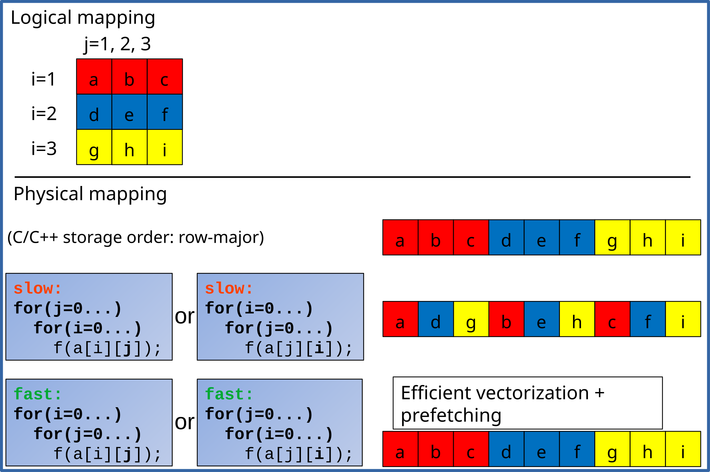

| Loop Id: 8 | Module: measure | Source: kernel.c:10-23 | Coverage: 0.49% |
|---|

| Loop Id: 8 | Module: measure | Source: kernel.c:10-23 | Coverage: 0.49% |
|---|
0x2030 MOV %R13D,%EDX |
0x2033 AND $0x3,%EDX |
0x2036 JE 24d0 |
0x203c CMP $0x1,%EDX |
0x203f JE 2ae0 |
0x2045 CMP $0x2,%EDX |
0x2048 JE 3100 |
0x204e CMPL $0x2,-0x80(%RBP) |
0x2052 JBE 389b |
0x2058 MOV -0x50(%RBP),%R10 |
0x205c LEA 0x4(%RBX),%RSI |
0x2060 CMP %RSI,%R15 |
0x2063 MOV %RSI,-0x48(%RBP) |
0x2067 SETAE %AL |
0x206a CMP %R10,%RBX |
0x206d SETAE %R8B |
0x2071 OR %R8B,%AL |
0x2074 JE 2ed0 |
0x207a MOV -0xa0(%RBP),%RDI |
0x2081 MOV %R15,%R9 |
0x2084 SUB %RDI,%R9 |
0x2087 CMP $0x8,%R9 |
0x208b JBE 2ed0 |
0x2091 VBROADCASTSS (%RBX),%XMM4 |
0x2096 MOV %R15,%R14 |
0x2099 VMOVHPS %XMM4,-0x130(%RBP) |
0x20a1 VMOVAPS -0x130(%RBP),%XMM8 |
0x20a9 VCVTPS2PD %XMM4,%XMM7 |
0x20ad VCVTPS2PD %XMM8,%XMM9 |
0x20b2 VINSERTF128 $0x1,%XMM9,%YMM7,%YMM0 |
0x20b8 CALL 1130 <.plt.sec@start> |
0x20bd VMOVDDUP 0x1f53(%RIP),%XMM10 |
0x20c5 MOV -0x38(%RBP),%RDX |
0x20c9 MOV -0x78(%RBP),%R11 |
0x20cd SUB %RDX,%R11 |
0x20d0 MOV %RDX,%R12 |
0x20d3 SUB $0x10,%R11 |
0x20d7 SHR $0x4,%R11 |
0x20db VDIVPD %XMM0,%XMM10,%XMM11 |
0x20df VEXTRACTF128 $0x1,%YMM0,%XMM0 |
0x20e5 INC %R11 |
0x20e8 AND $0x3,%R11D |
0x20ec VDIVPD %XMM0,%XMM10,%XMM12 |
0x20f0 VMOVAPD %XMM11,-0x60(%RBP) |
0x20f5 VMOVAPD %XMM12,-0x70(%RBP) |
0x20fa JE 222c |
0x2100 CMP $0x1,%R11 |
0x2104 JE 21c8 |
0x210a CMP $0x2,%R11 |
0x210e JE 216e |
0x2110 VMOVUPS (%RDX),%XMM2 |
0x2114 LEA 0x10(%R12),%R12 |
0x2119 LEA 0x10(%R15),%R14 |
0x211d VMOVHPS %XMM2,-0xb0(%RBP) |
0x2125 VMOVAPS -0xb0(%RBP),%XMM5 |
0x212d VCVTPS2PD %XMM2,%XMM13 |
0x2131 VMOVAPS %XMM2,-0x140(%RBP) |
0x2139 VCVTPS2PD %XMM5,%XMM14 |
0x213d VINSERTF128 $0x1,%XMM14,%YMM13,%YMM0 |
0x2143 CALL 1130 <.plt.sec@start> |
0x2148 VMOVAPD -0x60(%RBP),%XMM15 |
0x214d VEXTRACTF128 $0x1,%YMM0,%XMM3 |
0x2153 VMULPD -0x70(%RBP),%XMM3,%XMM7 |
0x2158 VMULPD %XMM0,%XMM15,%XMM1 |
0x215c VCVTPD2PS %XMM7,%XMM9 |
0x2160 VCVTPD2PS %XMM1,%XMM8 |
0x2164 VMOVLHPS %XMM9,%XMM8,%XMM6 |
0x2169 VMOVUPS %XMM6,(%R15) |
0x216e VMOVUPS (%R12),%XMM2 |
0x2174 ADD $0x10,%R14 |
0x2178 ADD $0x10,%R12 |
0x217c VMOVHPS %XMM2,-0xb0(%RBP) |
0x2184 VMOVAPS -0xb0(%RBP),%XMM11 |
0x218c VCVTPS2PD %XMM2,%XMM10 |
0x2190 VCVTPS2PD %XMM11,%XMM0 |
0x2195 VINSERTF128 $0x1,%XMM0,%YMM10,%YMM0 |
0x219b CALL 1130 <.plt.sec@start> |
0x21a0 VMOVAPD -0x60(%RBP),%XMM12 |
0x21a5 VEXTRACTF128 $0x1,%YMM0,%XMM4 |
0x21ab VMULPD -0x70(%RBP),%XMM4,%XMM5 |
0x21b0 VMULPD %XMM0,%XMM12,%XMM13 |
0x21b4 VCVTPD2PS %XMM5,%XMM15 |
0x21b8 VCVTPD2PS %XMM13,%XMM14 |
0x21bd VMOVLHPS %XMM15,%XMM14,%XMM1 |
0x21c2 VMOVUPS %XMM1,-0x10(%R14) |
0x21c8 VMOVUPS (%R12),%XMM5 |
0x21ce ADD $0x10,%R12 |
0x21d2 ADD $0x10,%R14 |
0x21d6 VMOVHPS %XMM5,-0xb0(%RBP) |
0x21de VMOVAPS -0xb0(%RBP),%XMM7 |
0x21e6 VCVTPS2PD %XMM5,%XMM3 |
0x21ea VCVTPS2PD %XMM7,%XMM8 |
0x21ee VINSERTF128 $0x1,%XMM8,%YMM3,%YMM0 |
0x21f4 CALL 1130 <.plt.sec@start> |
0x21f9 VMOVAPD -0x60(%RBP),%XMM9 |
0x21fe VEXTRACTF128 $0x1,%YMM0,%XMM10 |
0x2204 VMULPD -0x70(%RBP),%XMM10,%XMM2 |
0x2209 MOV -0x78(%RBP),%RCX |
0x220d VMULPD %XMM0,%XMM9,%XMM6 |
0x2211 VCVTPD2PS %XMM2,%XMM0 |
0x2215 VCVTPD2PS %XMM6,%XMM11 |
0x2219 VMOVLHPS %XMM0,%XMM11,%XMM12 |
0x221d VMOVUPS %XMM12,-0x10(%R14) |
0x2223 CMP %RCX,%R12 |
0x2226 JE 239d |
(15) 0x222c VMOVUPS (%R12),%XMM13 |
(15) 0x2232 ADD $0x40,%R12 |
(15) 0x2236 ADD $0x40,%R14 |
(15) 0x223a VMOVAPS -0xb0(%RBP),%XMM14 |
(15) 0x2242 VCVTPS2PD %XMM13,%XMM4 |
(15) 0x2247 VMOVHLPS %XMM13,%XMM14,%XMM15 |
(15) 0x224c VCVTPS2PD %XMM15,%XMM1 |
(15) 0x2251 VMOVAPS %XMM15,-0xb0(%RBP) |
(15) 0x2259 VINSERTF128 $0x1,%XMM1,%YMM4,%YMM0 |
(15) 0x225f CALL 1130 <.plt.sec@start> |
(15) 0x2264 VMOVAPD -0x60(%RBP),%XMM3 |
(15) 0x2269 VEXTRACTF128 $0x1,%YMM0,%XMM7 |
(15) 0x226f VMULPD -0x70(%RBP),%XMM7,%XMM8 |
(15) 0x2274 VMULPD %XMM0,%XMM3,%XMM5 |
(15) 0x2278 VMOVAPS -0xb0(%RBP),%XMM0 |
(15) 0x2280 VCVTPD2PS %XMM5,%XMM9 |
(15) 0x2284 VCVTPD2PS %XMM8,%XMM6 |
(15) 0x2289 VMOVLHPS %XMM6,%XMM9,%XMM10 |
(15) 0x228d VMOVUPS %XMM10,-0x40(%R14) |
(15) 0x2293 VMOVUPS -0x30(%R12),%XMM2 |
(15) 0x229a VMOVHLPS %XMM2,%XMM0,%XMM12 |
(15) 0x229e VCVTPS2PD %XMM2,%XMM11 |
(15) 0x22a2 VCVTPS2PD %XMM12,%XMM13 |
(15) 0x22a7 VMOVAPS %XMM12,-0xb0(%RBP) |
(15) 0x22af VINSERTF128 $0x1,%XMM13,%YMM11,%YMM0 |
(15) 0x22b5 CALL 1130 <.plt.sec@start> |
(15) 0x22ba VMOVAPD -0x60(%RBP),%XMM4 |
(15) 0x22bf VEXTRACTF128 $0x1,%YMM0,%XMM15 |
(15) 0x22c5 VMULPD -0x70(%RBP),%XMM15,%XMM1 |
(15) 0x22ca VMOVAPS -0xb0(%RBP),%XMM6 |
(15) 0x22d2 VMULPD %XMM0,%XMM4,%XMM14 |
(15) 0x22d6 VCVTPD2PS %XMM1,%XMM5 |
(15) 0x22da VCVTPD2PS %XMM14,%XMM3 |
(15) 0x22df VMOVLHPS %XMM5,%XMM3,%XMM7 |
(15) 0x22e3 VMOVUPS %XMM7,-0x30(%R14) |
(15) 0x22e9 VMOVUPS -0x20(%R12),%XMM8 |
(15) 0x22f0 VMOVHLPS %XMM8,%XMM6,%XMM10 |
(15) 0x22f5 VCVTPS2PD %XMM8,%XMM9 |
(15) 0x22fa VCVTPS2PD %XMM10,%XMM2 |
(15) 0x22ff VMOVAPS %XMM10,-0xb0(%RBP) |
(15) 0x2307 VINSERTF128 $0x1,%XMM2,%YMM9,%YMM0 |
(15) 0x230d CALL 1130 <.plt.sec@start> |
(15) 0x2312 VMOVAPD -0x60(%RBP),%XMM11 |
(15) 0x2317 VMOVAPS -0xb0(%RBP),%XMM1 |
(15) 0x231f VMULPD %XMM0,%XMM11,%XMM12 |
(15) 0x2323 VEXTRACTF128 $0x1,%YMM0,%XMM0 |
(15) 0x2329 VMULPD -0x70(%RBP),%XMM0,%XMM13 |
(15) 0x232e VCVTPD2PS %XMM12,%XMM4 |
(15) 0x2333 VCVTPD2PS %XMM13,%XMM14 |
(15) 0x2338 VMOVLHPS %XMM14,%XMM4,%XMM15 |
(15) 0x233d VMOVUPS %XMM15,-0x20(%R14) |
(15) 0x2343 VMOVUPS -0x10(%R12),%XMM3 |
(15) 0x234a VMOVHLPS %XMM3,%XMM1,%XMM7 |
(15) 0x234e VCVTPS2PD %XMM3,%XMM5 |
(15) 0x2352 VCVTPS2PD %XMM7,%XMM8 |
(15) 0x2356 VMOVAPS %XMM7,-0xb0(%RBP) |
(15) 0x235e VINSERTF128 $0x1,%XMM8,%YMM5,%YMM0 |
(15) 0x2364 CALL 1130 <.plt.sec@start> |
(15) 0x2369 VMOVAPD -0x60(%RBP),%XMM9 |
(15) 0x236e VEXTRACTF128 $0x1,%YMM0,%XMM10 |
(15) 0x2374 VMULPD -0x70(%RBP),%XMM10,%XMM2 |
(15) 0x2379 MOV -0x78(%RBP),%RSI |
(15) 0x237d VMULPD %XMM0,%XMM9,%XMM6 |
(15) 0x2381 VCVTPD2PS %XMM2,%XMM12 |
(15) 0x2385 VCVTPD2PS %XMM6,%XMM11 |
(15) 0x2389 VMOVLHPS %XMM12,%XMM11,%XMM0 |
(15) 0x238e VMOVUPS %XMM0,-0x10(%R14) |
(15) 0x2394 CMP %RSI,%R12 |
(15) 0x2397 JNE 222c |
0x239d MOV -0x7c(%RBP),%R14D |
0x23a1 TEST $0x3,%R14B |
0x23a5 JE 2490 |
0x23ab MOV -0xb8(%RBP),%RAX |
0x23b2 VXORPD %XMM13,%XMM13,%XMM13 |
0x23b7 VCVTSS2SD (%RAX),%XMM13,%XMM0 |
0x23bb VZEROUPPER |
0x23be CALL 11d0 <.plt.sec@start+0xa0> |
0x23c3 VXORPD %XMM4,%XMM4,%XMM4 |
0x23c7 VMOVQ %XMM0,%R12 |
0x23cc VCVTSS2SD (%RBX),%XMM4,%XMM0 |
0x23d0 CALL 11d0 <.plt.sec@start+0xa0> |
0x23d5 VMOVQ %R12,%XMM14 |
0x23da MOV -0xd8(%RBP),%R10 |
0x23e1 VDIVSD %XMM0,%XMM14,%XMM15 |
0x23e5 VCVTSD2SS %XMM15,%XMM15,%XMM3 |
0x23ea VMOVSS %XMM3,(%R15,%R10,4) |
0x23f0 CMP %R14D,-0xbc(%RBP) |
0x23f7 JAE 2490 |
0x23fd MOV -0xe0(%RBP),%R8 |
0x2404 VXORPD %XMM5,%XMM5,%XMM5 |
0x2408 VCVTSS2SD (%R8),%XMM5,%XMM0 |
0x240d CALL 11d0 <.plt.sec@start+0xa0> |
0x2412 VXORPD %XMM1,%XMM1,%XMM1 |
0x2416 VMOVQ %XMM0,%R12 |
0x241b VCVTSS2SD (%RBX),%XMM1,%XMM0 |
0x241f CALL 11d0 <.plt.sec@start+0xa0> |
0x2424 VMOVQ %R12,%XMM7 |
0x2429 MOV -0xf8(%RBP),%R9 |
0x2430 VDIVSD %XMM0,%XMM7,%XMM8 |
0x2434 VCVTSD2SS %XMM8,%XMM8,%XMM9 |
0x2439 VMOVSS %XMM9,(%R15,%R9,4) |
0x243f CMP %R14D,-0xc0(%RBP) |
0x2446 JAE 2490 |
0x2448 MOV -0x100(%RBP),%RDI |
0x244f VXORPD %XMM6,%XMM6,%XMM6 |
0x2453 VCVTSS2SD (%RDI),%XMM6,%XMM0 |
0x2457 CALL 11d0 <.plt.sec@start+0xa0> |
0x245c VXORPD %XMM10,%XMM10,%XMM10 |
0x2461 VMOVQ %XMM0,%R14 |
0x2466 VCVTSS2SD (%RBX),%XMM10,%XMM0 |
0x246a CALL 11d0 <.plt.sec@start+0xa0> |
0x246f VMOVQ %R14,%XMM2 |
0x2474 MOV -0x108(%RBP),%RBX |
0x247b VDIVSD %XMM0,%XMM2,%XMM11 |
0x247f VCVTSD2SS %XMM11,%XMM11,%XMM12 |
0x2484 VMOVSS %XMM12,(%R15,%RBX,4) |
0x248a NOPW (%RAX,%RAX,1) |
0x2490 MOV -0x98(%RBP),%RSI |
0x2497 INC %R13D |
0x249a ADD %RSI,-0x50(%RBP) |
0x249e MOV -0x48(%RBP),%RBX |
0x24a2 ADD %RSI,%R15 |
0x24a5 CMP %R13D,-0x7c(%RBP) |
0x24a9 JNE 2030 |
0x24d0 CMPL $0x2,-0x80(%RBP) |
0x24d4 JBE 2ac0 |
0x24da MOV -0x50(%RBP),%RAX |
0x24de LEA 0x4(%RBX),%R11 |
0x24e2 CMP %R11,%R15 |
0x24e5 MOV %R11,-0x48(%RBP) |
0x24e9 SETAE %SIL |
0x24ed CMP %RAX,%RBX |
0x24f0 SETAE %R10B |
0x24f4 OR %R10B,%SIL |
0x24f7 JE 28c0 |
0x24fd MOV -0xa0(%RBP),%R9 |
0x2504 MOV %R15,%R8 |
0x2507 SUB %R9,%R8 |
0x250a CMP $0x8,%R8 |
0x250e JBE 28c0 |
0x2514 VBROADCASTSS (%RBX),%XMM1 |
0x2519 MOV %R15,%R14 |
0x251c VMOVHPS %XMM1,-0xd0(%RBP) |
0x2524 VMOVAPS -0xd0(%RBP),%XMM7 |
0x252c VCVTPS2PD %XMM1,%XMM0 |
0x2530 VCVTPS2PD %XMM7,%XMM2 |
0x2534 VINSERTF128 $0x1,%XMM2,%YMM0,%YMM0 |
0x253a CALL 1180 <.plt.sec@start+0x50> |
0x253f MOV -0x38(%RBP),%RDX |
0x2543 MOV -0x78(%RBP),%RDI |
0x2547 VEXTRACTF128 $0x1,%YMM0,-0x70(%RBP) |
0x254e VMOVAPD %XMM0,-0x60(%RBP) |
0x2553 MOV %RDX,%R12 |
0x2556 SUB %RDX,%RDI |
0x2559 SUB $0x10,%RDI |
0x255d SHR $0x4,%RDI |
0x2561 INC %RDI |
0x2564 AND $0x3,%EDI |
0x2567 JE 2645 |
0x256d CMP $0x1,%RDI |
0x2571 JE 25db |
0x2573 CMP $0x2,%RDI |
0x2577 JNE 38b2 |
0x257d VMOVUPS (%R12),%XMM3 |
0x2583 ADD $0x10,%R14 |
0x2587 ADD $0x10,%R12 |
0x258b VMOVHPS %XMM3,-0x90(%RBP) |
0x2593 VMOVAPS -0x90(%RBP),%XMM2 |
0x259b VCVTPS2PD %XMM3,%XMM0 |
0x259f VCVTPS2PD %XMM2,%XMM7 |
0x25a3 VINSERTF128 $0x1,%XMM7,%YMM0,%YMM0 |
0x25a9 CALL 1170 <.plt.sec@start+0x40> |
0x25ae VMOVAPD -0x60(%RBP),%XMM4 |
0x25b3 VMOVAPD -0x70(%RBP),%XMM9 |
0x25b8 VEXTRACTF128 $0x1,%YMM0,%XMM8 |
0x25be VDIVPD %XMM0,%XMM4,%XMM5 |
0x25c2 VDIVPD %XMM8,%XMM9,%XMM10 |
0x25c7 VCVTPD2PS %XMM5,%XMM11 |
0x25cb VCVTPD2PS %XMM10,%XMM12 |
0x25d0 VMOVLHPS %XMM12,%XMM11,%XMM13 |
0x25d5 VMOVUPS %XMM13,-0x10(%R14) |
0x25db VMOVUPS (%R12),%XMM4 |
0x25e1 ADD $0x10,%R12 |
0x25e5 ADD $0x10,%R14 |
0x25e9 VMOVHPS %XMM4,-0x90(%RBP) |
0x25f1 VMOVAPS -0x90(%RBP),%XMM15 |
0x25f9 VCVTPS2PD %XMM4,%XMM14 |
0x25fd VCVTPS2PD %XMM15,%XMM1 |
0x2602 VINSERTF128 $0x1,%XMM1,%YMM14,%YMM0 |
0x2608 CALL 1170 <.plt.sec@start+0x40> |
0x260d VMOVAPD -0x60(%RBP),%XMM2 |
0x2612 VMOVAPD -0x70(%RBP),%XMM7 |
0x2617 MOV -0x78(%RBP),%RCX |
0x261b VDIVPD %XMM0,%XMM2,%XMM6 |
0x261f VEXTRACTF128 $0x1,%YMM0,%XMM0 |
0x2625 VDIVPD %XMM0,%XMM7,%XMM5 |
0x2629 VCVTPD2PS %XMM6,%XMM8 |
0x262d VCVTPD2PS %XMM5,%XMM9 |
0x2631 VMOVLHPS %XMM9,%XMM8,%XMM10 |
0x2636 VMOVUPS %XMM10,-0x10(%R14) |
0x263c CMP %RCX,%R12 |
0x263f JE 27c5 |
(9) 0x2645 VMOVUPS (%R12),%XMM11 |
(9) 0x264b ADD $0x40,%R12 |
(9) 0x264f ADD $0x40,%R14 |
(9) 0x2653 VMOVAPS -0x90(%RBP),%XMM13 |
(9) 0x265b VCVTPS2PD %XMM11,%XMM12 |
(9) 0x2660 VMOVHLPS %XMM11,%XMM13,%XMM14 |
(9) 0x2665 VCVTPS2PD %XMM14,%XMM4 |
(9) 0x266a VMOVAPS %XMM14,-0x90(%RBP) |
(9) 0x2672 VINSERTF128 $0x1,%XMM4,%YMM12,%YMM0 |
(9) 0x2678 CALL 1170 <.plt.sec@start+0x40> |
(9) 0x267d VMOVAPD -0x60(%RBP),%XMM1 |
(9) 0x2682 VMOVAPD -0x70(%RBP),%XMM6 |
(9) 0x2687 VEXTRACTF128 $0x1,%YMM0,%XMM2 |
(9) 0x268d VMOVAPS -0x90(%RBP),%XMM11 |
(9) 0x2695 VDIVPD %XMM0,%XMM1,%XMM3 |
(9) 0x2699 VDIVPD %XMM2,%XMM6,%XMM0 |
(9) 0x269d VCVTPD2PS %XMM3,%XMM7 |
(9) 0x26a1 VCVTPD2PS %XMM0,%XMM5 |
(9) 0x26a5 VMOVLHPS %XMM5,%XMM7,%XMM8 |
(9) 0x26a9 VMOVUPS %XMM8,-0x40(%R14) |
(9) 0x26af VMOVUPS -0x30(%R12),%XMM9 |
(9) 0x26b6 VMOVHLPS %XMM9,%XMM11,%XMM12 |
(9) 0x26bb VCVTPS2PD %XMM9,%XMM10 |
(9) 0x26c0 VCVTPS2PD %XMM12,%XMM13 |
(9) 0x26c5 VMOVAPS %XMM12,-0x90(%RBP) |
(9) 0x26cd VINSERTF128 $0x1,%XMM13,%YMM10,%YMM0 |
(9) 0x26d3 CALL 1170 <.plt.sec@start+0x40> |
(9) 0x26d8 VMOVAPD -0x60(%RBP),%XMM4 |
(9) 0x26dd VMOVAPD -0x70(%RBP),%XMM3 |
(9) 0x26e2 VEXTRACTF128 $0x1,%YMM0,%XMM1 |
(9) 0x26e8 VMOVAPS -0x90(%RBP),%XMM9 |
(9) 0x26f0 VDIVPD %XMM0,%XMM4,%XMM15 |
(9) 0x26f4 VDIVPD %XMM1,%XMM3,%XMM6 |
(9) 0x26f8 VCVTPD2PS %XMM15,%XMM2 |
(9) 0x26fd VCVTPD2PS %XMM6,%XMM0 |
(9) 0x2701 VMOVLHPS %XMM0,%XMM2,%XMM7 |
(9) 0x2705 VMOVUPS %XMM7,-0x30(%R14) |
(9) 0x270b VMOVUPS -0x20(%R12),%XMM5 |
(9) 0x2712 VMOVHLPS %XMM5,%XMM9,%XMM10 |
(9) 0x2716 VCVTPS2PD %XMM5,%XMM8 |
(9) 0x271a VCVTPS2PD %XMM10,%XMM11 |
(9) 0x271f VMOVAPS %XMM10,-0x90(%RBP) |
(9) 0x2727 VINSERTF128 $0x1,%XMM11,%YMM8,%YMM0 |
(9) 0x272d CALL 1170 <.plt.sec@start+0x40> |
(9) 0x2732 VMOVAPD -0x60(%RBP),%XMM13 |
(9) 0x2737 VMOVAPD -0x70(%RBP),%XMM15 |
(9) 0x273c VEXTRACTF128 $0x1,%YMM0,%XMM4 |
(9) 0x2742 VMOVAPS -0x90(%RBP),%XMM5 |
(9) 0x274a VDIVPD %XMM0,%XMM13,%XMM14 |
(9) 0x274e VDIVPD %XMM4,%XMM15,%XMM1 |
(9) 0x2752 VCVTPD2PS %XMM14,%XMM3 |
(9) 0x2757 VCVTPD2PS %XMM1,%XMM6 |
(9) 0x275b VMOVLHPS %XMM6,%XMM3,%XMM2 |
(9) 0x275f VMOVUPS %XMM2,-0x20(%R14) |
(9) 0x2765 VMOVUPS -0x10(%R12),%XMM7 |
(9) 0x276c VMOVHLPS %XMM7,%XMM5,%XMM8 |
(9) 0x2770 VCVTPS2PD %XMM7,%XMM0 |
(9) 0x2774 VCVTPS2PD %XMM8,%XMM9 |
(9) 0x2779 VMOVAPS %XMM8,-0x90(%RBP) |
(9) 0x2781 VINSERTF128 $0x1,%XMM9,%YMM0,%YMM0 |
(9) 0x2787 CALL 1170 <.plt.sec@start+0x40> |
(9) 0x278c VMOVAPD -0x60(%RBP),%XMM11 |
(9) 0x2791 VMOVAPD -0x70(%RBP),%XMM14 |
(9) 0x2796 VEXTRACTF128 $0x1,%YMM0,%XMM13 |
(9) 0x279c MOV -0x78(%RBP),%R11 |
(9) 0x27a0 VDIVPD %XMM0,%XMM11,%XMM12 |
(9) 0x27a4 VDIVPD %XMM13,%XMM14,%XMM4 |
(9) 0x27a9 VCVTPD2PS %XMM12,%XMM15 |
(9) 0x27ae VCVTPD2PS %XMM4,%XMM1 |
(9) 0x27b2 VMOVLHPS %XMM1,%XMM15,%XMM3 |
(9) 0x27b6 VMOVUPS %XMM3,-0x10(%R14) |
(9) 0x27bc CMP %R11,%R12 |
(9) 0x27bf JNE 2645 |
0x27c5 MOV -0x10c(%RBP),%ESI |
0x27cb TEST %ESI,%ESI |
0x27cd JE 2490 |
0x27d3 VXORPD %XMM6,%XMM6,%XMM6 |
0x27d7 VCVTSS2SD (%RBX),%XMM6,%XMM0 |
0x27db VZEROUPPER |
0x27de CALL 11f0 <.plt.sec@start+0xc0> |
0x27e3 MOV -0xb8(%RBP),%RAX |
0x27ea VXORPD %XMM2,%XMM2,%XMM2 |
0x27ee VMOVQ %XMM0,%R12 |
0x27f3 VCVTSS2SD (%RAX),%XMM2,%XMM0 |
0x27f7 CALL 1190 <.plt.sec@start+0x60> |
0x27fc VMOVQ %R12,%XMM7 |
0x2801 MOV -0xd8(%RBP),%R10 |
0x2808 VDIVSD %XMM0,%XMM7,%XMM0 |
0x280c MOV -0x7c(%RBP),%R14D |
0x2810 VCVTSD2SS %XMM0,%XMM0,%XMM5 |
0x2814 VMOVSS %XMM5,(%R15,%R10,4) |
0x281a CMP %R14D,-0xbc(%RBP) |
0x2821 JAE 2490 |
0x2827 VXORPD %XMM8,%XMM8,%XMM8 |
0x282c VCVTSS2SD (%RBX),%XMM8,%XMM0 |
0x2830 CALL 11f0 <.plt.sec@start+0xc0> |
0x2835 MOV -0xe0(%RBP),%R8 |
0x283c VXORPD %XMM9,%XMM9,%XMM9 |
0x2841 VMOVQ %XMM0,%R12 |
0x2846 VCVTSS2SD (%R8),%XMM9,%XMM0 |
0x284b CALL 1190 <.plt.sec@start+0x60> |
0x2850 VMOVQ %R12,%XMM10 |
0x2855 MOV -0xf8(%RBP),%R9 |
0x285c VDIVSD %XMM0,%XMM10,%XMM11 |
0x2860 VCVTSD2SS %XMM11,%XMM11,%XMM12 |
0x2865 VMOVSS %XMM12,(%R15,%R9,4) |
0x286b CMP %R14D,-0xc0(%RBP) |
0x2872 JAE 2490 |
0x2878 VXORPD %XMM13,%XMM13,%XMM13 |
0x287d VCVTSS2SD (%RBX),%XMM13,%XMM0 |
0x2881 CALL 11f0 <.plt.sec@start+0xc0> |
0x2886 MOV -0x100(%RBP),%RDX |
0x288d VXORPD %XMM14,%XMM14,%XMM14 |
0x2892 VMOVQ %XMM0,%RBX |
0x2897 VCVTSS2SD (%RDX),%XMM14,%XMM0 |
0x289b CALL 1190 <.plt.sec@start+0x60> |
0x28a0 VMOVQ %RBX,%XMM4 |
0x28a5 MOV -0x108(%RBP),%RDI |
0x28ac VDIVSD %XMM0,%XMM4,%XMM15 |
0x28b0 VCVTSD2SS %XMM15,%XMM15,%XMM1 |
0x28b5 VMOVSS %XMM1,(%R15,%RDI,4) |
0x28bb JMP 2490 |
0x28c0 MOV -0x38(%RBP),%R12 |
0x28c4 MOV %R15,%R14 |
0x28c7 MOV %R12,%RCX |
0x28ca MOV -0x40(%RBP),%R11 |
0x28ce SUB %RCX,%R11 |
0x28d1 SUB $0x4,%R11 |
0x28d5 SHR $0x2,%R11 |
0x28d9 INC %R11 |
0x28dc AND $0x3,%R11D |
0x28e0 JE 30e0 |
0x28e6 CMP $0x1,%R11 |
0x28ea JE 30d0 |
0x28f0 CMP $0x2,%R11 |
0x28f4 JE 30f0 |
0x28fa VXORPD %XMM3,%XMM3,%XMM3 |
0x28fe VCVTSS2SD (%RBX),%XMM3,%XMM0 |
0x2902 VZEROUPPER |
0x2905 CALL 11f0 <.plt.sec@start+0xc0> |
0x290a MOV -0x38(%RBP),%R14 |
0x290e VXORPD %XMM6,%XMM6,%XMM6 |
0x2912 VMOVQ %XMM0,%R12 |
0x2917 VCVTSS2SD (%R14),%XMM6,%XMM0 |
0x291c CALL 1190 <.plt.sec@start+0x60> |
0x2921 VMOVQ %R12,%XMM2 |
0x2926 LEA 0x4(%R14),%R12 |
0x292a LEA 0x4(%R15),%R14 |
0x292e VDIVSD %XMM0,%XMM2,%XMM7 |
0x2932 VCVTSD2SS %XMM7,%XMM7,%XMM0 |
0x2936 VMOVSS %XMM0,(%R15) |
0x293b VXORPD %XMM5,%XMM5,%XMM5 |
0x293f ADD $0x4,%R12 |
0x2943 ADD $0x4,%R14 |
0x2947 VCVTSS2SD (%RBX),%XMM5,%XMM0 |
0x294b CALL 11f0 <.plt.sec@start+0xc0> |
0x2950 VXORPD %XMM8,%XMM8,%XMM8 |
0x2955 VMOVSD %XMM0,-0x60(%RBP) |
0x295a VCVTSS2SD -0x4(%R12),%XMM8,%XMM0 |
0x2961 CALL 1190 <.plt.sec@start+0x60> |
0x2966 VMOVSD -0x60(%RBP),%XMM9 |
0x296b VDIVSD %XMM0,%XMM9,%XMM10 |
0x296f VCVTSD2SS %XMM10,%XMM10,%XMM11 |
0x2974 VMOVSS %XMM11,-0x4(%R14) |
0x297a VXORPD %XMM12,%XMM12,%XMM12 |
0x297f ADD $0x4,%R12 |
0x2983 ADD $0x4,%R14 |
0x2987 VCVTSS2SD (%RBX),%XMM12,%XMM0 |
0x298b CALL 11f0 <.plt.sec@start+0xc0> |
0x2990 VXORPD %XMM13,%XMM13,%XMM13 |
0x2995 VMOVSD %XMM0,-0x60(%RBP) |
0x299a VCVTSS2SD -0x4(%R12),%XMM13,%XMM0 |
0x29a1 CALL 1190 <.plt.sec@start+0x60> |
0x29a6 VMOVSD -0x60(%RBP),%XMM14 |
0x29ab MOV -0x40(%RBP),%RCX |
0x29af VDIVSD %XMM0,%XMM14,%XMM4 |
0x29b3 VCVTSD2SS %XMM4,%XMM4,%XMM15 |
0x29b7 VMOVSS %XMM15,-0x4(%R14) |
0x29bd CMP %RCX,%R12 |
0x29c0 JE 2490 |
(7) 0x29c6 VXORPD %XMM1,%XMM1,%XMM1 |
(7) 0x29ca ADD $0x10,%R12 |
(7) 0x29ce ADD $0x10,%R14 |
(7) 0x29d2 VCVTSS2SD (%RBX),%XMM1,%XMM0 |
(7) 0x29d6 CALL 11f0 <.plt.sec@start+0xc0> |
(7) 0x29db VXORPD %XMM3,%XMM3,%XMM3 |
(7) 0x29df VMOVSD %XMM0,-0x60(%RBP) |
(7) 0x29e4 VCVTSS2SD -0x10(%R12),%XMM3,%XMM0 |
(7) 0x29eb CALL 1190 <.plt.sec@start+0x60> |
(7) 0x29f0 VMOVSD -0x60(%RBP),%XMM6 |
(7) 0x29f5 VDIVSD %XMM0,%XMM6,%XMM2 |
(7) 0x29f9 VXORPD %XMM0,%XMM0,%XMM0 |
(7) 0x29fd VCVTSD2SS %XMM2,%XMM2,%XMM7 |
(7) 0x2a01 VMOVSS %XMM7,-0x10(%R14) |
(7) 0x2a07 VCVTSS2SD (%RBX),%XMM0,%XMM0 |
(7) 0x2a0b CALL 11f0 <.plt.sec@start+0xc0> |
(7) 0x2a10 VXORPD %XMM5,%XMM5,%XMM5 |
(7) 0x2a14 VMOVSD %XMM0,-0x60(%RBP) |
(7) 0x2a19 VCVTSS2SD -0xc(%R12),%XMM5,%XMM0 |
(7) 0x2a20 CALL 1190 <.plt.sec@start+0x60> |
(7) 0x2a25 VMOVSD -0x60(%RBP),%XMM8 |
(7) 0x2a2a VXORPD %XMM11,%XMM11,%XMM11 |
(7) 0x2a2f VDIVSD %XMM0,%XMM8,%XMM9 |
(7) 0x2a33 VCVTSD2SS %XMM9,%XMM9,%XMM10 |
(7) 0x2a38 VMOVSS %XMM10,-0xc(%R14) |
(7) 0x2a3e VCVTSS2SD (%RBX),%XMM11,%XMM0 |
(7) 0x2a42 CALL 11f0 <.plt.sec@start+0xc0> |
(7) 0x2a47 VXORPD %XMM12,%XMM12,%XMM12 |
(7) 0x2a4c VMOVSD %XMM0,-0x60(%RBP) |
(7) 0x2a51 VCVTSS2SD -0x8(%R12),%XMM12,%XMM0 |
(7) 0x2a58 CALL 1190 <.plt.sec@start+0x60> |
(7) 0x2a5d VMOVSD -0x60(%RBP),%XMM13 |
(7) 0x2a62 VXORPD %XMM15,%XMM15,%XMM15 |
(7) 0x2a67 VDIVSD %XMM0,%XMM13,%XMM14 |
(7) 0x2a6b VCVTSD2SS %XMM14,%XMM14,%XMM4 |
(7) 0x2a70 VMOVSS %XMM4,-0x8(%R14) |
(7) 0x2a76 VCVTSS2SD (%RBX),%XMM15,%XMM0 |
(7) 0x2a7a CALL 11f0 <.plt.sec@start+0xc0> |
(7) 0x2a7f VXORPD %XMM1,%XMM1,%XMM1 |
(7) 0x2a83 VMOVSD %XMM0,-0x60(%RBP) |
(7) 0x2a88 VCVTSS2SD -0x4(%R12),%XMM1,%XMM0 |
(7) 0x2a8f CALL 1190 <.plt.sec@start+0x60> |
(7) 0x2a94 VMOVSD -0x60(%RBP),%XMM3 |
(7) 0x2a99 MOV -0x40(%RBP),%RSI |
(7) 0x2a9d VDIVSD %XMM0,%XMM3,%XMM6 |
(7) 0x2aa1 VCVTSD2SS %XMM6,%XMM6,%XMM2 |
(7) 0x2aa5 VMOVSS %XMM2,-0x4(%R14) |
(7) 0x2aab CMP %RSI,%R12 |
(7) 0x2aae JNE 29c6 |
0x2ab4 JMP 2490 |
0x2ac0 MOV -0x38(%RBP),%R12 |
0x2ac4 LEA 0x4(%RBX),%RDI |
0x2ac8 MOV %R15,%R14 |
0x2acb MOV %RDI,-0x48(%RBP) |
0x2acf MOV %R12,%RCX |
0x2ad2 JMP 28ca |
0x2ae0 CMPL $0x2,-0x80(%RBP) |
0x2ae4 JBE 3974 |
0x2aea MOV -0x50(%RBP),%RDX |
0x2aee LEA 0x4(%RBX),%R8 |
0x2af2 CMP %R8,%R15 |
0x2af5 MOV %R8,-0x48(%RBP) |
0x2af9 SETAE %R9B |
0x2afd CMP %RDX,%RBX |
0x2b00 SETAE %DIL |
0x2b04 OR %DIL,%R9B |
0x2b07 JE 36e0 |
0x2b0d MOV -0xa0(%RBP),%RCX |
0x2b14 MOV %R15,%R11 |
0x2b17 SUB %RCX,%R11 |
0x2b1a CMP $0x8,%R11 |
0x2b1e JBE 36e0 |
0x2b24 VBROADCASTSS (%RBX),%XMM7 |
0x2b29 MOV %R15,%R14 |
0x2b2c VMOVHPS %XMM7,-0x150(%RBP) |
0x2b34 VMOVAPS -0x150(%RBP),%XMM5 |
0x2b3c VCVTPS2PD %XMM7,%XMM0 |
0x2b40 VCVTPS2PD %XMM5,%XMM8 |
0x2b44 VINSERTF128 $0x1,%XMM8,%YMM0,%YMM0 |
0x2b4a CALL 1130 <.plt.sec@start> |
0x2b4f MOV -0x38(%RBP),%RSI |
0x2b53 MOV -0x78(%RBP),%RAX |
0x2b57 VEXTRACTF128 $0x1,%YMM0,-0x70(%RBP) |
0x2b5e VMOVAPD %XMM0,-0x60(%RBP) |
0x2b63 MOV %RSI,%R12 |
0x2b66 SUB %RSI,%RAX |
0x2b69 SUB $0x10,%RAX |
0x2b6d SHR $0x4,%RAX |
0x2b71 INC %RAX |
0x2b74 AND $0x3,%EAX |
0x2b77 JE 2c58 |
0x2b7d CMP $0x1,%RAX |
0x2b81 JE 2bed |
0x2b83 CMP $0x2,%RAX |
0x2b87 JNE 39d2 |
0x2b8d VMOVUPS (%R12),%XMM6 |
0x2b93 ADD $0x10,%R14 |
0x2b97 ADD $0x10,%R12 |
0x2b9b VMOVHPS %XMM6,-0xf0(%RBP) |
0x2ba3 VMOVAPS -0xf0(%RBP),%XMM8 |
0x2bab VCVTPS2PD %XMM6,%XMM0 |
0x2baf VCVTPS2PD %XMM8,%XMM4 |
0x2bb4 VINSERTF128 $0x1,%XMM4,%YMM0,%YMM0 |
0x2bba CALL 1130 <.plt.sec@start> |
0x2bbf VMOVAPD -0x60(%RBP),%XMM5 |
0x2bc4 VMOVAPD -0x70(%RBP),%XMM12 |
0x2bc9 VEXTRACTF128 $0x1,%YMM0,%XMM11 |
0x2bcf VDIVPD %XMM0,%XMM5,%XMM10 |
0x2bd3 VDIVPD %XMM11,%XMM12,%XMM13 |
0x2bd8 VCVTPD2PS %XMM10,%XMM14 |
0x2bdd VCVTPD2PS %XMM13,%XMM15 |
0x2be2 VMOVLHPS %XMM15,%XMM14,%XMM1 |
0x2be7 VMOVUPS %XMM1,-0x10(%R14) |
0x2bed VMOVUPS (%R12),%XMM6 |
0x2bf3 ADD $0x10,%R12 |
0x2bf7 ADD $0x10,%R14 |
0x2bfb VMOVHPS %XMM6,-0xf0(%RBP) |
0x2c03 VMOVAPS -0xf0(%RBP),%XMM3 |
0x2c0b VCVTPS2PD %XMM6,%XMM2 |
0x2c0f VCVTPS2PD %XMM3,%XMM7 |
0x2c13 VINSERTF128 $0x1,%XMM7,%YMM2,%YMM0 |
0x2c19 CALL 1130 <.plt.sec@start> |
0x2c1e VMOVAPD -0x60(%RBP),%XMM4 |
0x2c23 VMOVAPD -0x70(%RBP),%XMM5 |
0x2c28 MOV -0x78(%RBP),%R10 |
0x2c2c VDIVPD %XMM0,%XMM4,%XMM9 |
0x2c30 VEXTRACTF128 $0x1,%YMM0,%XMM0 |
0x2c36 VDIVPD %XMM0,%XMM5,%XMM10 |
0x2c3a VCVTPD2PS %XMM9,%XMM11 |
0x2c3f VCVTPD2PS %XMM10,%XMM12 |
0x2c44 VMOVLHPS %XMM12,%XMM11,%XMM13 |
0x2c49 VMOVUPS %XMM13,-0x10(%R14) |
0x2c4f CMP %R10,%R12 |
0x2c52 JE 2ddb |
(11) 0x2c58 VMOVUPS (%R12),%XMM14 |
(11) 0x2c5e ADD $0x40,%R12 |
(11) 0x2c62 ADD $0x40,%R14 |
(11) 0x2c66 VMOVAPS -0xf0(%RBP),%XMM1 |
(11) 0x2c6e VCVTPS2PD %XMM14,%XMM15 |
(11) 0x2c73 VMOVHLPS %XMM14,%XMM1,%XMM6 |
(11) 0x2c78 VCVTPS2PD %XMM6,%XMM2 |
(11) 0x2c7c VMOVAPS %XMM6,-0xf0(%RBP) |
(11) 0x2c84 VINSERTF128 $0x1,%XMM2,%YMM15,%YMM0 |
(11) 0x2c8a CALL 1130 <.plt.sec@start> |
(11) 0x2c8f VMOVAPD -0x60(%RBP),%XMM7 |
(11) 0x2c94 VMOVAPD -0x70(%RBP),%XMM4 |
(11) 0x2c99 VEXTRACTF128 $0x1,%YMM0,%XMM9 |
(11) 0x2c9f VMOVAPS -0xf0(%RBP),%XMM14 |
(11) 0x2ca7 VDIVPD %XMM0,%XMM7,%XMM8 |
(11) 0x2cab VDIVPD %XMM9,%XMM4,%XMM0 |
(11) 0x2cb0 VCVTPD2PS %XMM8,%XMM5 |
(11) 0x2cb5 VCVTPD2PS %XMM0,%XMM10 |
(11) 0x2cb9 VMOVLHPS %XMM10,%XMM5,%XMM11 |
(11) 0x2cbe VMOVUPS %XMM11,-0x40(%R14) |
(11) 0x2cc4 VMOVUPS -0x30(%R12),%XMM12 |
(11) 0x2ccb VMOVHLPS %XMM12,%XMM14,%XMM15 |
(11) 0x2cd0 VCVTPS2PD %XMM12,%XMM13 |
(11) 0x2cd5 VCVTPS2PD %XMM15,%XMM1 |
(11) 0x2cda VMOVAPS %XMM15,-0xf0(%RBP) |
(11) 0x2ce2 VINSERTF128 $0x1,%XMM1,%YMM13,%YMM0 |
(11) 0x2ce8 CALL 1130 <.plt.sec@start> |
(11) 0x2ced VMOVAPD -0x60(%RBP),%XMM2 |
(11) 0x2cf2 VMOVAPD -0x70(%RBP),%XMM8 |
(11) 0x2cf7 VEXTRACTF128 $0x1,%YMM0,%XMM7 |
(11) 0x2cfd VMOVAPS -0xf0(%RBP),%XMM12 |
(11) 0x2d05 VDIVPD %XMM0,%XMM2,%XMM3 |
(11) 0x2d09 VDIVPD %XMM7,%XMM8,%XMM9 |
(11) 0x2d0d VCVTPD2PS %XMM3,%XMM4 |
(11) 0x2d11 VCVTPD2PS %XMM9,%XMM0 |
(11) 0x2d16 VMOVLHPS %XMM0,%XMM4,%XMM5 |
(11) 0x2d1a VMOVUPS %XMM5,-0x30(%R14) |
(11) 0x2d20 VMOVUPS -0x20(%R12),%XMM10 |
(11) 0x2d27 VMOVHLPS %XMM10,%XMM12,%XMM13 |
(11) 0x2d2c VCVTPS2PD %XMM10,%XMM11 |
(11) 0x2d31 VCVTPS2PD %XMM13,%XMM14 |
(11) 0x2d36 VMOVAPS %XMM13,-0xf0(%RBP) |
(11) 0x2d3e VINSERTF128 $0x1,%XMM14,%YMM11,%YMM0 |
(11) 0x2d44 CALL 1130 <.plt.sec@start> |
(11) 0x2d49 VMOVAPD -0x60(%RBP),%XMM1 |
(11) 0x2d4e VMOVAPD -0x70(%RBP),%XMM3 |
(11) 0x2d53 VEXTRACTF128 $0x1,%YMM0,%XMM2 |
(11) 0x2d59 VMOVAPS -0xf0(%RBP),%XMM10 |
(11) 0x2d61 VDIVPD %XMM0,%XMM1,%XMM6 |
(11) 0x2d65 VDIVPD %XMM2,%XMM3,%XMM7 |
(11) 0x2d69 VCVTPD2PS %XMM6,%XMM8 |
(11) 0x2d6d VCVTPD2PS %XMM7,%XMM9 |
(11) 0x2d71 VMOVLHPS %XMM9,%XMM8,%XMM4 |
(11) 0x2d76 VMOVUPS %XMM4,-0x20(%R14) |
(11) 0x2d7c VMOVUPS -0x10(%R12),%XMM5 |
(11) 0x2d83 VMOVHLPS %XMM5,%XMM10,%XMM11 |
(11) 0x2d87 VCVTPS2PD %XMM5,%XMM0 |
(11) 0x2d8b VCVTPS2PD %XMM11,%XMM12 |
(11) 0x2d90 VMOVAPS %XMM11,-0xf0(%RBP) |
(11) 0x2d98 VINSERTF128 $0x1,%XMM12,%YMM0,%YMM0 |
(11) 0x2d9e CALL 1130 <.plt.sec@start> |
(11) 0x2da3 VMOVAPD -0x60(%RBP),%XMM14 |
(11) 0x2da8 VMOVAPD -0x70(%RBP),%XMM6 |
(11) 0x2dad VEXTRACTF128 $0x1,%YMM0,%XMM1 |
(11) 0x2db3 MOV -0x78(%RBP),%R8 |
(11) 0x2db7 VDIVPD %XMM0,%XMM14,%XMM15 |
(11) 0x2dbb VDIVPD %XMM1,%XMM6,%XMM2 |
(11) 0x2dbf VCVTPD2PS %XMM15,%XMM3 |
(11) 0x2dc4 VCVTPD2PS %XMM2,%XMM7 |
(11) 0x2dc8 VMOVLHPS %XMM7,%XMM3,%XMM8 |
(11) 0x2dcc VMOVUPS %XMM8,-0x10(%R14) |
(11) 0x2dd2 CMP %R8,%R12 |
(11) 0x2dd5 JNE 2c58 |
0x2ddb MOV -0x7c(%RBP),%R14D |
0x2ddf TEST $0x3,%R14B |
0x2de3 JE 2490 |
0x2de9 VXORPD %XMM9,%XMM9,%XMM9 |
0x2dee VCVTSS2SD (%RBX),%XMM9,%XMM0 |
0x2df2 VZEROUPPER |
0x2df5 CALL 11d0 <.plt.sec@start+0xa0> |
0x2dfa MOV -0xb8(%RBP),%R9 |
0x2e01 VXORPD %XMM4,%XMM4,%XMM4 |
0x2e05 VMOVQ %XMM0,%R12 |
0x2e0a VCVTSS2SD (%R9),%XMM4,%XMM0 |
0x2e0f CALL 11d0 <.plt.sec@start+0xa0> |
0x2e14 VMOVQ %R12,%XMM5 |
0x2e19 MOV -0xd8(%RBP),%RDX |
0x2e20 VDIVSD %XMM0,%XMM5,%XMM0 |
0x2e24 VCVTSD2SS %XMM0,%XMM0,%XMM10 |
0x2e28 VMOVSS %XMM10,(%R15,%RDX,4) |
0x2e2e CMP %R14D,-0xbc(%RBP) |
0x2e35 JAE 2490 |
0x2e3b VXORPD %XMM11,%XMM11,%XMM11 |
0x2e40 VCVTSS2SD (%RBX),%XMM11,%XMM0 |
0x2e44 CALL 11d0 <.plt.sec@start+0xa0> |
0x2e49 MOV -0xe0(%RBP),%RDI |
0x2e50 VXORPD %XMM12,%XMM12,%XMM12 |
0x2e55 VMOVQ %XMM0,%R12 |
0x2e5a VCVTSS2SD (%RDI),%XMM12,%XMM0 |
0x2e5e CALL 11d0 <.plt.sec@start+0xa0> |
0x2e63 VMOVQ %R12,%XMM13 |
0x2e68 MOV -0xf8(%RBP),%R11 |
0x2e6f VDIVSD %XMM0,%XMM13,%XMM14 |
0x2e73 VCVTSD2SS %XMM14,%XMM14,%XMM15 |
0x2e78 VMOVSS %XMM15,(%R15,%R11,4) |
0x2e7e CMP %R14D,-0xc0(%RBP) |
0x2e85 JAE 2490 |
0x2e8b VXORPD %XMM1,%XMM1,%XMM1 |
0x2e8f VCVTSS2SD (%RBX),%XMM1,%XMM0 |
0x2e93 CALL 11d0 <.plt.sec@start+0xa0> |
0x2e98 MOV -0x100(%RBP),%RCX |
0x2e9f VXORPD %XMM6,%XMM6,%XMM6 |
0x2ea3 VMOVQ %XMM0,%RBX |
0x2ea8 VCVTSS2SD (%RCX),%XMM6,%XMM0 |
0x2eac CALL 11d0 <.plt.sec@start+0xa0> |
0x2eb1 VMOVQ %RBX,%XMM2 |
0x2eb6 MOV -0x108(%RBP),%RSI |
0x2ebd VDIVSD %XMM0,%XMM2,%XMM3 |
0x2ec1 VCVTSD2SS %XMM3,%XMM3,%XMM7 |
0x2ec5 VMOVSS %XMM7,(%R15,%RSI,4) |
0x2ecb JMP 2490 |
0x2ed0 MOV -0x38(%RBP),%R14 |
0x2ed4 MOV %R15,%R12 |
0x2ed7 MOV %R14,%RCX |
0x2eda MOV -0x40(%RBP),%RDX |
0x2ede SUB %RCX,%RDX |
0x2ee1 SUB $0x4,%RDX |
0x2ee5 SHR $0x2,%RDX |
0x2ee9 INC %RDX |
0x2eec AND $0x3,%EDX |
0x2eef JE 398b |
0x2ef5 CMP $0x1,%RDX |
0x2ef9 JE 3993 |
0x2eff CMP $0x2,%RDX |
0x2f03 JE 391c |
0x2f09 VXORPD %XMM0,%XMM0,%XMM0 |
0x2f0d MOV %RCX,%R14 |
0x2f10 VCVTSS2SD (%RCX),%XMM0,%XMM0 |
0x2f14 VZEROUPPER |
0x2f17 ADD $0x4,%R14 |
0x2f1b CALL 11d0 <.plt.sec@start+0xa0> |
0x2f20 VXORPD %XMM13,%XMM13,%XMM13 |
0x2f25 VMOVQ %XMM0,%R12 |
0x2f2a VCVTSS2SD (%RBX),%XMM13,%XMM0 |
0x2f2e CALL 11d0 <.plt.sec@start+0xa0> |
0x2f33 VMOVQ %R12,%XMM4 |
0x2f38 LEA 0x4(%R15),%R12 |
0x2f3c VDIVSD %XMM0,%XMM4,%XMM14 |
0x2f40 VCVTSD2SS %XMM14,%XMM14,%XMM15 |
0x2f45 VMOVSS %XMM15,(%R15) |
0x2f4a VXORPD %XMM3,%XMM3,%XMM3 |
0x2f4e ADD $0x4,%R14 |
0x2f52 ADD $0x4,%R12 |
0x2f56 VCVTSS2SD -0x4(%R14),%XMM3,%XMM0 |
0x2f5c CALL 11d0 <.plt.sec@start+0xa0> |
0x2f61 VXORPD %XMM5,%XMM5,%XMM5 |
0x2f65 VMOVSD %XMM0,-0x60(%RBP) |
0x2f6a VCVTSS2SD (%RBX),%XMM5,%XMM0 |
0x2f6e CALL 11d0 <.plt.sec@start+0xa0> |
0x2f73 VMOVSD -0x60(%RBP),%XMM1 |
0x2f78 VDIVSD %XMM0,%XMM1,%XMM7 |
0x2f7c VCVTSD2SS %XMM7,%XMM7,%XMM8 |
0x2f80 VMOVSS %XMM8,-0x4(%R12) |
0x2f87 VXORPD %XMM9,%XMM9,%XMM9 |
0x2f8c ADD $0x4,%R14 |
0x2f90 ADD $0x4,%R12 |
0x2f94 VCVTSS2SD -0x4(%R14),%XMM9,%XMM0 |
0x2f9a CALL 11d0 <.plt.sec@start+0xa0> |
0x2f9f VXORPD %XMM6,%XMM6,%XMM6 |
0x2fa3 VMOVSD %XMM0,-0x60(%RBP) |
0x2fa8 VCVTSS2SD (%RBX),%XMM6,%XMM0 |
0x2fac CALL 11d0 <.plt.sec@start+0xa0> |
0x2fb1 VMOVSD -0x60(%RBP),%XMM10 |
0x2fb6 MOV -0x40(%RBP),%R11 |
0x2fba VDIVSD %XMM0,%XMM10,%XMM2 |
0x2fbe VCVTSD2SS %XMM2,%XMM2,%XMM11 |
0x2fc2 VMOVSS %XMM11,-0x4(%R12) |
0x2fc9 CMP %R11,%R14 |
0x2fcc JE 2490 |
(14) 0x2fd2 VXORPD %XMM12,%XMM12,%XMM12 |
(14) 0x2fd7 ADD $0x10,%R14 |
(14) 0x2fdb ADD $0x10,%R12 |
(14) 0x2fdf VCVTSS2SD -0x10(%R14),%XMM12,%XMM0 |
(14) 0x2fe5 CALL 11d0 <.plt.sec@start+0xa0> |
(14) 0x2fea VMOVSD %XMM0,-0x60(%RBP) |
(14) 0x2fef VXORPD %XMM0,%XMM0,%XMM0 |
(14) 0x2ff3 VCVTSS2SD (%RBX),%XMM0,%XMM0 |
(14) 0x2ff7 CALL 11d0 <.plt.sec@start+0xa0> |
(14) 0x2ffc VMOVSD -0x60(%RBP),%XMM13 |
(14) 0x3001 VXORPD %XMM15,%XMM15,%XMM15 |
(14) 0x3006 VDIVSD %XMM0,%XMM13,%XMM4 |
(14) 0x300a VCVTSD2SS %XMM4,%XMM4,%XMM14 |
(14) 0x300e VMOVSS %XMM14,-0x10(%R12) |
(14) 0x3015 VCVTSS2SD -0xc(%R14),%XMM15,%XMM0 |
(14) 0x301b CALL 11d0 <.plt.sec@start+0xa0> |
(14) 0x3020 VXORPD %XMM3,%XMM3,%XMM3 |
(14) 0x3024 VMOVSD %XMM0,-0x60(%RBP) |
(14) 0x3029 VCVTSS2SD (%RBX),%XMM3,%XMM0 |
(14) 0x302d CALL 11d0 <.plt.sec@start+0xa0> |
(14) 0x3032 VMOVSD -0x60(%RBP),%XMM5 |
(14) 0x3037 VXORPD %XMM8,%XMM8,%XMM8 |
(14) 0x303c VDIVSD %XMM0,%XMM5,%XMM1 |
(14) 0x3040 VCVTSD2SS %XMM1,%XMM1,%XMM7 |
(14) 0x3044 VMOVSS %XMM7,-0xc(%R12) |
(14) 0x304b VCVTSS2SD -0x8(%R14),%XMM8,%XMM0 |
(14) 0x3051 CALL 11d0 <.plt.sec@start+0xa0> |
(14) 0x3056 VXORPD %XMM9,%XMM9,%XMM9 |
(14) 0x305b VMOVSD %XMM0,-0x60(%RBP) |
(14) 0x3060 VCVTSS2SD (%RBX),%XMM9,%XMM0 |
(14) 0x3064 CALL 11d0 <.plt.sec@start+0xa0> |
(14) 0x3069 VMOVSD -0x60(%RBP),%XMM6 |
(14) 0x306e VXORPD %XMM11,%XMM11,%XMM11 |
(14) 0x3073 VDIVSD %XMM0,%XMM6,%XMM10 |
(14) 0x3077 VCVTSD2SS %XMM10,%XMM10,%XMM2 |
(14) 0x307c VMOVSS %XMM2,-0x8(%R12) |
(14) 0x3083 VCVTSS2SD -0x4(%R14),%XMM11,%XMM0 |
(14) 0x3089 CALL 11d0 <.plt.sec@start+0xa0> |
(14) 0x308e VXORPD %XMM12,%XMM12,%XMM12 |
(14) 0x3093 VMOVSD %XMM0,-0x60(%RBP) |
(14) 0x3098 VCVTSS2SD (%RBX),%XMM12,%XMM0 |
(14) 0x309c CALL 11d0 <.plt.sec@start+0xa0> |
(14) 0x30a1 VMOVSD -0x60(%RBP),%XMM13 |
(14) 0x30a6 MOV -0x40(%RBP),%RCX |
(14) 0x30aa VDIVSD %XMM0,%XMM13,%XMM0 |
(14) 0x30ae VCVTSD2SS %XMM0,%XMM0,%XMM4 |
(14) 0x30b2 VMOVSS %XMM4,-0x4(%R12) |
(14) 0x30b9 CMP %RCX,%R14 |
(14) 0x30bc JNE 2fd2 |
0x30c2 JMP 2490 |
0x30d0 VZEROUPPER |
0x30d3 JMP 297a |
0x30e0 VZEROUPPER |
0x30e3 JMP 29c6 |
0x30f0 VZEROUPPER |
0x30f3 JMP 293b |
0x3100 CMPL $0x2,-0x80(%RBP) |
0x3104 JBE 399b |
0x310a MOV -0x50(%RBP),%RCX |
0x310e LEA 0x4(%RBX),%RDX |
0x3112 CMP %RDX,%R15 |
0x3115 MOV %RDX,-0x48(%RBP) |
0x3119 SETAE %R11B |
0x311d CMP %RCX,%RBX |
0x3120 SETAE %SIL |
0x3124 OR %SIL,%R11B |
0x3127 JE 34e6 |
0x312d MOV -0x38(%RBP),%RAX |
0x3131 MOV %R15,%R8 |
0x3134 LEA 0x4(%RAX),%R10 |
0x3138 SUB %R10,%R8 |
0x313b CMP $0x8,%R8 |
0x313f JBE 34e6 |
0x3145 VBROADCASTSS (%RBX),%XMM5 |
0x314a MOV %R15,%R14 |
0x314d VMOVHPS %XMM5,-0x160(%RBP) |
0x3155 VMOVAPS -0x160(%RBP),%XMM10 |
0x315d VCVTPS2PD %XMM5,%XMM0 |
0x3161 VCVTPS2PD %XMM10,%XMM11 |
0x3166 VINSERTF128 $0x1,%XMM11,%YMM0,%YMM0 |
0x316c CALL 1170 <.plt.sec@start+0x40> |
0x3171 VMOVDDUP 0xe9f(%RIP),%XMM13 |
0x3179 VEXTRACTF128 $0x1,%YMM0,%XMM15 |
0x317f MOV -0x38(%RBP),%R9 |
0x3183 MOV -0x78(%RBP),%RDI |
0x3187 SUB %R9,%RDI |
0x318a MOV %R9,%R12 |
0x318d SUB $0x10,%RDI |
0x3191 SHR $0x4,%RDI |
0x3195 VDIVPD %XMM0,%XMM13,%XMM14 |
0x3199 INC %RDI |
0x319c AND $0x3,%EDI |
0x319f VDIVPD %XMM15,%XMM13,%XMM1 |
0x31a4 VMOVAPD %XMM14,-0x70(%RBP) |
0x31a9 VMOVAPD %XMM1,-0x60(%RBP) |
0x31ae JE 3282 |
0x31b4 CMP $0x1,%RDI |
0x31b8 JE 321c |
0x31ba CMP $0x2,%RDI |
0x31be JNE 3a3b |
0x31c4 VMOVUPS (%R12),%XMM5 |
0x31ca ADD $0x10,%R14 |
0x31ce ADD $0x10,%R12 |
0x31d2 VMOVHPS %XMM5,-0x120(%RBP) |
0x31da VMOVAPS -0x120(%RBP),%XMM14 |
0x31e2 VCVTPS2PD %XMM5,%XMM13 |
0x31e6 VCVTPS2PD %XMM14,%XMM15 |
0x31eb VINSERTF128 $0x1,%XMM15,%YMM13,%YMM0 |
0x31f1 CALL 1180 <.plt.sec@start+0x50> |
0x31f6 VMOVAPD -0x70(%RBP),%XMM1 |
0x31fb VEXTRACTF128 $0x1,%YMM0,%XMM6 |
0x3201 VMULPD -0x60(%RBP),%XMM6,%XMM2 |
0x3206 VMULPD %XMM0,%XMM1,%XMM4 |
0x320a VCVTPD2PS %XMM2,%XMM7 |
0x320e VCVTPD2PS %XMM4,%XMM3 |
0x3212 VMOVLHPS %XMM7,%XMM3,%XMM8 |
0x3216 VMOVUPS %XMM8,-0x10(%R14) |
0x321c VMOVUPS (%R12),%XMM6 |
0x3222 ADD $0x10,%R12 |
0x3226 ADD $0x10,%R14 |
0x322a VMOVHPS %XMM6,-0x120(%RBP) |
0x3232 VMOVAPS -0x120(%RBP),%XMM0 |
0x323a VCVTPS2PD %XMM6,%XMM9 |
0x323e VCVTPS2PD %XMM0,%XMM10 |
0x3242 VINSERTF128 $0x1,%XMM10,%YMM9,%YMM0 |
0x3248 CALL 1180 <.plt.sec@start+0x50> |
0x324d VMOVAPD -0x70(%RBP),%XMM11 |
0x3252 VEXTRACTF128 $0x1,%YMM0,%XMM13 |
0x3258 VMULPD -0x60(%RBP),%XMM13,%XMM5 |
0x325d MOV -0x78(%RBP),%RDX |
0x3261 VMULPD %XMM0,%XMM11,%XMM12 |
0x3265 VCVTPD2PS %XMM5,%XMM15 |
0x3269 VCVTPD2PS %XMM12,%XMM14 |
0x326e VMOVLHPS %XMM15,%XMM14,%XMM1 |
0x3273 VMOVUPS %XMM1,-0x10(%R14) |
0x3279 CMP %RDX,%R12 |
0x327c JE 33f1 |
(13) 0x3282 VMOVUPS (%R12),%XMM2 |
(13) 0x3288 ADD $0x40,%R12 |
(13) 0x328c ADD $0x40,%R14 |
(13) 0x3290 VMOVAPS -0x120(%RBP),%XMM4 |
(13) 0x3298 VCVTPS2PD %XMM2,%XMM3 |
(13) 0x329c VMOVHLPS %XMM2,%XMM4,%XMM7 |
(13) 0x32a0 VCVTPS2PD %XMM7,%XMM8 |
(13) 0x32a4 VMOVAPS %XMM7,-0x120(%RBP) |
(13) 0x32ac VINSERTF128 $0x1,%XMM8,%YMM3,%YMM0 |
(13) 0x32b2 CALL 1180 <.plt.sec@start+0x50> |
(13) 0x32b7 VMOVAPD -0x70(%RBP),%XMM9 |
(13) 0x32bc VMOVAPS -0x120(%RBP),%XMM15 |
(13) 0x32c4 VMULPD %XMM0,%XMM9,%XMM6 |
(13) 0x32c8 VEXTRACTF128 $0x1,%YMM0,%XMM0 |
(13) 0x32ce VMULPD -0x60(%RBP),%XMM0,%XMM10 |
(13) 0x32d3 VCVTPD2PS %XMM6,%XMM11 |
(13) 0x32d7 VCVTPD2PS %XMM10,%XMM12 |
(13) 0x32dc VMOVLHPS %XMM12,%XMM11,%XMM13 |
(13) 0x32e1 VMOVUPS %XMM13,-0x40(%R14) |
(13) 0x32e7 VMOVUPS -0x30(%R12),%XMM5 |
(13) 0x32ee VMOVHLPS %XMM5,%XMM15,%XMM1 |
(13) 0x32f2 VCVTPS2PD %XMM5,%XMM14 |
(13) 0x32f6 VCVTPS2PD %XMM1,%XMM2 |
(13) 0x32fa VMOVAPS %XMM1,-0x120(%RBP) |
(13) 0x3302 VINSERTF128 $0x1,%XMM2,%YMM14,%YMM0 |
(13) 0x3308 CALL 1180 <.plt.sec@start+0x50> |
(13) 0x330d VMOVAPD -0x70(%RBP),%XMM3 |
(13) 0x3312 VEXTRACTF128 $0x1,%YMM0,%XMM7 |
(13) 0x3318 VMULPD -0x60(%RBP),%XMM7,%XMM8 |
(13) 0x331d VMOVAPS -0x120(%RBP),%XMM12 |
(13) 0x3325 VMULPD %XMM0,%XMM3,%XMM4 |
(13) 0x3329 VCVTPD2PS %XMM8,%XMM6 |
(13) 0x332e VCVTPD2PS %XMM4,%XMM9 |
(13) 0x3332 VMOVLHPS %XMM6,%XMM9,%XMM0 |
(13) 0x3336 VMOVUPS %XMM0,-0x30(%R14) |
(13) 0x333c VMOVUPS -0x20(%R12),%XMM10 |
(13) 0x3343 VMOVHLPS %XMM10,%XMM12,%XMM13 |
(13) 0x3348 VCVTPS2PD %XMM10,%XMM11 |
(13) 0x334d VCVTPS2PD %XMM13,%XMM5 |
(13) 0x3352 VMOVAPS %XMM13,-0x120(%RBP) |
(13) 0x335a VINSERTF128 $0x1,%XMM5,%YMM11,%YMM0 |
(13) 0x3360 CALL 1180 <.plt.sec@start+0x50> |
(13) 0x3365 VMOVAPD -0x70(%RBP),%XMM14 |
(13) 0x336a VEXTRACTF128 $0x1,%YMM0,%XMM1 |
(13) 0x3370 VMULPD -0x60(%RBP),%XMM1,%XMM3 |
(13) 0x3375 VMOVAPS -0x120(%RBP),%XMM6 |
(13) 0x337d VMULPD %XMM0,%XMM14,%XMM15 |
(13) 0x3381 VCVTPD2PS %XMM3,%XMM4 |
(13) 0x3385 VCVTPD2PS %XMM15,%XMM2 |
(13) 0x338a VMOVLHPS %XMM4,%XMM2,%XMM7 |
(13) 0x338e VMOVUPS %XMM7,-0x20(%R14) |
(13) 0x3394 VMOVUPS -0x10(%R12),%XMM8 |
(13) 0x339b VMOVHLPS %XMM8,%XMM6,%XMM0 |
(13) 0x33a0 VCVTPS2PD %XMM8,%XMM9 |
(13) 0x33a5 VCVTPS2PD %XMM0,%XMM10 |
(13) 0x33a9 VMOVAPS %XMM0,-0x120(%RBP) |
(13) 0x33b1 VINSERTF128 $0x1,%XMM10,%YMM9,%YMM0 |
(13) 0x33b7 CALL 1180 <.plt.sec@start+0x50> |
(13) 0x33bc VMOVAPD -0x70(%RBP),%XMM11 |
(13) 0x33c1 VEXTRACTF128 $0x1,%YMM0,%XMM13 |
(13) 0x33c7 VMULPD -0x60(%RBP),%XMM13,%XMM5 |
(13) 0x33cc MOV -0x78(%RBP),%R11 |
(13) 0x33d0 VMULPD %XMM0,%XMM11,%XMM12 |
(13) 0x33d4 VCVTPD2PS %XMM5,%XMM15 |
(13) 0x33d8 VCVTPD2PS %XMM12,%XMM14 |
(13) 0x33dd VMOVLHPS %XMM15,%XMM14,%XMM1 |
(13) 0x33e2 VMOVUPS %XMM1,-0x10(%R14) |
(13) 0x33e8 CMP %R11,%R12 |
(13) 0x33eb JNE 3282 |
0x33f1 MOV -0x7c(%RBP),%R14D |
0x33f5 TEST $0x3,%R14B |
0x33f9 JE 2490 |
0x33ff MOV -0xb8(%RBP),%RCX |
0x3406 VXORPD %XMM3,%XMM3,%XMM3 |
0x340a VCVTSS2SD (%RCX),%XMM3,%XMM0 |
0x340e VZEROUPPER |
0x3411 CALL 11f0 <.plt.sec@start+0xc0> |
0x3416 VXORPD %XMM2,%XMM2,%XMM2 |
0x341a VMOVQ %XMM0,%R12 |
0x341f VCVTSS2SD (%RBX),%XMM2,%XMM0 |
0x3423 CALL 1190 <.plt.sec@start+0x60> |
0x3428 VMOVQ %R12,%XMM4 |
0x342d MOV -0xd8(%RBP),%RSI |
0x3434 VDIVSD %XMM0,%XMM4,%XMM7 |
0x3438 VCVTSD2SS %XMM7,%XMM7,%XMM8 |
0x343c VMOVSS %XMM8,(%R15,%RSI,4) |
0x3442 CMP %R14D,-0xbc(%RBP) |
0x3449 JAE 2490 |
0x344f MOV -0xe0(%RBP),%RAX |
0x3456 VXORPD %XMM9,%XMM9,%XMM9 |
0x345b VCVTSS2SD (%RAX),%XMM9,%XMM0 |
0x345f CALL 11f0 <.plt.sec@start+0xc0> |
0x3464 VXORPD %XMM6,%XMM6,%XMM6 |
0x3468 VMOVQ %XMM0,%R12 |
0x346d VCVTSS2SD (%RBX),%XMM6,%XMM0 |
0x3471 CALL 1190 <.plt.sec@start+0x60> |
0x3476 VMOVQ %R12,%XMM10 |
0x347b MOV -0xf8(%RBP),%R10 |
0x3482 VDIVSD %XMM0,%XMM10,%XMM0 |
0x3486 VCVTSD2SS %XMM0,%XMM0,%XMM11 |
0x348a VMOVSS %XMM11,(%R15,%R10,4) |
0x3490 CMP %R14D,-0xc0(%RBP) |
0x3497 JAE 2490 |
0x349d MOV -0x100(%RBP),%R8 |
0x34a4 VXORPD %XMM12,%XMM12,%XMM12 |
0x34a9 VCVTSS2SD (%R8),%XMM12,%XMM0 |
0x34ae CALL 11f0 <.plt.sec@start+0xc0> |
0x34b3 VXORPD %XMM13,%XMM13,%XMM13 |
0x34b8 VMOVQ %XMM0,%R14 |
0x34bd VCVTSS2SD (%RBX),%XMM13,%XMM0 |
0x34c1 CALL 1190 <.plt.sec@start+0x60> |
0x34c6 VMOVQ %R14,%XMM5 |
0x34cb MOV -0x108(%RBP),%RBX |
0x34d2 VDIVSD %XMM0,%XMM5,%XMM14 |
0x34d6 VCVTSD2SS %XMM14,%XMM14,%XMM15 |
0x34db VMOVSS %XMM15,(%R15,%RBX,4) |
0x34e1 JMP 2490 |
0x34e6 MOV -0x38(%RBP),%R14 |
0x34ea MOV %R15,%R12 |
0x34ed MOV %R14,%RDI |
0x34f0 MOV -0x40(%RBP),%R9 |
0x34f4 SUB %RDI,%R9 |
0x34f7 SUB $0x4,%R9 |
0x34fb SHR $0x2,%R9 |
0x34ff INC %R9 |
0x3502 AND $0x3,%R9D |
0x3506 JE 39ca |
0x350c CMP $0x1,%R9 |
0x3510 JE 396c |
0x3516 CMP $0x2,%R9 |
0x351a JE 39c2 |
0x3520 VXORPD %XMM1,%XMM1,%XMM1 |
0x3524 MOV %RDI,%R14 |
0x3527 VCVTSS2SD (%RDI),%XMM1,%XMM0 |
0x352b VZEROUPPER |
0x352e ADD $0x4,%R14 |
0x3532 CALL 11f0 <.plt.sec@start+0xc0> |
0x3537 VXORPD %XMM3,%XMM3,%XMM3 |
0x353b VMOVQ %XMM0,%R12 |
0x3540 VCVTSS2SD (%RBX),%XMM3,%XMM0 |
0x3544 CALL 1190 <.plt.sec@start+0x60> |
0x3549 VMOVQ %R12,%XMM2 |
0x354e LEA 0x4(%R15),%R12 |
0x3552 VDIVSD %XMM0,%XMM2,%XMM4 |
0x3556 VCVTSD2SS %XMM4,%XMM4,%XMM7 |
0x355a VMOVSS %XMM7,(%R15) |
0x355f VXORPD %XMM8,%XMM8,%XMM8 |
0x3564 ADD $0x4,%R14 |
0x3568 ADD $0x4,%R12 |
0x356c VCVTSS2SD -0x4(%R14),%XMM8,%XMM0 |
0x3572 CALL 11f0 <.plt.sec@start+0xc0> |
0x3577 VXORPD %XMM9,%XMM9,%XMM9 |
0x357c VMOVSD %XMM0,-0x60(%RBP) |
0x3581 VCVTSS2SD (%RBX),%XMM9,%XMM0 |
0x3585 CALL 1190 <.plt.sec@start+0x60> |
0x358a VMOVSD -0x60(%RBP),%XMM6 |
0x358f VDIVSD %XMM0,%XMM6,%XMM10 |
0x3593 VCVTSD2SS %XMM10,%XMM10,%XMM0 |
0x3598 VMOVSS %XMM0,-0x4(%R12) |
0x359f VXORPD %XMM11,%XMM11,%XMM11 |
0x35a4 ADD $0x4,%R14 |
0x35a8 ADD $0x4,%R12 |
0x35ac VCVTSS2SD -0x4(%R14),%XMM11,%XMM0 |
0x35b2 CALL 11f0 <.plt.sec@start+0xc0> |
0x35b7 VXORPD %XMM12,%XMM12,%XMM12 |
0x35bc VMOVSD %XMM0,-0x60(%RBP) |
0x35c1 VCVTSS2SD (%RBX),%XMM12,%XMM0 |
0x35c5 CALL 1190 <.plt.sec@start+0x60> |
0x35ca VMOVSD -0x60(%RBP),%XMM13 |
0x35cf MOV -0x40(%RBP),%RDI |
0x35d3 VDIVSD %XMM0,%XMM13,%XMM5 |
0x35d7 VCVTSD2SS %XMM5,%XMM5,%XMM14 |
0x35db VMOVSS %XMM14,-0x4(%R12) |
0x35e2 CMP %RDI,%R14 |
0x35e5 JE 2490 |
(12) 0x35eb VXORPD %XMM15,%XMM15,%XMM15 |
(12) 0x35f0 ADD $0x10,%R14 |
(12) 0x35f4 ADD $0x10,%R12 |
(12) 0x35f8 VCVTSS2SD -0x10(%R14),%XMM15,%XMM0 |
(12) 0x35fe CALL 11f0 <.plt.sec@start+0xc0> |
(12) 0x3603 VXORPD %XMM1,%XMM1,%XMM1 |
(12) 0x3607 VMOVSD %XMM0,-0x60(%RBP) |
(12) 0x360c VCVTSS2SD (%RBX),%XMM1,%XMM0 |
(12) 0x3610 CALL 1190 <.plt.sec@start+0x60> |
(12) 0x3615 VMOVSD -0x60(%RBP),%XMM3 |
(12) 0x361a VXORPD %XMM7,%XMM7,%XMM7 |
(12) 0x361e VDIVSD %XMM0,%XMM3,%XMM2 |
(12) 0x3622 VCVTSD2SS %XMM2,%XMM2,%XMM4 |
(12) 0x3626 VMOVSS %XMM4,-0x10(%R12) |
(12) 0x362d VCVTSS2SD -0xc(%R14),%XMM7,%XMM0 |
(12) 0x3633 CALL 11f0 <.plt.sec@start+0xc0> |
(12) 0x3638 VXORPD %XMM8,%XMM8,%XMM8 |
(12) 0x363d VMOVSD %XMM0,-0x60(%RBP) |
(12) 0x3642 VCVTSS2SD (%RBX),%XMM8,%XMM0 |
(12) 0x3646 CALL 1190 <.plt.sec@start+0x60> |
(12) 0x364b VMOVSD -0x60(%RBP),%XMM9 |
(12) 0x3650 VDIVSD %XMM0,%XMM9,%XMM6 |
(12) 0x3654 VXORPD %XMM0,%XMM0,%XMM0 |
(12) 0x3658 VCVTSD2SS %XMM6,%XMM6,%XMM10 |
(12) 0x365c VMOVSS %XMM10,-0xc(%R12) |
(12) 0x3663 VCVTSS2SD -0x8(%R14),%XMM0,%XMM0 |
(12) 0x3669 CALL 11f0 <.plt.sec@start+0xc0> |
(12) 0x366e VXORPD %XMM11,%XMM11,%XMM11 |
(12) 0x3673 VMOVSD %XMM0,-0x60(%RBP) |
(12) 0x3678 VCVTSS2SD (%RBX),%XMM11,%XMM0 |
(12) 0x367c CALL 1190 <.plt.sec@start+0x60> |
(12) 0x3681 VMOVSD -0x60(%RBP),%XMM12 |
(12) 0x3686 VXORPD %XMM14,%XMM14,%XMM14 |
(12) 0x368b VDIVSD %XMM0,%XMM12,%XMM13 |
(12) 0x368f VCVTSD2SS %XMM13,%XMM13,%XMM5 |
(12) 0x3694 VMOVSS %XMM5,-0x8(%R12) |
(12) 0x369b VCVTSS2SD -0x4(%R14),%XMM14,%XMM0 |
(12) 0x36a1 CALL 11f0 <.plt.sec@start+0xc0> |
(12) 0x36a6 VXORPD %XMM15,%XMM15,%XMM15 |
(12) 0x36ab VMOVSD %XMM0,-0x60(%RBP) |
(12) 0x36b0 VCVTSS2SD (%RBX),%XMM15,%XMM0 |
(12) 0x36b4 CALL 1190 <.plt.sec@start+0x60> |
(12) 0x36b9 VMOVSD -0x60(%RBP),%XMM1 |
(12) 0x36be MOV -0x40(%RBP),%RDX |
(12) 0x36c2 VDIVSD %XMM0,%XMM1,%XMM3 |
(12) 0x36c6 VCVTSD2SS %XMM3,%XMM3,%XMM2 |
(12) 0x36ca VMOVSS %XMM2,-0x4(%R12) |
(12) 0x36d1 CMP %RDX,%R14 |
(12) 0x36d4 JNE 35eb |
0x36da JMP 2490 |
0x36e0 MOV -0x38(%RBP),%R12 |
0x36e4 MOV %R15,%R14 |
0x36e7 MOV %R12,%R10 |
0x36ea MOV -0x40(%RBP),%RAX |
0x36ee SUB %R10,%RAX |
0x36f1 SUB $0x4,%RAX |
0x36f5 SHR $0x2,%RAX |
0x36f9 INC %RAX |
0x36fc AND $0x3,%EAX |
0x36ff JE 39ba |
0x3705 CMP $0x1,%RAX |
0x3709 JE 39b2 |
0x370f CMP $0x2,%RAX |
0x3713 JNE 3924 |
0x3719 VZEROUPPER |
0x371c VXORPD %XMM10,%XMM10,%XMM10 |
0x3721 ADD $0x4,%R12 |
0x3725 ADD $0x4,%R14 |
0x3729 VCVTSS2SD (%RBX),%XMM10,%XMM0 |
0x372d CALL 11d0 <.plt.sec@start+0xa0> |
0x3732 VXORPD %XMM11,%XMM11,%XMM11 |
0x3737 VMOVSD %XMM0,-0x60(%RBP) |
0x373c VCVTSS2SD -0x4(%R12),%XMM11,%XMM0 |
0x3743 CALL 11d0 <.plt.sec@start+0xa0> |
0x3748 VMOVSD -0x60(%RBP),%XMM12 |
0x374d VDIVSD %XMM0,%XMM12,%XMM13 |
0x3751 VCVTSD2SS %XMM13,%XMM13,%XMM14 |
0x3756 VMOVSS %XMM14,-0x4(%R14) |
0x375c VXORPD %XMM15,%XMM15,%XMM15 |
0x3761 ADD $0x4,%R12 |
0x3765 ADD $0x4,%R14 |
0x3769 VCVTSS2SD (%RBX),%XMM15,%XMM0 |
0x376d CALL 11d0 <.plt.sec@start+0xa0> |
0x3772 VXORPD %XMM1,%XMM1,%XMM1 |
0x3776 VMOVSD %XMM0,-0x60(%RBP) |
0x377b VCVTSS2SD -0x4(%R12),%XMM1,%XMM0 |
0x3782 CALL 11d0 <.plt.sec@start+0xa0> |
0x3787 VMOVSD -0x60(%RBP),%XMM6 |
0x378c MOV -0x40(%RBP),%R10 |
0x3790 VDIVSD %XMM0,%XMM6,%XMM2 |
0x3794 VCVTSD2SS %XMM2,%XMM2,%XMM3 |
0x3798 VMOVSS %XMM3,-0x4(%R14) |
0x379e CMP %R10,%R12 |
0x37a1 JE 2490 |
(10) 0x37a7 VXORPD %XMM7,%XMM7,%XMM7 |
(10) 0x37ab ADD $0x10,%R12 |
(10) 0x37af ADD $0x10,%R14 |
(10) 0x37b3 VCVTSS2SD (%RBX),%XMM7,%XMM0 |
(10) 0x37b7 CALL 11d0 <.plt.sec@start+0xa0> |
(10) 0x37bc VXORPD %XMM8,%XMM8,%XMM8 |
(10) 0x37c1 VMOVSD %XMM0,-0x60(%RBP) |
(10) 0x37c6 VCVTSS2SD -0x10(%R12),%XMM8,%XMM0 |
(10) 0x37cd CALL 11d0 <.plt.sec@start+0xa0> |
(10) 0x37d2 VMOVSD -0x60(%RBP),%XMM9 |
(10) 0x37d7 VDIVSD %XMM0,%XMM9,%XMM4 |
(10) 0x37db VXORPD %XMM0,%XMM0,%XMM0 |
(10) 0x37df VCVTSD2SS %XMM4,%XMM4,%XMM5 |
(10) 0x37e3 VMOVSS %XMM5,-0x10(%R14) |
(10) 0x37e9 VCVTSS2SD (%RBX),%XMM0,%XMM0 |
(10) 0x37ed CALL 11d0 <.plt.sec@start+0xa0> |
(10) 0x37f2 VXORPD %XMM10,%XMM10,%XMM10 |
(10) 0x37f7 VMOVSD %XMM0,-0x60(%RBP) |
(10) 0x37fc VCVTSS2SD -0xc(%R12),%XMM10,%XMM0 |
(10) 0x3803 CALL 11d0 <.plt.sec@start+0xa0> |
(10) 0x3808 VMOVSD -0x60(%RBP),%XMM11 |
(10) 0x380d VXORPD %XMM14,%XMM14,%XMM14 |
(10) 0x3812 VDIVSD %XMM0,%XMM11,%XMM12 |
(10) 0x3816 VCVTSD2SS %XMM12,%XMM12,%XMM13 |
(10) 0x381b VMOVSS %XMM13,-0xc(%R14) |
(10) 0x3821 VCVTSS2SD (%RBX),%XMM14,%XMM0 |
(10) 0x3825 CALL 11d0 <.plt.sec@start+0xa0> |
(10) 0x382a VXORPD %XMM15,%XMM15,%XMM15 |
(10) 0x382f VMOVSD %XMM0,-0x60(%RBP) |
(10) 0x3834 VCVTSS2SD -0x8(%R12),%XMM15,%XMM0 |
(10) 0x383b CALL 11d0 <.plt.sec@start+0xa0> |
(10) 0x3840 VMOVSD -0x60(%RBP),%XMM1 |
(10) 0x3845 VXORPD %XMM3,%XMM3,%XMM3 |
(10) 0x3849 VDIVSD %XMM0,%XMM1,%XMM6 |
(10) 0x384d VCVTSD2SS %XMM6,%XMM6,%XMM2 |
(10) 0x3851 VMOVSS %XMM2,-0x8(%R14) |
(10) 0x3857 VCVTSS2SD (%RBX),%XMM3,%XMM0 |
(10) 0x385b CALL 11d0 <.plt.sec@start+0xa0> |
(10) 0x3860 VXORPD %XMM7,%XMM7,%XMM7 |
(10) 0x3864 VMOVSD %XMM0,-0x60(%RBP) |
(10) 0x3869 VCVTSS2SD -0x4(%R12),%XMM7,%XMM0 |
(10) 0x3870 CALL 11d0 <.plt.sec@start+0xa0> |
(10) 0x3875 VMOVSD -0x60(%RBP),%XMM8 |
(10) 0x387a MOV -0x40(%RBP),%R8 |
(10) 0x387e VDIVSD %XMM0,%XMM8,%XMM9 |
(10) 0x3882 VCVTSD2SS %XMM9,%XMM9,%XMM4 |
(10) 0x3887 VMOVSS %XMM4,-0x4(%R14) |
(10) 0x388d CMP %R8,%R12 |
(10) 0x3890 JNE 37a7 |
0x3896 JMP 2490 |
0x389b MOV -0x38(%RBP),%R14 |
0x389f LEA 0x4(%RBX),%R11 |
0x38a3 MOV %R15,%R12 |
0x38a6 MOV %R11,-0x48(%RBP) |
0x38aa MOV %R14,%RCX |
0x38ad JMP 2eda |
0x38b2 VMOVUPS (%RDX),%XMM7 |
0x38b6 LEA 0x10(%R12),%R12 |
0x38bb LEA 0x10(%R15),%R14 |
0x38bf VMOVHPS %XMM7,-0x90(%RBP) |
0x38c7 VMOVAPS -0x90(%RBP),%XMM3 |
0x38cf VCVTPS2PD %XMM7,%XMM4 |
0x38d3 VMOVAPS %XMM7,-0x140(%RBP) |
0x38db VCVTPS2PD %XMM3,%XMM5 |
0x38df VINSERTF128 $0x1,%XMM5,%YMM4,%YMM0 |
0x38e5 CALL 1170 <.plt.sec@start+0x40> |
0x38ea VMOVAPD -0x60(%RBP),%XMM9 |
0x38ef VMOVAPD -0x70(%RBP),%XMM12 |
0x38f4 VEXTRACTF128 $0x1,%YMM0,%XMM11 |
0x38fa VDIVPD %XMM0,%XMM9,%XMM10 |
0x38fe VDIVPD %XMM11,%XMM12,%XMM13 |
0x3903 VCVTPD2PS %XMM10,%XMM14 |
0x3908 VCVTPD2PS %XMM13,%XMM15 |
0x390d VMOVLHPS %XMM15,%XMM14,%XMM1 |
0x3912 VMOVUPS %XMM1,(%R15) |
0x3917 JMP 257d |
0x391c VZEROUPPER |
0x391f JMP 2f4a |
0x3924 VXORPD %XMM8,%XMM8,%XMM8 |
0x3929 VCVTSS2SD (%RBX),%XMM8,%XMM0 |
0x392d VZEROUPPER |
0x3930 CALL 11d0 <.plt.sec@start+0xa0> |
0x3935 MOV -0x38(%RBP),%R14 |
0x3939 VXORPD %XMM9,%XMM9,%XMM9 |
0x393e VMOVQ %XMM0,%R12 |
0x3943 VCVTSS2SD (%R14),%XMM9,%XMM0 |
0x3948 CALL 11d0 <.plt.sec@start+0xa0> |
0x394d VMOVQ %R12,%XMM4 |
0x3952 LEA 0x4(%R14),%R12 |
0x3956 LEA 0x4(%R15),%R14 |
0x395a VDIVSD %XMM0,%XMM4,%XMM5 |
0x395e VCVTSD2SS %XMM5,%XMM5,%XMM0 |
0x3962 VMOVSS %XMM0,(%R15) |
0x3967 JMP 371c |
0x396c VZEROUPPER |
0x396f JMP 359f |
0x3974 MOV -0x38(%RBP),%R12 |
0x3978 LEA 0x4(%RBX),%RAX |
0x397c MOV %R15,%R14 |
0x397f MOV %RAX,-0x48(%RBP) |
0x3983 MOV %R12,%R10 |
0x3986 JMP 36ea |
0x398b VZEROUPPER |
0x398e JMP 2fd2 |
0x3993 VZEROUPPER |
0x3996 JMP 2f87 |
0x399b MOV -0x38(%RBP),%R14 |
0x399f LEA 0x4(%RBX),%R9 |
0x39a3 MOV %R15,%R12 |
0x39a6 MOV %R9,-0x48(%RBP) |
0x39aa MOV %R14,%RDI |
0x39ad JMP 34f0 |
0x39b2 VZEROUPPER |
0x39b5 JMP 375c |
0x39ba VZEROUPPER |
0x39bd JMP 37a7 |
0x39c2 VZEROUPPER |
0x39c5 JMP 355f |
0x39ca VZEROUPPER |
0x39cd JMP 35eb |
0x39d2 VMOVUPS (%RSI),%XMM4 |
0x39d6 LEA 0x10(%R12),%R12 |
0x39db LEA 0x10(%R15),%R14 |
0x39df VMOVHPS %XMM4,-0xf0(%RBP) |
0x39e7 VMOVAPS -0xf0(%RBP),%XMM10 |
0x39ef VCVTPS2PD %XMM4,%XMM9 |
0x39f3 VMOVAPS %XMM4,-0x140(%RBP) |
0x39fb VCVTPS2PD %XMM10,%XMM11 |
0x3a00 VINSERTF128 $0x1,%XMM11,%YMM9,%YMM0 |
0x3a06 CALL 1130 <.plt.sec@start> |
0x3a0b VMOVAPD -0x60(%RBP),%XMM13 |
0x3a10 VMOVAPD -0x70(%RBP),%XMM1 |
0x3a15 VEXTRACTF128 $0x1,%YMM0,%XMM15 |
0x3a1b VDIVPD %XMM0,%XMM13,%XMM14 |
0x3a1f VDIVPD %XMM15,%XMM1,%XMM3 |
0x3a24 VCVTPD2PS %XMM14,%XMM6 |
0x3a29 VCVTPD2PS %XMM3,%XMM2 |
0x3a2d VMOVLHPS %XMM2,%XMM6,%XMM7 |
0x3a31 VMOVUPS %XMM7,(%R15) |
0x3a36 JMP 2b8d |
0x3a3b VMOVUPS (%R9),%XMM4 |
0x3a40 LEA 0x10(%R12),%R12 |
0x3a45 LEA 0x10(%R15),%R14 |
0x3a49 VMOVHPS %XMM4,-0x120(%RBP) |
0x3a51 VMOVAPS -0x120(%RBP),%XMM2 |
0x3a59 VCVTPS2PD %XMM4,%XMM6 |
0x3a5d VMOVAPS %XMM4,-0x140(%RBP) |
0x3a65 VCVTPS2PD %XMM2,%XMM3 |
0x3a69 VINSERTF128 $0x1,%XMM3,%YMM6,%YMM0 |
0x3a6f CALL 1180 <.plt.sec@start+0x50> |
0x3a74 VMOVAPD -0x70(%RBP),%XMM7 |
0x3a79 VEXTRACTF128 $0x1,%YMM0,%XMM9 |
0x3a7f VMULPD %XMM0,%XMM7,%XMM8 |
0x3a83 VMULPD -0x60(%RBP),%XMM9,%XMM0 |
0x3a88 VCVTPD2PS %XMM8,%XMM10 |
0x3a8d VCVTPD2PS %XMM0,%XMM11 |
0x3a91 VMOVLHPS %XMM11,%XMM10,%XMM12 |
0x3a96 VMOVUPS %XMM12,(%R15) |
0x3a9b JMP 31c4 |
/home/thedarthur/Documents/aoa-maqao/gnu-gcc/src/kernel.c: 10 - 23 |
-------------------------------------------------------------------------------- |
10: for (i = 0; i < n; i++) { |
11: unsigned mod = i % 4; |
12: for (j = 0; j < n; j++) { |
13: if (mod == 0) |
14: a[i][j] = sin(b[i]) / cos(b[j]); |
15: else if (mod == 1) |
16: a[i][j] = tan(b[i]) / tan(b[j]); |
17: else if (mod == 2) |
18: a[i][j] = sin(b[j]) / cos(b[i]); |
19: else |
20: a[i][j] = tan(b[j]) / tan(b[i]); |
21: } |
22: } |
23: } |
| Coverage (%) | Name | Source Location | Module |
|---|---|---|---|
| ►25.00+ | main | driver_measure.c:88 | measure |
| ○ | __libc_start_call_main | libc.so.6 | |
| ○ | __libc_start_main | libc.so.6 | |
| ○ | _start | driver_measure.c:115 | measure |
| ►25.00+ | main | driver_measure.c:88 | measure |
| ○ | __libc_start_call_main | libc.so.6 | |
| ○ | __libc_start_main | libc.so.6 | |
| ○ | _start | driver_measure.c:115 | measure |
| ►25.00+ | main | driver_measure.c:88 | measure |
| ○ | __libc_start_call_main | libc.so.6 | |
| ○ | __libc_start_main | libc.so.6 | |
| ○ | _start | driver_measure.c:115 | measure |
| ►25.00+ | main | driver_measure.c:88 | measure |
| ○ | __libc_start_call_main | libc.so.6 | |
| ○ | __libc_start_main | libc.so.6 | |
| ○ | _start | driver_measure.c:115 | measure |
| min | med | avg | max |
|---|---|---|---|
| Percentile Index | 10 | 20 | 30 | 40 | 50 | 60 | 70 | 80 | 90 | 100 |
|---|---|---|---|---|---|---|---|---|---|---|
| Value |
| min | med | avg | max |
|---|---|---|---|
| Percentile Index | 10 | 20 | 30 | 40 | 50 | 60 | 70 | 80 | 90 | 100 |
|---|---|---|---|---|---|---|---|---|---|---|
| Value |
| Path / |
| Metric | Value |
|---|---|
| CQA speedup if no scalar integer | 1.32 - 1.11 |
| CQA speedup if FP arith vectorized | 1.56 |
| CQA speedup if fully vectorized | 1.98 - 1.58 |
| CQA speedup if no inter-iteration dependency | NA |
| CQA speedup if next bottleneck killed | NA |
| Bottlenecks | instruction queue, decoding, micro-operation queue, |
| Function | kernel |
| Source | kernel.c:10-20,kernel.c:23-23 |
| Source loop unroll info | NA |
| Source loop unroll confidence level | NA |
| Unroll/vectorization loop type | NA |
| Unroll factor | NA |
| CQA cycles | 221.25 |
| CQA cycles if no scalar integer | 168.00 - 200.00 |
| CQA cycles if FP arith vectorized | 142.00 |
| CQA cycles if fully vectorized | 112.00 - 140.00 |
| Front-end cycles | 221.25 |
| P0 cycles | 136.50 |
| P1 cycles | 136.50 |
| P2 cycles | 136.50 |
| P3 cycles | 136.50 |
| P4 cycles | 170.50 |
| P5 cycles | 170.50 |
| P6 cycles | 47.00 |
| P7 cycles | 47.00 |
| P8 cycles | 100.00 |
| P9 cycles | 168.00 |
| DIV/SQRT cycles | 160.00 - 200.00 |
| Inter-iter dependencies cycles | NA |
| FE+BE cycles (UFS) | NA |
| Stall cycles (UFS) | NA |
| Nb insns | 885.00 |
| Nb uops | 1678.00 |
| Nb loads | 213.00 |
| Nb stores | 81.00 |
| Nb stack references | 29.00 |
| FLOP/cycle | 0.36 |
| Nb FLOP add-sub | 0.00 |
| Nb FLOP mul | 24.00 |
| Nb FLOP fma | 0.00 |
| Nb FLOP div | 56.00 |
| Nb FLOP rcp | 0.00 |
| Nb FLOP sqrt | 0.00 |
| Nb FLOP rsqrt | 0.00 |
| Bytes/cycle | 11.10 |
| Bytes prefetched | 0.00 |
| Bytes loaded | 1712.00 |
| Bytes stored | 744.00 |
| Stride 0 | NA |
| Stride 1 | NA |
| Stride n | NA |
| Stride unknown | NA |
| Stride indirect | NA |
| Vectorization ratio all | 54.37 |
| Vectorization ratio load | 40.63 |
| Vectorization ratio store | 49.38 |
| Vectorization ratio mul | 100.00 |
| Vectorization ratio add_sub | 0.00 |
| Vectorization ratio fma | NA |
| Vectorization ratio div_sqrt | 40.00 |
| Vectorization ratio other | 51.08 |
| Vector-efficiency ratio all | 33.42 |
| Vector-efficiency ratio load | 28.81 |
| Vector-efficiency ratio store | 28.70 |
| Vector-efficiency ratio mul | 50.00 |
| Vector-efficiency ratio add_sub | 12.50 |
| Vector-efficiency ratio fma | NA |
| Vector-efficiency ratio div_sqrt | 35.00 |
| Vector-efficiency ratio other | 31.77 |
| Metric | Value |
|---|---|
| CQA speedup if no scalar integer | 1.32 - 1.11 |
| CQA speedup if FP arith vectorized | 1.56 |
| CQA speedup if fully vectorized | 1.98 - 1.58 |
| CQA speedup if no inter-iteration dependency | NA |
| CQA speedup if next bottleneck killed | NA |
| Bottlenecks | instruction queue, decoding, micro-operation queue, |
| Function | kernel |
| Source | kernel.c:10-20,kernel.c:23-23 |
| Source loop unroll info | NA |
| Source loop unroll confidence level | NA |
| Unroll/vectorization loop type | NA |
| Unroll factor | NA |
| CQA cycles | 221.25 |
| CQA cycles if no scalar integer | 168.00 - 200.00 |
| CQA cycles if FP arith vectorized | 142.00 |
| CQA cycles if fully vectorized | 112.00 - 140.00 |
| Front-end cycles | 221.25 |
| P0 cycles | 136.50 |
| P1 cycles | 136.50 |
| P2 cycles | 136.50 |
| P3 cycles | 136.50 |
| P4 cycles | 170.50 |
| P5 cycles | 170.50 |
| P6 cycles | 47.00 |
| P7 cycles | 47.00 |
| P8 cycles | 100.00 |
| P9 cycles | 168.00 |
| DIV/SQRT cycles | 160.00 - 200.00 |
| Inter-iter dependencies cycles | NA |
| FE+BE cycles (UFS) | NA |
| Stall cycles (UFS) | NA |
| Nb insns | 885.00 |
| Nb uops | 1678.00 |
| Nb loads | 213.00 |
| Nb stores | 81.00 |
| Nb stack references | 29.00 |
| FLOP/cycle | 0.36 |
| Nb FLOP add-sub | 0.00 |
| Nb FLOP mul | 24.00 |
| Nb FLOP fma | 0.00 |
| Nb FLOP div | 56.00 |
| Nb FLOP rcp | 0.00 |
| Nb FLOP sqrt | 0.00 |
| Nb FLOP rsqrt | 0.00 |
| Bytes/cycle | 11.10 |
| Bytes prefetched | 0.00 |
| Bytes loaded | 1712.00 |
| Bytes stored | 744.00 |
| Stride 0 | NA |
| Stride 1 | NA |
| Stride n | NA |
| Stride unknown | NA |
| Stride indirect | NA |
| Vectorization ratio all | 54.37 |
| Vectorization ratio load | 40.63 |
| Vectorization ratio store | 49.38 |
| Vectorization ratio mul | 100.00 |
| Vectorization ratio add_sub | 0.00 |
| Vectorization ratio fma | NA |
| Vectorization ratio div_sqrt | 40.00 |
| Vectorization ratio other | 51.08 |
| Vector-efficiency ratio all | 33.42 |
| Vector-efficiency ratio load | 28.81 |
| Vector-efficiency ratio store | 28.70 |
| Vector-efficiency ratio mul | 50.00 |
| Vector-efficiency ratio add_sub | 12.50 |
| Vector-efficiency ratio fma | NA |
| Vector-efficiency ratio div_sqrt | 35.00 |
| Vector-efficiency ratio other | 31.77 |
| Path / |
| Function | kernel |
| Source file and lines | kernel.c:10-23 |
| Module | measure |
 |
| nb instructions | 885 |
| nb uops | 1678 |
| loop length | 4222 |
| used x86 registers | 15 |
| used mmx registers | 0 |
| used xmm registers | 16 |
| used ymm registers | 10 |
| used zmm registers | 0 |
| nb stack references | 29 |
| instruction fetch | 132.00 cycles |
| instruction queue | 221.25 cycles |
| decoding | 221.25 cycles |
| micro-operation queue | 221.25 cycles |
| front end | 221.25 cycles |
| ALU0/BRU0 | ALU1 | ALU2 | ALU3/BRU1 | AGU0 | AGU1 | FP0 | FP1 | FP2 | FP3 | |
|---|---|---|---|---|---|---|---|---|---|---|
| uops | 136.50 | 136.50 | 136.50 | 136.50 | 170.50 | 170.50 | 47.00 | 47.00 | 100.00 | 168.00 |
| cycles | 136.50 | 136.50 | 136.50 | 136.50 | 170.50 | 170.50 | 47.00 | 47.00 | 100.00 | 168.00 |
| Cycles executing div or sqrt instructions | 160.00-200.00 |
| Cycles loading/storing data | 98.50 |
| Front-end | 221.25 |
| Dispatch | 170.50 |
| DIV/SQRT | 160.00-200.00 |
| Overall L1 | 221.25 |
| all | 17% |
| load | 0% |
| store | 0% |
| mul | NA (no mul vectorizable/vectorized instructions) |
| add-sub | 0% |
| fma | NA (no fma vectorizable/vectorized instructions) |
| other | 19% |
| all | 64% |
| load | 45% |
| store | 55% |
| mul | 100% |
| add-sub | NA (no add-sub vectorizable/vectorized instructions) |
| fma | NA (no fma vectorizable/vectorized instructions) |
| div/sqrt | 40% |
| other | 65% |
| all | 54% |
| load | 40% |
| store | 49% |
| mul | 100% |
| add-sub | 0% |
| fma | NA (no fma vectorizable/vectorized instructions) |
| div/sqrt | 40% |
| other | 51% |
| all | 27% |
| load | 13% |
| store | 25% |
| mul | NA (no mul vectorizable/vectorized instructions) |
| add-sub | 12% |
| fma | NA (no fma vectorizable/vectorized instructions) |
| other | 27% |
| all | 35% |
| load | 30% |
| store | 29% |
| mul | 50% |
| add-sub | NA (no add-sub vectorizable/vectorized instructions) |
| fma | NA (no fma vectorizable/vectorized instructions) |
| div/sqrt | 35% |
| other | 33% |
| all | 33% |
| load | 28% |
| store | 28% |
| mul | 50% |
| add-sub | 12% |
| fma | NA (no fma vectorizable/vectorized instructions) |
| div/sqrt | 35% |
| other | 31% |
| Instruction | Nb FU | ALU0/BRU0 | ALU1 | ALU2 | ALU3/BRU1 | AGU0 | AGU1 | FP0 | FP1 | FP2 | FP3 | Latency | Recip. throughput | Vectorization |
|---|---|---|---|---|---|---|---|---|---|---|---|---|---|---|
| MOV %R13D,%EDX | 1 | 0 | 0 | 0 | 0 | 0 | 0 | 0 | 0 | 0 | 0 | 0 | 0.25 | N/A |
| AND $0x3,%EDX | 1 | 0.25 | 0.25 | 0.25 | 0.25 | 0 | 0 | 0 | 0 | 0 | 0 | 1 | 0.25 | N/A |
| JE 24d0 <kernel+0x590> | 1 | 0.50 | 0 | 0 | 0.50 | 0 | 0 | 0 | 0 | 0 | 0 | 1 | 0.50 | N/A |
| CMP $0x1,%EDX | 1 | 0.25 | 0.25 | 0.25 | 0.25 | 0 | 0 | 0 | 0 | 0 | 0 | 1 | 0.25 | scal (12.5%) |
| JE 2ae0 <kernel+0xba0> | 1 | 0.50 | 0 | 0 | 0.50 | 0 | 0 | 0 | 0 | 0 | 0 | 1 | 0.50 | N/A |
| CMP $0x2,%EDX | 1 | 0.25 | 0.25 | 0.25 | 0.25 | 0 | 0 | 0 | 0 | 0 | 0 | 1 | 0.25 | scal (12.5%) |
| JE 3100 <kernel+0x11c0> | 1 | 0.50 | 0 | 0 | 0.50 | 0 | 0 | 0 | 0 | 0 | 0 | 1 | 0.50 | N/A |
| CMPL $0x2,-0x80(%RBP) | 1 | 0.25 | 0.25 | 0.25 | 0.25 | 0.50 | 0.50 | 0 | 0 | 0 | 0 | 1 | 0.50 | scal (12.5%) |
| JBE 389b <kernel+0x195b> | 1 | 0.50 | 0 | 0 | 0.50 | 0 | 0 | 0 | 0 | 0 | 0 | 1 | 0.50 | N/A |
| MOV -0x50(%RBP),%R10 | 1 | 0 | 0 | 0 | 0 | 0.50 | 0.50 | 0 | 0 | 0 | 0 | 3 | 0.50 | N/A |
| LEA 0x4(%RBX),%RSI | N/A | |||||||||||||
| CMP %RSI,%R15 | 1 | 0.25 | 0.25 | 0.25 | 0.25 | 0 | 0 | 0 | 0 | 0 | 0 | 1 | 0.25 | scal (25.0%) |
| MOV %RSI,-0x48(%RBP) | 1 | 0 | 0 | 0 | 0 | 0.50 | 0.50 | 0 | 0 | 0 | 0 | 4 | 1 | scal (25.0%) |
| SETAE %AL | 1 | 0.25 | 0.25 | 0.25 | 0.25 | 0 | 0 | 0 | 0 | 0 | 0 | 1 | 0.25 | N/A |
| CMP %R10,%RBX | 1 | 0.25 | 0.25 | 0.25 | 0.25 | 0 | 0 | 0 | 0 | 0 | 0 | 1 | 0.25 | scal (25.0%) |
| SETAE %R8B | 1 | 0.25 | 0.25 | 0.25 | 0.25 | 0 | 0 | 0 | 0 | 0 | 0 | 1 | 0.25 | N/A |
| OR %R8B,%AL | 1 | 0.25 | 0.25 | 0.25 | 0.25 | 0 | 0 | 0 | 0 | 0 | 0 | 1 | 0.25 | N/A |
| JE 2ed0 <kernel+0xf90> | 1 | 0.50 | 0 | 0 | 0.50 | 0 | 0 | 0 | 0 | 0 | 0 | 1 | 0.50 | N/A |
| MOV -0xa0(%RBP),%RDI | 1 | 0 | 0 | 0 | 0 | 0.50 | 0.50 | 0 | 0 | 0 | 0 | 3 | 0.50 | N/A |
| MOV %R15,%R9 | 1 | 0 | 0 | 0 | 0 | 0 | 0 | 0 | 0 | 0 | 0 | 0 | 0.25 | N/A |
| SUB %RDI,%R9 | 1 | 0.25 | 0.25 | 0.25 | 0.25 | 0 | 0 | 0 | 0 | 0 | 0 | 1 | 0.25 | N/A |
| CMP $0x8,%R9 | 1 | 0.25 | 0.25 | 0.25 | 0.25 | 0 | 0 | 0 | 0 | 0 | 0 | 1 | 0.25 | scal (25.0%) |
| JBE 2ed0 <kernel+0xf90> | 1 | 0.50 | 0 | 0 | 0.50 | 0 | 0 | 0 | 0 | 0 | 0 | 1 | 0.50 | N/A |
| VBROADCASTSS (%RBX),%XMM4 | 1 | 0 | 0 | 0 | 0 | 0.50 | 0.50 | 0 | 0.50 | 0.50 | 0 | 1 | 0.50 | scal (12.5%) |
| MOV %R15,%R14 | 1 | 0 | 0 | 0 | 0 | 0 | 0 | 0 | 0 | 0 | 0 | 0 | 0.25 | N/A |
| VMOVHPS %XMM4,-0x130(%RBP) | 2 | 0 | 0 | 0 | 0 | 0.50 | 0.50 | 0 | 0.50 | 1.50 | 0 | 2 | 1 | vect (25.0%) |
| VMOVAPS -0x130(%RBP),%XMM8 | 1 | 0 | 0 | 0 | 0 | 0.50 | 0.50 | 0 | 0 | 0 | 0 | 3 | 0.50 | vect (50.0%) |
| VCVTPS2PD %XMM4,%XMM7 | 1 | 0 | 0 | 0 | 0 | 0 | 0 | 0 | 0 | 0 | 1 | 3 | 1 | vect (25.0%) |
| VCVTPS2PD %XMM8,%XMM9 | 1 | 0 | 0 | 0 | 0 | 0 | 0 | 0 | 0 | 0 | 1 | 3 | 1 | vect (25.0%) |
| VINSERTF128 $0x1,%XMM9,%YMM7,%YMM0 | 2 | 0 | 0 | 0 | 0 | 0 | 0 | 0.67 | 0.67 | 0 | 0.67 | 1 | 0.67 | vect (50.0%) |
| CALL 1130 <.plt.sec@start> | 6 | 1.25 | 1.25 | 1.25 | 1.25 | 0.50 | 0.50 | 0 | 0 | 0 | 0 | 0 | 1 | N/A |
| VMOVDDUP 0x1f53(%RIP),%XMM10 | 1 | 0 | 0 | 0 | 0 | 0.50 | 0.50 | 0 | 0.50 | 0.50 | 0 | 1 | 0.50 | scal (25.0%) |
| MOV -0x38(%RBP),%RDX | 1 | 0 | 0 | 0 | 0 | 0.50 | 0.50 | 0 | 0 | 0 | 0 | 3 | 0.50 | N/A |
| MOV -0x78(%RBP),%R11 | 1 | 0 | 0 | 0 | 0 | 0.50 | 0.50 | 0 | 0 | 0 | 0 | 3 | 0.50 | N/A |
| SUB %RDX,%R11 | 1 | 0.25 | 0.25 | 0.25 | 0.25 | 0 | 0 | 0 | 0 | 0 | 0 | 1 | 0.25 | N/A |
| MOV %RDX,%R12 | 1 | 0 | 0 | 0 | 0 | 0 | 0 | 0 | 0 | 0 | 0 | 0 | 0.25 | N/A |
| SUB $0x10,%R11 | 1 | 0.25 | 0.25 | 0.25 | 0.25 | 0 | 0 | 0 | 0 | 0 | 0 | 1 | 0.25 | N/A |
| SHR $0x4,%R11 | 1 | 0.25 | 0.25 | 0.25 | 0.25 | 0 | 0 | 0 | 0 | 0 | 0 | 1 | 0.25 | N/A |
| VDIVPD %XMM0,%XMM10,%XMM11 | 1 | 0 | 0 | 0 | 0 | 0 | 0 | 0 | 0 | 0 | 1 | 8-13 | 4-5 | vect (50.0%) |
| VEXTRACTF128 $0x1,%YMM0,%XMM0 | 1 | 0 | 0 | 0 | 0 | 0 | 0 | 0.33 | 0.33 | 0 | 0.33 | 1 | 0.33 | vect (50.0%) |
| INC %R11 | 1 | 0.25 | 0.25 | 0.25 | 0.25 | 0 | 0 | 0 | 0 | 0 | 0 | 1 | 0.25 | N/A |
| AND $0x3,%R11D | 1 | 0.25 | 0.25 | 0.25 | 0.25 | 0 | 0 | 0 | 0 | 0 | 0 | 1 | 0.25 | N/A |
| VDIVPD %XMM0,%XMM10,%XMM12 | 1 | 0 | 0 | 0 | 0 | 0 | 0 | 0 | 0 | 0 | 1 | 8-13 | 4-5 | vect (50.0%) |
| VMOVAPD %XMM11,-0x60(%RBP) | 1 | 0 | 0 | 0 | 0 | 0.50 | 0.50 | 0 | 0 | 1 | 0 | 4 | 1 | vect (50.0%) |
| VMOVAPD %XMM12,-0x70(%RBP) | 1 | 0 | 0 | 0 | 0 | 0.50 | 0.50 | 0 | 0 | 1 | 0 | 4 | 1 | vect (50.0%) |
| JE 222c <kernel+0x2ec> | 1 | 0.50 | 0 | 0 | 0.50 | 0 | 0 | 0 | 0 | 0 | 0 | 1 | 0.50 | N/A |
| CMP $0x1,%R11 | 1 | 0.25 | 0.25 | 0.25 | 0.25 | 0 | 0 | 0 | 0 | 0 | 0 | 1 | 0.25 | scal (25.0%) |
| JE 21c8 <kernel+0x288> | 1 | 0.50 | 0 | 0 | 0.50 | 0 | 0 | 0 | 0 | 0 | 0 | 1 | 0.50 | N/A |
| CMP $0x2,%R11 | 1 | 0.25 | 0.25 | 0.25 | 0.25 | 0 | 0 | 0 | 0 | 0 | 0 | 1 | 0.25 | scal (25.0%) |
| JE 216e <kernel+0x22e> | 1 | 0.50 | 0 | 0 | 0.50 | 0 | 0 | 0 | 0 | 0 | 0 | 1 | 0.50 | N/A |
| VMOVUPS (%RDX),%XMM2 | 1 | 0 | 0 | 0 | 0 | 0.50 | 0.50 | 0 | 0 | 0 | 0 | 3 | 0.50 | vect (50.0%) |
| LEA 0x10(%R12),%R12 | N/A | |||||||||||||
| LEA 0x10(%R15),%R14 | N/A | |||||||||||||
| VMOVHPS %XMM2,-0xb0(%RBP) | 2 | 0 | 0 | 0 | 0 | 0.50 | 0.50 | 0 | 0.50 | 1.50 | 0 | 2 | 1 | vect (25.0%) |
| VMOVAPS -0xb0(%RBP),%XMM5 | 1 | 0 | 0 | 0 | 0 | 0.50 | 0.50 | 0 | 0 | 0 | 0 | 3 | 0.50 | vect (50.0%) |
| VCVTPS2PD %XMM2,%XMM13 | 1 | 0 | 0 | 0 | 0 | 0 | 0 | 0 | 0 | 0 | 1 | 3 | 1 | vect (25.0%) |
| VMOVAPS %XMM2,-0x140(%RBP) | 1 | 0 | 0 | 0 | 0 | 0.50 | 0.50 | 0 | 0 | 1 | 0 | 4 | 1 | vect (50.0%) |
| VCVTPS2PD %XMM5,%XMM14 | 1 | 0 | 0 | 0 | 0 | 0 | 0 | 0 | 0 | 0 | 1 | 3 | 1 | vect (25.0%) |
| VINSERTF128 $0x1,%XMM14,%YMM13,%YMM0 | 2 | 0 | 0 | 0 | 0 | 0 | 0 | 0.67 | 0.67 | 0 | 0.67 | 1 | 0.67 | vect (50.0%) |
| CALL 1130 <.plt.sec@start> | 6 | 1.25 | 1.25 | 1.25 | 1.25 | 0.50 | 0.50 | 0 | 0 | 0 | 0 | 0 | 1 | N/A |
| VMOVAPD -0x60(%RBP),%XMM15 | 1 | 0 | 0 | 0 | 0 | 0.50 | 0.50 | 0 | 0 | 0 | 0 | 3 | 0.50 | vect (50.0%) |
| VEXTRACTF128 $0x1,%YMM0,%XMM3 | 1 | 0 | 0 | 0 | 0 | 0 | 0 | 0.33 | 0.33 | 0 | 0.33 | 1 | 0.33 | vect (50.0%) |
| VMULPD -0x70(%RBP),%XMM3,%XMM7 | 1 | 0 | 0 | 0 | 0 | 0.50 | 0.50 | 0.50 | 0.50 | 0 | 0 | 4 | 0.50 | vect (50.0%) |
| VMULPD %XMM0,%XMM15,%XMM1 | 1 | 0 | 0 | 0 | 0 | 0 | 0 | 0.50 | 0.50 | 0 | 0 | 4 | 0.50 | vect (50.0%) |
| VCVTPD2PS %XMM7,%XMM9 | 1 | 0 | 0 | 0 | 0 | 0 | 0 | 0 | 0 | 0 | 1 | 4 | 1 | vect (50.0%) |
| VCVTPD2PS %XMM1,%XMM8 | 1 | 0 | 0 | 0 | 0 | 0 | 0 | 0 | 0 | 0 | 1 | 4 | 1 | vect (50.0%) |
| VMOVLHPS %XMM9,%XMM8,%XMM6 | 2 | 0 | 0 | 0 | 0 | 0 | 0 | 0 | 0.50 | 1.50 | 0 | 2 | 1 | vect (25.0%) |
| VMOVUPS %XMM6,(%R15) | 1 | 0 | 0 | 0 | 0 | 0.50 | 0.50 | 0 | 0 | 1 | 0 | 4 | 1 | vect (50.0%) |
| VMOVUPS (%R12),%XMM2 | 1 | 0 | 0 | 0 | 0 | 0.50 | 0.50 | 0 | 0 | 0 | 0 | 3 | 0.50 | vect (50.0%) |
| ADD $0x10,%R14 | 1 | 0.25 | 0.25 | 0.25 | 0.25 | 0 | 0 | 0 | 0 | 0 | 0 | 1 | 0.25 | N/A |
| ADD $0x10,%R12 | 1 | 0.25 | 0.25 | 0.25 | 0.25 | 0 | 0 | 0 | 0 | 0 | 0 | 1 | 0.25 | N/A |
| VMOVHPS %XMM2,-0xb0(%RBP) | 2 | 0 | 0 | 0 | 0 | 0.50 | 0.50 | 0 | 0.50 | 1.50 | 0 | 2 | 1 | vect (25.0%) |
| VMOVAPS -0xb0(%RBP),%XMM11 | 1 | 0 | 0 | 0 | 0 | 0.50 | 0.50 | 0 | 0 | 0 | 0 | 3 | 0.50 | vect (50.0%) |
| VCVTPS2PD %XMM2,%XMM10 | 1 | 0 | 0 | 0 | 0 | 0 | 0 | 0 | 0 | 0 | 1 | 3 | 1 | vect (25.0%) |
| VCVTPS2PD %XMM11,%XMM0 | 1 | 0 | 0 | 0 | 0 | 0 | 0 | 0 | 0 | 0 | 1 | 3 | 1 | vect (25.0%) |
| VINSERTF128 $0x1,%XMM0,%YMM10,%YMM0 | 2 | 0 | 0 | 0 | 0 | 0 | 0 | 0.67 | 0.67 | 0 | 0.67 | 1 | 0.67 | vect (50.0%) |
| CALL 1130 <.plt.sec@start> | 6 | 1.25 | 1.25 | 1.25 | 1.25 | 0.50 | 0.50 | 0 | 0 | 0 | 0 | 0 | 1 | N/A |
| VMOVAPD -0x60(%RBP),%XMM12 | 1 | 0 | 0 | 0 | 0 | 0.50 | 0.50 | 0 | 0 | 0 | 0 | 3 | 0.50 | vect (50.0%) |
| VEXTRACTF128 $0x1,%YMM0,%XMM4 | 1 | 0 | 0 | 0 | 0 | 0 | 0 | 0.33 | 0.33 | 0 | 0.33 | 1 | 0.33 | vect (50.0%) |
| VMULPD -0x70(%RBP),%XMM4,%XMM5 | 1 | 0 | 0 | 0 | 0 | 0.50 | 0.50 | 0.50 | 0.50 | 0 | 0 | 4 | 0.50 | vect (50.0%) |
| VMULPD %XMM0,%XMM12,%XMM13 | 1 | 0 | 0 | 0 | 0 | 0 | 0 | 0.50 | 0.50 | 0 | 0 | 4 | 0.50 | vect (50.0%) |
| VCVTPD2PS %XMM5,%XMM15 | 1 | 0 | 0 | 0 | 0 | 0 | 0 | 0 | 0 | 0 | 1 | 4 | 1 | vect (50.0%) |
| VCVTPD2PS %XMM13,%XMM14 | 1 | 0 | 0 | 0 | 0 | 0 | 0 | 0 | 0 | 0 | 1 | 4 | 1 | vect (50.0%) |
| VMOVLHPS %XMM15,%XMM14,%XMM1 | 2 | 0 | 0 | 0 | 0 | 0 | 0 | 0 | 0.50 | 1.50 | 0 | 2 | 1 | vect (25.0%) |
| VMOVUPS %XMM1,-0x10(%R14) | 1 | 0 | 0 | 0 | 0 | 0.50 | 0.50 | 0 | 0 | 1 | 0 | 4 | 1 | vect (50.0%) |
| VMOVUPS (%R12),%XMM5 | 1 | 0 | 0 | 0 | 0 | 0.50 | 0.50 | 0 | 0 | 0 | 0 | 3 | 0.50 | vect (50.0%) |
| ADD $0x10,%R12 | 1 | 0.25 | 0.25 | 0.25 | 0.25 | 0 | 0 | 0 | 0 | 0 | 0 | 1 | 0.25 | N/A |
| ADD $0x10,%R14 | 1 | 0.25 | 0.25 | 0.25 | 0.25 | 0 | 0 | 0 | 0 | 0 | 0 | 1 | 0.25 | N/A |
| VMOVHPS %XMM5,-0xb0(%RBP) | 2 | 0 | 0 | 0 | 0 | 0.50 | 0.50 | 0 | 0.50 | 1.50 | 0 | 2 | 1 | vect (25.0%) |
| VMOVAPS -0xb0(%RBP),%XMM7 | 1 | 0 | 0 | 0 | 0 | 0.50 | 0.50 | 0 | 0 | 0 | 0 | 3 | 0.50 | vect (50.0%) |
| VCVTPS2PD %XMM5,%XMM3 | 1 | 0 | 0 | 0 | 0 | 0 | 0 | 0 | 0 | 0 | 1 | 3 | 1 | vect (25.0%) |
| VCVTPS2PD %XMM7,%XMM8 | 1 | 0 | 0 | 0 | 0 | 0 | 0 | 0 | 0 | 0 | 1 | 3 | 1 | vect (25.0%) |
| VINSERTF128 $0x1,%XMM8,%YMM3,%YMM0 | 2 | 0 | 0 | 0 | 0 | 0 | 0 | 0.67 | 0.67 | 0 | 0.67 | 1 | 0.67 | vect (50.0%) |
| CALL 1130 <.plt.sec@start> | 6 | 1.25 | 1.25 | 1.25 | 1.25 | 0.50 | 0.50 | 0 | 0 | 0 | 0 | 0 | 1 | N/A |
| VMOVAPD -0x60(%RBP),%XMM9 | 1 | 0 | 0 | 0 | 0 | 0.50 | 0.50 | 0 | 0 | 0 | 0 | 3 | 0.50 | vect (50.0%) |
| VEXTRACTF128 $0x1,%YMM0,%XMM10 | 1 | 0 | 0 | 0 | 0 | 0 | 0 | 0.33 | 0.33 | 0 | 0.33 | 1 | 0.33 | vect (50.0%) |
| VMULPD -0x70(%RBP),%XMM10,%XMM2 | 1 | 0 | 0 | 0 | 0 | 0.50 | 0.50 | 0.50 | 0.50 | 0 | 0 | 4 | 0.50 | vect (50.0%) |
| MOV -0x78(%RBP),%RCX | 1 | 0 | 0 | 0 | 0 | 0.50 | 0.50 | 0 | 0 | 0 | 0 | 3 | 0.50 | N/A |
| VMULPD %XMM0,%XMM9,%XMM6 | 1 | 0 | 0 | 0 | 0 | 0 | 0 | 0.50 | 0.50 | 0 | 0 | 4 | 0.50 | vect (50.0%) |
| VCVTPD2PS %XMM2,%XMM0 | 1 | 0 | 0 | 0 | 0 | 0 | 0 | 0 | 0 | 0 | 1 | 4 | 1 | vect (50.0%) |
| VCVTPD2PS %XMM6,%XMM11 | 1 | 0 | 0 | 0 | 0 | 0 | 0 | 0 | 0 | 0 | 1 | 4 | 1 | vect (50.0%) |
| VMOVLHPS %XMM0,%XMM11,%XMM12 | 2 | 0 | 0 | 0 | 0 | 0 | 0 | 0 | 0.50 | 1.50 | 0 | 2 | 1 | vect (25.0%) |
| VMOVUPS %XMM12,-0x10(%R14) | 1 | 0 | 0 | 0 | 0 | 0.50 | 0.50 | 0 | 0 | 1 | 0 | 4 | 1 | vect (50.0%) |
| CMP %RCX,%R12 | 1 | 0.25 | 0.25 | 0.25 | 0.25 | 0 | 0 | 0 | 0 | 0 | 0 | 1 | 0.25 | scal (25.0%) |
| JE 239d <kernel+0x45d> | 1 | 0.50 | 0 | 0 | 0.50 | 0 | 0 | 0 | 0 | 0 | 0 | 1 | 0.50 | N/A |
| MOV -0x7c(%RBP),%R14D | 1 | 0 | 0 | 0 | 0 | 0.50 | 0.50 | 0 | 0 | 0 | 0 | 3 | 0.50 | N/A |
| TEST $0x3,%R14B | 1 | 0.25 | 0.25 | 0.25 | 0.25 | 0 | 0 | 0 | 0 | 0 | 0 | 1 | 0.25 | N/A |
| JE 2490 <kernel+0x550> | 1 | 0.50 | 0 | 0 | 0.50 | 0 | 0 | 0 | 0 | 0 | 0 | 1 | 0.50 | N/A |
| MOV -0xb8(%RBP),%RAX | 1 | 0 | 0 | 0 | 0 | 0.50 | 0.50 | 0 | 0 | 0 | 0 | 3 | 0.50 | N/A |
| VXORPD %XMM13,%XMM13,%XMM13 | 1 | 0 | 0 | 0 | 0 | 0 | 0 | 0 | 0 | 0 | 0 | 0 | 0.25 | vect (50.0%) |
| VCVTSS2SD (%RAX),%XMM13,%XMM0 | 1 | 0 | 0 | 0 | 0 | 0.50 | 0.50 | 0 | 0 | 0 | 1 | 4 | 1 | scal (12.5%) |
| VZEROUPPER | 17 | 0 | 0 | 0 | 0 | 0 | 0 | 0 | 0 | 0 | 0 | 0 | 6 | vect (50.0%) |
| CALL 11d0 <.plt.sec@start+0xa0> | 6 | 1.25 | 1.25 | 1.25 | 1.25 | 0.50 | 0.50 | 0 | 0 | 0 | 0 | 0 | 1 | N/A |
| VXORPD %XMM4,%XMM4,%XMM4 | 1 | 0 | 0 | 0 | 0 | 0 | 0 | 0 | 0 | 0 | 0 | 0 | 0.25 | vect (50.0%) |
| VMOVQ %XMM0,%R12 | 1 | 0 | 0 | 0 | 0 | 0 | 0 | 0 | 0 | 1 | 0 | 1 | 1 | scal (25.0%) |
| VCVTSS2SD (%RBX),%XMM4,%XMM0 | 1 | 0 | 0 | 0 | 0 | 0.50 | 0.50 | 0 | 0 | 0 | 1 | 4 | 1 | scal (12.5%) |
| CALL 11d0 <.plt.sec@start+0xa0> | 6 | 1.25 | 1.25 | 1.25 | 1.25 | 0.50 | 0.50 | 0 | 0 | 0 | 0 | 0 | 1 | N/A |
| VMOVQ %R12,%XMM14 | 1 | 0 | 0 | 1 | 0 | 0 | 0 | 0 | 0 | 0 | 0 | 2 | 1 | scal (25.0%) |
| MOV -0xd8(%RBP),%R10 | 1 | 0 | 0 | 0 | 0 | 0.50 | 0.50 | 0 | 0 | 0 | 0 | 3 | 0.50 | N/A |
| VDIVSD %XMM0,%XMM14,%XMM15 | 1 | 0 | 0 | 0 | 0 | 0 | 0 | 0 | 0 | 0 | 1 | 8-13 | 4-5 | scal (25.0%) |
| VCVTSD2SS %XMM15,%XMM15,%XMM3 | 1 | 0 | 0 | 0 | 0 | 0 | 0 | 0 | 0 | 0 | 1 | 4 | 1 | scal (25.0%) |
| VMOVSS %XMM3,(%R15,%R10,4) | 1 | 0 | 0 | 0 | 0 | 0.50 | 0.50 | 0 | 0 | 1 | 0 | 1 | 1 | scal (12.5%) |
| CMP %R14D,-0xbc(%RBP) | 1 | 0.25 | 0.25 | 0.25 | 0.25 | 0.50 | 0.50 | 0 | 0 | 0 | 0 | 1 | 0.50 | scal (12.5%) |
| JAE 2490 <kernel+0x550> | 1 | 0.50 | 0 | 0 | 0.50 | 0 | 0 | 0 | 0 | 0 | 0 | 1 | 0.50 | N/A |
| MOV -0xe0(%RBP),%R8 | 1 | 0 | 0 | 0 | 0 | 0.50 | 0.50 | 0 | 0 | 0 | 0 | 3 | 0.50 | N/A |
| VXORPD %XMM5,%XMM5,%XMM5 | 1 | 0 | 0 | 0 | 0 | 0 | 0 | 0 | 0 | 0 | 0 | 0 | 0.25 | vect (50.0%) |
| VCVTSS2SD (%R8),%XMM5,%XMM0 | 1 | 0 | 0 | 0 | 0 | 0.50 | 0.50 | 0 | 0 | 0 | 1 | 4 | 1 | scal (12.5%) |
| CALL 11d0 <.plt.sec@start+0xa0> | 6 | 1.25 | 1.25 | 1.25 | 1.25 | 0.50 | 0.50 | 0 | 0 | 0 | 0 | 0 | 1 | N/A |
| VXORPD %XMM1,%XMM1,%XMM1 | 1 | 0 | 0 | 0 | 0 | 0 | 0 | 0 | 0 | 0 | 0 | 0 | 0.25 | vect (50.0%) |
| VMOVQ %XMM0,%R12 | 1 | 0 | 0 | 0 | 0 | 0 | 0 | 0 | 0 | 1 | 0 | 1 | 1 | scal (25.0%) |
| VCVTSS2SD (%RBX),%XMM1,%XMM0 | 1 | 0 | 0 | 0 | 0 | 0.50 | 0.50 | 0 | 0 | 0 | 1 | 4 | 1 | scal (12.5%) |
| CALL 11d0 <.plt.sec@start+0xa0> | 6 | 1.25 | 1.25 | 1.25 | 1.25 | 0.50 | 0.50 | 0 | 0 | 0 | 0 | 0 | 1 | N/A |
| VMOVQ %R12,%XMM7 | 1 | 0 | 0 | 1 | 0 | 0 | 0 | 0 | 0 | 0 | 0 | 2 | 1 | scal (25.0%) |
| MOV -0xf8(%RBP),%R9 | 1 | 0 | 0 | 0 | 0 | 0.50 | 0.50 | 0 | 0 | 0 | 0 | 3 | 0.50 | N/A |
| VDIVSD %XMM0,%XMM7,%XMM8 | 1 | 0 | 0 | 0 | 0 | 0 | 0 | 0 | 0 | 0 | 1 | 8-13 | 4-5 | scal (25.0%) |
| VCVTSD2SS %XMM8,%XMM8,%XMM9 | 1 | 0 | 0 | 0 | 0 | 0 | 0 | 0 | 0 | 0 | 1 | 4 | 1 | scal (25.0%) |
| VMOVSS %XMM9,(%R15,%R9,4) | 1 | 0 | 0 | 0 | 0 | 0.50 | 0.50 | 0 | 0 | 1 | 0 | 1 | 1 | scal (12.5%) |
| CMP %R14D,-0xc0(%RBP) | 1 | 0.25 | 0.25 | 0.25 | 0.25 | 0.50 | 0.50 | 0 | 0 | 0 | 0 | 1 | 0.50 | scal (12.5%) |
| JAE 2490 <kernel+0x550> | 1 | 0.50 | 0 | 0 | 0.50 | 0 | 0 | 0 | 0 | 0 | 0 | 1 | 0.50 | N/A |
| MOV -0x100(%RBP),%RDI | 1 | 0 | 0 | 0 | 0 | 0.50 | 0.50 | 0 | 0 | 0 | 0 | 3 | 0.50 | N/A |
| VXORPD %XMM6,%XMM6,%XMM6 | 1 | 0 | 0 | 0 | 0 | 0 | 0 | 0 | 0 | 0 | 0 | 0 | 0.25 | vect (50.0%) |
| VCVTSS2SD (%RDI),%XMM6,%XMM0 | 1 | 0 | 0 | 0 | 0 | 0.50 | 0.50 | 0 | 0 | 0 | 1 | 4 | 1 | scal (12.5%) |
| CALL 11d0 <.plt.sec@start+0xa0> | 6 | 1.25 | 1.25 | 1.25 | 1.25 | 0.50 | 0.50 | 0 | 0 | 0 | 0 | 0 | 1 | N/A |
| VXORPD %XMM10,%XMM10,%XMM10 | 1 | 0 | 0 | 0 | 0 | 0 | 0 | 0 | 0 | 0 | 0 | 0 | 0.25 | vect (50.0%) |
| VMOVQ %XMM0,%R14 | 1 | 0 | 0 | 0 | 0 | 0 | 0 | 0 | 0 | 1 | 0 | 1 | 1 | scal (25.0%) |
| VCVTSS2SD (%RBX),%XMM10,%XMM0 | 1 | 0 | 0 | 0 | 0 | 0.50 | 0.50 | 0 | 0 | 0 | 1 | 4 | 1 | scal (12.5%) |
| CALL 11d0 <.plt.sec@start+0xa0> | 6 | 1.25 | 1.25 | 1.25 | 1.25 | 0.50 | 0.50 | 0 | 0 | 0 | 0 | 0 | 1 | N/A |
| VMOVQ %R14,%XMM2 | 1 | 0 | 0 | 1 | 0 | 0 | 0 | 0 | 0 | 0 | 0 | 2 | 1 | scal (25.0%) |
| MOV -0x108(%RBP),%RBX | 1 | 0 | 0 | 0 | 0 | 0.50 | 0.50 | 0 | 0 | 0 | 0 | 3 | 0.50 | N/A |
| VDIVSD %XMM0,%XMM2,%XMM11 | 1 | 0 | 0 | 0 | 0 | 0 | 0 | 0 | 0 | 0 | 1 | 8-13 | 4-5 | scal (25.0%) |
| VCVTSD2SS %XMM11,%XMM11,%XMM12 | 1 | 0 | 0 | 0 | 0 | 0 | 0 | 0 | 0 | 0 | 1 | 4 | 1 | scal (25.0%) |
| VMOVSS %XMM12,(%R15,%RBX,4) | 1 | 0 | 0 | 0 | 0 | 0.50 | 0.50 | 0 | 0 | 1 | 0 | 1 | 1 | scal (12.5%) |
| NOPW (%RAX,%RAX,1) | 1 | 0.25 | 0.25 | 0.25 | 0.25 | 0 | 0 | 0 | 0 | 0 | 0 | 1 | 0.25 | N/A |
| MOV -0x98(%RBP),%RSI | 1 | 0 | 0 | 0 | 0 | 0.50 | 0.50 | 0 | 0 | 0 | 0 | 3 | 0.50 | N/A |
| INC %R13D | 1 | 0.25 | 0.25 | 0.25 | 0.25 | 0 | 0 | 0 | 0 | 0 | 0 | 1 | 0.25 | scal (12.5%) |
| ADD %RSI,-0x50(%RBP) | 1 | 0.25 | 0.25 | 0.25 | 0.25 | 0.50 | 0.50 | 0 | 0 | 0 | 0 | 1 | 1 | scal (25.0%) |
| MOV -0x48(%RBP),%RBX | 1 | 0 | 0 | 0 | 0 | 0.50 | 0.50 | 0 | 0 | 0 | 0 | 3 | 0.50 | N/A |
| ADD %RSI,%R15 | 1 | 0.25 | 0.25 | 0.25 | 0.25 | 0 | 0 | 0 | 0 | 0 | 0 | 1 | 0.25 | N/A |
| CMP %R13D,-0x7c(%RBP) | 1 | 0.25 | 0.25 | 0.25 | 0.25 | 0.50 | 0.50 | 0 | 0 | 0 | 0 | 1 | 0.50 | scal (12.5%) |
| JNE 2030 <kernel+0xf0> | 1 | 0.50 | 0 | 0 | 0.50 | 0 | 0 | 0 | 0 | 0 | 0 | 1 | 0.50 | N/A |
| CMPL $0x2,-0x80(%RBP) | 1 | 0.25 | 0.25 | 0.25 | 0.25 | 0.50 | 0.50 | 0 | 0 | 0 | 0 | 1 | 0.50 | scal (12.5%) |
| JBE 2ac0 <kernel+0xb80> | 1 | 0.50 | 0 | 0 | 0.50 | 0 | 0 | 0 | 0 | 0 | 0 | 1 | 0.50 | N/A |
| MOV -0x50(%RBP),%RAX | 1 | 0 | 0 | 0 | 0 | 0.50 | 0.50 | 0 | 0 | 0 | 0 | 3 | 0.50 | N/A |
| LEA 0x4(%RBX),%R11 | N/A | |||||||||||||
| CMP %R11,%R15 | 1 | 0.25 | 0.25 | 0.25 | 0.25 | 0 | 0 | 0 | 0 | 0 | 0 | 1 | 0.25 | scal (25.0%) |
| MOV %R11,-0x48(%RBP) | 1 | 0 | 0 | 0 | 0 | 0.50 | 0.50 | 0 | 0 | 0 | 0 | 4 | 1 | scal (25.0%) |
| SETAE %SIL | 1 | 0.25 | 0.25 | 0.25 | 0.25 | 0 | 0 | 0 | 0 | 0 | 0 | 1 | 0.25 | N/A |
| CMP %RAX,%RBX | 1 | 0.25 | 0.25 | 0.25 | 0.25 | 0 | 0 | 0 | 0 | 0 | 0 | 1 | 0.25 | scal (25.0%) |
| SETAE %R10B | 1 | 0.25 | 0.25 | 0.25 | 0.25 | 0 | 0 | 0 | 0 | 0 | 0 | 1 | 0.25 | N/A |
| OR %R10B,%SIL | 1 | 0.25 | 0.25 | 0.25 | 0.25 | 0 | 0 | 0 | 0 | 0 | 0 | 1 | 0.25 | N/A |
| JE 28c0 <kernel+0x980> | 1 | 0.50 | 0 | 0 | 0.50 | 0 | 0 | 0 | 0 | 0 | 0 | 1 | 0.50 | N/A |
| MOV -0xa0(%RBP),%R9 | 1 | 0 | 0 | 0 | 0 | 0.50 | 0.50 | 0 | 0 | 0 | 0 | 3 | 0.50 | N/A |
| MOV %R15,%R8 | 1 | 0 | 0 | 0 | 0 | 0 | 0 | 0 | 0 | 0 | 0 | 0 | 0.25 | N/A |
| SUB %R9,%R8 | 1 | 0.25 | 0.25 | 0.25 | 0.25 | 0 | 0 | 0 | 0 | 0 | 0 | 1 | 0.25 | N/A |
| CMP $0x8,%R8 | 1 | 0.25 | 0.25 | 0.25 | 0.25 | 0 | 0 | 0 | 0 | 0 | 0 | 1 | 0.25 | scal (25.0%) |
| JBE 28c0 <kernel+0x980> | 1 | 0.50 | 0 | 0 | 0.50 | 0 | 0 | 0 | 0 | 0 | 0 | 1 | 0.50 | N/A |
| VBROADCASTSS (%RBX),%XMM1 | 1 | 0 | 0 | 0 | 0 | 0.50 | 0.50 | 0 | 0.50 | 0.50 | 0 | 1 | 0.50 | scal (12.5%) |
| MOV %R15,%R14 | 1 | 0 | 0 | 0 | 0 | 0 | 0 | 0 | 0 | 0 | 0 | 0 | 0.25 | N/A |
| VMOVHPS %XMM1,-0xd0(%RBP) | 2 | 0 | 0 | 0 | 0 | 0.50 | 0.50 | 0 | 0.50 | 1.50 | 0 | 2 | 1 | vect (25.0%) |
| VMOVAPS -0xd0(%RBP),%XMM7 | 1 | 0 | 0 | 0 | 0 | 0.50 | 0.50 | 0 | 0 | 0 | 0 | 3 | 0.50 | vect (50.0%) |
| VCVTPS2PD %XMM1,%XMM0 | 1 | 0 | 0 | 0 | 0 | 0 | 0 | 0 | 0 | 0 | 1 | 3 | 1 | vect (25.0%) |
| VCVTPS2PD %XMM7,%XMM2 | 1 | 0 | 0 | 0 | 0 | 0 | 0 | 0 | 0 | 0 | 1 | 3 | 1 | vect (25.0%) |
| VINSERTF128 $0x1,%XMM2,%YMM0,%YMM0 | 2 | 0 | 0 | 0 | 0 | 0 | 0 | 0.67 | 0.67 | 0 | 0.67 | 1 | 0.67 | vect (50.0%) |
| CALL 1180 <.plt.sec@start+0x50> | 6 | 1.25 | 1.25 | 1.25 | 1.25 | 0.50 | 0.50 | 0 | 0 | 0 | 0 | 0 | 1 | N/A |
| MOV -0x38(%RBP),%RDX | 1 | 0 | 0 | 0 | 0 | 0.50 | 0.50 | 0 | 0 | 0 | 0 | 3 | 0.50 | N/A |
| MOV -0x78(%RBP),%RDI | 1 | 0 | 0 | 0 | 0 | 0.50 | 0.50 | 0 | 0 | 0 | 0 | 3 | 0.50 | N/A |
| VEXTRACTF128 $0x1,%YMM0,-0x70(%RBP) | 2 | 0 | 0 | 0 | 0 | 0.50 | 0.50 | 0.50 | 0.50 | 1 | 0 | 7 | 1 | vect (50.0%) |
| VMOVAPD %XMM0,-0x60(%RBP) | 1 | 0 | 0 | 0 | 0 | 0.50 | 0.50 | 0 | 0 | 1 | 0 | 4 | 1 | vect (50.0%) |
| MOV %RDX,%R12 | 1 | 0 | 0 | 0 | 0 | 0 | 0 | 0 | 0 | 0 | 0 | 0 | 0.25 | N/A |
| SUB %RDX,%RDI | 1 | 0.25 | 0.25 | 0.25 | 0.25 | 0 | 0 | 0 | 0 | 0 | 0 | 1 | 0.25 | N/A |
| SUB $0x10,%RDI | 1 | 0.25 | 0.25 | 0.25 | 0.25 | 0 | 0 | 0 | 0 | 0 | 0 | 1 | 0.25 | N/A |
| SHR $0x4,%RDI | 1 | 0.25 | 0.25 | 0.25 | 0.25 | 0 | 0 | 0 | 0 | 0 | 0 | 1 | 0.25 | N/A |
| INC %RDI | 1 | 0.25 | 0.25 | 0.25 | 0.25 | 0 | 0 | 0 | 0 | 0 | 0 | 1 | 0.25 | N/A |
| AND $0x3,%EDI | 1 | 0.25 | 0.25 | 0.25 | 0.25 | 0 | 0 | 0 | 0 | 0 | 0 | 1 | 0.25 | N/A |
| JE 2645 <kernel+0x705> | 1 | 0.50 | 0 | 0 | 0.50 | 0 | 0 | 0 | 0 | 0 | 0 | 1 | 0.50 | N/A |
| CMP $0x1,%RDI | 1 | 0.25 | 0.25 | 0.25 | 0.25 | 0 | 0 | 0 | 0 | 0 | 0 | 1 | 0.25 | scal (25.0%) |
| JE 25db <kernel+0x69b> | 1 | 0.50 | 0 | 0 | 0.50 | 0 | 0 | 0 | 0 | 0 | 0 | 1 | 0.50 | N/A |
| CMP $0x2,%RDI | 1 | 0.25 | 0.25 | 0.25 | 0.25 | 0 | 0 | 0 | 0 | 0 | 0 | 1 | 0.25 | scal (25.0%) |
| JNE 38b2 <kernel+0x1972> | 1 | 0.50 | 0 | 0 | 0.50 | 0 | 0 | 0 | 0 | 0 | 0 | 1 | 0.50 | N/A |
| VMOVUPS (%R12),%XMM3 | 1 | 0 | 0 | 0 | 0 | 0.50 | 0.50 | 0 | 0 | 0 | 0 | 3 | 0.50 | vect (50.0%) |
| ADD $0x10,%R14 | 1 | 0.25 | 0.25 | 0.25 | 0.25 | 0 | 0 | 0 | 0 | 0 | 0 | 1 | 0.25 | N/A |
| ADD $0x10,%R12 | 1 | 0.25 | 0.25 | 0.25 | 0.25 | 0 | 0 | 0 | 0 | 0 | 0 | 1 | 0.25 | N/A |
| VMOVHPS %XMM3,-0x90(%RBP) | 2 | 0 | 0 | 0 | 0 | 0.50 | 0.50 | 0 | 0.50 | 1.50 | 0 | 2 | 1 | vect (25.0%) |
| VMOVAPS -0x90(%RBP),%XMM2 | 1 | 0 | 0 | 0 | 0 | 0.50 | 0.50 | 0 | 0 | 0 | 0 | 3 | 0.50 | vect (50.0%) |
| VCVTPS2PD %XMM3,%XMM0 | 1 | 0 | 0 | 0 | 0 | 0 | 0 | 0 | 0 | 0 | 1 | 3 | 1 | vect (25.0%) |
| VCVTPS2PD %XMM2,%XMM7 | 1 | 0 | 0 | 0 | 0 | 0 | 0 | 0 | 0 | 0 | 1 | 3 | 1 | vect (25.0%) |
| VINSERTF128 $0x1,%XMM7,%YMM0,%YMM0 | 2 | 0 | 0 | 0 | 0 | 0 | 0 | 0.67 | 0.67 | 0 | 0.67 | 1 | 0.67 | vect (50.0%) |
| CALL 1170 <.plt.sec@start+0x40> | 6 | 1.25 | 1.25 | 1.25 | 1.25 | 0.50 | 0.50 | 0 | 0 | 0 | 0 | 0 | 1 | N/A |
| VMOVAPD -0x60(%RBP),%XMM4 | 1 | 0 | 0 | 0 | 0 | 0.50 | 0.50 | 0 | 0 | 0 | 0 | 3 | 0.50 | vect (50.0%) |
| VMOVAPD -0x70(%RBP),%XMM9 | 1 | 0 | 0 | 0 | 0 | 0.50 | 0.50 | 0 | 0 | 0 | 0 | 3 | 0.50 | vect (50.0%) |
| VEXTRACTF128 $0x1,%YMM0,%XMM8 | 1 | 0 | 0 | 0 | 0 | 0 | 0 | 0.33 | 0.33 | 0 | 0.33 | 1 | 0.33 | vect (50.0%) |
| VDIVPD %XMM0,%XMM4,%XMM5 | 1 | 0 | 0 | 0 | 0 | 0 | 0 | 0 | 0 | 0 | 1 | 8-13 | 4-5 | vect (50.0%) |
| VDIVPD %XMM8,%XMM9,%XMM10 | 1 | 0 | 0 | 0 | 0 | 0 | 0 | 0 | 0 | 0 | 1 | 8-13 | 4-5 | vect (50.0%) |
| VCVTPD2PS %XMM5,%XMM11 | 1 | 0 | 0 | 0 | 0 | 0 | 0 | 0 | 0 | 0 | 1 | 4 | 1 | vect (50.0%) |
| VCVTPD2PS %XMM10,%XMM12 | 1 | 0 | 0 | 0 | 0 | 0 | 0 | 0 | 0 | 0 | 1 | 4 | 1 | vect (50.0%) |
| VMOVLHPS %XMM12,%XMM11,%XMM13 | 2 | 0 | 0 | 0 | 0 | 0 | 0 | 0 | 0.50 | 1.50 | 0 | 2 | 1 | vect (25.0%) |
| VMOVUPS %XMM13,-0x10(%R14) | 1 | 0 | 0 | 0 | 0 | 0.50 | 0.50 | 0 | 0 | 1 | 0 | 4 | 1 | vect (50.0%) |
| VMOVUPS (%R12),%XMM4 | 1 | 0 | 0 | 0 | 0 | 0.50 | 0.50 | 0 | 0 | 0 | 0 | 3 | 0.50 | vect (50.0%) |
| ADD $0x10,%R12 | 1 | 0.25 | 0.25 | 0.25 | 0.25 | 0 | 0 | 0 | 0 | 0 | 0 | 1 | 0.25 | N/A |
| ADD $0x10,%R14 | 1 | 0.25 | 0.25 | 0.25 | 0.25 | 0 | 0 | 0 | 0 | 0 | 0 | 1 | 0.25 | N/A |
| VMOVHPS %XMM4,-0x90(%RBP) | 2 | 0 | 0 | 0 | 0 | 0.50 | 0.50 | 0 | 0.50 | 1.50 | 0 | 2 | 1 | vect (25.0%) |
| VMOVAPS -0x90(%RBP),%XMM15 | 1 | 0 | 0 | 0 | 0 | 0.50 | 0.50 | 0 | 0 | 0 | 0 | 3 | 0.50 | vect (50.0%) |
| VCVTPS2PD %XMM4,%XMM14 | 1 | 0 | 0 | 0 | 0 | 0 | 0 | 0 | 0 | 0 | 1 | 3 | 1 | vect (25.0%) |
| VCVTPS2PD %XMM15,%XMM1 | 1 | 0 | 0 | 0 | 0 | 0 | 0 | 0 | 0 | 0 | 1 | 3 | 1 | vect (25.0%) |
| VINSERTF128 $0x1,%XMM1,%YMM14,%YMM0 | 2 | 0 | 0 | 0 | 0 | 0 | 0 | 0.67 | 0.67 | 0 | 0.67 | 1 | 0.67 | vect (50.0%) |
| CALL 1170 <.plt.sec@start+0x40> | 6 | 1.25 | 1.25 | 1.25 | 1.25 | 0.50 | 0.50 | 0 | 0 | 0 | 0 | 0 | 1 | N/A |
| VMOVAPD -0x60(%RBP),%XMM2 | 1 | 0 | 0 | 0 | 0 | 0.50 | 0.50 | 0 | 0 | 0 | 0 | 3 | 0.50 | vect (50.0%) |
| VMOVAPD -0x70(%RBP),%XMM7 | 1 | 0 | 0 | 0 | 0 | 0.50 | 0.50 | 0 | 0 | 0 | 0 | 3 | 0.50 | vect (50.0%) |
| MOV -0x78(%RBP),%RCX | 1 | 0 | 0 | 0 | 0 | 0.50 | 0.50 | 0 | 0 | 0 | 0 | 3 | 0.50 | N/A |
| VDIVPD %XMM0,%XMM2,%XMM6 | 1 | 0 | 0 | 0 | 0 | 0 | 0 | 0 | 0 | 0 | 1 | 8-13 | 4-5 | vect (50.0%) |
| VEXTRACTF128 $0x1,%YMM0,%XMM0 | 1 | 0 | 0 | 0 | 0 | 0 | 0 | 0.33 | 0.33 | 0 | 0.33 | 1 | 0.33 | vect (50.0%) |
| VDIVPD %XMM0,%XMM7,%XMM5 | 1 | 0 | 0 | 0 | 0 | 0 | 0 | 0 | 0 | 0 | 1 | 8-13 | 4-5 | vect (50.0%) |
| VCVTPD2PS %XMM6,%XMM8 | 1 | 0 | 0 | 0 | 0 | 0 | 0 | 0 | 0 | 0 | 1 | 4 | 1 | vect (50.0%) |
| VCVTPD2PS %XMM5,%XMM9 | 1 | 0 | 0 | 0 | 0 | 0 | 0 | 0 | 0 | 0 | 1 | 4 | 1 | vect (50.0%) |
| VMOVLHPS %XMM9,%XMM8,%XMM10 | 2 | 0 | 0 | 0 | 0 | 0 | 0 | 0 | 0.50 | 1.50 | 0 | 2 | 1 | vect (25.0%) |
| VMOVUPS %XMM10,-0x10(%R14) | 1 | 0 | 0 | 0 | 0 | 0.50 | 0.50 | 0 | 0 | 1 | 0 | 4 | 1 | vect (50.0%) |
| CMP %RCX,%R12 | 1 | 0.25 | 0.25 | 0.25 | 0.25 | 0 | 0 | 0 | 0 | 0 | 0 | 1 | 0.25 | scal (25.0%) |
| JE 27c5 <kernel+0x885> | 1 | 0.50 | 0 | 0 | 0.50 | 0 | 0 | 0 | 0 | 0 | 0 | 1 | 0.50 | N/A |
| MOV -0x10c(%RBP),%ESI | 1 | 0 | 0 | 0 | 0 | 0.50 | 0.50 | 0 | 0 | 0 | 0 | 3 | 0.50 | N/A |
| TEST %ESI,%ESI | 1 | 0.25 | 0.25 | 0.25 | 0.25 | 0 | 0 | 0 | 0 | 0 | 0 | 1 | 0.25 | scal (12.5%) |
| JE 2490 <kernel+0x550> | 1 | 0.50 | 0 | 0 | 0.50 | 0 | 0 | 0 | 0 | 0 | 0 | 1 | 0.50 | N/A |
| VXORPD %XMM6,%XMM6,%XMM6 | 1 | 0 | 0 | 0 | 0 | 0 | 0 | 0 | 0 | 0 | 0 | 0 | 0.25 | vect (50.0%) |
| VCVTSS2SD (%RBX),%XMM6,%XMM0 | 1 | 0 | 0 | 0 | 0 | 0.50 | 0.50 | 0 | 0 | 0 | 1 | 4 | 1 | scal (12.5%) |
| VZEROUPPER | 17 | 0 | 0 | 0 | 0 | 0 | 0 | 0 | 0 | 0 | 0 | 0 | 6 | vect (50.0%) |
| CALL 11f0 <.plt.sec@start+0xc0> | 6 | 1.25 | 1.25 | 1.25 | 1.25 | 0.50 | 0.50 | 0 | 0 | 0 | 0 | 0 | 1 | N/A |
| MOV -0xb8(%RBP),%RAX | 1 | 0 | 0 | 0 | 0 | 0.50 | 0.50 | 0 | 0 | 0 | 0 | 3 | 0.50 | N/A |
| VXORPD %XMM2,%XMM2,%XMM2 | 1 | 0 | 0 | 0 | 0 | 0 | 0 | 0 | 0 | 0 | 0 | 0 | 0.25 | vect (50.0%) |
| VMOVQ %XMM0,%R12 | 1 | 0 | 0 | 0 | 0 | 0 | 0 | 0 | 0 | 1 | 0 | 1 | 1 | scal (25.0%) |
| VCVTSS2SD (%RAX),%XMM2,%XMM0 | 1 | 0 | 0 | 0 | 0 | 0.50 | 0.50 | 0 | 0 | 0 | 1 | 4 | 1 | scal (12.5%) |
| CALL 1190 <.plt.sec@start+0x60> | 6 | 1.25 | 1.25 | 1.25 | 1.25 | 0.50 | 0.50 | 0 | 0 | 0 | 0 | 0 | 1 | N/A |
| VMOVQ %R12,%XMM7 | 1 | 0 | 0 | 1 | 0 | 0 | 0 | 0 | 0 | 0 | 0 | 2 | 1 | scal (25.0%) |
| MOV -0xd8(%RBP),%R10 | 1 | 0 | 0 | 0 | 0 | 0.50 | 0.50 | 0 | 0 | 0 | 0 | 3 | 0.50 | N/A |
| VDIVSD %XMM0,%XMM7,%XMM0 | 1 | 0 | 0 | 0 | 0 | 0 | 0 | 0 | 0 | 0 | 1 | 8-13 | 4-5 | scal (25.0%) |
| MOV -0x7c(%RBP),%R14D | 1 | 0 | 0 | 0 | 0 | 0.50 | 0.50 | 0 | 0 | 0 | 0 | 3 | 0.50 | N/A |
| VCVTSD2SS %XMM0,%XMM0,%XMM5 | 1 | 0 | 0 | 0 | 0 | 0 | 0 | 0 | 0 | 0 | 1 | 4 | 1 | scal (25.0%) |
| VMOVSS %XMM5,(%R15,%R10,4) | 1 | 0 | 0 | 0 | 0 | 0.50 | 0.50 | 0 | 0 | 1 | 0 | 1 | 1 | scal (12.5%) |
| CMP %R14D,-0xbc(%RBP) | 1 | 0.25 | 0.25 | 0.25 | 0.25 | 0.50 | 0.50 | 0 | 0 | 0 | 0 | 1 | 0.50 | scal (12.5%) |
| JAE 2490 <kernel+0x550> | 1 | 0.50 | 0 | 0 | 0.50 | 0 | 0 | 0 | 0 | 0 | 0 | 1 | 0.50 | N/A |
| VXORPD %XMM8,%XMM8,%XMM8 | 1 | 0 | 0 | 0 | 0 | 0 | 0 | 0 | 0 | 0 | 0 | 0 | 0.25 | vect (50.0%) |
| VCVTSS2SD (%RBX),%XMM8,%XMM0 | 1 | 0 | 0 | 0 | 0 | 0.50 | 0.50 | 0 | 0 | 0 | 1 | 4 | 1 | scal (12.5%) |
| CALL 11f0 <.plt.sec@start+0xc0> | 6 | 1.25 | 1.25 | 1.25 | 1.25 | 0.50 | 0.50 | 0 | 0 | 0 | 0 | 0 | 1 | N/A |
| MOV -0xe0(%RBP),%R8 | 1 | 0 | 0 | 0 | 0 | 0.50 | 0.50 | 0 | 0 | 0 | 0 | 3 | 0.50 | N/A |
| VXORPD %XMM9,%XMM9,%XMM9 | 1 | 0 | 0 | 0 | 0 | 0 | 0 | 0 | 0 | 0 | 0 | 0 | 0.25 | vect (50.0%) |
| VMOVQ %XMM0,%R12 | 1 | 0 | 0 | 0 | 0 | 0 | 0 | 0 | 0 | 1 | 0 | 1 | 1 | scal (25.0%) |
| VCVTSS2SD (%R8),%XMM9,%XMM0 | 1 | 0 | 0 | 0 | 0 | 0.50 | 0.50 | 0 | 0 | 0 | 1 | 4 | 1 | scal (12.5%) |
| CALL 1190 <.plt.sec@start+0x60> | 6 | 1.25 | 1.25 | 1.25 | 1.25 | 0.50 | 0.50 | 0 | 0 | 0 | 0 | 0 | 1 | N/A |
| VMOVQ %R12,%XMM10 | 1 | 0 | 0 | 1 | 0 | 0 | 0 | 0 | 0 | 0 | 0 | 2 | 1 | scal (25.0%) |
| MOV -0xf8(%RBP),%R9 | 1 | 0 | 0 | 0 | 0 | 0.50 | 0.50 | 0 | 0 | 0 | 0 | 3 | 0.50 | N/A |
| VDIVSD %XMM0,%XMM10,%XMM11 | 1 | 0 | 0 | 0 | 0 | 0 | 0 | 0 | 0 | 0 | 1 | 8-13 | 4-5 | scal (25.0%) |
| VCVTSD2SS %XMM11,%XMM11,%XMM12 | 1 | 0 | 0 | 0 | 0 | 0 | 0 | 0 | 0 | 0 | 1 | 4 | 1 | scal (25.0%) |
| VMOVSS %XMM12,(%R15,%R9,4) | 1 | 0 | 0 | 0 | 0 | 0.50 | 0.50 | 0 | 0 | 1 | 0 | 1 | 1 | scal (12.5%) |
| CMP %R14D,-0xc0(%RBP) | 1 | 0.25 | 0.25 | 0.25 | 0.25 | 0.50 | 0.50 | 0 | 0 | 0 | 0 | 1 | 0.50 | scal (12.5%) |
| JAE 2490 <kernel+0x550> | 1 | 0.50 | 0 | 0 | 0.50 | 0 | 0 | 0 | 0 | 0 | 0 | 1 | 0.50 | N/A |
| VXORPD %XMM13,%XMM13,%XMM13 | 1 | 0 | 0 | 0 | 0 | 0 | 0 | 0 | 0 | 0 | 0 | 0 | 0.25 | vect (50.0%) |
| VCVTSS2SD (%RBX),%XMM13,%XMM0 | 1 | 0 | 0 | 0 | 0 | 0.50 | 0.50 | 0 | 0 | 0 | 1 | 4 | 1 | scal (12.5%) |
| CALL 11f0 <.plt.sec@start+0xc0> | 6 | 1.25 | 1.25 | 1.25 | 1.25 | 0.50 | 0.50 | 0 | 0 | 0 | 0 | 0 | 1 | N/A |
| MOV -0x100(%RBP),%RDX | 1 | 0 | 0 | 0 | 0 | 0.50 | 0.50 | 0 | 0 | 0 | 0 | 3 | 0.50 | N/A |
| VXORPD %XMM14,%XMM14,%XMM14 | 1 | 0 | 0 | 0 | 0 | 0 | 0 | 0 | 0 | 0 | 0 | 0 | 0.25 | vect (50.0%) |
| VMOVQ %XMM0,%RBX | 1 | 0 | 0 | 0 | 0 | 0 | 0 | 0 | 0 | 1 | 0 | 1 | 1 | scal (25.0%) |
| VCVTSS2SD (%RDX),%XMM14,%XMM0 | 1 | 0 | 0 | 0 | 0 | 0.50 | 0.50 | 0 | 0 | 0 | 1 | 4 | 1 | scal (12.5%) |
| CALL 1190 <.plt.sec@start+0x60> | 6 | 1.25 | 1.25 | 1.25 | 1.25 | 0.50 | 0.50 | 0 | 0 | 0 | 0 | 0 | 1 | N/A |
| VMOVQ %RBX,%XMM4 | 1 | 0 | 0 | 1 | 0 | 0 | 0 | 0 | 0 | 0 | 0 | 2 | 1 | scal (25.0%) |
| MOV -0x108(%RBP),%RDI | 1 | 0 | 0 | 0 | 0 | 0.50 | 0.50 | 0 | 0 | 0 | 0 | 3 | 0.50 | N/A |
| VDIVSD %XMM0,%XMM4,%XMM15 | 1 | 0 | 0 | 0 | 0 | 0 | 0 | 0 | 0 | 0 | 1 | 8-13 | 4-5 | scal (25.0%) |
| VCVTSD2SS %XMM15,%XMM15,%XMM1 | 1 | 0 | 0 | 0 | 0 | 0 | 0 | 0 | 0 | 0 | 1 | 4 | 1 | scal (25.0%) |
| VMOVSS %XMM1,(%R15,%RDI,4) | 1 | 0 | 0 | 0 | 0 | 0.50 | 0.50 | 0 | 0 | 1 | 0 | 1 | 1 | scal (12.5%) |
| JMP 2490 <kernel+0x550> | 6 | 0 | 0 | 0 | 0 | 0 | 0 | 0 | 0 | 0 | 0 | 0 | 2 | N/A |
| MOV -0x38(%RBP),%R12 | 1 | 0 | 0 | 0 | 0 | 0.50 | 0.50 | 0 | 0 | 0 | 0 | 3 | 0.50 | N/A |
| MOV %R15,%R14 | 1 | 0 | 0 | 0 | 0 | 0 | 0 | 0 | 0 | 0 | 0 | 0 | 0.25 | N/A |
| MOV %R12,%RCX | 1 | 0 | 0 | 0 | 0 | 0 | 0 | 0 | 0 | 0 | 0 | 0 | 0.25 | N/A |
| MOV -0x40(%RBP),%R11 | 1 | 0 | 0 | 0 | 0 | 0.50 | 0.50 | 0 | 0 | 0 | 0 | 3 | 0.50 | N/A |
| SUB %RCX,%R11 | 1 | 0.25 | 0.25 | 0.25 | 0.25 | 0 | 0 | 0 | 0 | 0 | 0 | 1 | 0.25 | N/A |
| SUB $0x4,%R11 | 1 | 0.25 | 0.25 | 0.25 | 0.25 | 0 | 0 | 0 | 0 | 0 | 0 | 1 | 0.25 | N/A |
| SHR $0x2,%R11 | 1 | 0.25 | 0.25 | 0.25 | 0.25 | 0 | 0 | 0 | 0 | 0 | 0 | 1 | 0.25 | N/A |
| INC %R11 | 1 | 0.25 | 0.25 | 0.25 | 0.25 | 0 | 0 | 0 | 0 | 0 | 0 | 1 | 0.25 | N/A |
| AND $0x3,%R11D | 1 | 0.25 | 0.25 | 0.25 | 0.25 | 0 | 0 | 0 | 0 | 0 | 0 | 1 | 0.25 | N/A |
| JE 30e0 <kernel+0x11a0> | 1 | 0.50 | 0 | 0 | 0.50 | 0 | 0 | 0 | 0 | 0 | 0 | 1 | 0.50 | N/A |
| CMP $0x1,%R11 | 1 | 0.25 | 0.25 | 0.25 | 0.25 | 0 | 0 | 0 | 0 | 0 | 0 | 1 | 0.25 | scal (25.0%) |
| JE 30d0 <kernel+0x1190> | 1 | 0.50 | 0 | 0 | 0.50 | 0 | 0 | 0 | 0 | 0 | 0 | 1 | 0.50 | N/A |
| CMP $0x2,%R11 | 1 | 0.25 | 0.25 | 0.25 | 0.25 | 0 | 0 | 0 | 0 | 0 | 0 | 1 | 0.25 | scal (25.0%) |
| JE 30f0 <kernel+0x11b0> | 1 | 0.50 | 0 | 0 | 0.50 | 0 | 0 | 0 | 0 | 0 | 0 | 1 | 0.50 | N/A |
| VXORPD %XMM3,%XMM3,%XMM3 | 1 | 0 | 0 | 0 | 0 | 0 | 0 | 0 | 0 | 0 | 0 | 0 | 0.25 | vect (50.0%) |
| VCVTSS2SD (%RBX),%XMM3,%XMM0 | 1 | 0 | 0 | 0 | 0 | 0.50 | 0.50 | 0 | 0 | 0 | 1 | 4 | 1 | scal (12.5%) |
| VZEROUPPER | 17 | 0 | 0 | 0 | 0 | 0 | 0 | 0 | 0 | 0 | 0 | 0 | 6 | vect (50.0%) |
| CALL 11f0 <.plt.sec@start+0xc0> | 6 | 1.25 | 1.25 | 1.25 | 1.25 | 0.50 | 0.50 | 0 | 0 | 0 | 0 | 0 | 1 | N/A |
| MOV -0x38(%RBP),%R14 | 1 | 0 | 0 | 0 | 0 | 0.50 | 0.50 | 0 | 0 | 0 | 0 | 3 | 0.50 | N/A |
| VXORPD %XMM6,%XMM6,%XMM6 | 1 | 0 | 0 | 0 | 0 | 0 | 0 | 0 | 0 | 0 | 0 | 0 | 0.25 | vect (50.0%) |
| VMOVQ %XMM0,%R12 | 1 | 0 | 0 | 0 | 0 | 0 | 0 | 0 | 0 | 1 | 0 | 1 | 1 | scal (25.0%) |
| VCVTSS2SD (%R14),%XMM6,%XMM0 | 1 | 0 | 0 | 0 | 0 | 0.50 | 0.50 | 0 | 0 | 0 | 1 | 4 | 1 | scal (12.5%) |
| CALL 1190 <.plt.sec@start+0x60> | 6 | 1.25 | 1.25 | 1.25 | 1.25 | 0.50 | 0.50 | 0 | 0 | 0 | 0 | 0 | 1 | N/A |
| VMOVQ %R12,%XMM2 | 1 | 0 | 0 | 1 | 0 | 0 | 0 | 0 | 0 | 0 | 0 | 2 | 1 | scal (25.0%) |
| LEA 0x4(%R14),%R12 | N/A | |||||||||||||
| LEA 0x4(%R15),%R14 | N/A | |||||||||||||
| VDIVSD %XMM0,%XMM2,%XMM7 | 1 | 0 | 0 | 0 | 0 | 0 | 0 | 0 | 0 | 0 | 1 | 8-13 | 4-5 | scal (25.0%) |
| VCVTSD2SS %XMM7,%XMM7,%XMM0 | 1 | 0 | 0 | 0 | 0 | 0 | 0 | 0 | 0 | 0 | 1 | 4 | 1 | scal (25.0%) |
| VMOVSS %XMM0,(%R15) | 1 | 0 | 0 | 0 | 0 | 0.50 | 0.50 | 0 | 0 | 1 | 0 | 1 | 1 | scal (12.5%) |
| VXORPD %XMM5,%XMM5,%XMM5 | 1 | 0 | 0 | 0 | 0 | 0 | 0 | 0 | 0 | 0 | 0 | 0 | 0.25 | vect (50.0%) |
| ADD $0x4,%R12 | 1 | 0.25 | 0.25 | 0.25 | 0.25 | 0 | 0 | 0 | 0 | 0 | 0 | 1 | 0.25 | N/A |
| ADD $0x4,%R14 | 1 | 0.25 | 0.25 | 0.25 | 0.25 | 0 | 0 | 0 | 0 | 0 | 0 | 1 | 0.25 | N/A |
| VCVTSS2SD (%RBX),%XMM5,%XMM0 | 1 | 0 | 0 | 0 | 0 | 0.50 | 0.50 | 0 | 0 | 0 | 1 | 4 | 1 | scal (12.5%) |
| CALL 11f0 <.plt.sec@start+0xc0> | 6 | 1.25 | 1.25 | 1.25 | 1.25 | 0.50 | 0.50 | 0 | 0 | 0 | 0 | 0 | 1 | N/A |
| VXORPD %XMM8,%XMM8,%XMM8 | 1 | 0 | 0 | 0 | 0 | 0 | 0 | 0 | 0 | 0 | 0 | 0 | 0.25 | vect (50.0%) |
| VMOVSD %XMM0,-0x60(%RBP) | 1 | 0 | 0 | 0 | 0 | 0.50 | 0.50 | 0 | 0 | 1 | 0 | 1 | 1 | scal (25.0%) |
| VCVTSS2SD -0x4(%R12),%XMM8,%XMM0 | 1 | 0 | 0 | 0 | 0 | 0.50 | 0.50 | 0 | 0 | 0 | 1 | 4 | 1 | scal (12.5%) |
| CALL 1190 <.plt.sec@start+0x60> | 6 | 1.25 | 1.25 | 1.25 | 1.25 | 0.50 | 0.50 | 0 | 0 | 0 | 0 | 0 | 1 | N/A |
| VMOVSD -0x60(%RBP),%XMM9 | 1 | 0 | 0 | 0 | 0 | 0.50 | 0.50 | 0 | 0 | 0 | 0 | 1 | 0.50 | scal (25.0%) |
| VDIVSD %XMM0,%XMM9,%XMM10 | 1 | 0 | 0 | 0 | 0 | 0 | 0 | 0 | 0 | 0 | 1 | 8-13 | 4-5 | scal (25.0%) |
| VCVTSD2SS %XMM10,%XMM10,%XMM11 | 1 | 0 | 0 | 0 | 0 | 0 | 0 | 0 | 0 | 0 | 1 | 4 | 1 | scal (25.0%) |
| VMOVSS %XMM11,-0x4(%R14) | 1 | 0 | 0 | 0 | 0 | 0.50 | 0.50 | 0 | 0 | 1 | 0 | 1 | 1 | scal (12.5%) |
| VXORPD %XMM12,%XMM12,%XMM12 | 1 | 0 | 0 | 0 | 0 | 0 | 0 | 0 | 0 | 0 | 0 | 0 | 0.25 | vect (50.0%) |
| ADD $0x4,%R12 | 1 | 0.25 | 0.25 | 0.25 | 0.25 | 0 | 0 | 0 | 0 | 0 | 0 | 1 | 0.25 | N/A |
| ADD $0x4,%R14 | 1 | 0.25 | 0.25 | 0.25 | 0.25 | 0 | 0 | 0 | 0 | 0 | 0 | 1 | 0.25 | N/A |
| VCVTSS2SD (%RBX),%XMM12,%XMM0 | 1 | 0 | 0 | 0 | 0 | 0.50 | 0.50 | 0 | 0 | 0 | 1 | 4 | 1 | scal (12.5%) |
| CALL 11f0 <.plt.sec@start+0xc0> | 6 | 1.25 | 1.25 | 1.25 | 1.25 | 0.50 | 0.50 | 0 | 0 | 0 | 0 | 0 | 1 | N/A |
| VXORPD %XMM13,%XMM13,%XMM13 | 1 | 0 | 0 | 0 | 0 | 0 | 0 | 0 | 0 | 0 | 0 | 0 | 0.25 | vect (50.0%) |
| VMOVSD %XMM0,-0x60(%RBP) | 1 | 0 | 0 | 0 | 0 | 0.50 | 0.50 | 0 | 0 | 1 | 0 | 1 | 1 | scal (25.0%) |
| VCVTSS2SD -0x4(%R12),%XMM13,%XMM0 | 1 | 0 | 0 | 0 | 0 | 0.50 | 0.50 | 0 | 0 | 0 | 1 | 4 | 1 | scal (12.5%) |
| CALL 1190 <.plt.sec@start+0x60> | 6 | 1.25 | 1.25 | 1.25 | 1.25 | 0.50 | 0.50 | 0 | 0 | 0 | 0 | 0 | 1 | N/A |
| VMOVSD -0x60(%RBP),%XMM14 | 1 | 0 | 0 | 0 | 0 | 0.50 | 0.50 | 0 | 0 | 0 | 0 | 1 | 0.50 | scal (25.0%) |
| MOV -0x40(%RBP),%RCX | 1 | 0 | 0 | 0 | 0 | 0.50 | 0.50 | 0 | 0 | 0 | 0 | 3 | 0.50 | N/A |
| VDIVSD %XMM0,%XMM14,%XMM4 | 1 | 0 | 0 | 0 | 0 | 0 | 0 | 0 | 0 | 0 | 1 | 8-13 | 4-5 | scal (25.0%) |
| VCVTSD2SS %XMM4,%XMM4,%XMM15 | 1 | 0 | 0 | 0 | 0 | 0 | 0 | 0 | 0 | 0 | 1 | 4 | 1 | scal (25.0%) |
| VMOVSS %XMM15,-0x4(%R14) | 1 | 0 | 0 | 0 | 0 | 0.50 | 0.50 | 0 | 0 | 1 | 0 | 1 | 1 | scal (12.5%) |
| CMP %RCX,%R12 | 1 | 0.25 | 0.25 | 0.25 | 0.25 | 0 | 0 | 0 | 0 | 0 | 0 | 1 | 0.25 | scal (25.0%) |
| JE 2490 <kernel+0x550> | 1 | 0.50 | 0 | 0 | 0.50 | 0 | 0 | 0 | 0 | 0 | 0 | 1 | 0.50 | N/A |
| JMP 2490 <kernel+0x550> | 6 | 0 | 0 | 0 | 0 | 0 | 0 | 0 | 0 | 0 | 0 | 0 | 2 | N/A |
| MOV -0x38(%RBP),%R12 | 1 | 0 | 0 | 0 | 0 | 0.50 | 0.50 | 0 | 0 | 0 | 0 | 3 | 0.50 | N/A |
| LEA 0x4(%RBX),%RDI | N/A | |||||||||||||
| MOV %R15,%R14 | 1 | 0 | 0 | 0 | 0 | 0 | 0 | 0 | 0 | 0 | 0 | 0 | 0.25 | N/A |
| MOV %RDI,-0x48(%RBP) | 1 | 0 | 0 | 0 | 0 | 0.50 | 0.50 | 0 | 0 | 0 | 0 | 4 | 1 | scal (25.0%) |
| MOV %R12,%RCX | 1 | 0 | 0 | 0 | 0 | 0 | 0 | 0 | 0 | 0 | 0 | 0 | 0.25 | N/A |
| JMP 28ca <kernel+0x98a> | 6 | 0 | 0 | 0 | 0 | 0 | 0 | 0 | 0 | 0 | 0 | 0 | 2 | N/A |
| CMPL $0x2,-0x80(%RBP) | 1 | 0.25 | 0.25 | 0.25 | 0.25 | 0.50 | 0.50 | 0 | 0 | 0 | 0 | 1 | 0.50 | scal (12.5%) |
| JBE 3974 <kernel+0x1a34> | 1 | 0.50 | 0 | 0 | 0.50 | 0 | 0 | 0 | 0 | 0 | 0 | 1 | 0.50 | N/A |
| MOV -0x50(%RBP),%RDX | 1 | 0 | 0 | 0 | 0 | 0.50 | 0.50 | 0 | 0 | 0 | 0 | 3 | 0.50 | N/A |
| LEA 0x4(%RBX),%R8 | N/A | |||||||||||||
| CMP %R8,%R15 | 1 | 0.25 | 0.25 | 0.25 | 0.25 | 0 | 0 | 0 | 0 | 0 | 0 | 1 | 0.25 | scal (25.0%) |
| MOV %R8,-0x48(%RBP) | 1 | 0 | 0 | 0 | 0 | 0.50 | 0.50 | 0 | 0 | 0 | 0 | 4 | 1 | scal (25.0%) |
| SETAE %R9B | 1 | 0.25 | 0.25 | 0.25 | 0.25 | 0 | 0 | 0 | 0 | 0 | 0 | 1 | 0.25 | N/A |
| CMP %RDX,%RBX | 1 | 0.25 | 0.25 | 0.25 | 0.25 | 0 | 0 | 0 | 0 | 0 | 0 | 1 | 0.25 | scal (25.0%) |
| SETAE %DIL | 1 | 0.25 | 0.25 | 0.25 | 0.25 | 0 | 0 | 0 | 0 | 0 | 0 | 1 | 0.25 | N/A |
| OR %DIL,%R9B | 1 | 0.25 | 0.25 | 0.25 | 0.25 | 0 | 0 | 0 | 0 | 0 | 0 | 1 | 0.25 | N/A |
| JE 36e0 <kernel+0x17a0> | 1 | 0.50 | 0 | 0 | 0.50 | 0 | 0 | 0 | 0 | 0 | 0 | 1 | 0.50 | N/A |
| MOV -0xa0(%RBP),%RCX | 1 | 0 | 0 | 0 | 0 | 0.50 | 0.50 | 0 | 0 | 0 | 0 | 3 | 0.50 | N/A |
| MOV %R15,%R11 | 1 | 0 | 0 | 0 | 0 | 0 | 0 | 0 | 0 | 0 | 0 | 0 | 0.25 | N/A |
| SUB %RCX,%R11 | 1 | 0.25 | 0.25 | 0.25 | 0.25 | 0 | 0 | 0 | 0 | 0 | 0 | 1 | 0.25 | N/A |
| CMP $0x8,%R11 | 1 | 0.25 | 0.25 | 0.25 | 0.25 | 0 | 0 | 0 | 0 | 0 | 0 | 1 | 0.25 | scal (25.0%) |
| JBE 36e0 <kernel+0x17a0> | 1 | 0.50 | 0 | 0 | 0.50 | 0 | 0 | 0 | 0 | 0 | 0 | 1 | 0.50 | N/A |
| VBROADCASTSS (%RBX),%XMM7 | 1 | 0 | 0 | 0 | 0 | 0.50 | 0.50 | 0 | 0.50 | 0.50 | 0 | 1 | 0.50 | scal (12.5%) |
| MOV %R15,%R14 | 1 | 0 | 0 | 0 | 0 | 0 | 0 | 0 | 0 | 0 | 0 | 0 | 0.25 | N/A |
| VMOVHPS %XMM7,-0x150(%RBP) | 2 | 0 | 0 | 0 | 0 | 0.50 | 0.50 | 0 | 0.50 | 1.50 | 0 | 2 | 1 | vect (25.0%) |
| VMOVAPS -0x150(%RBP),%XMM5 | 1 | 0 | 0 | 0 | 0 | 0.50 | 0.50 | 0 | 0 | 0 | 0 | 3 | 0.50 | vect (50.0%) |
| VCVTPS2PD %XMM7,%XMM0 | 1 | 0 | 0 | 0 | 0 | 0 | 0 | 0 | 0 | 0 | 1 | 3 | 1 | vect (25.0%) |
| VCVTPS2PD %XMM5,%XMM8 | 1 | 0 | 0 | 0 | 0 | 0 | 0 | 0 | 0 | 0 | 1 | 3 | 1 | vect (25.0%) |
| VINSERTF128 $0x1,%XMM8,%YMM0,%YMM0 | 2 | 0 | 0 | 0 | 0 | 0 | 0 | 0.67 | 0.67 | 0 | 0.67 | 1 | 0.67 | vect (50.0%) |
| CALL 1130 <.plt.sec@start> | 6 | 1.25 | 1.25 | 1.25 | 1.25 | 0.50 | 0.50 | 0 | 0 | 0 | 0 | 0 | 1 | N/A |
| MOV -0x38(%RBP),%RSI | 1 | 0 | 0 | 0 | 0 | 0.50 | 0.50 | 0 | 0 | 0 | 0 | 3 | 0.50 | N/A |
| MOV -0x78(%RBP),%RAX | 1 | 0 | 0 | 0 | 0 | 0.50 | 0.50 | 0 | 0 | 0 | 0 | 3 | 0.50 | N/A |
| VEXTRACTF128 $0x1,%YMM0,-0x70(%RBP) | 2 | 0 | 0 | 0 | 0 | 0.50 | 0.50 | 0.50 | 0.50 | 1 | 0 | 7 | 1 | vect (50.0%) |
| VMOVAPD %XMM0,-0x60(%RBP) | 1 | 0 | 0 | 0 | 0 | 0.50 | 0.50 | 0 | 0 | 1 | 0 | 4 | 1 | vect (50.0%) |
| MOV %RSI,%R12 | 1 | 0 | 0 | 0 | 0 | 0 | 0 | 0 | 0 | 0 | 0 | 0 | 0.25 | N/A |
| SUB %RSI,%RAX | 1 | 0.25 | 0.25 | 0.25 | 0.25 | 0 | 0 | 0 | 0 | 0 | 0 | 1 | 0.25 | N/A |
| SUB $0x10,%RAX | 1 | 0.25 | 0.25 | 0.25 | 0.25 | 0 | 0 | 0 | 0 | 0 | 0 | 1 | 0.25 | N/A |
| SHR $0x4,%RAX | 1 | 0.25 | 0.25 | 0.25 | 0.25 | 0 | 0 | 0 | 0 | 0 | 0 | 1 | 0.25 | N/A |
| INC %RAX | 1 | 0.25 | 0.25 | 0.25 | 0.25 | 0 | 0 | 0 | 0 | 0 | 0 | 1 | 0.25 | N/A |
| AND $0x3,%EAX | 1 | 0.25 | 0.25 | 0.25 | 0.25 | 0 | 0 | 0 | 0 | 0 | 0 | 1 | 0.25 | N/A |
| JE 2c58 <kernel+0xd18> | 1 | 0.50 | 0 | 0 | 0.50 | 0 | 0 | 0 | 0 | 0 | 0 | 1 | 0.50 | N/A |
| CMP $0x1,%RAX | 1 | 0.25 | 0.25 | 0.25 | 0.25 | 0 | 0 | 0 | 0 | 0 | 0 | 1 | 0.25 | scal (25.0%) |
| JE 2bed <kernel+0xcad> | 1 | 0.50 | 0 | 0 | 0.50 | 0 | 0 | 0 | 0 | 0 | 0 | 1 | 0.50 | N/A |
| CMP $0x2,%RAX | 1 | 0.25 | 0.25 | 0.25 | 0.25 | 0 | 0 | 0 | 0 | 0 | 0 | 1 | 0.25 | scal (25.0%) |
| JNE 39d2 <kernel+0x1a92> | 1 | 0.50 | 0 | 0 | 0.50 | 0 | 0 | 0 | 0 | 0 | 0 | 1 | 0.50 | N/A |
| VMOVUPS (%R12),%XMM6 | 1 | 0 | 0 | 0 | 0 | 0.50 | 0.50 | 0 | 0 | 0 | 0 | 3 | 0.50 | vect (50.0%) |
| ADD $0x10,%R14 | 1 | 0.25 | 0.25 | 0.25 | 0.25 | 0 | 0 | 0 | 0 | 0 | 0 | 1 | 0.25 | N/A |
| ADD $0x10,%R12 | 1 | 0.25 | 0.25 | 0.25 | 0.25 | 0 | 0 | 0 | 0 | 0 | 0 | 1 | 0.25 | N/A |
| VMOVHPS %XMM6,-0xf0(%RBP) | 2 | 0 | 0 | 0 | 0 | 0.50 | 0.50 | 0 | 0.50 | 1.50 | 0 | 2 | 1 | vect (25.0%) |
| VMOVAPS -0xf0(%RBP),%XMM8 | 1 | 0 | 0 | 0 | 0 | 0.50 | 0.50 | 0 | 0 | 0 | 0 | 3 | 0.50 | vect (50.0%) |
| VCVTPS2PD %XMM6,%XMM0 | 1 | 0 | 0 | 0 | 0 | 0 | 0 | 0 | 0 | 0 | 1 | 3 | 1 | vect (25.0%) |
| VCVTPS2PD %XMM8,%XMM4 | 1 | 0 | 0 | 0 | 0 | 0 | 0 | 0 | 0 | 0 | 1 | 3 | 1 | vect (25.0%) |
| VINSERTF128 $0x1,%XMM4,%YMM0,%YMM0 | 2 | 0 | 0 | 0 | 0 | 0 | 0 | 0.67 | 0.67 | 0 | 0.67 | 1 | 0.67 | vect (50.0%) |
| CALL 1130 <.plt.sec@start> | 6 | 1.25 | 1.25 | 1.25 | 1.25 | 0.50 | 0.50 | 0 | 0 | 0 | 0 | 0 | 1 | N/A |
| VMOVAPD -0x60(%RBP),%XMM5 | 1 | 0 | 0 | 0 | 0 | 0.50 | 0.50 | 0 | 0 | 0 | 0 | 3 | 0.50 | vect (50.0%) |
| VMOVAPD -0x70(%RBP),%XMM12 | 1 | 0 | 0 | 0 | 0 | 0.50 | 0.50 | 0 | 0 | 0 | 0 | 3 | 0.50 | vect (50.0%) |
| VEXTRACTF128 $0x1,%YMM0,%XMM11 | 1 | 0 | 0 | 0 | 0 | 0 | 0 | 0.33 | 0.33 | 0 | 0.33 | 1 | 0.33 | vect (50.0%) |
| VDIVPD %XMM0,%XMM5,%XMM10 | 1 | 0 | 0 | 0 | 0 | 0 | 0 | 0 | 0 | 0 | 1 | 8-13 | 4-5 | vect (50.0%) |
| VDIVPD %XMM11,%XMM12,%XMM13 | 1 | 0 | 0 | 0 | 0 | 0 | 0 | 0 | 0 | 0 | 1 | 8-13 | 4-5 | vect (50.0%) |
| VCVTPD2PS %XMM10,%XMM14 | 1 | 0 | 0 | 0 | 0 | 0 | 0 | 0 | 0 | 0 | 1 | 4 | 1 | vect (50.0%) |
| VCVTPD2PS %XMM13,%XMM15 | 1 | 0 | 0 | 0 | 0 | 0 | 0 | 0 | 0 | 0 | 1 | 4 | 1 | vect (50.0%) |
| VMOVLHPS %XMM15,%XMM14,%XMM1 | 2 | 0 | 0 | 0 | 0 | 0 | 0 | 0 | 0.50 | 1.50 | 0 | 2 | 1 | vect (25.0%) |
| VMOVUPS %XMM1,-0x10(%R14) | 1 | 0 | 0 | 0 | 0 | 0.50 | 0.50 | 0 | 0 | 1 | 0 | 4 | 1 | vect (50.0%) |
| VMOVUPS (%R12),%XMM6 | 1 | 0 | 0 | 0 | 0 | 0.50 | 0.50 | 0 | 0 | 0 | 0 | 3 | 0.50 | vect (50.0%) |
| ADD $0x10,%R12 | 1 | 0.25 | 0.25 | 0.25 | 0.25 | 0 | 0 | 0 | 0 | 0 | 0 | 1 | 0.25 | N/A |
| ADD $0x10,%R14 | 1 | 0.25 | 0.25 | 0.25 | 0.25 | 0 | 0 | 0 | 0 | 0 | 0 | 1 | 0.25 | N/A |
| VMOVHPS %XMM6,-0xf0(%RBP) | 2 | 0 | 0 | 0 | 0 | 0.50 | 0.50 | 0 | 0.50 | 1.50 | 0 | 2 | 1 | vect (25.0%) |
| VMOVAPS -0xf0(%RBP),%XMM3 | 1 | 0 | 0 | 0 | 0 | 0.50 | 0.50 | 0 | 0 | 0 | 0 | 3 | 0.50 | vect (50.0%) |
| VCVTPS2PD %XMM6,%XMM2 | 1 | 0 | 0 | 0 | 0 | 0 | 0 | 0 | 0 | 0 | 1 | 3 | 1 | vect (25.0%) |
| VCVTPS2PD %XMM3,%XMM7 | 1 | 0 | 0 | 0 | 0 | 0 | 0 | 0 | 0 | 0 | 1 | 3 | 1 | vect (25.0%) |
| VINSERTF128 $0x1,%XMM7,%YMM2,%YMM0 | 2 | 0 | 0 | 0 | 0 | 0 | 0 | 0.67 | 0.67 | 0 | 0.67 | 1 | 0.67 | vect (50.0%) |
| CALL 1130 <.plt.sec@start> | 6 | 1.25 | 1.25 | 1.25 | 1.25 | 0.50 | 0.50 | 0 | 0 | 0 | 0 | 0 | 1 | N/A |
| VMOVAPD -0x60(%RBP),%XMM4 | 1 | 0 | 0 | 0 | 0 | 0.50 | 0.50 | 0 | 0 | 0 | 0 | 3 | 0.50 | vect (50.0%) |
| VMOVAPD -0x70(%RBP),%XMM5 | 1 | 0 | 0 | 0 | 0 | 0.50 | 0.50 | 0 | 0 | 0 | 0 | 3 | 0.50 | vect (50.0%) |
| MOV -0x78(%RBP),%R10 | 1 | 0 | 0 | 0 | 0 | 0.50 | 0.50 | 0 | 0 | 0 | 0 | 3 | 0.50 | N/A |
| VDIVPD %XMM0,%XMM4,%XMM9 | 1 | 0 | 0 | 0 | 0 | 0 | 0 | 0 | 0 | 0 | 1 | 8-13 | 4-5 | vect (50.0%) |
| VEXTRACTF128 $0x1,%YMM0,%XMM0 | 1 | 0 | 0 | 0 | 0 | 0 | 0 | 0.33 | 0.33 | 0 | 0.33 | 1 | 0.33 | vect (50.0%) |
| VDIVPD %XMM0,%XMM5,%XMM10 | 1 | 0 | 0 | 0 | 0 | 0 | 0 | 0 | 0 | 0 | 1 | 8-13 | 4-5 | vect (50.0%) |
| VCVTPD2PS %XMM9,%XMM11 | 1 | 0 | 0 | 0 | 0 | 0 | 0 | 0 | 0 | 0 | 1 | 4 | 1 | vect (50.0%) |
| VCVTPD2PS %XMM10,%XMM12 | 1 | 0 | 0 | 0 | 0 | 0 | 0 | 0 | 0 | 0 | 1 | 4 | 1 | vect (50.0%) |
| VMOVLHPS %XMM12,%XMM11,%XMM13 | 2 | 0 | 0 | 0 | 0 | 0 | 0 | 0 | 0.50 | 1.50 | 0 | 2 | 1 | vect (25.0%) |
| VMOVUPS %XMM13,-0x10(%R14) | 1 | 0 | 0 | 0 | 0 | 0.50 | 0.50 | 0 | 0 | 1 | 0 | 4 | 1 | vect (50.0%) |
| CMP %R10,%R12 | 1 | 0.25 | 0.25 | 0.25 | 0.25 | 0 | 0 | 0 | 0 | 0 | 0 | 1 | 0.25 | scal (25.0%) |
| JE 2ddb <kernel+0xe9b> | 1 | 0.50 | 0 | 0 | 0.50 | 0 | 0 | 0 | 0 | 0 | 0 | 1 | 0.50 | N/A |
| MOV -0x7c(%RBP),%R14D | 1 | 0 | 0 | 0 | 0 | 0.50 | 0.50 | 0 | 0 | 0 | 0 | 3 | 0.50 | N/A |
| TEST $0x3,%R14B | 1 | 0.25 | 0.25 | 0.25 | 0.25 | 0 | 0 | 0 | 0 | 0 | 0 | 1 | 0.25 | N/A |
| JE 2490 <kernel+0x550> | 1 | 0.50 | 0 | 0 | 0.50 | 0 | 0 | 0 | 0 | 0 | 0 | 1 | 0.50 | N/A |
| VXORPD %XMM9,%XMM9,%XMM9 | 1 | 0 | 0 | 0 | 0 | 0 | 0 | 0 | 0 | 0 | 0 | 0 | 0.25 | vect (50.0%) |
| VCVTSS2SD (%RBX),%XMM9,%XMM0 | 1 | 0 | 0 | 0 | 0 | 0.50 | 0.50 | 0 | 0 | 0 | 1 | 4 | 1 | scal (12.5%) |
| VZEROUPPER | 17 | 0 | 0 | 0 | 0 | 0 | 0 | 0 | 0 | 0 | 0 | 0 | 6 | vect (50.0%) |
| CALL 11d0 <.plt.sec@start+0xa0> | 6 | 1.25 | 1.25 | 1.25 | 1.25 | 0.50 | 0.50 | 0 | 0 | 0 | 0 | 0 | 1 | N/A |
| MOV -0xb8(%RBP),%R9 | 1 | 0 | 0 | 0 | 0 | 0.50 | 0.50 | 0 | 0 | 0 | 0 | 3 | 0.50 | N/A |
| VXORPD %XMM4,%XMM4,%XMM4 | 1 | 0 | 0 | 0 | 0 | 0 | 0 | 0 | 0 | 0 | 0 | 0 | 0.25 | vect (50.0%) |
| VMOVQ %XMM0,%R12 | 1 | 0 | 0 | 0 | 0 | 0 | 0 | 0 | 0 | 1 | 0 | 1 | 1 | scal (25.0%) |
| VCVTSS2SD (%R9),%XMM4,%XMM0 | 1 | 0 | 0 | 0 | 0 | 0.50 | 0.50 | 0 | 0 | 0 | 1 | 4 | 1 | scal (12.5%) |
| CALL 11d0 <.plt.sec@start+0xa0> | 6 | 1.25 | 1.25 | 1.25 | 1.25 | 0.50 | 0.50 | 0 | 0 | 0 | 0 | 0 | 1 | N/A |
| VMOVQ %R12,%XMM5 | 1 | 0 | 0 | 1 | 0 | 0 | 0 | 0 | 0 | 0 | 0 | 2 | 1 | scal (25.0%) |
| MOV -0xd8(%RBP),%RDX | 1 | 0 | 0 | 0 | 0 | 0.50 | 0.50 | 0 | 0 | 0 | 0 | 3 | 0.50 | N/A |
| VDIVSD %XMM0,%XMM5,%XMM0 | 1 | 0 | 0 | 0 | 0 | 0 | 0 | 0 | 0 | 0 | 1 | 8-13 | 4-5 | scal (25.0%) |
| VCVTSD2SS %XMM0,%XMM0,%XMM10 | 1 | 0 | 0 | 0 | 0 | 0 | 0 | 0 | 0 | 0 | 1 | 4 | 1 | scal (25.0%) |
| VMOVSS %XMM10,(%R15,%RDX,4) | 1 | 0 | 0 | 0 | 0 | 0.50 | 0.50 | 0 | 0 | 1 | 0 | 1 | 1 | scal (12.5%) |
| CMP %R14D,-0xbc(%RBP) | 1 | 0.25 | 0.25 | 0.25 | 0.25 | 0.50 | 0.50 | 0 | 0 | 0 | 0 | 1 | 0.50 | scal (12.5%) |
| JAE 2490 <kernel+0x550> | 1 | 0.50 | 0 | 0 | 0.50 | 0 | 0 | 0 | 0 | 0 | 0 | 1 | 0.50 | N/A |
| VXORPD %XMM11,%XMM11,%XMM11 | 1 | 0 | 0 | 0 | 0 | 0 | 0 | 0 | 0 | 0 | 0 | 0 | 0.25 | vect (50.0%) |
| VCVTSS2SD (%RBX),%XMM11,%XMM0 | 1 | 0 | 0 | 0 | 0 | 0.50 | 0.50 | 0 | 0 | 0 | 1 | 4 | 1 | scal (12.5%) |
| CALL 11d0 <.plt.sec@start+0xa0> | 6 | 1.25 | 1.25 | 1.25 | 1.25 | 0.50 | 0.50 | 0 | 0 | 0 | 0 | 0 | 1 | N/A |
| MOV -0xe0(%RBP),%RDI | 1 | 0 | 0 | 0 | 0 | 0.50 | 0.50 | 0 | 0 | 0 | 0 | 3 | 0.50 | N/A |
| VXORPD %XMM12,%XMM12,%XMM12 | 1 | 0 | 0 | 0 | 0 | 0 | 0 | 0 | 0 | 0 | 0 | 0 | 0.25 | vect (50.0%) |
| VMOVQ %XMM0,%R12 | 1 | 0 | 0 | 0 | 0 | 0 | 0 | 0 | 0 | 1 | 0 | 1 | 1 | scal (25.0%) |
| VCVTSS2SD (%RDI),%XMM12,%XMM0 | 1 | 0 | 0 | 0 | 0 | 0.50 | 0.50 | 0 | 0 | 0 | 1 | 4 | 1 | scal (12.5%) |
| CALL 11d0 <.plt.sec@start+0xa0> | 6 | 1.25 | 1.25 | 1.25 | 1.25 | 0.50 | 0.50 | 0 | 0 | 0 | 0 | 0 | 1 | N/A |
| VMOVQ %R12,%XMM13 | 1 | 0 | 0 | 1 | 0 | 0 | 0 | 0 | 0 | 0 | 0 | 2 | 1 | scal (25.0%) |
| MOV -0xf8(%RBP),%R11 | 1 | 0 | 0 | 0 | 0 | 0.50 | 0.50 | 0 | 0 | 0 | 0 | 3 | 0.50 | N/A |
| VDIVSD %XMM0,%XMM13,%XMM14 | 1 | 0 | 0 | 0 | 0 | 0 | 0 | 0 | 0 | 0 | 1 | 8-13 | 4-5 | scal (25.0%) |
| VCVTSD2SS %XMM14,%XMM14,%XMM15 | 1 | 0 | 0 | 0 | 0 | 0 | 0 | 0 | 0 | 0 | 1 | 4 | 1 | scal (25.0%) |
| VMOVSS %XMM15,(%R15,%R11,4) | 1 | 0 | 0 | 0 | 0 | 0.50 | 0.50 | 0 | 0 | 1 | 0 | 1 | 1 | scal (12.5%) |
| CMP %R14D,-0xc0(%RBP) | 1 | 0.25 | 0.25 | 0.25 | 0.25 | 0.50 | 0.50 | 0 | 0 | 0 | 0 | 1 | 0.50 | scal (12.5%) |
| JAE 2490 <kernel+0x550> | 1 | 0.50 | 0 | 0 | 0.50 | 0 | 0 | 0 | 0 | 0 | 0 | 1 | 0.50 | N/A |
| VXORPD %XMM1,%XMM1,%XMM1 | 1 | 0 | 0 | 0 | 0 | 0 | 0 | 0 | 0 | 0 | 0 | 0 | 0.25 | vect (50.0%) |
| VCVTSS2SD (%RBX),%XMM1,%XMM0 | 1 | 0 | 0 | 0 | 0 | 0.50 | 0.50 | 0 | 0 | 0 | 1 | 4 | 1 | scal (12.5%) |
| CALL 11d0 <.plt.sec@start+0xa0> | 6 | 1.25 | 1.25 | 1.25 | 1.25 | 0.50 | 0.50 | 0 | 0 | 0 | 0 | 0 | 1 | N/A |
| MOV -0x100(%RBP),%RCX | 1 | 0 | 0 | 0 | 0 | 0.50 | 0.50 | 0 | 0 | 0 | 0 | 3 | 0.50 | N/A |
| VXORPD %XMM6,%XMM6,%XMM6 | 1 | 0 | 0 | 0 | 0 | 0 | 0 | 0 | 0 | 0 | 0 | 0 | 0.25 | vect (50.0%) |
| VMOVQ %XMM0,%RBX | 1 | 0 | 0 | 0 | 0 | 0 | 0 | 0 | 0 | 1 | 0 | 1 | 1 | scal (25.0%) |
| VCVTSS2SD (%RCX),%XMM6,%XMM0 | 1 | 0 | 0 | 0 | 0 | 0.50 | 0.50 | 0 | 0 | 0 | 1 | 4 | 1 | scal (12.5%) |
| CALL 11d0 <.plt.sec@start+0xa0> | 6 | 1.25 | 1.25 | 1.25 | 1.25 | 0.50 | 0.50 | 0 | 0 | 0 | 0 | 0 | 1 | N/A |
| VMOVQ %RBX,%XMM2 | 1 | 0 | 0 | 1 | 0 | 0 | 0 | 0 | 0 | 0 | 0 | 2 | 1 | scal (25.0%) |
| MOV -0x108(%RBP),%RSI | 1 | 0 | 0 | 0 | 0 | 0.50 | 0.50 | 0 | 0 | 0 | 0 | 3 | 0.50 | N/A |
| VDIVSD %XMM0,%XMM2,%XMM3 | 1 | 0 | 0 | 0 | 0 | 0 | 0 | 0 | 0 | 0 | 1 | 8-13 | 4-5 | scal (25.0%) |
| VCVTSD2SS %XMM3,%XMM3,%XMM7 | 1 | 0 | 0 | 0 | 0 | 0 | 0 | 0 | 0 | 0 | 1 | 4 | 1 | scal (25.0%) |
| VMOVSS %XMM7,(%R15,%RSI,4) | 1 | 0 | 0 | 0 | 0 | 0.50 | 0.50 | 0 | 0 | 1 | 0 | 1 | 1 | scal (12.5%) |
| JMP 2490 <kernel+0x550> | 6 | 0 | 0 | 0 | 0 | 0 | 0 | 0 | 0 | 0 | 0 | 0 | 2 | N/A |
| MOV -0x38(%RBP),%R14 | 1 | 0 | 0 | 0 | 0 | 0.50 | 0.50 | 0 | 0 | 0 | 0 | 3 | 0.50 | N/A |
| MOV %R15,%R12 | 1 | 0 | 0 | 0 | 0 | 0 | 0 | 0 | 0 | 0 | 0 | 0 | 0.25 | N/A |
| MOV %R14,%RCX | 1 | 0 | 0 | 0 | 0 | 0 | 0 | 0 | 0 | 0 | 0 | 0 | 0.25 | N/A |
| MOV -0x40(%RBP),%RDX | 1 | 0 | 0 | 0 | 0 | 0.50 | 0.50 | 0 | 0 | 0 | 0 | 3 | 0.50 | N/A |
| SUB %RCX,%RDX | 1 | 0.25 | 0.25 | 0.25 | 0.25 | 0 | 0 | 0 | 0 | 0 | 0 | 1 | 0.25 | N/A |
| SUB $0x4,%RDX | 1 | 0.25 | 0.25 | 0.25 | 0.25 | 0 | 0 | 0 | 0 | 0 | 0 | 1 | 0.25 | N/A |
| SHR $0x2,%RDX | 1 | 0.25 | 0.25 | 0.25 | 0.25 | 0 | 0 | 0 | 0 | 0 | 0 | 1 | 0.25 | N/A |
| INC %RDX | 1 | 0.25 | 0.25 | 0.25 | 0.25 | 0 | 0 | 0 | 0 | 0 | 0 | 1 | 0.25 | N/A |
| AND $0x3,%EDX | 1 | 0.25 | 0.25 | 0.25 | 0.25 | 0 | 0 | 0 | 0 | 0 | 0 | 1 | 0.25 | N/A |
| JE 398b <kernel+0x1a4b> | 1 | 0.50 | 0 | 0 | 0.50 | 0 | 0 | 0 | 0 | 0 | 0 | 1 | 0.50 | N/A |
| CMP $0x1,%RDX | 1 | 0.25 | 0.25 | 0.25 | 0.25 | 0 | 0 | 0 | 0 | 0 | 0 | 1 | 0.25 | scal (25.0%) |
| JE 3993 <kernel+0x1a53> | 1 | 0.50 | 0 | 0 | 0.50 | 0 | 0 | 0 | 0 | 0 | 0 | 1 | 0.50 | N/A |
| CMP $0x2,%RDX | 1 | 0.25 | 0.25 | 0.25 | 0.25 | 0 | 0 | 0 | 0 | 0 | 0 | 1 | 0.25 | scal (25.0%) |
| JE 391c <kernel+0x19dc> | 1 | 0.50 | 0 | 0 | 0.50 | 0 | 0 | 0 | 0 | 0 | 0 | 1 | 0.50 | N/A |
| VXORPD %XMM0,%XMM0,%XMM0 | 1 | 0 | 0 | 0 | 0 | 0 | 0 | 0 | 0 | 0 | 0 | 0 | 0.25 | vect (50.0%) |
| MOV %RCX,%R14 | 1 | 0 | 0 | 0 | 0 | 0 | 0 | 0 | 0 | 0 | 0 | 0 | 0.25 | N/A |
| VCVTSS2SD (%RCX),%XMM0,%XMM0 | 1 | 0 | 0 | 0 | 0 | 0.50 | 0.50 | 0 | 0 | 0 | 1 | 4 | 1 | scal (12.5%) |
| VZEROUPPER | 17 | 0 | 0 | 0 | 0 | 0 | 0 | 0 | 0 | 0 | 0 | 0 | 6 | vect (50.0%) |
| ADD $0x4,%R14 | 1 | 0.25 | 0.25 | 0.25 | 0.25 | 0 | 0 | 0 | 0 | 0 | 0 | 1 | 0.25 | N/A |
| CALL 11d0 <.plt.sec@start+0xa0> | 6 | 1.25 | 1.25 | 1.25 | 1.25 | 0.50 | 0.50 | 0 | 0 | 0 | 0 | 0 | 1 | N/A |
| VXORPD %XMM13,%XMM13,%XMM13 | 1 | 0 | 0 | 0 | 0 | 0 | 0 | 0 | 0 | 0 | 0 | 0 | 0.25 | vect (50.0%) |
| VMOVQ %XMM0,%R12 | 1 | 0 | 0 | 0 | 0 | 0 | 0 | 0 | 0 | 1 | 0 | 1 | 1 | scal (25.0%) |
| VCVTSS2SD (%RBX),%XMM13,%XMM0 | 1 | 0 | 0 | 0 | 0 | 0.50 | 0.50 | 0 | 0 | 0 | 1 | 4 | 1 | scal (12.5%) |
| CALL 11d0 <.plt.sec@start+0xa0> | 6 | 1.25 | 1.25 | 1.25 | 1.25 | 0.50 | 0.50 | 0 | 0 | 0 | 0 | 0 | 1 | N/A |
| VMOVQ %R12,%XMM4 | 1 | 0 | 0 | 1 | 0 | 0 | 0 | 0 | 0 | 0 | 0 | 2 | 1 | scal (25.0%) |
| LEA 0x4(%R15),%R12 | N/A | |||||||||||||
| VDIVSD %XMM0,%XMM4,%XMM14 | 1 | 0 | 0 | 0 | 0 | 0 | 0 | 0 | 0 | 0 | 1 | 8-13 | 4-5 | scal (25.0%) |
| VCVTSD2SS %XMM14,%XMM14,%XMM15 | 1 | 0 | 0 | 0 | 0 | 0 | 0 | 0 | 0 | 0 | 1 | 4 | 1 | scal (25.0%) |
| VMOVSS %XMM15,(%R15) | 1 | 0 | 0 | 0 | 0 | 0.50 | 0.50 | 0 | 0 | 1 | 0 | 1 | 1 | scal (12.5%) |
| VXORPD %XMM3,%XMM3,%XMM3 | 1 | 0 | 0 | 0 | 0 | 0 | 0 | 0 | 0 | 0 | 0 | 0 | 0.25 | vect (50.0%) |
| ADD $0x4,%R14 | 1 | 0.25 | 0.25 | 0.25 | 0.25 | 0 | 0 | 0 | 0 | 0 | 0 | 1 | 0.25 | N/A |
| ADD $0x4,%R12 | 1 | 0.25 | 0.25 | 0.25 | 0.25 | 0 | 0 | 0 | 0 | 0 | 0 | 1 | 0.25 | N/A |
| VCVTSS2SD -0x4(%R14),%XMM3,%XMM0 | 1 | 0 | 0 | 0 | 0 | 0.50 | 0.50 | 0 | 0 | 0 | 1 | 4 | 1 | scal (12.5%) |
| CALL 11d0 <.plt.sec@start+0xa0> | 6 | 1.25 | 1.25 | 1.25 | 1.25 | 0.50 | 0.50 | 0 | 0 | 0 | 0 | 0 | 1 | N/A |
| VXORPD %XMM5,%XMM5,%XMM5 | 1 | 0 | 0 | 0 | 0 | 0 | 0 | 0 | 0 | 0 | 0 | 0 | 0.25 | vect (50.0%) |
| VMOVSD %XMM0,-0x60(%RBP) | 1 | 0 | 0 | 0 | 0 | 0.50 | 0.50 | 0 | 0 | 1 | 0 | 1 | 1 | scal (25.0%) |
| VCVTSS2SD (%RBX),%XMM5,%XMM0 | 1 | 0 | 0 | 0 | 0 | 0.50 | 0.50 | 0 | 0 | 0 | 1 | 4 | 1 | scal (12.5%) |
| CALL 11d0 <.plt.sec@start+0xa0> | 6 | 1.25 | 1.25 | 1.25 | 1.25 | 0.50 | 0.50 | 0 | 0 | 0 | 0 | 0 | 1 | N/A |
| VMOVSD -0x60(%RBP),%XMM1 | 1 | 0 | 0 | 0 | 0 | 0.50 | 0.50 | 0 | 0 | 0 | 0 | 1 | 0.50 | scal (25.0%) |
| VDIVSD %XMM0,%XMM1,%XMM7 | 1 | 0 | 0 | 0 | 0 | 0 | 0 | 0 | 0 | 0 | 1 | 8-13 | 4-5 | scal (25.0%) |
| VCVTSD2SS %XMM7,%XMM7,%XMM8 | 1 | 0 | 0 | 0 | 0 | 0 | 0 | 0 | 0 | 0 | 1 | 4 | 1 | scal (25.0%) |
| VMOVSS %XMM8,-0x4(%R12) | 1 | 0 | 0 | 0 | 0 | 0.50 | 0.50 | 0 | 0 | 1 | 0 | 1 | 1 | scal (12.5%) |
| VXORPD %XMM9,%XMM9,%XMM9 | 1 | 0 | 0 | 0 | 0 | 0 | 0 | 0 | 0 | 0 | 0 | 0 | 0.25 | vect (50.0%) |
| ADD $0x4,%R14 | 1 | 0.25 | 0.25 | 0.25 | 0.25 | 0 | 0 | 0 | 0 | 0 | 0 | 1 | 0.25 | N/A |
| ADD $0x4,%R12 | 1 | 0.25 | 0.25 | 0.25 | 0.25 | 0 | 0 | 0 | 0 | 0 | 0 | 1 | 0.25 | N/A |
| VCVTSS2SD -0x4(%R14),%XMM9,%XMM0 | 1 | 0 | 0 | 0 | 0 | 0.50 | 0.50 | 0 | 0 | 0 | 1 | 4 | 1 | scal (12.5%) |
| CALL 11d0 <.plt.sec@start+0xa0> | 6 | 1.25 | 1.25 | 1.25 | 1.25 | 0.50 | 0.50 | 0 | 0 | 0 | 0 | 0 | 1 | N/A |
| VXORPD %XMM6,%XMM6,%XMM6 | 1 | 0 | 0 | 0 | 0 | 0 | 0 | 0 | 0 | 0 | 0 | 0 | 0.25 | vect (50.0%) |
| VMOVSD %XMM0,-0x60(%RBP) | 1 | 0 | 0 | 0 | 0 | 0.50 | 0.50 | 0 | 0 | 1 | 0 | 1 | 1 | scal (25.0%) |
| VCVTSS2SD (%RBX),%XMM6,%XMM0 | 1 | 0 | 0 | 0 | 0 | 0.50 | 0.50 | 0 | 0 | 0 | 1 | 4 | 1 | scal (12.5%) |
| CALL 11d0 <.plt.sec@start+0xa0> | 6 | 1.25 | 1.25 | 1.25 | 1.25 | 0.50 | 0.50 | 0 | 0 | 0 | 0 | 0 | 1 | N/A |
| VMOVSD -0x60(%RBP),%XMM10 | 1 | 0 | 0 | 0 | 0 | 0.50 | 0.50 | 0 | 0 | 0 | 0 | 1 | 0.50 | scal (25.0%) |
| MOV -0x40(%RBP),%R11 | 1 | 0 | 0 | 0 | 0 | 0.50 | 0.50 | 0 | 0 | 0 | 0 | 3 | 0.50 | N/A |
| VDIVSD %XMM0,%XMM10,%XMM2 | 1 | 0 | 0 | 0 | 0 | 0 | 0 | 0 | 0 | 0 | 1 | 8-13 | 4-5 | scal (25.0%) |
| VCVTSD2SS %XMM2,%XMM2,%XMM11 | 1 | 0 | 0 | 0 | 0 | 0 | 0 | 0 | 0 | 0 | 1 | 4 | 1 | scal (25.0%) |
| VMOVSS %XMM11,-0x4(%R12) | 1 | 0 | 0 | 0 | 0 | 0.50 | 0.50 | 0 | 0 | 1 | 0 | 1 | 1 | scal (12.5%) |
| CMP %R11,%R14 | 1 | 0.25 | 0.25 | 0.25 | 0.25 | 0 | 0 | 0 | 0 | 0 | 0 | 1 | 0.25 | scal (25.0%) |
| JE 2490 <kernel+0x550> | 1 | 0.50 | 0 | 0 | 0.50 | 0 | 0 | 0 | 0 | 0 | 0 | 1 | 0.50 | N/A |
| JMP 2490 <kernel+0x550> | 6 | 0 | 0 | 0 | 0 | 0 | 0 | 0 | 0 | 0 | 0 | 0 | 2 | N/A |
| VZEROUPPER | 17 | 0 | 0 | 0 | 0 | 0 | 0 | 0 | 0 | 0 | 0 | 0 | 6 | vect (50.0%) |
| JMP 297a <kernel+0xa3a> | 6 | 0 | 0 | 0 | 0 | 0 | 0 | 0 | 0 | 0 | 0 | 0 | 2 | N/A |
| VZEROUPPER | 17 | 0 | 0 | 0 | 0 | 0 | 0 | 0 | 0 | 0 | 0 | 0 | 6 | vect (50.0%) |
| JMP 29c6 <kernel+0xa86> | 6 | 0 | 0 | 0 | 0 | 0 | 0 | 0 | 0 | 0 | 0 | 0 | 2 | N/A |
| VZEROUPPER | 17 | 0 | 0 | 0 | 0 | 0 | 0 | 0 | 0 | 0 | 0 | 0 | 6 | vect (50.0%) |
| JMP 293b <kernel+0x9fb> | 6 | 0 | 0 | 0 | 0 | 0 | 0 | 0 | 0 | 0 | 0 | 0 | 2 | N/A |
| CMPL $0x2,-0x80(%RBP) | 1 | 0.25 | 0.25 | 0.25 | 0.25 | 0.50 | 0.50 | 0 | 0 | 0 | 0 | 1 | 0.50 | scal (12.5%) |
| JBE 399b <kernel+0x1a5b> | 1 | 0.50 | 0 | 0 | 0.50 | 0 | 0 | 0 | 0 | 0 | 0 | 1 | 0.50 | N/A |
| MOV -0x50(%RBP),%RCX | 1 | 0 | 0 | 0 | 0 | 0.50 | 0.50 | 0 | 0 | 0 | 0 | 3 | 0.50 | N/A |
| LEA 0x4(%RBX),%RDX | N/A | |||||||||||||
| CMP %RDX,%R15 | 1 | 0.25 | 0.25 | 0.25 | 0.25 | 0 | 0 | 0 | 0 | 0 | 0 | 1 | 0.25 | scal (25.0%) |
| MOV %RDX,-0x48(%RBP) | 1 | 0 | 0 | 0 | 0 | 0.50 | 0.50 | 0 | 0 | 0 | 0 | 4 | 1 | scal (25.0%) |
| SETAE %R11B | 1 | 0.25 | 0.25 | 0.25 | 0.25 | 0 | 0 | 0 | 0 | 0 | 0 | 1 | 0.25 | N/A |
| CMP %RCX,%RBX | 1 | 0.25 | 0.25 | 0.25 | 0.25 | 0 | 0 | 0 | 0 | 0 | 0 | 1 | 0.25 | scal (25.0%) |
| SETAE %SIL | 1 | 0.25 | 0.25 | 0.25 | 0.25 | 0 | 0 | 0 | 0 | 0 | 0 | 1 | 0.25 | N/A |
| OR %SIL,%R11B | 1 | 0.25 | 0.25 | 0.25 | 0.25 | 0 | 0 | 0 | 0 | 0 | 0 | 1 | 0.25 | N/A |
| JE 34e6 <kernel+0x15a6> | 1 | 0.50 | 0 | 0 | 0.50 | 0 | 0 | 0 | 0 | 0 | 0 | 1 | 0.50 | N/A |
| MOV -0x38(%RBP),%RAX | 1 | 0 | 0 | 0 | 0 | 0.50 | 0.50 | 0 | 0 | 0 | 0 | 3 | 0.50 | N/A |
| MOV %R15,%R8 | 1 | 0 | 0 | 0 | 0 | 0 | 0 | 0 | 0 | 0 | 0 | 0 | 0.25 | N/A |
| LEA 0x4(%RAX),%R10 | N/A | |||||||||||||
| SUB %R10,%R8 | 1 | 0.25 | 0.25 | 0.25 | 0.25 | 0 | 0 | 0 | 0 | 0 | 0 | 1 | 0.25 | N/A |
| CMP $0x8,%R8 | 1 | 0.25 | 0.25 | 0.25 | 0.25 | 0 | 0 | 0 | 0 | 0 | 0 | 1 | 0.25 | scal (25.0%) |
| JBE 34e6 <kernel+0x15a6> | 1 | 0.50 | 0 | 0 | 0.50 | 0 | 0 | 0 | 0 | 0 | 0 | 1 | 0.50 | N/A |
| VBROADCASTSS (%RBX),%XMM5 | 1 | 0 | 0 | 0 | 0 | 0.50 | 0.50 | 0 | 0.50 | 0.50 | 0 | 1 | 0.50 | scal (12.5%) |
| MOV %R15,%R14 | 1 | 0 | 0 | 0 | 0 | 0 | 0 | 0 | 0 | 0 | 0 | 0 | 0.25 | N/A |
| VMOVHPS %XMM5,-0x160(%RBP) | 2 | 0 | 0 | 0 | 0 | 0.50 | 0.50 | 0 | 0.50 | 1.50 | 0 | 2 | 1 | vect (25.0%) |
| VMOVAPS -0x160(%RBP),%XMM10 | 1 | 0 | 0 | 0 | 0 | 0.50 | 0.50 | 0 | 0 | 0 | 0 | 3 | 0.50 | vect (50.0%) |
| VCVTPS2PD %XMM5,%XMM0 | 1 | 0 | 0 | 0 | 0 | 0 | 0 | 0 | 0 | 0 | 1 | 3 | 1 | vect (25.0%) |
| VCVTPS2PD %XMM10,%XMM11 | 1 | 0 | 0 | 0 | 0 | 0 | 0 | 0 | 0 | 0 | 1 | 3 | 1 | vect (25.0%) |
| VINSERTF128 $0x1,%XMM11,%YMM0,%YMM0 | 2 | 0 | 0 | 0 | 0 | 0 | 0 | 0.67 | 0.67 | 0 | 0.67 | 1 | 0.67 | vect (50.0%) |
| CALL 1170 <.plt.sec@start+0x40> | 6 | 1.25 | 1.25 | 1.25 | 1.25 | 0.50 | 0.50 | 0 | 0 | 0 | 0 | 0 | 1 | N/A |
| VMOVDDUP 0xe9f(%RIP),%XMM13 | 1 | 0 | 0 | 0 | 0 | 0.50 | 0.50 | 0 | 0.50 | 0.50 | 0 | 1 | 0.50 | scal (25.0%) |
| VEXTRACTF128 $0x1,%YMM0,%XMM15 | 1 | 0 | 0 | 0 | 0 | 0 | 0 | 0.33 | 0.33 | 0 | 0.33 | 1 | 0.33 | vect (50.0%) |
| MOV -0x38(%RBP),%R9 | 1 | 0 | 0 | 0 | 0 | 0.50 | 0.50 | 0 | 0 | 0 | 0 | 3 | 0.50 | N/A |
| MOV -0x78(%RBP),%RDI | 1 | 0 | 0 | 0 | 0 | 0.50 | 0.50 | 0 | 0 | 0 | 0 | 3 | 0.50 | N/A |
| SUB %R9,%RDI | 1 | 0.25 | 0.25 | 0.25 | 0.25 | 0 | 0 | 0 | 0 | 0 | 0 | 1 | 0.25 | N/A |
| MOV %R9,%R12 | 1 | 0 | 0 | 0 | 0 | 0 | 0 | 0 | 0 | 0 | 0 | 0 | 0.25 | N/A |
| SUB $0x10,%RDI | 1 | 0.25 | 0.25 | 0.25 | 0.25 | 0 | 0 | 0 | 0 | 0 | 0 | 1 | 0.25 | N/A |
| SHR $0x4,%RDI | 1 | 0.25 | 0.25 | 0.25 | 0.25 | 0 | 0 | 0 | 0 | 0 | 0 | 1 | 0.25 | N/A |
| VDIVPD %XMM0,%XMM13,%XMM14 | 1 | 0 | 0 | 0 | 0 | 0 | 0 | 0 | 0 | 0 | 1 | 8-13 | 4-5 | vect (50.0%) |
| INC %RDI | 1 | 0.25 | 0.25 | 0.25 | 0.25 | 0 | 0 | 0 | 0 | 0 | 0 | 1 | 0.25 | N/A |
| AND $0x3,%EDI | 1 | 0.25 | 0.25 | 0.25 | 0.25 | 0 | 0 | 0 | 0 | 0 | 0 | 1 | 0.25 | N/A |
| VDIVPD %XMM15,%XMM13,%XMM1 | 1 | 0 | 0 | 0 | 0 | 0 | 0 | 0 | 0 | 0 | 1 | 8-13 | 4-5 | vect (50.0%) |
| VMOVAPD %XMM14,-0x70(%RBP) | 1 | 0 | 0 | 0 | 0 | 0.50 | 0.50 | 0 | 0 | 1 | 0 | 4 | 1 | vect (50.0%) |
| VMOVAPD %XMM1,-0x60(%RBP) | 1 | 0 | 0 | 0 | 0 | 0.50 | 0.50 | 0 | 0 | 1 | 0 | 4 | 1 | vect (50.0%) |
| JE 3282 <kernel+0x1342> | 1 | 0.50 | 0 | 0 | 0.50 | 0 | 0 | 0 | 0 | 0 | 0 | 1 | 0.50 | N/A |
| CMP $0x1,%RDI | 1 | 0.25 | 0.25 | 0.25 | 0.25 | 0 | 0 | 0 | 0 | 0 | 0 | 1 | 0.25 | scal (25.0%) |
| JE 321c <kernel+0x12dc> | 1 | 0.50 | 0 | 0 | 0.50 | 0 | 0 | 0 | 0 | 0 | 0 | 1 | 0.50 | N/A |
| CMP $0x2,%RDI | 1 | 0.25 | 0.25 | 0.25 | 0.25 | 0 | 0 | 0 | 0 | 0 | 0 | 1 | 0.25 | scal (25.0%) |
| JNE 3a3b <kernel+0x1afb> | 1 | 0.50 | 0 | 0 | 0.50 | 0 | 0 | 0 | 0 | 0 | 0 | 1 | 0.50 | N/A |
| VMOVUPS (%R12),%XMM5 | 1 | 0 | 0 | 0 | 0 | 0.50 | 0.50 | 0 | 0 | 0 | 0 | 3 | 0.50 | vect (50.0%) |
| ADD $0x10,%R14 | 1 | 0.25 | 0.25 | 0.25 | 0.25 | 0 | 0 | 0 | 0 | 0 | 0 | 1 | 0.25 | N/A |
| ADD $0x10,%R12 | 1 | 0.25 | 0.25 | 0.25 | 0.25 | 0 | 0 | 0 | 0 | 0 | 0 | 1 | 0.25 | N/A |
| VMOVHPS %XMM5,-0x120(%RBP) | 2 | 0 | 0 | 0 | 0 | 0.50 | 0.50 | 0 | 0.50 | 1.50 | 0 | 2 | 1 | vect (25.0%) |
| VMOVAPS -0x120(%RBP),%XMM14 | 1 | 0 | 0 | 0 | 0 | 0.50 | 0.50 | 0 | 0 | 0 | 0 | 3 | 0.50 | vect (50.0%) |
| VCVTPS2PD %XMM5,%XMM13 | 1 | 0 | 0 | 0 | 0 | 0 | 0 | 0 | 0 | 0 | 1 | 3 | 1 | vect (25.0%) |
| VCVTPS2PD %XMM14,%XMM15 | 1 | 0 | 0 | 0 | 0 | 0 | 0 | 0 | 0 | 0 | 1 | 3 | 1 | vect (25.0%) |
| VINSERTF128 $0x1,%XMM15,%YMM13,%YMM0 | 2 | 0 | 0 | 0 | 0 | 0 | 0 | 0.67 | 0.67 | 0 | 0.67 | 1 | 0.67 | vect (50.0%) |
| CALL 1180 <.plt.sec@start+0x50> | 6 | 1.25 | 1.25 | 1.25 | 1.25 | 0.50 | 0.50 | 0 | 0 | 0 | 0 | 0 | 1 | N/A |
| VMOVAPD -0x70(%RBP),%XMM1 | 1 | 0 | 0 | 0 | 0 | 0.50 | 0.50 | 0 | 0 | 0 | 0 | 3 | 0.50 | vect (50.0%) |
| VEXTRACTF128 $0x1,%YMM0,%XMM6 | 1 | 0 | 0 | 0 | 0 | 0 | 0 | 0.33 | 0.33 | 0 | 0.33 | 1 | 0.33 | vect (50.0%) |
| VMULPD -0x60(%RBP),%XMM6,%XMM2 | 1 | 0 | 0 | 0 | 0 | 0.50 | 0.50 | 0.50 | 0.50 | 0 | 0 | 4 | 0.50 | vect (50.0%) |
| VMULPD %XMM0,%XMM1,%XMM4 | 1 | 0 | 0 | 0 | 0 | 0 | 0 | 0.50 | 0.50 | 0 | 0 | 4 | 0.50 | vect (50.0%) |
| VCVTPD2PS %XMM2,%XMM7 | 1 | 0 | 0 | 0 | 0 | 0 | 0 | 0 | 0 | 0 | 1 | 4 | 1 | vect (50.0%) |
| VCVTPD2PS %XMM4,%XMM3 | 1 | 0 | 0 | 0 | 0 | 0 | 0 | 0 | 0 | 0 | 1 | 4 | 1 | vect (50.0%) |
| VMOVLHPS %XMM7,%XMM3,%XMM8 | 2 | 0 | 0 | 0 | 0 | 0 | 0 | 0 | 0.50 | 1.50 | 0 | 2 | 1 | vect (25.0%) |
| VMOVUPS %XMM8,-0x10(%R14) | 1 | 0 | 0 | 0 | 0 | 0.50 | 0.50 | 0 | 0 | 1 | 0 | 4 | 1 | vect (50.0%) |
| VMOVUPS (%R12),%XMM6 | 1 | 0 | 0 | 0 | 0 | 0.50 | 0.50 | 0 | 0 | 0 | 0 | 3 | 0.50 | vect (50.0%) |
| ADD $0x10,%R12 | 1 | 0.25 | 0.25 | 0.25 | 0.25 | 0 | 0 | 0 | 0 | 0 | 0 | 1 | 0.25 | N/A |
| ADD $0x10,%R14 | 1 | 0.25 | 0.25 | 0.25 | 0.25 | 0 | 0 | 0 | 0 | 0 | 0 | 1 | 0.25 | N/A |
| VMOVHPS %XMM6,-0x120(%RBP) | 2 | 0 | 0 | 0 | 0 | 0.50 | 0.50 | 0 | 0.50 | 1.50 | 0 | 2 | 1 | vect (25.0%) |
| VMOVAPS -0x120(%RBP),%XMM0 | 1 | 0 | 0 | 0 | 0 | 0.50 | 0.50 | 0 | 0 | 0 | 0 | 3 | 0.50 | vect (50.0%) |
| VCVTPS2PD %XMM6,%XMM9 | 1 | 0 | 0 | 0 | 0 | 0 | 0 | 0 | 0 | 0 | 1 | 3 | 1 | vect (25.0%) |
| VCVTPS2PD %XMM0,%XMM10 | 1 | 0 | 0 | 0 | 0 | 0 | 0 | 0 | 0 | 0 | 1 | 3 | 1 | vect (25.0%) |
| VINSERTF128 $0x1,%XMM10,%YMM9,%YMM0 | 2 | 0 | 0 | 0 | 0 | 0 | 0 | 0.67 | 0.67 | 0 | 0.67 | 1 | 0.67 | vect (50.0%) |
| CALL 1180 <.plt.sec@start+0x50> | 6 | 1.25 | 1.25 | 1.25 | 1.25 | 0.50 | 0.50 | 0 | 0 | 0 | 0 | 0 | 1 | N/A |
| VMOVAPD -0x70(%RBP),%XMM11 | 1 | 0 | 0 | 0 | 0 | 0.50 | 0.50 | 0 | 0 | 0 | 0 | 3 | 0.50 | vect (50.0%) |
| VEXTRACTF128 $0x1,%YMM0,%XMM13 | 1 | 0 | 0 | 0 | 0 | 0 | 0 | 0.33 | 0.33 | 0 | 0.33 | 1 | 0.33 | vect (50.0%) |
| VMULPD -0x60(%RBP),%XMM13,%XMM5 | 1 | 0 | 0 | 0 | 0 | 0.50 | 0.50 | 0.50 | 0.50 | 0 | 0 | 4 | 0.50 | vect (50.0%) |
| MOV -0x78(%RBP),%RDX | 1 | 0 | 0 | 0 | 0 | 0.50 | 0.50 | 0 | 0 | 0 | 0 | 3 | 0.50 | N/A |
| VMULPD %XMM0,%XMM11,%XMM12 | 1 | 0 | 0 | 0 | 0 | 0 | 0 | 0.50 | 0.50 | 0 | 0 | 4 | 0.50 | vect (50.0%) |
| VCVTPD2PS %XMM5,%XMM15 | 1 | 0 | 0 | 0 | 0 | 0 | 0 | 0 | 0 | 0 | 1 | 4 | 1 | vect (50.0%) |
| VCVTPD2PS %XMM12,%XMM14 | 1 | 0 | 0 | 0 | 0 | 0 | 0 | 0 | 0 | 0 | 1 | 4 | 1 | vect (50.0%) |
| VMOVLHPS %XMM15,%XMM14,%XMM1 | 2 | 0 | 0 | 0 | 0 | 0 | 0 | 0 | 0.50 | 1.50 | 0 | 2 | 1 | vect (25.0%) |
| VMOVUPS %XMM1,-0x10(%R14) | 1 | 0 | 0 | 0 | 0 | 0.50 | 0.50 | 0 | 0 | 1 | 0 | 4 | 1 | vect (50.0%) |
| CMP %RDX,%R12 | 1 | 0.25 | 0.25 | 0.25 | 0.25 | 0 | 0 | 0 | 0 | 0 | 0 | 1 | 0.25 | scal (25.0%) |
| JE 33f1 <kernel+0x14b1> | 1 | 0.50 | 0 | 0 | 0.50 | 0 | 0 | 0 | 0 | 0 | 0 | 1 | 0.50 | N/A |
| MOV -0x7c(%RBP),%R14D | 1 | 0 | 0 | 0 | 0 | 0.50 | 0.50 | 0 | 0 | 0 | 0 | 3 | 0.50 | N/A |
| TEST $0x3,%R14B | 1 | 0.25 | 0.25 | 0.25 | 0.25 | 0 | 0 | 0 | 0 | 0 | 0 | 1 | 0.25 | N/A |
| JE 2490 <kernel+0x550> | 1 | 0.50 | 0 | 0 | 0.50 | 0 | 0 | 0 | 0 | 0 | 0 | 1 | 0.50 | N/A |
| MOV -0xb8(%RBP),%RCX | 1 | 0 | 0 | 0 | 0 | 0.50 | 0.50 | 0 | 0 | 0 | 0 | 3 | 0.50 | N/A |
| VXORPD %XMM3,%XMM3,%XMM3 | 1 | 0 | 0 | 0 | 0 | 0 | 0 | 0 | 0 | 0 | 0 | 0 | 0.25 | vect (50.0%) |
| VCVTSS2SD (%RCX),%XMM3,%XMM0 | 1 | 0 | 0 | 0 | 0 | 0.50 | 0.50 | 0 | 0 | 0 | 1 | 4 | 1 | scal (12.5%) |
| VZEROUPPER | 17 | 0 | 0 | 0 | 0 | 0 | 0 | 0 | 0 | 0 | 0 | 0 | 6 | vect (50.0%) |
| CALL 11f0 <.plt.sec@start+0xc0> | 6 | 1.25 | 1.25 | 1.25 | 1.25 | 0.50 | 0.50 | 0 | 0 | 0 | 0 | 0 | 1 | N/A |
| VXORPD %XMM2,%XMM2,%XMM2 | 1 | 0 | 0 | 0 | 0 | 0 | 0 | 0 | 0 | 0 | 0 | 0 | 0.25 | vect (50.0%) |
| VMOVQ %XMM0,%R12 | 1 | 0 | 0 | 0 | 0 | 0 | 0 | 0 | 0 | 1 | 0 | 1 | 1 | scal (25.0%) |
| VCVTSS2SD (%RBX),%XMM2,%XMM0 | 1 | 0 | 0 | 0 | 0 | 0.50 | 0.50 | 0 | 0 | 0 | 1 | 4 | 1 | scal (12.5%) |
| CALL 1190 <.plt.sec@start+0x60> | 6 | 1.25 | 1.25 | 1.25 | 1.25 | 0.50 | 0.50 | 0 | 0 | 0 | 0 | 0 | 1 | N/A |
| VMOVQ %R12,%XMM4 | 1 | 0 | 0 | 1 | 0 | 0 | 0 | 0 | 0 | 0 | 0 | 2 | 1 | scal (25.0%) |
| MOV -0xd8(%RBP),%RSI | 1 | 0 | 0 | 0 | 0 | 0.50 | 0.50 | 0 | 0 | 0 | 0 | 3 | 0.50 | N/A |
| VDIVSD %XMM0,%XMM4,%XMM7 | 1 | 0 | 0 | 0 | 0 | 0 | 0 | 0 | 0 | 0 | 1 | 8-13 | 4-5 | scal (25.0%) |
| VCVTSD2SS %XMM7,%XMM7,%XMM8 | 1 | 0 | 0 | 0 | 0 | 0 | 0 | 0 | 0 | 0 | 1 | 4 | 1 | scal (25.0%) |
| VMOVSS %XMM8,(%R15,%RSI,4) | 1 | 0 | 0 | 0 | 0 | 0.50 | 0.50 | 0 | 0 | 1 | 0 | 1 | 1 | scal (12.5%) |
| CMP %R14D,-0xbc(%RBP) | 1 | 0.25 | 0.25 | 0.25 | 0.25 | 0.50 | 0.50 | 0 | 0 | 0 | 0 | 1 | 0.50 | scal (12.5%) |
| JAE 2490 <kernel+0x550> | 1 | 0.50 | 0 | 0 | 0.50 | 0 | 0 | 0 | 0 | 0 | 0 | 1 | 0.50 | N/A |
| MOV -0xe0(%RBP),%RAX | 1 | 0 | 0 | 0 | 0 | 0.50 | 0.50 | 0 | 0 | 0 | 0 | 3 | 0.50 | N/A |
| VXORPD %XMM9,%XMM9,%XMM9 | 1 | 0 | 0 | 0 | 0 | 0 | 0 | 0 | 0 | 0 | 0 | 0 | 0.25 | vect (50.0%) |
| VCVTSS2SD (%RAX),%XMM9,%XMM0 | 1 | 0 | 0 | 0 | 0 | 0.50 | 0.50 | 0 | 0 | 0 | 1 | 4 | 1 | scal (12.5%) |
| CALL 11f0 <.plt.sec@start+0xc0> | 6 | 1.25 | 1.25 | 1.25 | 1.25 | 0.50 | 0.50 | 0 | 0 | 0 | 0 | 0 | 1 | N/A |
| VXORPD %XMM6,%XMM6,%XMM6 | 1 | 0 | 0 | 0 | 0 | 0 | 0 | 0 | 0 | 0 | 0 | 0 | 0.25 | vect (50.0%) |
| VMOVQ %XMM0,%R12 | 1 | 0 | 0 | 0 | 0 | 0 | 0 | 0 | 0 | 1 | 0 | 1 | 1 | scal (25.0%) |
| VCVTSS2SD (%RBX),%XMM6,%XMM0 | 1 | 0 | 0 | 0 | 0 | 0.50 | 0.50 | 0 | 0 | 0 | 1 | 4 | 1 | scal (12.5%) |
| CALL 1190 <.plt.sec@start+0x60> | 6 | 1.25 | 1.25 | 1.25 | 1.25 | 0.50 | 0.50 | 0 | 0 | 0 | 0 | 0 | 1 | N/A |
| VMOVQ %R12,%XMM10 | 1 | 0 | 0 | 1 | 0 | 0 | 0 | 0 | 0 | 0 | 0 | 2 | 1 | scal (25.0%) |
| MOV -0xf8(%RBP),%R10 | 1 | 0 | 0 | 0 | 0 | 0.50 | 0.50 | 0 | 0 | 0 | 0 | 3 | 0.50 | N/A |
| VDIVSD %XMM0,%XMM10,%XMM0 | 1 | 0 | 0 | 0 | 0 | 0 | 0 | 0 | 0 | 0 | 1 | 8-13 | 4-5 | scal (25.0%) |
| VCVTSD2SS %XMM0,%XMM0,%XMM11 | 1 | 0 | 0 | 0 | 0 | 0 | 0 | 0 | 0 | 0 | 1 | 4 | 1 | scal (25.0%) |
| VMOVSS %XMM11,(%R15,%R10,4) | 1 | 0 | 0 | 0 | 0 | 0.50 | 0.50 | 0 | 0 | 1 | 0 | 1 | 1 | scal (12.5%) |
| CMP %R14D,-0xc0(%RBP) | 1 | 0.25 | 0.25 | 0.25 | 0.25 | 0.50 | 0.50 | 0 | 0 | 0 | 0 | 1 | 0.50 | scal (12.5%) |
| JAE 2490 <kernel+0x550> | 1 | 0.50 | 0 | 0 | 0.50 | 0 | 0 | 0 | 0 | 0 | 0 | 1 | 0.50 | N/A |
| MOV -0x100(%RBP),%R8 | 1 | 0 | 0 | 0 | 0 | 0.50 | 0.50 | 0 | 0 | 0 | 0 | 3 | 0.50 | N/A |
| VXORPD %XMM12,%XMM12,%XMM12 | 1 | 0 | 0 | 0 | 0 | 0 | 0 | 0 | 0 | 0 | 0 | 0 | 0.25 | vect (50.0%) |
| VCVTSS2SD (%R8),%XMM12,%XMM0 | 1 | 0 | 0 | 0 | 0 | 0.50 | 0.50 | 0 | 0 | 0 | 1 | 4 | 1 | scal (12.5%) |
| CALL 11f0 <.plt.sec@start+0xc0> | 6 | 1.25 | 1.25 | 1.25 | 1.25 | 0.50 | 0.50 | 0 | 0 | 0 | 0 | 0 | 1 | N/A |
| VXORPD %XMM13,%XMM13,%XMM13 | 1 | 0 | 0 | 0 | 0 | 0 | 0 | 0 | 0 | 0 | 0 | 0 | 0.25 | vect (50.0%) |
| VMOVQ %XMM0,%R14 | 1 | 0 | 0 | 0 | 0 | 0 | 0 | 0 | 0 | 1 | 0 | 1 | 1 | scal (25.0%) |
| VCVTSS2SD (%RBX),%XMM13,%XMM0 | 1 | 0 | 0 | 0 | 0 | 0.50 | 0.50 | 0 | 0 | 0 | 1 | 4 | 1 | scal (12.5%) |
| CALL 1190 <.plt.sec@start+0x60> | 6 | 1.25 | 1.25 | 1.25 | 1.25 | 0.50 | 0.50 | 0 | 0 | 0 | 0 | 0 | 1 | N/A |
| VMOVQ %R14,%XMM5 | 1 | 0 | 0 | 1 | 0 | 0 | 0 | 0 | 0 | 0 | 0 | 2 | 1 | scal (25.0%) |
| MOV -0x108(%RBP),%RBX | 1 | 0 | 0 | 0 | 0 | 0.50 | 0.50 | 0 | 0 | 0 | 0 | 3 | 0.50 | N/A |
| VDIVSD %XMM0,%XMM5,%XMM14 | 1 | 0 | 0 | 0 | 0 | 0 | 0 | 0 | 0 | 0 | 1 | 8-13 | 4-5 | scal (25.0%) |
| VCVTSD2SS %XMM14,%XMM14,%XMM15 | 1 | 0 | 0 | 0 | 0 | 0 | 0 | 0 | 0 | 0 | 1 | 4 | 1 | scal (25.0%) |
| VMOVSS %XMM15,(%R15,%RBX,4) | 1 | 0 | 0 | 0 | 0 | 0.50 | 0.50 | 0 | 0 | 1 | 0 | 1 | 1 | scal (12.5%) |
| JMP 2490 <kernel+0x550> | 6 | 0 | 0 | 0 | 0 | 0 | 0 | 0 | 0 | 0 | 0 | 0 | 2 | N/A |
| MOV -0x38(%RBP),%R14 | 1 | 0 | 0 | 0 | 0 | 0.50 | 0.50 | 0 | 0 | 0 | 0 | 3 | 0.50 | N/A |
| MOV %R15,%R12 | 1 | 0 | 0 | 0 | 0 | 0 | 0 | 0 | 0 | 0 | 0 | 0 | 0.25 | N/A |
| MOV %R14,%RDI | 1 | 0 | 0 | 0 | 0 | 0 | 0 | 0 | 0 | 0 | 0 | 0 | 0.25 | N/A |
| MOV -0x40(%RBP),%R9 | 1 | 0 | 0 | 0 | 0 | 0.50 | 0.50 | 0 | 0 | 0 | 0 | 3 | 0.50 | N/A |
| SUB %RDI,%R9 | 1 | 0.25 | 0.25 | 0.25 | 0.25 | 0 | 0 | 0 | 0 | 0 | 0 | 1 | 0.25 | N/A |
| SUB $0x4,%R9 | 1 | 0.25 | 0.25 | 0.25 | 0.25 | 0 | 0 | 0 | 0 | 0 | 0 | 1 | 0.25 | N/A |
| SHR $0x2,%R9 | 1 | 0.25 | 0.25 | 0.25 | 0.25 | 0 | 0 | 0 | 0 | 0 | 0 | 1 | 0.25 | N/A |
| INC %R9 | 1 | 0.25 | 0.25 | 0.25 | 0.25 | 0 | 0 | 0 | 0 | 0 | 0 | 1 | 0.25 | N/A |
| AND $0x3,%R9D | 1 | 0.25 | 0.25 | 0.25 | 0.25 | 0 | 0 | 0 | 0 | 0 | 0 | 1 | 0.25 | N/A |
| JE 39ca <kernel+0x1a8a> | 1 | 0.50 | 0 | 0 | 0.50 | 0 | 0 | 0 | 0 | 0 | 0 | 1 | 0.50 | N/A |
| CMP $0x1,%R9 | 1 | 0.25 | 0.25 | 0.25 | 0.25 | 0 | 0 | 0 | 0 | 0 | 0 | 1 | 0.25 | scal (25.0%) |
| JE 396c <kernel+0x1a2c> | 1 | 0.50 | 0 | 0 | 0.50 | 0 | 0 | 0 | 0 | 0 | 0 | 1 | 0.50 | N/A |
| CMP $0x2,%R9 | 1 | 0.25 | 0.25 | 0.25 | 0.25 | 0 | 0 | 0 | 0 | 0 | 0 | 1 | 0.25 | scal (25.0%) |
| JE 39c2 <kernel+0x1a82> | 1 | 0.50 | 0 | 0 | 0.50 | 0 | 0 | 0 | 0 | 0 | 0 | 1 | 0.50 | N/A |
| VXORPD %XMM1,%XMM1,%XMM1 | 1 | 0 | 0 | 0 | 0 | 0 | 0 | 0 | 0 | 0 | 0 | 0 | 0.25 | vect (50.0%) |
| MOV %RDI,%R14 | 1 | 0 | 0 | 0 | 0 | 0 | 0 | 0 | 0 | 0 | 0 | 0 | 0.25 | N/A |
| VCVTSS2SD (%RDI),%XMM1,%XMM0 | 1 | 0 | 0 | 0 | 0 | 0.50 | 0.50 | 0 | 0 | 0 | 1 | 4 | 1 | scal (12.5%) |
| VZEROUPPER | 17 | 0 | 0 | 0 | 0 | 0 | 0 | 0 | 0 | 0 | 0 | 0 | 6 | vect (50.0%) |
| ADD $0x4,%R14 | 1 | 0.25 | 0.25 | 0.25 | 0.25 | 0 | 0 | 0 | 0 | 0 | 0 | 1 | 0.25 | N/A |
| CALL 11f0 <.plt.sec@start+0xc0> | 6 | 1.25 | 1.25 | 1.25 | 1.25 | 0.50 | 0.50 | 0 | 0 | 0 | 0 | 0 | 1 | N/A |
| VXORPD %XMM3,%XMM3,%XMM3 | 1 | 0 | 0 | 0 | 0 | 0 | 0 | 0 | 0 | 0 | 0 | 0 | 0.25 | vect (50.0%) |
| VMOVQ %XMM0,%R12 | 1 | 0 | 0 | 0 | 0 | 0 | 0 | 0 | 0 | 1 | 0 | 1 | 1 | scal (25.0%) |
| VCVTSS2SD (%RBX),%XMM3,%XMM0 | 1 | 0 | 0 | 0 | 0 | 0.50 | 0.50 | 0 | 0 | 0 | 1 | 4 | 1 | scal (12.5%) |
| CALL 1190 <.plt.sec@start+0x60> | 6 | 1.25 | 1.25 | 1.25 | 1.25 | 0.50 | 0.50 | 0 | 0 | 0 | 0 | 0 | 1 | N/A |
| VMOVQ %R12,%XMM2 | 1 | 0 | 0 | 1 | 0 | 0 | 0 | 0 | 0 | 0 | 0 | 2 | 1 | scal (25.0%) |
| LEA 0x4(%R15),%R12 | N/A | |||||||||||||
| VDIVSD %XMM0,%XMM2,%XMM4 | 1 | 0 | 0 | 0 | 0 | 0 | 0 | 0 | 0 | 0 | 1 | 8-13 | 4-5 | scal (25.0%) |
| VCVTSD2SS %XMM4,%XMM4,%XMM7 | 1 | 0 | 0 | 0 | 0 | 0 | 0 | 0 | 0 | 0 | 1 | 4 | 1 | scal (25.0%) |
| VMOVSS %XMM7,(%R15) | 1 | 0 | 0 | 0 | 0 | 0.50 | 0.50 | 0 | 0 | 1 | 0 | 1 | 1 | scal (12.5%) |
| VXORPD %XMM8,%XMM8,%XMM8 | 1 | 0 | 0 | 0 | 0 | 0 | 0 | 0 | 0 | 0 | 0 | 0 | 0.25 | vect (50.0%) |
| ADD $0x4,%R14 | 1 | 0.25 | 0.25 | 0.25 | 0.25 | 0 | 0 | 0 | 0 | 0 | 0 | 1 | 0.25 | N/A |
| ADD $0x4,%R12 | 1 | 0.25 | 0.25 | 0.25 | 0.25 | 0 | 0 | 0 | 0 | 0 | 0 | 1 | 0.25 | N/A |
| VCVTSS2SD -0x4(%R14),%XMM8,%XMM0 | 1 | 0 | 0 | 0 | 0 | 0.50 | 0.50 | 0 | 0 | 0 | 1 | 4 | 1 | scal (12.5%) |
| CALL 11f0 <.plt.sec@start+0xc0> | 6 | 1.25 | 1.25 | 1.25 | 1.25 | 0.50 | 0.50 | 0 | 0 | 0 | 0 | 0 | 1 | N/A |
| VXORPD %XMM9,%XMM9,%XMM9 | 1 | 0 | 0 | 0 | 0 | 0 | 0 | 0 | 0 | 0 | 0 | 0 | 0.25 | vect (50.0%) |
| VMOVSD %XMM0,-0x60(%RBP) | 1 | 0 | 0 | 0 | 0 | 0.50 | 0.50 | 0 | 0 | 1 | 0 | 1 | 1 | scal (25.0%) |
| VCVTSS2SD (%RBX),%XMM9,%XMM0 | 1 | 0 | 0 | 0 | 0 | 0.50 | 0.50 | 0 | 0 | 0 | 1 | 4 | 1 | scal (12.5%) |
| CALL 1190 <.plt.sec@start+0x60> | 6 | 1.25 | 1.25 | 1.25 | 1.25 | 0.50 | 0.50 | 0 | 0 | 0 | 0 | 0 | 1 | N/A |
| VMOVSD -0x60(%RBP),%XMM6 | 1 | 0 | 0 | 0 | 0 | 0.50 | 0.50 | 0 | 0 | 0 | 0 | 1 | 0.50 | scal (25.0%) |
| VDIVSD %XMM0,%XMM6,%XMM10 | 1 | 0 | 0 | 0 | 0 | 0 | 0 | 0 | 0 | 0 | 1 | 8-13 | 4-5 | scal (25.0%) |
| VCVTSD2SS %XMM10,%XMM10,%XMM0 | 1 | 0 | 0 | 0 | 0 | 0 | 0 | 0 | 0 | 0 | 1 | 4 | 1 | scal (25.0%) |
| VMOVSS %XMM0,-0x4(%R12) | 1 | 0 | 0 | 0 | 0 | 0.50 | 0.50 | 0 | 0 | 1 | 0 | 1 | 1 | scal (12.5%) |
| VXORPD %XMM11,%XMM11,%XMM11 | 1 | 0 | 0 | 0 | 0 | 0 | 0 | 0 | 0 | 0 | 0 | 0 | 0.25 | vect (50.0%) |
| ADD $0x4,%R14 | 1 | 0.25 | 0.25 | 0.25 | 0.25 | 0 | 0 | 0 | 0 | 0 | 0 | 1 | 0.25 | N/A |
| ADD $0x4,%R12 | 1 | 0.25 | 0.25 | 0.25 | 0.25 | 0 | 0 | 0 | 0 | 0 | 0 | 1 | 0.25 | N/A |
| VCVTSS2SD -0x4(%R14),%XMM11,%XMM0 | 1 | 0 | 0 | 0 | 0 | 0.50 | 0.50 | 0 | 0 | 0 | 1 | 4 | 1 | scal (12.5%) |
| CALL 11f0 <.plt.sec@start+0xc0> | 6 | 1.25 | 1.25 | 1.25 | 1.25 | 0.50 | 0.50 | 0 | 0 | 0 | 0 | 0 | 1 | N/A |
| VXORPD %XMM12,%XMM12,%XMM12 | 1 | 0 | 0 | 0 | 0 | 0 | 0 | 0 | 0 | 0 | 0 | 0 | 0.25 | vect (50.0%) |
| VMOVSD %XMM0,-0x60(%RBP) | 1 | 0 | 0 | 0 | 0 | 0.50 | 0.50 | 0 | 0 | 1 | 0 | 1 | 1 | scal (25.0%) |
| VCVTSS2SD (%RBX),%XMM12,%XMM0 | 1 | 0 | 0 | 0 | 0 | 0.50 | 0.50 | 0 | 0 | 0 | 1 | 4 | 1 | scal (12.5%) |
| CALL 1190 <.plt.sec@start+0x60> | 6 | 1.25 | 1.25 | 1.25 | 1.25 | 0.50 | 0.50 | 0 | 0 | 0 | 0 | 0 | 1 | N/A |
| VMOVSD -0x60(%RBP),%XMM13 | 1 | 0 | 0 | 0 | 0 | 0.50 | 0.50 | 0 | 0 | 0 | 0 | 1 | 0.50 | scal (25.0%) |
| MOV -0x40(%RBP),%RDI | 1 | 0 | 0 | 0 | 0 | 0.50 | 0.50 | 0 | 0 | 0 | 0 | 3 | 0.50 | N/A |
| VDIVSD %XMM0,%XMM13,%XMM5 | 1 | 0 | 0 | 0 | 0 | 0 | 0 | 0 | 0 | 0 | 1 | 8-13 | 4-5 | scal (25.0%) |
| VCVTSD2SS %XMM5,%XMM5,%XMM14 | 1 | 0 | 0 | 0 | 0 | 0 | 0 | 0 | 0 | 0 | 1 | 4 | 1 | scal (25.0%) |
| VMOVSS %XMM14,-0x4(%R12) | 1 | 0 | 0 | 0 | 0 | 0.50 | 0.50 | 0 | 0 | 1 | 0 | 1 | 1 | scal (12.5%) |
| CMP %RDI,%R14 | 1 | 0.25 | 0.25 | 0.25 | 0.25 | 0 | 0 | 0 | 0 | 0 | 0 | 1 | 0.25 | scal (25.0%) |
| JE 2490 <kernel+0x550> | 1 | 0.50 | 0 | 0 | 0.50 | 0 | 0 | 0 | 0 | 0 | 0 | 1 | 0.50 | N/A |
| JMP 2490 <kernel+0x550> | 6 | 0 | 0 | 0 | 0 | 0 | 0 | 0 | 0 | 0 | 0 | 0 | 2 | N/A |
| MOV -0x38(%RBP),%R12 | 1 | 0 | 0 | 0 | 0 | 0.50 | 0.50 | 0 | 0 | 0 | 0 | 3 | 0.50 | N/A |
| MOV %R15,%R14 | 1 | 0 | 0 | 0 | 0 | 0 | 0 | 0 | 0 | 0 | 0 | 0 | 0.25 | N/A |
| MOV %R12,%R10 | 1 | 0 | 0 | 0 | 0 | 0 | 0 | 0 | 0 | 0 | 0 | 0 | 0.25 | N/A |
| MOV -0x40(%RBP),%RAX | 1 | 0 | 0 | 0 | 0 | 0.50 | 0.50 | 0 | 0 | 0 | 0 | 3 | 0.50 | N/A |
| SUB %R10,%RAX | 1 | 0.25 | 0.25 | 0.25 | 0.25 | 0 | 0 | 0 | 0 | 0 | 0 | 1 | 0.25 | N/A |
| SUB $0x4,%RAX | 1 | 0.25 | 0.25 | 0.25 | 0.25 | 0 | 0 | 0 | 0 | 0 | 0 | 1 | 0.25 | N/A |
| SHR $0x2,%RAX | 1 | 0.25 | 0.25 | 0.25 | 0.25 | 0 | 0 | 0 | 0 | 0 | 0 | 1 | 0.25 | N/A |
| INC %RAX | 1 | 0.25 | 0.25 | 0.25 | 0.25 | 0 | 0 | 0 | 0 | 0 | 0 | 1 | 0.25 | N/A |
| AND $0x3,%EAX | 1 | 0.25 | 0.25 | 0.25 | 0.25 | 0 | 0 | 0 | 0 | 0 | 0 | 1 | 0.25 | N/A |
| JE 39ba <kernel+0x1a7a> | 1 | 0.50 | 0 | 0 | 0.50 | 0 | 0 | 0 | 0 | 0 | 0 | 1 | 0.50 | N/A |
| CMP $0x1,%RAX | 1 | 0.25 | 0.25 | 0.25 | 0.25 | 0 | 0 | 0 | 0 | 0 | 0 | 1 | 0.25 | scal (25.0%) |
| JE 39b2 <kernel+0x1a72> | 1 | 0.50 | 0 | 0 | 0.50 | 0 | 0 | 0 | 0 | 0 | 0 | 1 | 0.50 | N/A |
| CMP $0x2,%RAX | 1 | 0.25 | 0.25 | 0.25 | 0.25 | 0 | 0 | 0 | 0 | 0 | 0 | 1 | 0.25 | scal (25.0%) |
| JNE 3924 <kernel+0x19e4> | 1 | 0.50 | 0 | 0 | 0.50 | 0 | 0 | 0 | 0 | 0 | 0 | 1 | 0.50 | N/A |
| VZEROUPPER | 17 | 0 | 0 | 0 | 0 | 0 | 0 | 0 | 0 | 0 | 0 | 0 | 6 | vect (50.0%) |
| VXORPD %XMM10,%XMM10,%XMM10 | 1 | 0 | 0 | 0 | 0 | 0 | 0 | 0 | 0 | 0 | 0 | 0 | 0.25 | vect (50.0%) |
| ADD $0x4,%R12 | 1 | 0.25 | 0.25 | 0.25 | 0.25 | 0 | 0 | 0 | 0 | 0 | 0 | 1 | 0.25 | N/A |
| ADD $0x4,%R14 | 1 | 0.25 | 0.25 | 0.25 | 0.25 | 0 | 0 | 0 | 0 | 0 | 0 | 1 | 0.25 | N/A |
| VCVTSS2SD (%RBX),%XMM10,%XMM0 | 1 | 0 | 0 | 0 | 0 | 0.50 | 0.50 | 0 | 0 | 0 | 1 | 4 | 1 | scal (12.5%) |
| CALL 11d0 <.plt.sec@start+0xa0> | 6 | 1.25 | 1.25 | 1.25 | 1.25 | 0.50 | 0.50 | 0 | 0 | 0 | 0 | 0 | 1 | N/A |
| VXORPD %XMM11,%XMM11,%XMM11 | 1 | 0 | 0 | 0 | 0 | 0 | 0 | 0 | 0 | 0 | 0 | 0 | 0.25 | vect (50.0%) |
| VMOVSD %XMM0,-0x60(%RBP) | 1 | 0 | 0 | 0 | 0 | 0.50 | 0.50 | 0 | 0 | 1 | 0 | 1 | 1 | scal (25.0%) |
| VCVTSS2SD -0x4(%R12),%XMM11,%XMM0 | 1 | 0 | 0 | 0 | 0 | 0.50 | 0.50 | 0 | 0 | 0 | 1 | 4 | 1 | scal (12.5%) |
| CALL 11d0 <.plt.sec@start+0xa0> | 6 | 1.25 | 1.25 | 1.25 | 1.25 | 0.50 | 0.50 | 0 | 0 | 0 | 0 | 0 | 1 | N/A |
| VMOVSD -0x60(%RBP),%XMM12 | 1 | 0 | 0 | 0 | 0 | 0.50 | 0.50 | 0 | 0 | 0 | 0 | 1 | 0.50 | scal (25.0%) |
| VDIVSD %XMM0,%XMM12,%XMM13 | 1 | 0 | 0 | 0 | 0 | 0 | 0 | 0 | 0 | 0 | 1 | 8-13 | 4-5 | scal (25.0%) |
| VCVTSD2SS %XMM13,%XMM13,%XMM14 | 1 | 0 | 0 | 0 | 0 | 0 | 0 | 0 | 0 | 0 | 1 | 4 | 1 | scal (25.0%) |
| VMOVSS %XMM14,-0x4(%R14) | 1 | 0 | 0 | 0 | 0 | 0.50 | 0.50 | 0 | 0 | 1 | 0 | 1 | 1 | scal (12.5%) |
| VXORPD %XMM15,%XMM15,%XMM15 | 1 | 0 | 0 | 0 | 0 | 0 | 0 | 0 | 0 | 0 | 0 | 0 | 0.25 | vect (50.0%) |
| ADD $0x4,%R12 | 1 | 0.25 | 0.25 | 0.25 | 0.25 | 0 | 0 | 0 | 0 | 0 | 0 | 1 | 0.25 | N/A |
| ADD $0x4,%R14 | 1 | 0.25 | 0.25 | 0.25 | 0.25 | 0 | 0 | 0 | 0 | 0 | 0 | 1 | 0.25 | N/A |
| VCVTSS2SD (%RBX),%XMM15,%XMM0 | 1 | 0 | 0 | 0 | 0 | 0.50 | 0.50 | 0 | 0 | 0 | 1 | 4 | 1 | scal (12.5%) |
| CALL 11d0 <.plt.sec@start+0xa0> | 6 | 1.25 | 1.25 | 1.25 | 1.25 | 0.50 | 0.50 | 0 | 0 | 0 | 0 | 0 | 1 | N/A |
| VXORPD %XMM1,%XMM1,%XMM1 | 1 | 0 | 0 | 0 | 0 | 0 | 0 | 0 | 0 | 0 | 0 | 0 | 0.25 | vect (50.0%) |
| VMOVSD %XMM0,-0x60(%RBP) | 1 | 0 | 0 | 0 | 0 | 0.50 | 0.50 | 0 | 0 | 1 | 0 | 1 | 1 | scal (25.0%) |
| VCVTSS2SD -0x4(%R12),%XMM1,%XMM0 | 1 | 0 | 0 | 0 | 0 | 0.50 | 0.50 | 0 | 0 | 0 | 1 | 4 | 1 | scal (12.5%) |
| CALL 11d0 <.plt.sec@start+0xa0> | 6 | 1.25 | 1.25 | 1.25 | 1.25 | 0.50 | 0.50 | 0 | 0 | 0 | 0 | 0 | 1 | N/A |
| VMOVSD -0x60(%RBP),%XMM6 | 1 | 0 | 0 | 0 | 0 | 0.50 | 0.50 | 0 | 0 | 0 | 0 | 1 | 0.50 | scal (25.0%) |
| MOV -0x40(%RBP),%R10 | 1 | 0 | 0 | 0 | 0 | 0.50 | 0.50 | 0 | 0 | 0 | 0 | 3 | 0.50 | N/A |
| VDIVSD %XMM0,%XMM6,%XMM2 | 1 | 0 | 0 | 0 | 0 | 0 | 0 | 0 | 0 | 0 | 1 | 8-13 | 4-5 | scal (25.0%) |
| VCVTSD2SS %XMM2,%XMM2,%XMM3 | 1 | 0 | 0 | 0 | 0 | 0 | 0 | 0 | 0 | 0 | 1 | 4 | 1 | scal (25.0%) |
| VMOVSS %XMM3,-0x4(%R14) | 1 | 0 | 0 | 0 | 0 | 0.50 | 0.50 | 0 | 0 | 1 | 0 | 1 | 1 | scal (12.5%) |
| CMP %R10,%R12 | 1 | 0.25 | 0.25 | 0.25 | 0.25 | 0 | 0 | 0 | 0 | 0 | 0 | 1 | 0.25 | N/A |
| JE 2490 <kernel+0x550> | 1 | 0.50 | 0 | 0 | 0.50 | 0 | 0 | 0 | 0 | 0 | 0 | 1 | 0.50 | N/A |
| JMP 2490 <kernel+0x550> | 6 | 0 | 0 | 0 | 0 | 0 | 0 | 0 | 0 | 0 | 0 | 0 | 2 | N/A |
| MOV -0x38(%RBP),%R14 | 1 | 0 | 0 | 0 | 0 | 0.50 | 0.50 | 0 | 0 | 0 | 0 | 3 | 0.50 | N/A |
| LEA 0x4(%RBX),%R11 | N/A | |||||||||||||
| MOV %R15,%R12 | 1 | 0 | 0 | 0 | 0 | 0 | 0 | 0 | 0 | 0 | 0 | 0 | 0.25 | N/A |
| MOV %R11,-0x48(%RBP) | 1 | 0 | 0 | 0 | 0 | 0.50 | 0.50 | 0 | 0 | 0 | 0 | 4 | 1 | scal (25.0%) |
| MOV %R14,%RCX | 1 | 0 | 0 | 0 | 0 | 0 | 0 | 0 | 0 | 0 | 0 | 0 | 0.25 | N/A |
| JMP 2eda <kernel+0xf9a> | 6 | 0 | 0 | 0 | 0 | 0 | 0 | 0 | 0 | 0 | 0 | 0 | 2 | N/A |
| VMOVUPS (%RDX),%XMM7 | 1 | 0 | 0 | 0 | 0 | 0.50 | 0.50 | 0 | 0 | 0 | 0 | 3 | 0.50 | vect (50.0%) |
| LEA 0x10(%R12),%R12 | N/A | |||||||||||||
| LEA 0x10(%R15),%R14 | N/A | |||||||||||||
| VMOVHPS %XMM7,-0x90(%RBP) | 2 | 0 | 0 | 0 | 0 | 0.50 | 0.50 | 0 | 0.50 | 1.50 | 0 | 2 | 1 | vect (25.0%) |
| VMOVAPS -0x90(%RBP),%XMM3 | 1 | 0 | 0 | 0 | 0 | 0.50 | 0.50 | 0 | 0 | 0 | 0 | 3 | 0.50 | vect (50.0%) |
| VCVTPS2PD %XMM7,%XMM4 | 1 | 0 | 0 | 0 | 0 | 0 | 0 | 0 | 0 | 0 | 1 | 3 | 1 | vect (25.0%) |
| VMOVAPS %XMM7,-0x140(%RBP) | 1 | 0 | 0 | 0 | 0 | 0.50 | 0.50 | 0 | 0 | 1 | 0 | 4 | 1 | vect (50.0%) |
| VCVTPS2PD %XMM3,%XMM5 | 1 | 0 | 0 | 0 | 0 | 0 | 0 | 0 | 0 | 0 | 1 | 3 | 1 | vect (25.0%) |
| VINSERTF128 $0x1,%XMM5,%YMM4,%YMM0 | 2 | 0 | 0 | 0 | 0 | 0 | 0 | 0.67 | 0.67 | 0 | 0.67 | 1 | 0.67 | vect (50.0%) |
| CALL 1170 <.plt.sec@start+0x40> | 6 | 1.25 | 1.25 | 1.25 | 1.25 | 0.50 | 0.50 | 0 | 0 | 0 | 0 | 0 | 1 | N/A |
| VMOVAPD -0x60(%RBP),%XMM9 | 1 | 0 | 0 | 0 | 0 | 0.50 | 0.50 | 0 | 0 | 0 | 0 | 3 | 0.50 | vect (50.0%) |
| VMOVAPD -0x70(%RBP),%XMM12 | 1 | 0 | 0 | 0 | 0 | 0.50 | 0.50 | 0 | 0 | 0 | 0 | 3 | 0.50 | vect (50.0%) |
| VEXTRACTF128 $0x1,%YMM0,%XMM11 | 1 | 0 | 0 | 0 | 0 | 0 | 0 | 0.33 | 0.33 | 0 | 0.33 | 1 | 0.33 | vect (50.0%) |
| VDIVPD %XMM0,%XMM9,%XMM10 | 1 | 0 | 0 | 0 | 0 | 0 | 0 | 0 | 0 | 0 | 1 | 8-13 | 4-5 | vect (50.0%) |
| VDIVPD %XMM11,%XMM12,%XMM13 | 1 | 0 | 0 | 0 | 0 | 0 | 0 | 0 | 0 | 0 | 1 | 8-13 | 4-5 | vect (50.0%) |
| VCVTPD2PS %XMM10,%XMM14 | 1 | 0 | 0 | 0 | 0 | 0 | 0 | 0 | 0 | 0 | 1 | 4 | 1 | vect (50.0%) |
| VCVTPD2PS %XMM13,%XMM15 | 1 | 0 | 0 | 0 | 0 | 0 | 0 | 0 | 0 | 0 | 1 | 4 | 1 | vect (50.0%) |
| VMOVLHPS %XMM15,%XMM14,%XMM1 | 2 | 0 | 0 | 0 | 0 | 0 | 0 | 0 | 0.50 | 1.50 | 0 | 2 | 1 | vect (25.0%) |
| VMOVUPS %XMM1,(%R15) | 1 | 0 | 0 | 0 | 0 | 0.50 | 0.50 | 0 | 0 | 1 | 0 | 4 | 1 | vect (50.0%) |
| JMP 257d <kernel+0x63d> | 6 | 0 | 0 | 0 | 0 | 0 | 0 | 0 | 0 | 0 | 0 | 0 | 2 | N/A |
| VZEROUPPER | 17 | 0 | 0 | 0 | 0 | 0 | 0 | 0 | 0 | 0 | 0 | 0 | 6 | vect (50.0%) |
| JMP 2f4a <kernel+0x100a> | 6 | 0 | 0 | 0 | 0 | 0 | 0 | 0 | 0 | 0 | 0 | 0 | 2 | N/A |
| VXORPD %XMM8,%XMM8,%XMM8 | 1 | 0 | 0 | 0 | 0 | 0 | 0 | 0 | 0 | 0 | 0 | 0 | 0.25 | vect (50.0%) |
| VCVTSS2SD (%RBX),%XMM8,%XMM0 | 1 | 0 | 0 | 0 | 0 | 0.50 | 0.50 | 0 | 0 | 0 | 1 | 4 | 1 | scal (12.5%) |
| VZEROUPPER | 17 | 0 | 0 | 0 | 0 | 0 | 0 | 0 | 0 | 0 | 0 | 0 | 6 | vect (50.0%) |
| CALL 11d0 <.plt.sec@start+0xa0> | 6 | 1.25 | 1.25 | 1.25 | 1.25 | 0.50 | 0.50 | 0 | 0 | 0 | 0 | 0 | 1 | N/A |
| MOV -0x38(%RBP),%R14 | 1 | 0 | 0 | 0 | 0 | 0.50 | 0.50 | 0 | 0 | 0 | 0 | 3 | 0.50 | N/A |
| VXORPD %XMM9,%XMM9,%XMM9 | 1 | 0 | 0 | 0 | 0 | 0 | 0 | 0 | 0 | 0 | 0 | 0 | 0.25 | vect (50.0%) |
| VMOVQ %XMM0,%R12 | 1 | 0 | 0 | 0 | 0 | 0 | 0 | 0 | 0 | 1 | 0 | 1 | 1 | scal (25.0%) |
| VCVTSS2SD (%R14),%XMM9,%XMM0 | 1 | 0 | 0 | 0 | 0 | 0.50 | 0.50 | 0 | 0 | 0 | 1 | 4 | 1 | scal (12.5%) |
| CALL 11d0 <.plt.sec@start+0xa0> | 6 | 1.25 | 1.25 | 1.25 | 1.25 | 0.50 | 0.50 | 0 | 0 | 0 | 0 | 0 | 1 | N/A |
| VMOVQ %R12,%XMM4 | 1 | 0 | 0 | 1 | 0 | 0 | 0 | 0 | 0 | 0 | 0 | 2 | 1 | scal (25.0%) |
| LEA 0x4(%R14),%R12 | N/A | |||||||||||||
| LEA 0x4(%R15),%R14 | N/A | |||||||||||||
| VDIVSD %XMM0,%XMM4,%XMM5 | 1 | 0 | 0 | 0 | 0 | 0 | 0 | 0 | 0 | 0 | 1 | 8-13 | 4-5 | scal (25.0%) |
| VCVTSD2SS %XMM5,%XMM5,%XMM0 | 1 | 0 | 0 | 0 | 0 | 0 | 0 | 0 | 0 | 0 | 1 | 4 | 1 | scal (25.0%) |
| VMOVSS %XMM0,(%R15) | 1 | 0 | 0 | 0 | 0 | 0.50 | 0.50 | 0 | 0 | 1 | 0 | 1 | 1 | scal (12.5%) |
| JMP 371c <kernel+0x17dc> | 6 | 0 | 0 | 0 | 0 | 0 | 0 | 0 | 0 | 0 | 0 | 0 | 2 | N/A |
| VZEROUPPER | 17 | 0 | 0 | 0 | 0 | 0 | 0 | 0 | 0 | 0 | 0 | 0 | 6 | vect (50.0%) |
| JMP 359f <kernel+0x165f> | 6 | 0 | 0 | 0 | 0 | 0 | 0 | 0 | 0 | 0 | 0 | 0 | 2 | N/A |
| MOV -0x38(%RBP),%R12 | 1 | 0 | 0 | 0 | 0 | 0.50 | 0.50 | 0 | 0 | 0 | 0 | 3 | 0.50 | N/A |
| LEA 0x4(%RBX),%RAX | N/A | |||||||||||||
| MOV %R15,%R14 | 1 | 0 | 0 | 0 | 0 | 0 | 0 | 0 | 0 | 0 | 0 | 0 | 0.25 | N/A |
| MOV %RAX,-0x48(%RBP) | 1 | 0 | 0 | 0 | 0 | 0.50 | 0.50 | 0 | 0 | 0 | 0 | 4 | 1 | scal (25.0%) |
| MOV %R12,%R10 | 1 | 0 | 0 | 0 | 0 | 0 | 0 | 0 | 0 | 0 | 0 | 0 | 0.25 | N/A |
| JMP 36ea <kernel+0x17aa> | 6 | 0 | 0 | 0 | 0 | 0 | 0 | 0 | 0 | 0 | 0 | 0 | 2 | N/A |
| VZEROUPPER | 17 | 0 | 0 | 0 | 0 | 0 | 0 | 0 | 0 | 0 | 0 | 0 | 6 | vect (50.0%) |
| JMP 2fd2 <kernel+0x1092> | 6 | 0 | 0 | 0 | 0 | 0 | 0 | 0 | 0 | 0 | 0 | 0 | 2 | N/A |
| VZEROUPPER | 17 | 0 | 0 | 0 | 0 | 0 | 0 | 0 | 0 | 0 | 0 | 0 | 6 | vect (50.0%) |
| JMP 2f87 <kernel+0x1047> | 6 | 0 | 0 | 0 | 0 | 0 | 0 | 0 | 0 | 0 | 0 | 0 | 2 | N/A |
| MOV -0x38(%RBP),%R14 | 1 | 0 | 0 | 0 | 0 | 0.50 | 0.50 | 0 | 0 | 0 | 0 | 3 | 0.50 | N/A |
| LEA 0x4(%RBX),%R9 | N/A | |||||||||||||
| MOV %R15,%R12 | 1 | 0 | 0 | 0 | 0 | 0 | 0 | 0 | 0 | 0 | 0 | 0 | 0.25 | N/A |
| MOV %R9,-0x48(%RBP) | 1 | 0 | 0 | 0 | 0 | 0.50 | 0.50 | 0 | 0 | 0 | 0 | 4 | 1 | scal (25.0%) |
| MOV %R14,%RDI | 1 | 0 | 0 | 0 | 0 | 0 | 0 | 0 | 0 | 0 | 0 | 0 | 0.25 | N/A |
| JMP 34f0 <kernel+0x15b0> | 6 | 0 | 0 | 0 | 0 | 0 | 0 | 0 | 0 | 0 | 0 | 0 | 2 | N/A |
| VZEROUPPER | 17 | 0 | 0 | 0 | 0 | 0 | 0 | 0 | 0 | 0 | 0 | 0 | 6 | vect (50.0%) |
| JMP 375c <kernel+0x181c> | 6 | 0 | 0 | 0 | 0 | 0 | 0 | 0 | 0 | 0 | 0 | 0 | 2 | N/A |
| VZEROUPPER | 17 | 0 | 0 | 0 | 0 | 0 | 0 | 0 | 0 | 0 | 0 | 0 | 6 | vect (50.0%) |
| JMP 37a7 <kernel+0x1867> | 6 | 0 | 0 | 0 | 0 | 0 | 0 | 0 | 0 | 0 | 0 | 0 | 2 | N/A |
| VZEROUPPER | 17 | 0 | 0 | 0 | 0 | 0 | 0 | 0 | 0 | 0 | 0 | 0 | 6 | vect (50.0%) |
| JMP 355f <kernel+0x161f> | 6 | 0 | 0 | 0 | 0 | 0 | 0 | 0 | 0 | 0 | 0 | 0 | 2 | N/A |
| VZEROUPPER | 17 | 0 | 0 | 0 | 0 | 0 | 0 | 0 | 0 | 0 | 0 | 0 | 6 | vect (50.0%) |
| JMP 35eb <kernel+0x16ab> | 6 | 0 | 0 | 0 | 0 | 0 | 0 | 0 | 0 | 0 | 0 | 0 | 2 | N/A |
| VMOVUPS (%RSI),%XMM4 | 1 | 0 | 0 | 0 | 0 | 0.50 | 0.50 | 0 | 0 | 0 | 0 | 3 | 0.50 | vect (50.0%) |
| LEA 0x10(%R12),%R12 | N/A | |||||||||||||
| LEA 0x10(%R15),%R14 | N/A | |||||||||||||
| VMOVHPS %XMM4,-0xf0(%RBP) | 2 | 0 | 0 | 0 | 0 | 0.50 | 0.50 | 0 | 0.50 | 1.50 | 0 | 2 | 1 | vect (25.0%) |
| VMOVAPS -0xf0(%RBP),%XMM10 | 1 | 0 | 0 | 0 | 0 | 0.50 | 0.50 | 0 | 0 | 0 | 0 | 3 | 0.50 | vect (50.0%) |
| VCVTPS2PD %XMM4,%XMM9 | 1 | 0 | 0 | 0 | 0 | 0 | 0 | 0 | 0 | 0 | 1 | 3 | 1 | vect (25.0%) |
| VMOVAPS %XMM4,-0x140(%RBP) | 1 | 0 | 0 | 0 | 0 | 0.50 | 0.50 | 0 | 0 | 1 | 0 | 4 | 1 | vect (50.0%) |
| VCVTPS2PD %XMM10,%XMM11 | 1 | 0 | 0 | 0 | 0 | 0 | 0 | 0 | 0 | 0 | 1 | 3 | 1 | vect (25.0%) |
| VINSERTF128 $0x1,%XMM11,%YMM9,%YMM0 | 2 | 0 | 0 | 0 | 0 | 0 | 0 | 0.67 | 0.67 | 0 | 0.67 | 1 | 0.67 | vect (50.0%) |
| CALL 1130 <.plt.sec@start> | 6 | 1.25 | 1.25 | 1.25 | 1.25 | 0.50 | 0.50 | 0 | 0 | 0 | 0 | 0 | 1 | N/A |
| VMOVAPD -0x60(%RBP),%XMM13 | 1 | 0 | 0 | 0 | 0 | 0.50 | 0.50 | 0 | 0 | 0 | 0 | 3 | 0.50 | vect (50.0%) |
| VMOVAPD -0x70(%RBP),%XMM1 | 1 | 0 | 0 | 0 | 0 | 0.50 | 0.50 | 0 | 0 | 0 | 0 | 3 | 0.50 | vect (50.0%) |
| VEXTRACTF128 $0x1,%YMM0,%XMM15 | 1 | 0 | 0 | 0 | 0 | 0 | 0 | 0.33 | 0.33 | 0 | 0.33 | 1 | 0.33 | vect (50.0%) |
| VDIVPD %XMM0,%XMM13,%XMM14 | 1 | 0 | 0 | 0 | 0 | 0 | 0 | 0 | 0 | 0 | 1 | 8-13 | 4-5 | vect (50.0%) |
| VDIVPD %XMM15,%XMM1,%XMM3 | 1 | 0 | 0 | 0 | 0 | 0 | 0 | 0 | 0 | 0 | 1 | 8-13 | 4-5 | vect (50.0%) |
| VCVTPD2PS %XMM14,%XMM6 | 1 | 0 | 0 | 0 | 0 | 0 | 0 | 0 | 0 | 0 | 1 | 4 | 1 | vect (50.0%) |
| VCVTPD2PS %XMM3,%XMM2 | 1 | 0 | 0 | 0 | 0 | 0 | 0 | 0 | 0 | 0 | 1 | 4 | 1 | vect (50.0%) |
| VMOVLHPS %XMM2,%XMM6,%XMM7 | 2 | 0 | 0 | 0 | 0 | 0 | 0 | 0 | 0.50 | 1.50 | 0 | 2 | 1 | vect (25.0%) |
| VMOVUPS %XMM7,(%R15) | 1 | 0 | 0 | 0 | 0 | 0.50 | 0.50 | 0 | 0 | 1 | 0 | 4 | 1 | vect (50.0%) |
| JMP 2b8d <kernel+0xc4d> | 6 | 0 | 0 | 0 | 0 | 0 | 0 | 0 | 0 | 0 | 0 | 0 | 2 | N/A |
| VMOVUPS (%R9),%XMM4 | 1 | 0 | 0 | 0 | 0 | 0.50 | 0.50 | 0 | 0 | 0 | 0 | 3 | 0.50 | vect (50.0%) |
| LEA 0x10(%R12),%R12 | N/A | |||||||||||||
| LEA 0x10(%R15),%R14 | N/A | |||||||||||||
| VMOVHPS %XMM4,-0x120(%RBP) | 2 | 0 | 0 | 0 | 0 | 0.50 | 0.50 | 0 | 0.50 | 1.50 | 0 | 2 | 1 | vect (25.0%) |
| VMOVAPS -0x120(%RBP),%XMM2 | 1 | 0 | 0 | 0 | 0 | 0.50 | 0.50 | 0 | 0 | 0 | 0 | 3 | 0.50 | vect (50.0%) |
| VCVTPS2PD %XMM4,%XMM6 | 1 | 0 | 0 | 0 | 0 | 0 | 0 | 0 | 0 | 0 | 1 | 3 | 1 | vect (25.0%) |
| VMOVAPS %XMM4,-0x140(%RBP) | 1 | 0 | 0 | 0 | 0 | 0.50 | 0.50 | 0 | 0 | 1 | 0 | 4 | 1 | vect (50.0%) |
| VCVTPS2PD %XMM2,%XMM3 | 1 | 0 | 0 | 0 | 0 | 0 | 0 | 0 | 0 | 0 | 1 | 3 | 1 | vect (25.0%) |
| VINSERTF128 $0x1,%XMM3,%YMM6,%YMM0 | 2 | 0 | 0 | 0 | 0 | 0 | 0 | 0.67 | 0.67 | 0 | 0.67 | 1 | 0.67 | vect (50.0%) |
| CALL 1180 <.plt.sec@start+0x50> | 6 | 1.25 | 1.25 | 1.25 | 1.25 | 0.50 | 0.50 | 0 | 0 | 0 | 0 | 0 | 1 | N/A |
| VMOVAPD -0x70(%RBP),%XMM7 | 1 | 0 | 0 | 0 | 0 | 0.50 | 0.50 | 0 | 0 | 0 | 0 | 3 | 0.50 | vect (50.0%) |
| VEXTRACTF128 $0x1,%YMM0,%XMM9 | 1 | 0 | 0 | 0 | 0 | 0 | 0 | 0.33 | 0.33 | 0 | 0.33 | 1 | 0.33 | vect (50.0%) |
| VMULPD %XMM0,%XMM7,%XMM8 | 1 | 0 | 0 | 0 | 0 | 0 | 0 | 0.50 | 0.50 | 0 | 0 | 4 | 0.50 | vect (50.0%) |
| VMULPD -0x60(%RBP),%XMM9,%XMM0 | 1 | 0 | 0 | 0 | 0 | 0.50 | 0.50 | 0.50 | 0.50 | 0 | 0 | 4 | 0.50 | vect (50.0%) |
| VCVTPD2PS %XMM8,%XMM10 | 1 | 0 | 0 | 0 | 0 | 0 | 0 | 0 | 0 | 0 | 1 | 4 | 1 | vect (50.0%) |
| VCVTPD2PS %XMM0,%XMM11 | 1 | 0 | 0 | 0 | 0 | 0 | 0 | 0 | 0 | 0 | 1 | 4 | 1 | vect (50.0%) |
| VMOVLHPS %XMM11,%XMM10,%XMM12 | 2 | 0 | 0 | 0 | 0 | 0 | 0 | 0 | 0.50 | 1.50 | 0 | 2 | 1 | vect (25.0%) |
| VMOVUPS %XMM12,(%R15) | 1 | 0 | 0 | 0 | 0 | 0.50 | 0.50 | 0 | 0 | 1 | 0 | 4 | 1 | vect (50.0%) |
| JMP 31c4 <kernel+0x1284> | 6 | 0 | 0 | 0 | 0 | 0 | 0 | 0 | 0 | 0 | 0 | 0 | 2 | N/A |
| Function | kernel |
| Source file and lines | kernel.c:10-23 |
| Module | measure |
| nb instructions | 885 |
| nb uops | 1678 |
| loop length | 4222 |
| used x86 registers | 15 |
| used mmx registers | 0 |
| used xmm registers | 16 |
| used ymm registers | 10 |
| used zmm registers | 0 |
| nb stack references | 29 |
| instruction fetch | 132.00 cycles |
| instruction queue | 221.25 cycles |
| decoding | 221.25 cycles |
| micro-operation queue | 221.25 cycles |
| front end | 221.25 cycles |
| ALU0/BRU0 | ALU1 | ALU2 | ALU3/BRU1 | AGU0 | AGU1 | FP0 | FP1 | FP2 | FP3 | |
|---|---|---|---|---|---|---|---|---|---|---|
| uops | 136.50 | 136.50 | 136.50 | 136.50 | 170.50 | 170.50 | 47.00 | 47.00 | 100.00 | 168.00 |
| cycles | 136.50 | 136.50 | 136.50 | 136.50 | 170.50 | 170.50 | 47.00 | 47.00 | 100.00 | 168.00 |
| Cycles executing div or sqrt instructions | 160.00-200.00 |
| Cycles loading/storing data | 98.50 |
| Front-end | 221.25 |
| Dispatch | 170.50 |
| DIV/SQRT | 160.00-200.00 |
| Overall L1 | 221.25 |
| all | 17% |
| load | 0% |
| store | 0% |
| mul | NA (no mul vectorizable/vectorized instructions) |
| add-sub | 0% |
| fma | NA (no fma vectorizable/vectorized instructions) |
| other | 19% |
| all | 64% |
| load | 45% |
| store | 55% |
| mul | 100% |
| add-sub | NA (no add-sub vectorizable/vectorized instructions) |
| fma | NA (no fma vectorizable/vectorized instructions) |
| div/sqrt | 40% |
| other | 65% |
| all | 54% |
| load | 40% |
| store | 49% |
| mul | 100% |
| add-sub | 0% |
| fma | NA (no fma vectorizable/vectorized instructions) |
| div/sqrt | 40% |
| other | 51% |
| all | 27% |
| load | 13% |
| store | 25% |
| mul | NA (no mul vectorizable/vectorized instructions) |
| add-sub | 12% |
| fma | NA (no fma vectorizable/vectorized instructions) |
| other | 27% |
| all | 35% |
| load | 30% |
| store | 29% |
| mul | 50% |
| add-sub | NA (no add-sub vectorizable/vectorized instructions) |
| fma | NA (no fma vectorizable/vectorized instructions) |
| div/sqrt | 35% |
| other | 33% |
| all | 33% |
| load | 28% |
| store | 28% |
| mul | 50% |
| add-sub | 12% |
| fma | NA (no fma vectorizable/vectorized instructions) |
| div/sqrt | 35% |
| other | 31% |
| Instruction | Nb FU | ALU0/BRU0 | ALU1 | ALU2 | ALU3/BRU1 | AGU0 | AGU1 | FP0 | FP1 | FP2 | FP3 | Latency | Recip. throughput | Vectorization |
|---|---|---|---|---|---|---|---|---|---|---|---|---|---|---|
| MOV %R13D,%EDX | 1 | 0 | 0 | 0 | 0 | 0 | 0 | 0 | 0 | 0 | 0 | 0 | 0.25 | N/A |
| AND $0x3,%EDX | 1 | 0.25 | 0.25 | 0.25 | 0.25 | 0 | 0 | 0 | 0 | 0 | 0 | 1 | 0.25 | N/A |
| JE 24d0 <kernel+0x590> | 1 | 0.50 | 0 | 0 | 0.50 | 0 | 0 | 0 | 0 | 0 | 0 | 1 | 0.50 | N/A |
| CMP $0x1,%EDX | 1 | 0.25 | 0.25 | 0.25 | 0.25 | 0 | 0 | 0 | 0 | 0 | 0 | 1 | 0.25 | scal (12.5%) |
| JE 2ae0 <kernel+0xba0> | 1 | 0.50 | 0 | 0 | 0.50 | 0 | 0 | 0 | 0 | 0 | 0 | 1 | 0.50 | N/A |
| CMP $0x2,%EDX | 1 | 0.25 | 0.25 | 0.25 | 0.25 | 0 | 0 | 0 | 0 | 0 | 0 | 1 | 0.25 | scal (12.5%) |
| JE 3100 <kernel+0x11c0> | 1 | 0.50 | 0 | 0 | 0.50 | 0 | 0 | 0 | 0 | 0 | 0 | 1 | 0.50 | N/A |
| CMPL $0x2,-0x80(%RBP) | 1 | 0.25 | 0.25 | 0.25 | 0.25 | 0.50 | 0.50 | 0 | 0 | 0 | 0 | 1 | 0.50 | scal (12.5%) |
| JBE 389b <kernel+0x195b> | 1 | 0.50 | 0 | 0 | 0.50 | 0 | 0 | 0 | 0 | 0 | 0 | 1 | 0.50 | N/A |
| MOV -0x50(%RBP),%R10 | 1 | 0 | 0 | 0 | 0 | 0.50 | 0.50 | 0 | 0 | 0 | 0 | 3 | 0.50 | N/A |
| LEA 0x4(%RBX),%RSI | N/A | |||||||||||||
| CMP %RSI,%R15 | 1 | 0.25 | 0.25 | 0.25 | 0.25 | 0 | 0 | 0 | 0 | 0 | 0 | 1 | 0.25 | scal (25.0%) |
| MOV %RSI,-0x48(%RBP) | 1 | 0 | 0 | 0 | 0 | 0.50 | 0.50 | 0 | 0 | 0 | 0 | 4 | 1 | scal (25.0%) |
| SETAE %AL | 1 | 0.25 | 0.25 | 0.25 | 0.25 | 0 | 0 | 0 | 0 | 0 | 0 | 1 | 0.25 | N/A |
| CMP %R10,%RBX | 1 | 0.25 | 0.25 | 0.25 | 0.25 | 0 | 0 | 0 | 0 | 0 | 0 | 1 | 0.25 | scal (25.0%) |
| SETAE %R8B | 1 | 0.25 | 0.25 | 0.25 | 0.25 | 0 | 0 | 0 | 0 | 0 | 0 | 1 | 0.25 | N/A |
| OR %R8B,%AL | 1 | 0.25 | 0.25 | 0.25 | 0.25 | 0 | 0 | 0 | 0 | 0 | 0 | 1 | 0.25 | N/A |
| JE 2ed0 <kernel+0xf90> | 1 | 0.50 | 0 | 0 | 0.50 | 0 | 0 | 0 | 0 | 0 | 0 | 1 | 0.50 | N/A |
| MOV -0xa0(%RBP),%RDI | 1 | 0 | 0 | 0 | 0 | 0.50 | 0.50 | 0 | 0 | 0 | 0 | 3 | 0.50 | N/A |
| MOV %R15,%R9 | 1 | 0 | 0 | 0 | 0 | 0 | 0 | 0 | 0 | 0 | 0 | 0 | 0.25 | N/A |
| SUB %RDI,%R9 | 1 | 0.25 | 0.25 | 0.25 | 0.25 | 0 | 0 | 0 | 0 | 0 | 0 | 1 | 0.25 | N/A |
| CMP $0x8,%R9 | 1 | 0.25 | 0.25 | 0.25 | 0.25 | 0 | 0 | 0 | 0 | 0 | 0 | 1 | 0.25 | scal (25.0%) |
| JBE 2ed0 <kernel+0xf90> | 1 | 0.50 | 0 | 0 | 0.50 | 0 | 0 | 0 | 0 | 0 | 0 | 1 | 0.50 | N/A |
| VBROADCASTSS (%RBX),%XMM4 | 1 | 0 | 0 | 0 | 0 | 0.50 | 0.50 | 0 | 0.50 | 0.50 | 0 | 1 | 0.50 | scal (12.5%) |
| MOV %R15,%R14 | 1 | 0 | 0 | 0 | 0 | 0 | 0 | 0 | 0 | 0 | 0 | 0 | 0.25 | N/A |
| VMOVHPS %XMM4,-0x130(%RBP) | 2 | 0 | 0 | 0 | 0 | 0.50 | 0.50 | 0 | 0.50 | 1.50 | 0 | 2 | 1 | vect (25.0%) |
| VMOVAPS -0x130(%RBP),%XMM8 | 1 | 0 | 0 | 0 | 0 | 0.50 | 0.50 | 0 | 0 | 0 | 0 | 3 | 0.50 | vect (50.0%) |
| VCVTPS2PD %XMM4,%XMM7 | 1 | 0 | 0 | 0 | 0 | 0 | 0 | 0 | 0 | 0 | 1 | 3 | 1 | vect (25.0%) |
| VCVTPS2PD %XMM8,%XMM9 | 1 | 0 | 0 | 0 | 0 | 0 | 0 | 0 | 0 | 0 | 1 | 3 | 1 | vect (25.0%) |
| VINSERTF128 $0x1,%XMM9,%YMM7,%YMM0 | 2 | 0 | 0 | 0 | 0 | 0 | 0 | 0.67 | 0.67 | 0 | 0.67 | 1 | 0.67 | vect (50.0%) |
| CALL 1130 <.plt.sec@start> | 6 | 1.25 | 1.25 | 1.25 | 1.25 | 0.50 | 0.50 | 0 | 0 | 0 | 0 | 0 | 1 | N/A |
| VMOVDDUP 0x1f53(%RIP),%XMM10 | 1 | 0 | 0 | 0 | 0 | 0.50 | 0.50 | 0 | 0.50 | 0.50 | 0 | 1 | 0.50 | scal (25.0%) |
| MOV -0x38(%RBP),%RDX | 1 | 0 | 0 | 0 | 0 | 0.50 | 0.50 | 0 | 0 | 0 | 0 | 3 | 0.50 | N/A |
| MOV -0x78(%RBP),%R11 | 1 | 0 | 0 | 0 | 0 | 0.50 | 0.50 | 0 | 0 | 0 | 0 | 3 | 0.50 | N/A |
| SUB %RDX,%R11 | 1 | 0.25 | 0.25 | 0.25 | 0.25 | 0 | 0 | 0 | 0 | 0 | 0 | 1 | 0.25 | N/A |
| MOV %RDX,%R12 | 1 | 0 | 0 | 0 | 0 | 0 | 0 | 0 | 0 | 0 | 0 | 0 | 0.25 | N/A |
| SUB $0x10,%R11 | 1 | 0.25 | 0.25 | 0.25 | 0.25 | 0 | 0 | 0 | 0 | 0 | 0 | 1 | 0.25 | N/A |
| SHR $0x4,%R11 | 1 | 0.25 | 0.25 | 0.25 | 0.25 | 0 | 0 | 0 | 0 | 0 | 0 | 1 | 0.25 | N/A |
| VDIVPD %XMM0,%XMM10,%XMM11 | 1 | 0 | 0 | 0 | 0 | 0 | 0 | 0 | 0 | 0 | 1 | 8-13 | 4-5 | vect (50.0%) |
| VEXTRACTF128 $0x1,%YMM0,%XMM0 | 1 | 0 | 0 | 0 | 0 | 0 | 0 | 0.33 | 0.33 | 0 | 0.33 | 1 | 0.33 | vect (50.0%) |
| INC %R11 | 1 | 0.25 | 0.25 | 0.25 | 0.25 | 0 | 0 | 0 | 0 | 0 | 0 | 1 | 0.25 | N/A |
| AND $0x3,%R11D | 1 | 0.25 | 0.25 | 0.25 | 0.25 | 0 | 0 | 0 | 0 | 0 | 0 | 1 | 0.25 | N/A |
| VDIVPD %XMM0,%XMM10,%XMM12 | 1 | 0 | 0 | 0 | 0 | 0 | 0 | 0 | 0 | 0 | 1 | 8-13 | 4-5 | vect (50.0%) |
| VMOVAPD %XMM11,-0x60(%RBP) | 1 | 0 | 0 | 0 | 0 | 0.50 | 0.50 | 0 | 0 | 1 | 0 | 4 | 1 | vect (50.0%) |
| VMOVAPD %XMM12,-0x70(%RBP) | 1 | 0 | 0 | 0 | 0 | 0.50 | 0.50 | 0 | 0 | 1 | 0 | 4 | 1 | vect (50.0%) |
| JE 222c <kernel+0x2ec> | 1 | 0.50 | 0 | 0 | 0.50 | 0 | 0 | 0 | 0 | 0 | 0 | 1 | 0.50 | N/A |
| CMP $0x1,%R11 | 1 | 0.25 | 0.25 | 0.25 | 0.25 | 0 | 0 | 0 | 0 | 0 | 0 | 1 | 0.25 | scal (25.0%) |
| JE 21c8 <kernel+0x288> | 1 | 0.50 | 0 | 0 | 0.50 | 0 | 0 | 0 | 0 | 0 | 0 | 1 | 0.50 | N/A |
| CMP $0x2,%R11 | 1 | 0.25 | 0.25 | 0.25 | 0.25 | 0 | 0 | 0 | 0 | 0 | 0 | 1 | 0.25 | scal (25.0%) |
| JE 216e <kernel+0x22e> | 1 | 0.50 | 0 | 0 | 0.50 | 0 | 0 | 0 | 0 | 0 | 0 | 1 | 0.50 | N/A |
| VMOVUPS (%RDX),%XMM2 | 1 | 0 | 0 | 0 | 0 | 0.50 | 0.50 | 0 | 0 | 0 | 0 | 3 | 0.50 | vect (50.0%) |
| LEA 0x10(%R12),%R12 | N/A | |||||||||||||
| LEA 0x10(%R15),%R14 | N/A | |||||||||||||
| VMOVHPS %XMM2,-0xb0(%RBP) | 2 | 0 | 0 | 0 | 0 | 0.50 | 0.50 | 0 | 0.50 | 1.50 | 0 | 2 | 1 | vect (25.0%) |
| VMOVAPS -0xb0(%RBP),%XMM5 | 1 | 0 | 0 | 0 | 0 | 0.50 | 0.50 | 0 | 0 | 0 | 0 | 3 | 0.50 | vect (50.0%) |
| VCVTPS2PD %XMM2,%XMM13 | 1 | 0 | 0 | 0 | 0 | 0 | 0 | 0 | 0 | 0 | 1 | 3 | 1 | vect (25.0%) |
| VMOVAPS %XMM2,-0x140(%RBP) | 1 | 0 | 0 | 0 | 0 | 0.50 | 0.50 | 0 | 0 | 1 | 0 | 4 | 1 | vect (50.0%) |
| VCVTPS2PD %XMM5,%XMM14 | 1 | 0 | 0 | 0 | 0 | 0 | 0 | 0 | 0 | 0 | 1 | 3 | 1 | vect (25.0%) |
| VINSERTF128 $0x1,%XMM14,%YMM13,%YMM0 | 2 | 0 | 0 | 0 | 0 | 0 | 0 | 0.67 | 0.67 | 0 | 0.67 | 1 | 0.67 | vect (50.0%) |
| CALL 1130 <.plt.sec@start> | 6 | 1.25 | 1.25 | 1.25 | 1.25 | 0.50 | 0.50 | 0 | 0 | 0 | 0 | 0 | 1 | N/A |
| VMOVAPD -0x60(%RBP),%XMM15 | 1 | 0 | 0 | 0 | 0 | 0.50 | 0.50 | 0 | 0 | 0 | 0 | 3 | 0.50 | vect (50.0%) |
| VEXTRACTF128 $0x1,%YMM0,%XMM3 | 1 | 0 | 0 | 0 | 0 | 0 | 0 | 0.33 | 0.33 | 0 | 0.33 | 1 | 0.33 | vect (50.0%) |
| VMULPD -0x70(%RBP),%XMM3,%XMM7 | 1 | 0 | 0 | 0 | 0 | 0.50 | 0.50 | 0.50 | 0.50 | 0 | 0 | 4 | 0.50 | vect (50.0%) |
| VMULPD %XMM0,%XMM15,%XMM1 | 1 | 0 | 0 | 0 | 0 | 0 | 0 | 0.50 | 0.50 | 0 | 0 | 4 | 0.50 | vect (50.0%) |
| VCVTPD2PS %XMM7,%XMM9 | 1 | 0 | 0 | 0 | 0 | 0 | 0 | 0 | 0 | 0 | 1 | 4 | 1 | vect (50.0%) |
| VCVTPD2PS %XMM1,%XMM8 | 1 | 0 | 0 | 0 | 0 | 0 | 0 | 0 | 0 | 0 | 1 | 4 | 1 | vect (50.0%) |
| VMOVLHPS %XMM9,%XMM8,%XMM6 | 2 | 0 | 0 | 0 | 0 | 0 | 0 | 0 | 0.50 | 1.50 | 0 | 2 | 1 | vect (25.0%) |
| VMOVUPS %XMM6,(%R15) | 1 | 0 | 0 | 0 | 0 | 0.50 | 0.50 | 0 | 0 | 1 | 0 | 4 | 1 | vect (50.0%) |
| VMOVUPS (%R12),%XMM2 | 1 | 0 | 0 | 0 | 0 | 0.50 | 0.50 | 0 | 0 | 0 | 0 | 3 | 0.50 | vect (50.0%) |
| ADD $0x10,%R14 | 1 | 0.25 | 0.25 | 0.25 | 0.25 | 0 | 0 | 0 | 0 | 0 | 0 | 1 | 0.25 | N/A |
| ADD $0x10,%R12 | 1 | 0.25 | 0.25 | 0.25 | 0.25 | 0 | 0 | 0 | 0 | 0 | 0 | 1 | 0.25 | N/A |
| VMOVHPS %XMM2,-0xb0(%RBP) | 2 | 0 | 0 | 0 | 0 | 0.50 | 0.50 | 0 | 0.50 | 1.50 | 0 | 2 | 1 | vect (25.0%) |
| VMOVAPS -0xb0(%RBP),%XMM11 | 1 | 0 | 0 | 0 | 0 | 0.50 | 0.50 | 0 | 0 | 0 | 0 | 3 | 0.50 | vect (50.0%) |
| VCVTPS2PD %XMM2,%XMM10 | 1 | 0 | 0 | 0 | 0 | 0 | 0 | 0 | 0 | 0 | 1 | 3 | 1 | vect (25.0%) |
| VCVTPS2PD %XMM11,%XMM0 | 1 | 0 | 0 | 0 | 0 | 0 | 0 | 0 | 0 | 0 | 1 | 3 | 1 | vect (25.0%) |
| VINSERTF128 $0x1,%XMM0,%YMM10,%YMM0 | 2 | 0 | 0 | 0 | 0 | 0 | 0 | 0.67 | 0.67 | 0 | 0.67 | 1 | 0.67 | vect (50.0%) |
| CALL 1130 <.plt.sec@start> | 6 | 1.25 | 1.25 | 1.25 | 1.25 | 0.50 | 0.50 | 0 | 0 | 0 | 0 | 0 | 1 | N/A |
| VMOVAPD -0x60(%RBP),%XMM12 | 1 | 0 | 0 | 0 | 0 | 0.50 | 0.50 | 0 | 0 | 0 | 0 | 3 | 0.50 | vect (50.0%) |
| VEXTRACTF128 $0x1,%YMM0,%XMM4 | 1 | 0 | 0 | 0 | 0 | 0 | 0 | 0.33 | 0.33 | 0 | 0.33 | 1 | 0.33 | vect (50.0%) |
| VMULPD -0x70(%RBP),%XMM4,%XMM5 | 1 | 0 | 0 | 0 | 0 | 0.50 | 0.50 | 0.50 | 0.50 | 0 | 0 | 4 | 0.50 | vect (50.0%) |
| VMULPD %XMM0,%XMM12,%XMM13 | 1 | 0 | 0 | 0 | 0 | 0 | 0 | 0.50 | 0.50 | 0 | 0 | 4 | 0.50 | vect (50.0%) |
| VCVTPD2PS %XMM5,%XMM15 | 1 | 0 | 0 | 0 | 0 | 0 | 0 | 0 | 0 | 0 | 1 | 4 | 1 | vect (50.0%) |
| VCVTPD2PS %XMM13,%XMM14 | 1 | 0 | 0 | 0 | 0 | 0 | 0 | 0 | 0 | 0 | 1 | 4 | 1 | vect (50.0%) |
| VMOVLHPS %XMM15,%XMM14,%XMM1 | 2 | 0 | 0 | 0 | 0 | 0 | 0 | 0 | 0.50 | 1.50 | 0 | 2 | 1 | vect (25.0%) |
| VMOVUPS %XMM1,-0x10(%R14) | 1 | 0 | 0 | 0 | 0 | 0.50 | 0.50 | 0 | 0 | 1 | 0 | 4 | 1 | vect (50.0%) |
| VMOVUPS (%R12),%XMM5 | 1 | 0 | 0 | 0 | 0 | 0.50 | 0.50 | 0 | 0 | 0 | 0 | 3 | 0.50 | vect (50.0%) |
| ADD $0x10,%R12 | 1 | 0.25 | 0.25 | 0.25 | 0.25 | 0 | 0 | 0 | 0 | 0 | 0 | 1 | 0.25 | N/A |
| ADD $0x10,%R14 | 1 | 0.25 | 0.25 | 0.25 | 0.25 | 0 | 0 | 0 | 0 | 0 | 0 | 1 | 0.25 | N/A |
| VMOVHPS %XMM5,-0xb0(%RBP) | 2 | 0 | 0 | 0 | 0 | 0.50 | 0.50 | 0 | 0.50 | 1.50 | 0 | 2 | 1 | vect (25.0%) |
| VMOVAPS -0xb0(%RBP),%XMM7 | 1 | 0 | 0 | 0 | 0 | 0.50 | 0.50 | 0 | 0 | 0 | 0 | 3 | 0.50 | vect (50.0%) |
| VCVTPS2PD %XMM5,%XMM3 | 1 | 0 | 0 | 0 | 0 | 0 | 0 | 0 | 0 | 0 | 1 | 3 | 1 | vect (25.0%) |
| VCVTPS2PD %XMM7,%XMM8 | 1 | 0 | 0 | 0 | 0 | 0 | 0 | 0 | 0 | 0 | 1 | 3 | 1 | vect (25.0%) |
| VINSERTF128 $0x1,%XMM8,%YMM3,%YMM0 | 2 | 0 | 0 | 0 | 0 | 0 | 0 | 0.67 | 0.67 | 0 | 0.67 | 1 | 0.67 | vect (50.0%) |
| CALL 1130 <.plt.sec@start> | 6 | 1.25 | 1.25 | 1.25 | 1.25 | 0.50 | 0.50 | 0 | 0 | 0 | 0 | 0 | 1 | N/A |
| VMOVAPD -0x60(%RBP),%XMM9 | 1 | 0 | 0 | 0 | 0 | 0.50 | 0.50 | 0 | 0 | 0 | 0 | 3 | 0.50 | vect (50.0%) |
| VEXTRACTF128 $0x1,%YMM0,%XMM10 | 1 | 0 | 0 | 0 | 0 | 0 | 0 | 0.33 | 0.33 | 0 | 0.33 | 1 | 0.33 | vect (50.0%) |
| VMULPD -0x70(%RBP),%XMM10,%XMM2 | 1 | 0 | 0 | 0 | 0 | 0.50 | 0.50 | 0.50 | 0.50 | 0 | 0 | 4 | 0.50 | vect (50.0%) |
| MOV -0x78(%RBP),%RCX | 1 | 0 | 0 | 0 | 0 | 0.50 | 0.50 | 0 | 0 | 0 | 0 | 3 | 0.50 | N/A |
| VMULPD %XMM0,%XMM9,%XMM6 | 1 | 0 | 0 | 0 | 0 | 0 | 0 | 0.50 | 0.50 | 0 | 0 | 4 | 0.50 | vect (50.0%) |
| VCVTPD2PS %XMM2,%XMM0 | 1 | 0 | 0 | 0 | 0 | 0 | 0 | 0 | 0 | 0 | 1 | 4 | 1 | vect (50.0%) |
| VCVTPD2PS %XMM6,%XMM11 | 1 | 0 | 0 | 0 | 0 | 0 | 0 | 0 | 0 | 0 | 1 | 4 | 1 | vect (50.0%) |
| VMOVLHPS %XMM0,%XMM11,%XMM12 | 2 | 0 | 0 | 0 | 0 | 0 | 0 | 0 | 0.50 | 1.50 | 0 | 2 | 1 | vect (25.0%) |
| VMOVUPS %XMM12,-0x10(%R14) | 1 | 0 | 0 | 0 | 0 | 0.50 | 0.50 | 0 | 0 | 1 | 0 | 4 | 1 | vect (50.0%) |
| CMP %RCX,%R12 | 1 | 0.25 | 0.25 | 0.25 | 0.25 | 0 | 0 | 0 | 0 | 0 | 0 | 1 | 0.25 | scal (25.0%) |
| JE 239d <kernel+0x45d> | 1 | 0.50 | 0 | 0 | 0.50 | 0 | 0 | 0 | 0 | 0 | 0 | 1 | 0.50 | N/A |
| MOV -0x7c(%RBP),%R14D | 1 | 0 | 0 | 0 | 0 | 0.50 | 0.50 | 0 | 0 | 0 | 0 | 3 | 0.50 | N/A |
| TEST $0x3,%R14B | 1 | 0.25 | 0.25 | 0.25 | 0.25 | 0 | 0 | 0 | 0 | 0 | 0 | 1 | 0.25 | N/A |
| JE 2490 <kernel+0x550> | 1 | 0.50 | 0 | 0 | 0.50 | 0 | 0 | 0 | 0 | 0 | 0 | 1 | 0.50 | N/A |
| MOV -0xb8(%RBP),%RAX | 1 | 0 | 0 | 0 | 0 | 0.50 | 0.50 | 0 | 0 | 0 | 0 | 3 | 0.50 | N/A |
| VXORPD %XMM13,%XMM13,%XMM13 | 1 | 0 | 0 | 0 | 0 | 0 | 0 | 0 | 0 | 0 | 0 | 0 | 0.25 | vect (50.0%) |
| VCVTSS2SD (%RAX),%XMM13,%XMM0 | 1 | 0 | 0 | 0 | 0 | 0.50 | 0.50 | 0 | 0 | 0 | 1 | 4 | 1 | scal (12.5%) |
| VZEROUPPER | 17 | 0 | 0 | 0 | 0 | 0 | 0 | 0 | 0 | 0 | 0 | 0 | 6 | vect (50.0%) |
| CALL 11d0 <.plt.sec@start+0xa0> | 6 | 1.25 | 1.25 | 1.25 | 1.25 | 0.50 | 0.50 | 0 | 0 | 0 | 0 | 0 | 1 | N/A |
| VXORPD %XMM4,%XMM4,%XMM4 | 1 | 0 | 0 | 0 | 0 | 0 | 0 | 0 | 0 | 0 | 0 | 0 | 0.25 | vect (50.0%) |
| VMOVQ %XMM0,%R12 | 1 | 0 | 0 | 0 | 0 | 0 | 0 | 0 | 0 | 1 | 0 | 1 | 1 | scal (25.0%) |
| VCVTSS2SD (%RBX),%XMM4,%XMM0 | 1 | 0 | 0 | 0 | 0 | 0.50 | 0.50 | 0 | 0 | 0 | 1 | 4 | 1 | scal (12.5%) |
| CALL 11d0 <.plt.sec@start+0xa0> | 6 | 1.25 | 1.25 | 1.25 | 1.25 | 0.50 | 0.50 | 0 | 0 | 0 | 0 | 0 | 1 | N/A |
| VMOVQ %R12,%XMM14 | 1 | 0 | 0 | 1 | 0 | 0 | 0 | 0 | 0 | 0 | 0 | 2 | 1 | scal (25.0%) |
| MOV -0xd8(%RBP),%R10 | 1 | 0 | 0 | 0 | 0 | 0.50 | 0.50 | 0 | 0 | 0 | 0 | 3 | 0.50 | N/A |
| VDIVSD %XMM0,%XMM14,%XMM15 | 1 | 0 | 0 | 0 | 0 | 0 | 0 | 0 | 0 | 0 | 1 | 8-13 | 4-5 | scal (25.0%) |
| VCVTSD2SS %XMM15,%XMM15,%XMM3 | 1 | 0 | 0 | 0 | 0 | 0 | 0 | 0 | 0 | 0 | 1 | 4 | 1 | scal (25.0%) |
| VMOVSS %XMM3,(%R15,%R10,4) | 1 | 0 | 0 | 0 | 0 | 0.50 | 0.50 | 0 | 0 | 1 | 0 | 1 | 1 | scal (12.5%) |
| CMP %R14D,-0xbc(%RBP) | 1 | 0.25 | 0.25 | 0.25 | 0.25 | 0.50 | 0.50 | 0 | 0 | 0 | 0 | 1 | 0.50 | scal (12.5%) |
| JAE 2490 <kernel+0x550> | 1 | 0.50 | 0 | 0 | 0.50 | 0 | 0 | 0 | 0 | 0 | 0 | 1 | 0.50 | N/A |
| MOV -0xe0(%RBP),%R8 | 1 | 0 | 0 | 0 | 0 | 0.50 | 0.50 | 0 | 0 | 0 | 0 | 3 | 0.50 | N/A |
| VXORPD %XMM5,%XMM5,%XMM5 | 1 | 0 | 0 | 0 | 0 | 0 | 0 | 0 | 0 | 0 | 0 | 0 | 0.25 | vect (50.0%) |
| VCVTSS2SD (%R8),%XMM5,%XMM0 | 1 | 0 | 0 | 0 | 0 | 0.50 | 0.50 | 0 | 0 | 0 | 1 | 4 | 1 | scal (12.5%) |
| CALL 11d0 <.plt.sec@start+0xa0> | 6 | 1.25 | 1.25 | 1.25 | 1.25 | 0.50 | 0.50 | 0 | 0 | 0 | 0 | 0 | 1 | N/A |
| VXORPD %XMM1,%XMM1,%XMM1 | 1 | 0 | 0 | 0 | 0 | 0 | 0 | 0 | 0 | 0 | 0 | 0 | 0.25 | vect (50.0%) |
| VMOVQ %XMM0,%R12 | 1 | 0 | 0 | 0 | 0 | 0 | 0 | 0 | 0 | 1 | 0 | 1 | 1 | scal (25.0%) |
| VCVTSS2SD (%RBX),%XMM1,%XMM0 | 1 | 0 | 0 | 0 | 0 | 0.50 | 0.50 | 0 | 0 | 0 | 1 | 4 | 1 | scal (12.5%) |
| CALL 11d0 <.plt.sec@start+0xa0> | 6 | 1.25 | 1.25 | 1.25 | 1.25 | 0.50 | 0.50 | 0 | 0 | 0 | 0 | 0 | 1 | N/A |
| VMOVQ %R12,%XMM7 | 1 | 0 | 0 | 1 | 0 | 0 | 0 | 0 | 0 | 0 | 0 | 2 | 1 | scal (25.0%) |
| MOV -0xf8(%RBP),%R9 | 1 | 0 | 0 | 0 | 0 | 0.50 | 0.50 | 0 | 0 | 0 | 0 | 3 | 0.50 | N/A |
| VDIVSD %XMM0,%XMM7,%XMM8 | 1 | 0 | 0 | 0 | 0 | 0 | 0 | 0 | 0 | 0 | 1 | 8-13 | 4-5 | scal (25.0%) |
| VCVTSD2SS %XMM8,%XMM8,%XMM9 | 1 | 0 | 0 | 0 | 0 | 0 | 0 | 0 | 0 | 0 | 1 | 4 | 1 | scal (25.0%) |
| VMOVSS %XMM9,(%R15,%R9,4) | 1 | 0 | 0 | 0 | 0 | 0.50 | 0.50 | 0 | 0 | 1 | 0 | 1 | 1 | scal (12.5%) |
| CMP %R14D,-0xc0(%RBP) | 1 | 0.25 | 0.25 | 0.25 | 0.25 | 0.50 | 0.50 | 0 | 0 | 0 | 0 | 1 | 0.50 | scal (12.5%) |
| JAE 2490 <kernel+0x550> | 1 | 0.50 | 0 | 0 | 0.50 | 0 | 0 | 0 | 0 | 0 | 0 | 1 | 0.50 | N/A |
| MOV -0x100(%RBP),%RDI | 1 | 0 | 0 | 0 | 0 | 0.50 | 0.50 | 0 | 0 | 0 | 0 | 3 | 0.50 | N/A |
| VXORPD %XMM6,%XMM6,%XMM6 | 1 | 0 | 0 | 0 | 0 | 0 | 0 | 0 | 0 | 0 | 0 | 0 | 0.25 | vect (50.0%) |
| VCVTSS2SD (%RDI),%XMM6,%XMM0 | 1 | 0 | 0 | 0 | 0 | 0.50 | 0.50 | 0 | 0 | 0 | 1 | 4 | 1 | scal (12.5%) |
| CALL 11d0 <.plt.sec@start+0xa0> | 6 | 1.25 | 1.25 | 1.25 | 1.25 | 0.50 | 0.50 | 0 | 0 | 0 | 0 | 0 | 1 | N/A |
| VXORPD %XMM10,%XMM10,%XMM10 | 1 | 0 | 0 | 0 | 0 | 0 | 0 | 0 | 0 | 0 | 0 | 0 | 0.25 | vect (50.0%) |
| VMOVQ %XMM0,%R14 | 1 | 0 | 0 | 0 | 0 | 0 | 0 | 0 | 0 | 1 | 0 | 1 | 1 | scal (25.0%) |
| VCVTSS2SD (%RBX),%XMM10,%XMM0 | 1 | 0 | 0 | 0 | 0 | 0.50 | 0.50 | 0 | 0 | 0 | 1 | 4 | 1 | scal (12.5%) |
| CALL 11d0 <.plt.sec@start+0xa0> | 6 | 1.25 | 1.25 | 1.25 | 1.25 | 0.50 | 0.50 | 0 | 0 | 0 | 0 | 0 | 1 | N/A |
| VMOVQ %R14,%XMM2 | 1 | 0 | 0 | 1 | 0 | 0 | 0 | 0 | 0 | 0 | 0 | 2 | 1 | scal (25.0%) |
| MOV -0x108(%RBP),%RBX | 1 | 0 | 0 | 0 | 0 | 0.50 | 0.50 | 0 | 0 | 0 | 0 | 3 | 0.50 | N/A |
| VDIVSD %XMM0,%XMM2,%XMM11 | 1 | 0 | 0 | 0 | 0 | 0 | 0 | 0 | 0 | 0 | 1 | 8-13 | 4-5 | scal (25.0%) |
| VCVTSD2SS %XMM11,%XMM11,%XMM12 | 1 | 0 | 0 | 0 | 0 | 0 | 0 | 0 | 0 | 0 | 1 | 4 | 1 | scal (25.0%) |
| VMOVSS %XMM12,(%R15,%RBX,4) | 1 | 0 | 0 | 0 | 0 | 0.50 | 0.50 | 0 | 0 | 1 | 0 | 1 | 1 | scal (12.5%) |
| NOPW (%RAX,%RAX,1) | 1 | 0.25 | 0.25 | 0.25 | 0.25 | 0 | 0 | 0 | 0 | 0 | 0 | 1 | 0.25 | N/A |
| MOV -0x98(%RBP),%RSI | 1 | 0 | 0 | 0 | 0 | 0.50 | 0.50 | 0 | 0 | 0 | 0 | 3 | 0.50 | N/A |
| INC %R13D | 1 | 0.25 | 0.25 | 0.25 | 0.25 | 0 | 0 | 0 | 0 | 0 | 0 | 1 | 0.25 | scal (12.5%) |
| ADD %RSI,-0x50(%RBP) | 1 | 0.25 | 0.25 | 0.25 | 0.25 | 0.50 | 0.50 | 0 | 0 | 0 | 0 | 1 | 1 | scal (25.0%) |
| MOV -0x48(%RBP),%RBX | 1 | 0 | 0 | 0 | 0 | 0.50 | 0.50 | 0 | 0 | 0 | 0 | 3 | 0.50 | N/A |
| ADD %RSI,%R15 | 1 | 0.25 | 0.25 | 0.25 | 0.25 | 0 | 0 | 0 | 0 | 0 | 0 | 1 | 0.25 | N/A |
| CMP %R13D,-0x7c(%RBP) | 1 | 0.25 | 0.25 | 0.25 | 0.25 | 0.50 | 0.50 | 0 | 0 | 0 | 0 | 1 | 0.50 | scal (12.5%) |
| JNE 2030 <kernel+0xf0> | 1 | 0.50 | 0 | 0 | 0.50 | 0 | 0 | 0 | 0 | 0 | 0 | 1 | 0.50 | N/A |
| CMPL $0x2,-0x80(%RBP) | 1 | 0.25 | 0.25 | 0.25 | 0.25 | 0.50 | 0.50 | 0 | 0 | 0 | 0 | 1 | 0.50 | scal (12.5%) |
| JBE 2ac0 <kernel+0xb80> | 1 | 0.50 | 0 | 0 | 0.50 | 0 | 0 | 0 | 0 | 0 | 0 | 1 | 0.50 | N/A |
| MOV -0x50(%RBP),%RAX | 1 | 0 | 0 | 0 | 0 | 0.50 | 0.50 | 0 | 0 | 0 | 0 | 3 | 0.50 | N/A |
| LEA 0x4(%RBX),%R11 | N/A | |||||||||||||
| CMP %R11,%R15 | 1 | 0.25 | 0.25 | 0.25 | 0.25 | 0 | 0 | 0 | 0 | 0 | 0 | 1 | 0.25 | scal (25.0%) |
| MOV %R11,-0x48(%RBP) | 1 | 0 | 0 | 0 | 0 | 0.50 | 0.50 | 0 | 0 | 0 | 0 | 4 | 1 | scal (25.0%) |
| SETAE %SIL | 1 | 0.25 | 0.25 | 0.25 | 0.25 | 0 | 0 | 0 | 0 | 0 | 0 | 1 | 0.25 | N/A |
| CMP %RAX,%RBX | 1 | 0.25 | 0.25 | 0.25 | 0.25 | 0 | 0 | 0 | 0 | 0 | 0 | 1 | 0.25 | scal (25.0%) |
| SETAE %R10B | 1 | 0.25 | 0.25 | 0.25 | 0.25 | 0 | 0 | 0 | 0 | 0 | 0 | 1 | 0.25 | N/A |
| OR %R10B,%SIL | 1 | 0.25 | 0.25 | 0.25 | 0.25 | 0 | 0 | 0 | 0 | 0 | 0 | 1 | 0.25 | N/A |
| JE 28c0 <kernel+0x980> | 1 | 0.50 | 0 | 0 | 0.50 | 0 | 0 | 0 | 0 | 0 | 0 | 1 | 0.50 | N/A |
| MOV -0xa0(%RBP),%R9 | 1 | 0 | 0 | 0 | 0 | 0.50 | 0.50 | 0 | 0 | 0 | 0 | 3 | 0.50 | N/A |
| MOV %R15,%R8 | 1 | 0 | 0 | 0 | 0 | 0 | 0 | 0 | 0 | 0 | 0 | 0 | 0.25 | N/A |
| SUB %R9,%R8 | 1 | 0.25 | 0.25 | 0.25 | 0.25 | 0 | 0 | 0 | 0 | 0 | 0 | 1 | 0.25 | N/A |
| CMP $0x8,%R8 | 1 | 0.25 | 0.25 | 0.25 | 0.25 | 0 | 0 | 0 | 0 | 0 | 0 | 1 | 0.25 | scal (25.0%) |
| JBE 28c0 <kernel+0x980> | 1 | 0.50 | 0 | 0 | 0.50 | 0 | 0 | 0 | 0 | 0 | 0 | 1 | 0.50 | N/A |
| VBROADCASTSS (%RBX),%XMM1 | 1 | 0 | 0 | 0 | 0 | 0.50 | 0.50 | 0 | 0.50 | 0.50 | 0 | 1 | 0.50 | scal (12.5%) |
| MOV %R15,%R14 | 1 | 0 | 0 | 0 | 0 | 0 | 0 | 0 | 0 | 0 | 0 | 0 | 0.25 | N/A |
| VMOVHPS %XMM1,-0xd0(%RBP) | 2 | 0 | 0 | 0 | 0 | 0.50 | 0.50 | 0 | 0.50 | 1.50 | 0 | 2 | 1 | vect (25.0%) |
| VMOVAPS -0xd0(%RBP),%XMM7 | 1 | 0 | 0 | 0 | 0 | 0.50 | 0.50 | 0 | 0 | 0 | 0 | 3 | 0.50 | vect (50.0%) |
| VCVTPS2PD %XMM1,%XMM0 | 1 | 0 | 0 | 0 | 0 | 0 | 0 | 0 | 0 | 0 | 1 | 3 | 1 | vect (25.0%) |
| VCVTPS2PD %XMM7,%XMM2 | 1 | 0 | 0 | 0 | 0 | 0 | 0 | 0 | 0 | 0 | 1 | 3 | 1 | vect (25.0%) |
| VINSERTF128 $0x1,%XMM2,%YMM0,%YMM0 | 2 | 0 | 0 | 0 | 0 | 0 | 0 | 0.67 | 0.67 | 0 | 0.67 | 1 | 0.67 | vect (50.0%) |
| CALL 1180 <.plt.sec@start+0x50> | 6 | 1.25 | 1.25 | 1.25 | 1.25 | 0.50 | 0.50 | 0 | 0 | 0 | 0 | 0 | 1 | N/A |
| MOV -0x38(%RBP),%RDX | 1 | 0 | 0 | 0 | 0 | 0.50 | 0.50 | 0 | 0 | 0 | 0 | 3 | 0.50 | N/A |
| MOV -0x78(%RBP),%RDI | 1 | 0 | 0 | 0 | 0 | 0.50 | 0.50 | 0 | 0 | 0 | 0 | 3 | 0.50 | N/A |
| VEXTRACTF128 $0x1,%YMM0,-0x70(%RBP) | 2 | 0 | 0 | 0 | 0 | 0.50 | 0.50 | 0.50 | 0.50 | 1 | 0 | 7 | 1 | vect (50.0%) |
| VMOVAPD %XMM0,-0x60(%RBP) | 1 | 0 | 0 | 0 | 0 | 0.50 | 0.50 | 0 | 0 | 1 | 0 | 4 | 1 | vect (50.0%) |
| MOV %RDX,%R12 | 1 | 0 | 0 | 0 | 0 | 0 | 0 | 0 | 0 | 0 | 0 | 0 | 0.25 | N/A |
| SUB %RDX,%RDI | 1 | 0.25 | 0.25 | 0.25 | 0.25 | 0 | 0 | 0 | 0 | 0 | 0 | 1 | 0.25 | N/A |
| SUB $0x10,%RDI | 1 | 0.25 | 0.25 | 0.25 | 0.25 | 0 | 0 | 0 | 0 | 0 | 0 | 1 | 0.25 | N/A |
| SHR $0x4,%RDI | 1 | 0.25 | 0.25 | 0.25 | 0.25 | 0 | 0 | 0 | 0 | 0 | 0 | 1 | 0.25 | N/A |
| INC %RDI | 1 | 0.25 | 0.25 | 0.25 | 0.25 | 0 | 0 | 0 | 0 | 0 | 0 | 1 | 0.25 | N/A |
| AND $0x3,%EDI | 1 | 0.25 | 0.25 | 0.25 | 0.25 | 0 | 0 | 0 | 0 | 0 | 0 | 1 | 0.25 | N/A |
| JE 2645 <kernel+0x705> | 1 | 0.50 | 0 | 0 | 0.50 | 0 | 0 | 0 | 0 | 0 | 0 | 1 | 0.50 | N/A |
| CMP $0x1,%RDI | 1 | 0.25 | 0.25 | 0.25 | 0.25 | 0 | 0 | 0 | 0 | 0 | 0 | 1 | 0.25 | scal (25.0%) |
| JE 25db <kernel+0x69b> | 1 | 0.50 | 0 | 0 | 0.50 | 0 | 0 | 0 | 0 | 0 | 0 | 1 | 0.50 | N/A |
| CMP $0x2,%RDI | 1 | 0.25 | 0.25 | 0.25 | 0.25 | 0 | 0 | 0 | 0 | 0 | 0 | 1 | 0.25 | scal (25.0%) |
| JNE 38b2 <kernel+0x1972> | 1 | 0.50 | 0 | 0 | 0.50 | 0 | 0 | 0 | 0 | 0 | 0 | 1 | 0.50 | N/A |
| VMOVUPS (%R12),%XMM3 | 1 | 0 | 0 | 0 | 0 | 0.50 | 0.50 | 0 | 0 | 0 | 0 | 3 | 0.50 | vect (50.0%) |
| ADD $0x10,%R14 | 1 | 0.25 | 0.25 | 0.25 | 0.25 | 0 | 0 | 0 | 0 | 0 | 0 | 1 | 0.25 | N/A |
| ADD $0x10,%R12 | 1 | 0.25 | 0.25 | 0.25 | 0.25 | 0 | 0 | 0 | 0 | 0 | 0 | 1 | 0.25 | N/A |
| VMOVHPS %XMM3,-0x90(%RBP) | 2 | 0 | 0 | 0 | 0 | 0.50 | 0.50 | 0 | 0.50 | 1.50 | 0 | 2 | 1 | vect (25.0%) |
| VMOVAPS -0x90(%RBP),%XMM2 | 1 | 0 | 0 | 0 | 0 | 0.50 | 0.50 | 0 | 0 | 0 | 0 | 3 | 0.50 | vect (50.0%) |
| VCVTPS2PD %XMM3,%XMM0 | 1 | 0 | 0 | 0 | 0 | 0 | 0 | 0 | 0 | 0 | 1 | 3 | 1 | vect (25.0%) |
| VCVTPS2PD %XMM2,%XMM7 | 1 | 0 | 0 | 0 | 0 | 0 | 0 | 0 | 0 | 0 | 1 | 3 | 1 | vect (25.0%) |
| VINSERTF128 $0x1,%XMM7,%YMM0,%YMM0 | 2 | 0 | 0 | 0 | 0 | 0 | 0 | 0.67 | 0.67 | 0 | 0.67 | 1 | 0.67 | vect (50.0%) |
| CALL 1170 <.plt.sec@start+0x40> | 6 | 1.25 | 1.25 | 1.25 | 1.25 | 0.50 | 0.50 | 0 | 0 | 0 | 0 | 0 | 1 | N/A |
| VMOVAPD -0x60(%RBP),%XMM4 | 1 | 0 | 0 | 0 | 0 | 0.50 | 0.50 | 0 | 0 | 0 | 0 | 3 | 0.50 | vect (50.0%) |
| VMOVAPD -0x70(%RBP),%XMM9 | 1 | 0 | 0 | 0 | 0 | 0.50 | 0.50 | 0 | 0 | 0 | 0 | 3 | 0.50 | vect (50.0%) |
| VEXTRACTF128 $0x1,%YMM0,%XMM8 | 1 | 0 | 0 | 0 | 0 | 0 | 0 | 0.33 | 0.33 | 0 | 0.33 | 1 | 0.33 | vect (50.0%) |
| VDIVPD %XMM0,%XMM4,%XMM5 | 1 | 0 | 0 | 0 | 0 | 0 | 0 | 0 | 0 | 0 | 1 | 8-13 | 4-5 | vect (50.0%) |
| VDIVPD %XMM8,%XMM9,%XMM10 | 1 | 0 | 0 | 0 | 0 | 0 | 0 | 0 | 0 | 0 | 1 | 8-13 | 4-5 | vect (50.0%) |
| VCVTPD2PS %XMM5,%XMM11 | 1 | 0 | 0 | 0 | 0 | 0 | 0 | 0 | 0 | 0 | 1 | 4 | 1 | vect (50.0%) |
| VCVTPD2PS %XMM10,%XMM12 | 1 | 0 | 0 | 0 | 0 | 0 | 0 | 0 | 0 | 0 | 1 | 4 | 1 | vect (50.0%) |
| VMOVLHPS %XMM12,%XMM11,%XMM13 | 2 | 0 | 0 | 0 | 0 | 0 | 0 | 0 | 0.50 | 1.50 | 0 | 2 | 1 | vect (25.0%) |
| VMOVUPS %XMM13,-0x10(%R14) | 1 | 0 | 0 | 0 | 0 | 0.50 | 0.50 | 0 | 0 | 1 | 0 | 4 | 1 | vect (50.0%) |
| VMOVUPS (%R12),%XMM4 | 1 | 0 | 0 | 0 | 0 | 0.50 | 0.50 | 0 | 0 | 0 | 0 | 3 | 0.50 | vect (50.0%) |
| ADD $0x10,%R12 | 1 | 0.25 | 0.25 | 0.25 | 0.25 | 0 | 0 | 0 | 0 | 0 | 0 | 1 | 0.25 | N/A |
| ADD $0x10,%R14 | 1 | 0.25 | 0.25 | 0.25 | 0.25 | 0 | 0 | 0 | 0 | 0 | 0 | 1 | 0.25 | N/A |
| VMOVHPS %XMM4,-0x90(%RBP) | 2 | 0 | 0 | 0 | 0 | 0.50 | 0.50 | 0 | 0.50 | 1.50 | 0 | 2 | 1 | vect (25.0%) |
| VMOVAPS -0x90(%RBP),%XMM15 | 1 | 0 | 0 | 0 | 0 | 0.50 | 0.50 | 0 | 0 | 0 | 0 | 3 | 0.50 | vect (50.0%) |
| VCVTPS2PD %XMM4,%XMM14 | 1 | 0 | 0 | 0 | 0 | 0 | 0 | 0 | 0 | 0 | 1 | 3 | 1 | vect (25.0%) |
| VCVTPS2PD %XMM15,%XMM1 | 1 | 0 | 0 | 0 | 0 | 0 | 0 | 0 | 0 | 0 | 1 | 3 | 1 | vect (25.0%) |
| VINSERTF128 $0x1,%XMM1,%YMM14,%YMM0 | 2 | 0 | 0 | 0 | 0 | 0 | 0 | 0.67 | 0.67 | 0 | 0.67 | 1 | 0.67 | vect (50.0%) |
| CALL 1170 <.plt.sec@start+0x40> | 6 | 1.25 | 1.25 | 1.25 | 1.25 | 0.50 | 0.50 | 0 | 0 | 0 | 0 | 0 | 1 | N/A |
| VMOVAPD -0x60(%RBP),%XMM2 | 1 | 0 | 0 | 0 | 0 | 0.50 | 0.50 | 0 | 0 | 0 | 0 | 3 | 0.50 | vect (50.0%) |
| VMOVAPD -0x70(%RBP),%XMM7 | 1 | 0 | 0 | 0 | 0 | 0.50 | 0.50 | 0 | 0 | 0 | 0 | 3 | 0.50 | vect (50.0%) |
| MOV -0x78(%RBP),%RCX | 1 | 0 | 0 | 0 | 0 | 0.50 | 0.50 | 0 | 0 | 0 | 0 | 3 | 0.50 | N/A |
| VDIVPD %XMM0,%XMM2,%XMM6 | 1 | 0 | 0 | 0 | 0 | 0 | 0 | 0 | 0 | 0 | 1 | 8-13 | 4-5 | vect (50.0%) |
| VEXTRACTF128 $0x1,%YMM0,%XMM0 | 1 | 0 | 0 | 0 | 0 | 0 | 0 | 0.33 | 0.33 | 0 | 0.33 | 1 | 0.33 | vect (50.0%) |
| VDIVPD %XMM0,%XMM7,%XMM5 | 1 | 0 | 0 | 0 | 0 | 0 | 0 | 0 | 0 | 0 | 1 | 8-13 | 4-5 | vect (50.0%) |
| VCVTPD2PS %XMM6,%XMM8 | 1 | 0 | 0 | 0 | 0 | 0 | 0 | 0 | 0 | 0 | 1 | 4 | 1 | vect (50.0%) |
| VCVTPD2PS %XMM5,%XMM9 | 1 | 0 | 0 | 0 | 0 | 0 | 0 | 0 | 0 | 0 | 1 | 4 | 1 | vect (50.0%) |
| VMOVLHPS %XMM9,%XMM8,%XMM10 | 2 | 0 | 0 | 0 | 0 | 0 | 0 | 0 | 0.50 | 1.50 | 0 | 2 | 1 | vect (25.0%) |
| VMOVUPS %XMM10,-0x10(%R14) | 1 | 0 | 0 | 0 | 0 | 0.50 | 0.50 | 0 | 0 | 1 | 0 | 4 | 1 | vect (50.0%) |
| CMP %RCX,%R12 | 1 | 0.25 | 0.25 | 0.25 | 0.25 | 0 | 0 | 0 | 0 | 0 | 0 | 1 | 0.25 | scal (25.0%) |
| JE 27c5 <kernel+0x885> | 1 | 0.50 | 0 | 0 | 0.50 | 0 | 0 | 0 | 0 | 0 | 0 | 1 | 0.50 | N/A |
| MOV -0x10c(%RBP),%ESI | 1 | 0 | 0 | 0 | 0 | 0.50 | 0.50 | 0 | 0 | 0 | 0 | 3 | 0.50 | N/A |
| TEST %ESI,%ESI | 1 | 0.25 | 0.25 | 0.25 | 0.25 | 0 | 0 | 0 | 0 | 0 | 0 | 1 | 0.25 | scal (12.5%) |
| JE 2490 <kernel+0x550> | 1 | 0.50 | 0 | 0 | 0.50 | 0 | 0 | 0 | 0 | 0 | 0 | 1 | 0.50 | N/A |
| VXORPD %XMM6,%XMM6,%XMM6 | 1 | 0 | 0 | 0 | 0 | 0 | 0 | 0 | 0 | 0 | 0 | 0 | 0.25 | vect (50.0%) |
| VCVTSS2SD (%RBX),%XMM6,%XMM0 | 1 | 0 | 0 | 0 | 0 | 0.50 | 0.50 | 0 | 0 | 0 | 1 | 4 | 1 | scal (12.5%) |
| VZEROUPPER | 17 | 0 | 0 | 0 | 0 | 0 | 0 | 0 | 0 | 0 | 0 | 0 | 6 | vect (50.0%) |
| CALL 11f0 <.plt.sec@start+0xc0> | 6 | 1.25 | 1.25 | 1.25 | 1.25 | 0.50 | 0.50 | 0 | 0 | 0 | 0 | 0 | 1 | N/A |
| MOV -0xb8(%RBP),%RAX | 1 | 0 | 0 | 0 | 0 | 0.50 | 0.50 | 0 | 0 | 0 | 0 | 3 | 0.50 | N/A |
| VXORPD %XMM2,%XMM2,%XMM2 | 1 | 0 | 0 | 0 | 0 | 0 | 0 | 0 | 0 | 0 | 0 | 0 | 0.25 | vect (50.0%) |
| VMOVQ %XMM0,%R12 | 1 | 0 | 0 | 0 | 0 | 0 | 0 | 0 | 0 | 1 | 0 | 1 | 1 | scal (25.0%) |
| VCVTSS2SD (%RAX),%XMM2,%XMM0 | 1 | 0 | 0 | 0 | 0 | 0.50 | 0.50 | 0 | 0 | 0 | 1 | 4 | 1 | scal (12.5%) |
| CALL 1190 <.plt.sec@start+0x60> | 6 | 1.25 | 1.25 | 1.25 | 1.25 | 0.50 | 0.50 | 0 | 0 | 0 | 0 | 0 | 1 | N/A |
| VMOVQ %R12,%XMM7 | 1 | 0 | 0 | 1 | 0 | 0 | 0 | 0 | 0 | 0 | 0 | 2 | 1 | scal (25.0%) |
| MOV -0xd8(%RBP),%R10 | 1 | 0 | 0 | 0 | 0 | 0.50 | 0.50 | 0 | 0 | 0 | 0 | 3 | 0.50 | N/A |
| VDIVSD %XMM0,%XMM7,%XMM0 | 1 | 0 | 0 | 0 | 0 | 0 | 0 | 0 | 0 | 0 | 1 | 8-13 | 4-5 | scal (25.0%) |
| MOV -0x7c(%RBP),%R14D | 1 | 0 | 0 | 0 | 0 | 0.50 | 0.50 | 0 | 0 | 0 | 0 | 3 | 0.50 | N/A |
| VCVTSD2SS %XMM0,%XMM0,%XMM5 | 1 | 0 | 0 | 0 | 0 | 0 | 0 | 0 | 0 | 0 | 1 | 4 | 1 | scal (25.0%) |
| VMOVSS %XMM5,(%R15,%R10,4) | 1 | 0 | 0 | 0 | 0 | 0.50 | 0.50 | 0 | 0 | 1 | 0 | 1 | 1 | scal (12.5%) |
| CMP %R14D,-0xbc(%RBP) | 1 | 0.25 | 0.25 | 0.25 | 0.25 | 0.50 | 0.50 | 0 | 0 | 0 | 0 | 1 | 0.50 | scal (12.5%) |
| JAE 2490 <kernel+0x550> | 1 | 0.50 | 0 | 0 | 0.50 | 0 | 0 | 0 | 0 | 0 | 0 | 1 | 0.50 | N/A |
| VXORPD %XMM8,%XMM8,%XMM8 | 1 | 0 | 0 | 0 | 0 | 0 | 0 | 0 | 0 | 0 | 0 | 0 | 0.25 | vect (50.0%) |
| VCVTSS2SD (%RBX),%XMM8,%XMM0 | 1 | 0 | 0 | 0 | 0 | 0.50 | 0.50 | 0 | 0 | 0 | 1 | 4 | 1 | scal (12.5%) |
| CALL 11f0 <.plt.sec@start+0xc0> | 6 | 1.25 | 1.25 | 1.25 | 1.25 | 0.50 | 0.50 | 0 | 0 | 0 | 0 | 0 | 1 | N/A |
| MOV -0xe0(%RBP),%R8 | 1 | 0 | 0 | 0 | 0 | 0.50 | 0.50 | 0 | 0 | 0 | 0 | 3 | 0.50 | N/A |
| VXORPD %XMM9,%XMM9,%XMM9 | 1 | 0 | 0 | 0 | 0 | 0 | 0 | 0 | 0 | 0 | 0 | 0 | 0.25 | vect (50.0%) |
| VMOVQ %XMM0,%R12 | 1 | 0 | 0 | 0 | 0 | 0 | 0 | 0 | 0 | 1 | 0 | 1 | 1 | scal (25.0%) |
| VCVTSS2SD (%R8),%XMM9,%XMM0 | 1 | 0 | 0 | 0 | 0 | 0.50 | 0.50 | 0 | 0 | 0 | 1 | 4 | 1 | scal (12.5%) |
| CALL 1190 <.plt.sec@start+0x60> | 6 | 1.25 | 1.25 | 1.25 | 1.25 | 0.50 | 0.50 | 0 | 0 | 0 | 0 | 0 | 1 | N/A |
| VMOVQ %R12,%XMM10 | 1 | 0 | 0 | 1 | 0 | 0 | 0 | 0 | 0 | 0 | 0 | 2 | 1 | scal (25.0%) |
| MOV -0xf8(%RBP),%R9 | 1 | 0 | 0 | 0 | 0 | 0.50 | 0.50 | 0 | 0 | 0 | 0 | 3 | 0.50 | N/A |
| VDIVSD %XMM0,%XMM10,%XMM11 | 1 | 0 | 0 | 0 | 0 | 0 | 0 | 0 | 0 | 0 | 1 | 8-13 | 4-5 | scal (25.0%) |
| VCVTSD2SS %XMM11,%XMM11,%XMM12 | 1 | 0 | 0 | 0 | 0 | 0 | 0 | 0 | 0 | 0 | 1 | 4 | 1 | scal (25.0%) |
| VMOVSS %XMM12,(%R15,%R9,4) | 1 | 0 | 0 | 0 | 0 | 0.50 | 0.50 | 0 | 0 | 1 | 0 | 1 | 1 | scal (12.5%) |
| CMP %R14D,-0xc0(%RBP) | 1 | 0.25 | 0.25 | 0.25 | 0.25 | 0.50 | 0.50 | 0 | 0 | 0 | 0 | 1 | 0.50 | scal (12.5%) |
| JAE 2490 <kernel+0x550> | 1 | 0.50 | 0 | 0 | 0.50 | 0 | 0 | 0 | 0 | 0 | 0 | 1 | 0.50 | N/A |
| VXORPD %XMM13,%XMM13,%XMM13 | 1 | 0 | 0 | 0 | 0 | 0 | 0 | 0 | 0 | 0 | 0 | 0 | 0.25 | vect (50.0%) |
| VCVTSS2SD (%RBX),%XMM13,%XMM0 | 1 | 0 | 0 | 0 | 0 | 0.50 | 0.50 | 0 | 0 | 0 | 1 | 4 | 1 | scal (12.5%) |
| CALL 11f0 <.plt.sec@start+0xc0> | 6 | 1.25 | 1.25 | 1.25 | 1.25 | 0.50 | 0.50 | 0 | 0 | 0 | 0 | 0 | 1 | N/A |
| MOV -0x100(%RBP),%RDX | 1 | 0 | 0 | 0 | 0 | 0.50 | 0.50 | 0 | 0 | 0 | 0 | 3 | 0.50 | N/A |
| VXORPD %XMM14,%XMM14,%XMM14 | 1 | 0 | 0 | 0 | 0 | 0 | 0 | 0 | 0 | 0 | 0 | 0 | 0.25 | vect (50.0%) |
| VMOVQ %XMM0,%RBX | 1 | 0 | 0 | 0 | 0 | 0 | 0 | 0 | 0 | 1 | 0 | 1 | 1 | scal (25.0%) |
| VCVTSS2SD (%RDX),%XMM14,%XMM0 | 1 | 0 | 0 | 0 | 0 | 0.50 | 0.50 | 0 | 0 | 0 | 1 | 4 | 1 | scal (12.5%) |
| CALL 1190 <.plt.sec@start+0x60> | 6 | 1.25 | 1.25 | 1.25 | 1.25 | 0.50 | 0.50 | 0 | 0 | 0 | 0 | 0 | 1 | N/A |
| VMOVQ %RBX,%XMM4 | 1 | 0 | 0 | 1 | 0 | 0 | 0 | 0 | 0 | 0 | 0 | 2 | 1 | scal (25.0%) |
| MOV -0x108(%RBP),%RDI | 1 | 0 | 0 | 0 | 0 | 0.50 | 0.50 | 0 | 0 | 0 | 0 | 3 | 0.50 | N/A |
| VDIVSD %XMM0,%XMM4,%XMM15 | 1 | 0 | 0 | 0 | 0 | 0 | 0 | 0 | 0 | 0 | 1 | 8-13 | 4-5 | scal (25.0%) |
| VCVTSD2SS %XMM15,%XMM15,%XMM1 | 1 | 0 | 0 | 0 | 0 | 0 | 0 | 0 | 0 | 0 | 1 | 4 | 1 | scal (25.0%) |
| VMOVSS %XMM1,(%R15,%RDI,4) | 1 | 0 | 0 | 0 | 0 | 0.50 | 0.50 | 0 | 0 | 1 | 0 | 1 | 1 | scal (12.5%) |
| JMP 2490 <kernel+0x550> | 6 | 0 | 0 | 0 | 0 | 0 | 0 | 0 | 0 | 0 | 0 | 0 | 2 | N/A |
| MOV -0x38(%RBP),%R12 | 1 | 0 | 0 | 0 | 0 | 0.50 | 0.50 | 0 | 0 | 0 | 0 | 3 | 0.50 | N/A |
| MOV %R15,%R14 | 1 | 0 | 0 | 0 | 0 | 0 | 0 | 0 | 0 | 0 | 0 | 0 | 0.25 | N/A |
| MOV %R12,%RCX | 1 | 0 | 0 | 0 | 0 | 0 | 0 | 0 | 0 | 0 | 0 | 0 | 0.25 | N/A |
| MOV -0x40(%RBP),%R11 | 1 | 0 | 0 | 0 | 0 | 0.50 | 0.50 | 0 | 0 | 0 | 0 | 3 | 0.50 | N/A |
| SUB %RCX,%R11 | 1 | 0.25 | 0.25 | 0.25 | 0.25 | 0 | 0 | 0 | 0 | 0 | 0 | 1 | 0.25 | N/A |
| SUB $0x4,%R11 | 1 | 0.25 | 0.25 | 0.25 | 0.25 | 0 | 0 | 0 | 0 | 0 | 0 | 1 | 0.25 | N/A |
| SHR $0x2,%R11 | 1 | 0.25 | 0.25 | 0.25 | 0.25 | 0 | 0 | 0 | 0 | 0 | 0 | 1 | 0.25 | N/A |
| INC %R11 | 1 | 0.25 | 0.25 | 0.25 | 0.25 | 0 | 0 | 0 | 0 | 0 | 0 | 1 | 0.25 | N/A |
| AND $0x3,%R11D | 1 | 0.25 | 0.25 | 0.25 | 0.25 | 0 | 0 | 0 | 0 | 0 | 0 | 1 | 0.25 | N/A |
| JE 30e0 <kernel+0x11a0> | 1 | 0.50 | 0 | 0 | 0.50 | 0 | 0 | 0 | 0 | 0 | 0 | 1 | 0.50 | N/A |
| CMP $0x1,%R11 | 1 | 0.25 | 0.25 | 0.25 | 0.25 | 0 | 0 | 0 | 0 | 0 | 0 | 1 | 0.25 | scal (25.0%) |
| JE 30d0 <kernel+0x1190> | 1 | 0.50 | 0 | 0 | 0.50 | 0 | 0 | 0 | 0 | 0 | 0 | 1 | 0.50 | N/A |
| CMP $0x2,%R11 | 1 | 0.25 | 0.25 | 0.25 | 0.25 | 0 | 0 | 0 | 0 | 0 | 0 | 1 | 0.25 | scal (25.0%) |
| JE 30f0 <kernel+0x11b0> | 1 | 0.50 | 0 | 0 | 0.50 | 0 | 0 | 0 | 0 | 0 | 0 | 1 | 0.50 | N/A |
| VXORPD %XMM3,%XMM3,%XMM3 | 1 | 0 | 0 | 0 | 0 | 0 | 0 | 0 | 0 | 0 | 0 | 0 | 0.25 | vect (50.0%) |
| VCVTSS2SD (%RBX),%XMM3,%XMM0 | 1 | 0 | 0 | 0 | 0 | 0.50 | 0.50 | 0 | 0 | 0 | 1 | 4 | 1 | scal (12.5%) |
| VZEROUPPER | 17 | 0 | 0 | 0 | 0 | 0 | 0 | 0 | 0 | 0 | 0 | 0 | 6 | vect (50.0%) |
| CALL 11f0 <.plt.sec@start+0xc0> | 6 | 1.25 | 1.25 | 1.25 | 1.25 | 0.50 | 0.50 | 0 | 0 | 0 | 0 | 0 | 1 | N/A |
| MOV -0x38(%RBP),%R14 | 1 | 0 | 0 | 0 | 0 | 0.50 | 0.50 | 0 | 0 | 0 | 0 | 3 | 0.50 | N/A |
| VXORPD %XMM6,%XMM6,%XMM6 | 1 | 0 | 0 | 0 | 0 | 0 | 0 | 0 | 0 | 0 | 0 | 0 | 0.25 | vect (50.0%) |
| VMOVQ %XMM0,%R12 | 1 | 0 | 0 | 0 | 0 | 0 | 0 | 0 | 0 | 1 | 0 | 1 | 1 | scal (25.0%) |
| VCVTSS2SD (%R14),%XMM6,%XMM0 | 1 | 0 | 0 | 0 | 0 | 0.50 | 0.50 | 0 | 0 | 0 | 1 | 4 | 1 | scal (12.5%) |
| CALL 1190 <.plt.sec@start+0x60> | 6 | 1.25 | 1.25 | 1.25 | 1.25 | 0.50 | 0.50 | 0 | 0 | 0 | 0 | 0 | 1 | N/A |
| VMOVQ %R12,%XMM2 | 1 | 0 | 0 | 1 | 0 | 0 | 0 | 0 | 0 | 0 | 0 | 2 | 1 | scal (25.0%) |
| LEA 0x4(%R14),%R12 | N/A | |||||||||||||
| LEA 0x4(%R15),%R14 | N/A | |||||||||||||
| VDIVSD %XMM0,%XMM2,%XMM7 | 1 | 0 | 0 | 0 | 0 | 0 | 0 | 0 | 0 | 0 | 1 | 8-13 | 4-5 | scal (25.0%) |
| VCVTSD2SS %XMM7,%XMM7,%XMM0 | 1 | 0 | 0 | 0 | 0 | 0 | 0 | 0 | 0 | 0 | 1 | 4 | 1 | scal (25.0%) |
| VMOVSS %XMM0,(%R15) | 1 | 0 | 0 | 0 | 0 | 0.50 | 0.50 | 0 | 0 | 1 | 0 | 1 | 1 | scal (12.5%) |
| VXORPD %XMM5,%XMM5,%XMM5 | 1 | 0 | 0 | 0 | 0 | 0 | 0 | 0 | 0 | 0 | 0 | 0 | 0.25 | vect (50.0%) |
| ADD $0x4,%R12 | 1 | 0.25 | 0.25 | 0.25 | 0.25 | 0 | 0 | 0 | 0 | 0 | 0 | 1 | 0.25 | N/A |
| ADD $0x4,%R14 | 1 | 0.25 | 0.25 | 0.25 | 0.25 | 0 | 0 | 0 | 0 | 0 | 0 | 1 | 0.25 | N/A |
| VCVTSS2SD (%RBX),%XMM5,%XMM0 | 1 | 0 | 0 | 0 | 0 | 0.50 | 0.50 | 0 | 0 | 0 | 1 | 4 | 1 | scal (12.5%) |
| CALL 11f0 <.plt.sec@start+0xc0> | 6 | 1.25 | 1.25 | 1.25 | 1.25 | 0.50 | 0.50 | 0 | 0 | 0 | 0 | 0 | 1 | N/A |
| VXORPD %XMM8,%XMM8,%XMM8 | 1 | 0 | 0 | 0 | 0 | 0 | 0 | 0 | 0 | 0 | 0 | 0 | 0.25 | vect (50.0%) |
| VMOVSD %XMM0,-0x60(%RBP) | 1 | 0 | 0 | 0 | 0 | 0.50 | 0.50 | 0 | 0 | 1 | 0 | 1 | 1 | scal (25.0%) |
| VCVTSS2SD -0x4(%R12),%XMM8,%XMM0 | 1 | 0 | 0 | 0 | 0 | 0.50 | 0.50 | 0 | 0 | 0 | 1 | 4 | 1 | scal (12.5%) |
| CALL 1190 <.plt.sec@start+0x60> | 6 | 1.25 | 1.25 | 1.25 | 1.25 | 0.50 | 0.50 | 0 | 0 | 0 | 0 | 0 | 1 | N/A |
| VMOVSD -0x60(%RBP),%XMM9 | 1 | 0 | 0 | 0 | 0 | 0.50 | 0.50 | 0 | 0 | 0 | 0 | 1 | 0.50 | scal (25.0%) |
| VDIVSD %XMM0,%XMM9,%XMM10 | 1 | 0 | 0 | 0 | 0 | 0 | 0 | 0 | 0 | 0 | 1 | 8-13 | 4-5 | scal (25.0%) |
| VCVTSD2SS %XMM10,%XMM10,%XMM11 | 1 | 0 | 0 | 0 | 0 | 0 | 0 | 0 | 0 | 0 | 1 | 4 | 1 | scal (25.0%) |
| VMOVSS %XMM11,-0x4(%R14) | 1 | 0 | 0 | 0 | 0 | 0.50 | 0.50 | 0 | 0 | 1 | 0 | 1 | 1 | scal (12.5%) |
| VXORPD %XMM12,%XMM12,%XMM12 | 1 | 0 | 0 | 0 | 0 | 0 | 0 | 0 | 0 | 0 | 0 | 0 | 0.25 | vect (50.0%) |
| ADD $0x4,%R12 | 1 | 0.25 | 0.25 | 0.25 | 0.25 | 0 | 0 | 0 | 0 | 0 | 0 | 1 | 0.25 | N/A |
| ADD $0x4,%R14 | 1 | 0.25 | 0.25 | 0.25 | 0.25 | 0 | 0 | 0 | 0 | 0 | 0 | 1 | 0.25 | N/A |
| VCVTSS2SD (%RBX),%XMM12,%XMM0 | 1 | 0 | 0 | 0 | 0 | 0.50 | 0.50 | 0 | 0 | 0 | 1 | 4 | 1 | scal (12.5%) |
| CALL 11f0 <.plt.sec@start+0xc0> | 6 | 1.25 | 1.25 | 1.25 | 1.25 | 0.50 | 0.50 | 0 | 0 | 0 | 0 | 0 | 1 | N/A |
| VXORPD %XMM13,%XMM13,%XMM13 | 1 | 0 | 0 | 0 | 0 | 0 | 0 | 0 | 0 | 0 | 0 | 0 | 0.25 | vect (50.0%) |
| VMOVSD %XMM0,-0x60(%RBP) | 1 | 0 | 0 | 0 | 0 | 0.50 | 0.50 | 0 | 0 | 1 | 0 | 1 | 1 | scal (25.0%) |
| VCVTSS2SD -0x4(%R12),%XMM13,%XMM0 | 1 | 0 | 0 | 0 | 0 | 0.50 | 0.50 | 0 | 0 | 0 | 1 | 4 | 1 | scal (12.5%) |
| CALL 1190 <.plt.sec@start+0x60> | 6 | 1.25 | 1.25 | 1.25 | 1.25 | 0.50 | 0.50 | 0 | 0 | 0 | 0 | 0 | 1 | N/A |
| VMOVSD -0x60(%RBP),%XMM14 | 1 | 0 | 0 | 0 | 0 | 0.50 | 0.50 | 0 | 0 | 0 | 0 | 1 | 0.50 | scal (25.0%) |
| MOV -0x40(%RBP),%RCX | 1 | 0 | 0 | 0 | 0 | 0.50 | 0.50 | 0 | 0 | 0 | 0 | 3 | 0.50 | N/A |
| VDIVSD %XMM0,%XMM14,%XMM4 | 1 | 0 | 0 | 0 | 0 | 0 | 0 | 0 | 0 | 0 | 1 | 8-13 | 4-5 | scal (25.0%) |
| VCVTSD2SS %XMM4,%XMM4,%XMM15 | 1 | 0 | 0 | 0 | 0 | 0 | 0 | 0 | 0 | 0 | 1 | 4 | 1 | scal (25.0%) |
| VMOVSS %XMM15,-0x4(%R14) | 1 | 0 | 0 | 0 | 0 | 0.50 | 0.50 | 0 | 0 | 1 | 0 | 1 | 1 | scal (12.5%) |
| CMP %RCX,%R12 | 1 | 0.25 | 0.25 | 0.25 | 0.25 | 0 | 0 | 0 | 0 | 0 | 0 | 1 | 0.25 | scal (25.0%) |
| JE 2490 <kernel+0x550> | 1 | 0.50 | 0 | 0 | 0.50 | 0 | 0 | 0 | 0 | 0 | 0 | 1 | 0.50 | N/A |
| JMP 2490 <kernel+0x550> | 6 | 0 | 0 | 0 | 0 | 0 | 0 | 0 | 0 | 0 | 0 | 0 | 2 | N/A |
| MOV -0x38(%RBP),%R12 | 1 | 0 | 0 | 0 | 0 | 0.50 | 0.50 | 0 | 0 | 0 | 0 | 3 | 0.50 | N/A |
| LEA 0x4(%RBX),%RDI | N/A | |||||||||||||
| MOV %R15,%R14 | 1 | 0 | 0 | 0 | 0 | 0 | 0 | 0 | 0 | 0 | 0 | 0 | 0.25 | N/A |
| MOV %RDI,-0x48(%RBP) | 1 | 0 | 0 | 0 | 0 | 0.50 | 0.50 | 0 | 0 | 0 | 0 | 4 | 1 | scal (25.0%) |
| MOV %R12,%RCX | 1 | 0 | 0 | 0 | 0 | 0 | 0 | 0 | 0 | 0 | 0 | 0 | 0.25 | N/A |
| JMP 28ca <kernel+0x98a> | 6 | 0 | 0 | 0 | 0 | 0 | 0 | 0 | 0 | 0 | 0 | 0 | 2 | N/A |
| CMPL $0x2,-0x80(%RBP) | 1 | 0.25 | 0.25 | 0.25 | 0.25 | 0.50 | 0.50 | 0 | 0 | 0 | 0 | 1 | 0.50 | scal (12.5%) |
| JBE 3974 <kernel+0x1a34> | 1 | 0.50 | 0 | 0 | 0.50 | 0 | 0 | 0 | 0 | 0 | 0 | 1 | 0.50 | N/A |
| MOV -0x50(%RBP),%RDX | 1 | 0 | 0 | 0 | 0 | 0.50 | 0.50 | 0 | 0 | 0 | 0 | 3 | 0.50 | N/A |
| LEA 0x4(%RBX),%R8 | N/A | |||||||||||||
| CMP %R8,%R15 | 1 | 0.25 | 0.25 | 0.25 | 0.25 | 0 | 0 | 0 | 0 | 0 | 0 | 1 | 0.25 | scal (25.0%) |
| MOV %R8,-0x48(%RBP) | 1 | 0 | 0 | 0 | 0 | 0.50 | 0.50 | 0 | 0 | 0 | 0 | 4 | 1 | scal (25.0%) |
| SETAE %R9B | 1 | 0.25 | 0.25 | 0.25 | 0.25 | 0 | 0 | 0 | 0 | 0 | 0 | 1 | 0.25 | N/A |
| CMP %RDX,%RBX | 1 | 0.25 | 0.25 | 0.25 | 0.25 | 0 | 0 | 0 | 0 | 0 | 0 | 1 | 0.25 | scal (25.0%) |
| SETAE %DIL | 1 | 0.25 | 0.25 | 0.25 | 0.25 | 0 | 0 | 0 | 0 | 0 | 0 | 1 | 0.25 | N/A |
| OR %DIL,%R9B | 1 | 0.25 | 0.25 | 0.25 | 0.25 | 0 | 0 | 0 | 0 | 0 | 0 | 1 | 0.25 | N/A |
| JE 36e0 <kernel+0x17a0> | 1 | 0.50 | 0 | 0 | 0.50 | 0 | 0 | 0 | 0 | 0 | 0 | 1 | 0.50 | N/A |
| MOV -0xa0(%RBP),%RCX | 1 | 0 | 0 | 0 | 0 | 0.50 | 0.50 | 0 | 0 | 0 | 0 | 3 | 0.50 | N/A |
| MOV %R15,%R11 | 1 | 0 | 0 | 0 | 0 | 0 | 0 | 0 | 0 | 0 | 0 | 0 | 0.25 | N/A |
| SUB %RCX,%R11 | 1 | 0.25 | 0.25 | 0.25 | 0.25 | 0 | 0 | 0 | 0 | 0 | 0 | 1 | 0.25 | N/A |
| CMP $0x8,%R11 | 1 | 0.25 | 0.25 | 0.25 | 0.25 | 0 | 0 | 0 | 0 | 0 | 0 | 1 | 0.25 | scal (25.0%) |
| JBE 36e0 <kernel+0x17a0> | 1 | 0.50 | 0 | 0 | 0.50 | 0 | 0 | 0 | 0 | 0 | 0 | 1 | 0.50 | N/A |
| VBROADCASTSS (%RBX),%XMM7 | 1 | 0 | 0 | 0 | 0 | 0.50 | 0.50 | 0 | 0.50 | 0.50 | 0 | 1 | 0.50 | scal (12.5%) |
| MOV %R15,%R14 | 1 | 0 | 0 | 0 | 0 | 0 | 0 | 0 | 0 | 0 | 0 | 0 | 0.25 | N/A |
| VMOVHPS %XMM7,-0x150(%RBP) | 2 | 0 | 0 | 0 | 0 | 0.50 | 0.50 | 0 | 0.50 | 1.50 | 0 | 2 | 1 | vect (25.0%) |
| VMOVAPS -0x150(%RBP),%XMM5 | 1 | 0 | 0 | 0 | 0 | 0.50 | 0.50 | 0 | 0 | 0 | 0 | 3 | 0.50 | vect (50.0%) |
| VCVTPS2PD %XMM7,%XMM0 | 1 | 0 | 0 | 0 | 0 | 0 | 0 | 0 | 0 | 0 | 1 | 3 | 1 | vect (25.0%) |
| VCVTPS2PD %XMM5,%XMM8 | 1 | 0 | 0 | 0 | 0 | 0 | 0 | 0 | 0 | 0 | 1 | 3 | 1 | vect (25.0%) |
| VINSERTF128 $0x1,%XMM8,%YMM0,%YMM0 | 2 | 0 | 0 | 0 | 0 | 0 | 0 | 0.67 | 0.67 | 0 | 0.67 | 1 | 0.67 | vect (50.0%) |
| CALL 1130 <.plt.sec@start> | 6 | 1.25 | 1.25 | 1.25 | 1.25 | 0.50 | 0.50 | 0 | 0 | 0 | 0 | 0 | 1 | N/A |
| MOV -0x38(%RBP),%RSI | 1 | 0 | 0 | 0 | 0 | 0.50 | 0.50 | 0 | 0 | 0 | 0 | 3 | 0.50 | N/A |
| MOV -0x78(%RBP),%RAX | 1 | 0 | 0 | 0 | 0 | 0.50 | 0.50 | 0 | 0 | 0 | 0 | 3 | 0.50 | N/A |
| VEXTRACTF128 $0x1,%YMM0,-0x70(%RBP) | 2 | 0 | 0 | 0 | 0 | 0.50 | 0.50 | 0.50 | 0.50 | 1 | 0 | 7 | 1 | vect (50.0%) |
| VMOVAPD %XMM0,-0x60(%RBP) | 1 | 0 | 0 | 0 | 0 | 0.50 | 0.50 | 0 | 0 | 1 | 0 | 4 | 1 | vect (50.0%) |
| MOV %RSI,%R12 | 1 | 0 | 0 | 0 | 0 | 0 | 0 | 0 | 0 | 0 | 0 | 0 | 0.25 | N/A |
| SUB %RSI,%RAX | 1 | 0.25 | 0.25 | 0.25 | 0.25 | 0 | 0 | 0 | 0 | 0 | 0 | 1 | 0.25 | N/A |
| SUB $0x10,%RAX | 1 | 0.25 | 0.25 | 0.25 | 0.25 | 0 | 0 | 0 | 0 | 0 | 0 | 1 | 0.25 | N/A |
| SHR $0x4,%RAX | 1 | 0.25 | 0.25 | 0.25 | 0.25 | 0 | 0 | 0 | 0 | 0 | 0 | 1 | 0.25 | N/A |
| INC %RAX | 1 | 0.25 | 0.25 | 0.25 | 0.25 | 0 | 0 | 0 | 0 | 0 | 0 | 1 | 0.25 | N/A |
| AND $0x3,%EAX | 1 | 0.25 | 0.25 | 0.25 | 0.25 | 0 | 0 | 0 | 0 | 0 | 0 | 1 | 0.25 | N/A |
| JE 2c58 <kernel+0xd18> | 1 | 0.50 | 0 | 0 | 0.50 | 0 | 0 | 0 | 0 | 0 | 0 | 1 | 0.50 | N/A |
| CMP $0x1,%RAX | 1 | 0.25 | 0.25 | 0.25 | 0.25 | 0 | 0 | 0 | 0 | 0 | 0 | 1 | 0.25 | scal (25.0%) |
| JE 2bed <kernel+0xcad> | 1 | 0.50 | 0 | 0 | 0.50 | 0 | 0 | 0 | 0 | 0 | 0 | 1 | 0.50 | N/A |
| CMP $0x2,%RAX | 1 | 0.25 | 0.25 | 0.25 | 0.25 | 0 | 0 | 0 | 0 | 0 | 0 | 1 | 0.25 | scal (25.0%) |
| JNE 39d2 <kernel+0x1a92> | 1 | 0.50 | 0 | 0 | 0.50 | 0 | 0 | 0 | 0 | 0 | 0 | 1 | 0.50 | N/A |
| VMOVUPS (%R12),%XMM6 | 1 | 0 | 0 | 0 | 0 | 0.50 | 0.50 | 0 | 0 | 0 | 0 | 3 | 0.50 | vect (50.0%) |
| ADD $0x10,%R14 | 1 | 0.25 | 0.25 | 0.25 | 0.25 | 0 | 0 | 0 | 0 | 0 | 0 | 1 | 0.25 | N/A |
| ADD $0x10,%R12 | 1 | 0.25 | 0.25 | 0.25 | 0.25 | 0 | 0 | 0 | 0 | 0 | 0 | 1 | 0.25 | N/A |
| VMOVHPS %XMM6,-0xf0(%RBP) | 2 | 0 | 0 | 0 | 0 | 0.50 | 0.50 | 0 | 0.50 | 1.50 | 0 | 2 | 1 | vect (25.0%) |
| VMOVAPS -0xf0(%RBP),%XMM8 | 1 | 0 | 0 | 0 | 0 | 0.50 | 0.50 | 0 | 0 | 0 | 0 | 3 | 0.50 | vect (50.0%) |
| VCVTPS2PD %XMM6,%XMM0 | 1 | 0 | 0 | 0 | 0 | 0 | 0 | 0 | 0 | 0 | 1 | 3 | 1 | vect (25.0%) |
| VCVTPS2PD %XMM8,%XMM4 | 1 | 0 | 0 | 0 | 0 | 0 | 0 | 0 | 0 | 0 | 1 | 3 | 1 | vect (25.0%) |
| VINSERTF128 $0x1,%XMM4,%YMM0,%YMM0 | 2 | 0 | 0 | 0 | 0 | 0 | 0 | 0.67 | 0.67 | 0 | 0.67 | 1 | 0.67 | vect (50.0%) |
| CALL 1130 <.plt.sec@start> | 6 | 1.25 | 1.25 | 1.25 | 1.25 | 0.50 | 0.50 | 0 | 0 | 0 | 0 | 0 | 1 | N/A |
| VMOVAPD -0x60(%RBP),%XMM5 | 1 | 0 | 0 | 0 | 0 | 0.50 | 0.50 | 0 | 0 | 0 | 0 | 3 | 0.50 | vect (50.0%) |
| VMOVAPD -0x70(%RBP),%XMM12 | 1 | 0 | 0 | 0 | 0 | 0.50 | 0.50 | 0 | 0 | 0 | 0 | 3 | 0.50 | vect (50.0%) |
| VEXTRACTF128 $0x1,%YMM0,%XMM11 | 1 | 0 | 0 | 0 | 0 | 0 | 0 | 0.33 | 0.33 | 0 | 0.33 | 1 | 0.33 | vect (50.0%) |
| VDIVPD %XMM0,%XMM5,%XMM10 | 1 | 0 | 0 | 0 | 0 | 0 | 0 | 0 | 0 | 0 | 1 | 8-13 | 4-5 | vect (50.0%) |
| VDIVPD %XMM11,%XMM12,%XMM13 | 1 | 0 | 0 | 0 | 0 | 0 | 0 | 0 | 0 | 0 | 1 | 8-13 | 4-5 | vect (50.0%) |
| VCVTPD2PS %XMM10,%XMM14 | 1 | 0 | 0 | 0 | 0 | 0 | 0 | 0 | 0 | 0 | 1 | 4 | 1 | vect (50.0%) |
| VCVTPD2PS %XMM13,%XMM15 | 1 | 0 | 0 | 0 | 0 | 0 | 0 | 0 | 0 | 0 | 1 | 4 | 1 | vect (50.0%) |
| VMOVLHPS %XMM15,%XMM14,%XMM1 | 2 | 0 | 0 | 0 | 0 | 0 | 0 | 0 | 0.50 | 1.50 | 0 | 2 | 1 | vect (25.0%) |
| VMOVUPS %XMM1,-0x10(%R14) | 1 | 0 | 0 | 0 | 0 | 0.50 | 0.50 | 0 | 0 | 1 | 0 | 4 | 1 | vect (50.0%) |
| VMOVUPS (%R12),%XMM6 | 1 | 0 | 0 | 0 | 0 | 0.50 | 0.50 | 0 | 0 | 0 | 0 | 3 | 0.50 | vect (50.0%) |
| ADD $0x10,%R12 | 1 | 0.25 | 0.25 | 0.25 | 0.25 | 0 | 0 | 0 | 0 | 0 | 0 | 1 | 0.25 | N/A |
| ADD $0x10,%R14 | 1 | 0.25 | 0.25 | 0.25 | 0.25 | 0 | 0 | 0 | 0 | 0 | 0 | 1 | 0.25 | N/A |
| VMOVHPS %XMM6,-0xf0(%RBP) | 2 | 0 | 0 | 0 | 0 | 0.50 | 0.50 | 0 | 0.50 | 1.50 | 0 | 2 | 1 | vect (25.0%) |
| VMOVAPS -0xf0(%RBP),%XMM3 | 1 | 0 | 0 | 0 | 0 | 0.50 | 0.50 | 0 | 0 | 0 | 0 | 3 | 0.50 | vect (50.0%) |
| VCVTPS2PD %XMM6,%XMM2 | 1 | 0 | 0 | 0 | 0 | 0 | 0 | 0 | 0 | 0 | 1 | 3 | 1 | vect (25.0%) |
| VCVTPS2PD %XMM3,%XMM7 | 1 | 0 | 0 | 0 | 0 | 0 | 0 | 0 | 0 | 0 | 1 | 3 | 1 | vect (25.0%) |
| VINSERTF128 $0x1,%XMM7,%YMM2,%YMM0 | 2 | 0 | 0 | 0 | 0 | 0 | 0 | 0.67 | 0.67 | 0 | 0.67 | 1 | 0.67 | vect (50.0%) |
| CALL 1130 <.plt.sec@start> | 6 | 1.25 | 1.25 | 1.25 | 1.25 | 0.50 | 0.50 | 0 | 0 | 0 | 0 | 0 | 1 | N/A |
| VMOVAPD -0x60(%RBP),%XMM4 | 1 | 0 | 0 | 0 | 0 | 0.50 | 0.50 | 0 | 0 | 0 | 0 | 3 | 0.50 | vect (50.0%) |
| VMOVAPD -0x70(%RBP),%XMM5 | 1 | 0 | 0 | 0 | 0 | 0.50 | 0.50 | 0 | 0 | 0 | 0 | 3 | 0.50 | vect (50.0%) |
| MOV -0x78(%RBP),%R10 | 1 | 0 | 0 | 0 | 0 | 0.50 | 0.50 | 0 | 0 | 0 | 0 | 3 | 0.50 | N/A |
| VDIVPD %XMM0,%XMM4,%XMM9 | 1 | 0 | 0 | 0 | 0 | 0 | 0 | 0 | 0 | 0 | 1 | 8-13 | 4-5 | vect (50.0%) |
| VEXTRACTF128 $0x1,%YMM0,%XMM0 | 1 | 0 | 0 | 0 | 0 | 0 | 0 | 0.33 | 0.33 | 0 | 0.33 | 1 | 0.33 | vect (50.0%) |
| VDIVPD %XMM0,%XMM5,%XMM10 | 1 | 0 | 0 | 0 | 0 | 0 | 0 | 0 | 0 | 0 | 1 | 8-13 | 4-5 | vect (50.0%) |
| VCVTPD2PS %XMM9,%XMM11 | 1 | 0 | 0 | 0 | 0 | 0 | 0 | 0 | 0 | 0 | 1 | 4 | 1 | vect (50.0%) |
| VCVTPD2PS %XMM10,%XMM12 | 1 | 0 | 0 | 0 | 0 | 0 | 0 | 0 | 0 | 0 | 1 | 4 | 1 | vect (50.0%) |
| VMOVLHPS %XMM12,%XMM11,%XMM13 | 2 | 0 | 0 | 0 | 0 | 0 | 0 | 0 | 0.50 | 1.50 | 0 | 2 | 1 | vect (25.0%) |
| VMOVUPS %XMM13,-0x10(%R14) | 1 | 0 | 0 | 0 | 0 | 0.50 | 0.50 | 0 | 0 | 1 | 0 | 4 | 1 | vect (50.0%) |
| CMP %R10,%R12 | 1 | 0.25 | 0.25 | 0.25 | 0.25 | 0 | 0 | 0 | 0 | 0 | 0 | 1 | 0.25 | scal (25.0%) |
| JE 2ddb <kernel+0xe9b> | 1 | 0.50 | 0 | 0 | 0.50 | 0 | 0 | 0 | 0 | 0 | 0 | 1 | 0.50 | N/A |
| MOV -0x7c(%RBP),%R14D | 1 | 0 | 0 | 0 | 0 | 0.50 | 0.50 | 0 | 0 | 0 | 0 | 3 | 0.50 | N/A |
| TEST $0x3,%R14B | 1 | 0.25 | 0.25 | 0.25 | 0.25 | 0 | 0 | 0 | 0 | 0 | 0 | 1 | 0.25 | N/A |
| JE 2490 <kernel+0x550> | 1 | 0.50 | 0 | 0 | 0.50 | 0 | 0 | 0 | 0 | 0 | 0 | 1 | 0.50 | N/A |
| VXORPD %XMM9,%XMM9,%XMM9 | 1 | 0 | 0 | 0 | 0 | 0 | 0 | 0 | 0 | 0 | 0 | 0 | 0.25 | vect (50.0%) |
| VCVTSS2SD (%RBX),%XMM9,%XMM0 | 1 | 0 | 0 | 0 | 0 | 0.50 | 0.50 | 0 | 0 | 0 | 1 | 4 | 1 | scal (12.5%) |
| VZEROUPPER | 17 | 0 | 0 | 0 | 0 | 0 | 0 | 0 | 0 | 0 | 0 | 0 | 6 | vect (50.0%) |
| CALL 11d0 <.plt.sec@start+0xa0> | 6 | 1.25 | 1.25 | 1.25 | 1.25 | 0.50 | 0.50 | 0 | 0 | 0 | 0 | 0 | 1 | N/A |
| MOV -0xb8(%RBP),%R9 | 1 | 0 | 0 | 0 | 0 | 0.50 | 0.50 | 0 | 0 | 0 | 0 | 3 | 0.50 | N/A |
| VXORPD %XMM4,%XMM4,%XMM4 | 1 | 0 | 0 | 0 | 0 | 0 | 0 | 0 | 0 | 0 | 0 | 0 | 0.25 | vect (50.0%) |
| VMOVQ %XMM0,%R12 | 1 | 0 | 0 | 0 | 0 | 0 | 0 | 0 | 0 | 1 | 0 | 1 | 1 | scal (25.0%) |
| VCVTSS2SD (%R9),%XMM4,%XMM0 | 1 | 0 | 0 | 0 | 0 | 0.50 | 0.50 | 0 | 0 | 0 | 1 | 4 | 1 | scal (12.5%) |
| CALL 11d0 <.plt.sec@start+0xa0> | 6 | 1.25 | 1.25 | 1.25 | 1.25 | 0.50 | 0.50 | 0 | 0 | 0 | 0 | 0 | 1 | N/A |
| VMOVQ %R12,%XMM5 | 1 | 0 | 0 | 1 | 0 | 0 | 0 | 0 | 0 | 0 | 0 | 2 | 1 | scal (25.0%) |
| MOV -0xd8(%RBP),%RDX | 1 | 0 | 0 | 0 | 0 | 0.50 | 0.50 | 0 | 0 | 0 | 0 | 3 | 0.50 | N/A |
| VDIVSD %XMM0,%XMM5,%XMM0 | 1 | 0 | 0 | 0 | 0 | 0 | 0 | 0 | 0 | 0 | 1 | 8-13 | 4-5 | scal (25.0%) |
| VCVTSD2SS %XMM0,%XMM0,%XMM10 | 1 | 0 | 0 | 0 | 0 | 0 | 0 | 0 | 0 | 0 | 1 | 4 | 1 | scal (25.0%) |
| VMOVSS %XMM10,(%R15,%RDX,4) | 1 | 0 | 0 | 0 | 0 | 0.50 | 0.50 | 0 | 0 | 1 | 0 | 1 | 1 | scal (12.5%) |
| CMP %R14D,-0xbc(%RBP) | 1 | 0.25 | 0.25 | 0.25 | 0.25 | 0.50 | 0.50 | 0 | 0 | 0 | 0 | 1 | 0.50 | scal (12.5%) |
| JAE 2490 <kernel+0x550> | 1 | 0.50 | 0 | 0 | 0.50 | 0 | 0 | 0 | 0 | 0 | 0 | 1 | 0.50 | N/A |
| VXORPD %XMM11,%XMM11,%XMM11 | 1 | 0 | 0 | 0 | 0 | 0 | 0 | 0 | 0 | 0 | 0 | 0 | 0.25 | vect (50.0%) |
| VCVTSS2SD (%RBX),%XMM11,%XMM0 | 1 | 0 | 0 | 0 | 0 | 0.50 | 0.50 | 0 | 0 | 0 | 1 | 4 | 1 | scal (12.5%) |
| CALL 11d0 <.plt.sec@start+0xa0> | 6 | 1.25 | 1.25 | 1.25 | 1.25 | 0.50 | 0.50 | 0 | 0 | 0 | 0 | 0 | 1 | N/A |
| MOV -0xe0(%RBP),%RDI | 1 | 0 | 0 | 0 | 0 | 0.50 | 0.50 | 0 | 0 | 0 | 0 | 3 | 0.50 | N/A |
| VXORPD %XMM12,%XMM12,%XMM12 | 1 | 0 | 0 | 0 | 0 | 0 | 0 | 0 | 0 | 0 | 0 | 0 | 0.25 | vect (50.0%) |
| VMOVQ %XMM0,%R12 | 1 | 0 | 0 | 0 | 0 | 0 | 0 | 0 | 0 | 1 | 0 | 1 | 1 | scal (25.0%) |
| VCVTSS2SD (%RDI),%XMM12,%XMM0 | 1 | 0 | 0 | 0 | 0 | 0.50 | 0.50 | 0 | 0 | 0 | 1 | 4 | 1 | scal (12.5%) |
| CALL 11d0 <.plt.sec@start+0xa0> | 6 | 1.25 | 1.25 | 1.25 | 1.25 | 0.50 | 0.50 | 0 | 0 | 0 | 0 | 0 | 1 | N/A |
| VMOVQ %R12,%XMM13 | 1 | 0 | 0 | 1 | 0 | 0 | 0 | 0 | 0 | 0 | 0 | 2 | 1 | scal (25.0%) |
| MOV -0xf8(%RBP),%R11 | 1 | 0 | 0 | 0 | 0 | 0.50 | 0.50 | 0 | 0 | 0 | 0 | 3 | 0.50 | N/A |
| VDIVSD %XMM0,%XMM13,%XMM14 | 1 | 0 | 0 | 0 | 0 | 0 | 0 | 0 | 0 | 0 | 1 | 8-13 | 4-5 | scal (25.0%) |
| VCVTSD2SS %XMM14,%XMM14,%XMM15 | 1 | 0 | 0 | 0 | 0 | 0 | 0 | 0 | 0 | 0 | 1 | 4 | 1 | scal (25.0%) |
| VMOVSS %XMM15,(%R15,%R11,4) | 1 | 0 | 0 | 0 | 0 | 0.50 | 0.50 | 0 | 0 | 1 | 0 | 1 | 1 | scal (12.5%) |
| CMP %R14D,-0xc0(%RBP) | 1 | 0.25 | 0.25 | 0.25 | 0.25 | 0.50 | 0.50 | 0 | 0 | 0 | 0 | 1 | 0.50 | scal (12.5%) |
| JAE 2490 <kernel+0x550> | 1 | 0.50 | 0 | 0 | 0.50 | 0 | 0 | 0 | 0 | 0 | 0 | 1 | 0.50 | N/A |
| VXORPD %XMM1,%XMM1,%XMM1 | 1 | 0 | 0 | 0 | 0 | 0 | 0 | 0 | 0 | 0 | 0 | 0 | 0.25 | vect (50.0%) |
| VCVTSS2SD (%RBX),%XMM1,%XMM0 | 1 | 0 | 0 | 0 | 0 | 0.50 | 0.50 | 0 | 0 | 0 | 1 | 4 | 1 | scal (12.5%) |
| CALL 11d0 <.plt.sec@start+0xa0> | 6 | 1.25 | 1.25 | 1.25 | 1.25 | 0.50 | 0.50 | 0 | 0 | 0 | 0 | 0 | 1 | N/A |
| MOV -0x100(%RBP),%RCX | 1 | 0 | 0 | 0 | 0 | 0.50 | 0.50 | 0 | 0 | 0 | 0 | 3 | 0.50 | N/A |
| VXORPD %XMM6,%XMM6,%XMM6 | 1 | 0 | 0 | 0 | 0 | 0 | 0 | 0 | 0 | 0 | 0 | 0 | 0.25 | vect (50.0%) |
| VMOVQ %XMM0,%RBX | 1 | 0 | 0 | 0 | 0 | 0 | 0 | 0 | 0 | 1 | 0 | 1 | 1 | scal (25.0%) |
| VCVTSS2SD (%RCX),%XMM6,%XMM0 | 1 | 0 | 0 | 0 | 0 | 0.50 | 0.50 | 0 | 0 | 0 | 1 | 4 | 1 | scal (12.5%) |
| CALL 11d0 <.plt.sec@start+0xa0> | 6 | 1.25 | 1.25 | 1.25 | 1.25 | 0.50 | 0.50 | 0 | 0 | 0 | 0 | 0 | 1 | N/A |
| VMOVQ %RBX,%XMM2 | 1 | 0 | 0 | 1 | 0 | 0 | 0 | 0 | 0 | 0 | 0 | 2 | 1 | scal (25.0%) |
| MOV -0x108(%RBP),%RSI | 1 | 0 | 0 | 0 | 0 | 0.50 | 0.50 | 0 | 0 | 0 | 0 | 3 | 0.50 | N/A |
| VDIVSD %XMM0,%XMM2,%XMM3 | 1 | 0 | 0 | 0 | 0 | 0 | 0 | 0 | 0 | 0 | 1 | 8-13 | 4-5 | scal (25.0%) |
| VCVTSD2SS %XMM3,%XMM3,%XMM7 | 1 | 0 | 0 | 0 | 0 | 0 | 0 | 0 | 0 | 0 | 1 | 4 | 1 | scal (25.0%) |
| VMOVSS %XMM7,(%R15,%RSI,4) | 1 | 0 | 0 | 0 | 0 | 0.50 | 0.50 | 0 | 0 | 1 | 0 | 1 | 1 | scal (12.5%) |
| JMP 2490 <kernel+0x550> | 6 | 0 | 0 | 0 | 0 | 0 | 0 | 0 | 0 | 0 | 0 | 0 | 2 | N/A |
| MOV -0x38(%RBP),%R14 | 1 | 0 | 0 | 0 | 0 | 0.50 | 0.50 | 0 | 0 | 0 | 0 | 3 | 0.50 | N/A |
| MOV %R15,%R12 | 1 | 0 | 0 | 0 | 0 | 0 | 0 | 0 | 0 | 0 | 0 | 0 | 0.25 | N/A |
| MOV %R14,%RCX | 1 | 0 | 0 | 0 | 0 | 0 | 0 | 0 | 0 | 0 | 0 | 0 | 0.25 | N/A |
| MOV -0x40(%RBP),%RDX | 1 | 0 | 0 | 0 | 0 | 0.50 | 0.50 | 0 | 0 | 0 | 0 | 3 | 0.50 | N/A |
| SUB %RCX,%RDX | 1 | 0.25 | 0.25 | 0.25 | 0.25 | 0 | 0 | 0 | 0 | 0 | 0 | 1 | 0.25 | N/A |
| SUB $0x4,%RDX | 1 | 0.25 | 0.25 | 0.25 | 0.25 | 0 | 0 | 0 | 0 | 0 | 0 | 1 | 0.25 | N/A |
| SHR $0x2,%RDX | 1 | 0.25 | 0.25 | 0.25 | 0.25 | 0 | 0 | 0 | 0 | 0 | 0 | 1 | 0.25 | N/A |
| INC %RDX | 1 | 0.25 | 0.25 | 0.25 | 0.25 | 0 | 0 | 0 | 0 | 0 | 0 | 1 | 0.25 | N/A |
| AND $0x3,%EDX | 1 | 0.25 | 0.25 | 0.25 | 0.25 | 0 | 0 | 0 | 0 | 0 | 0 | 1 | 0.25 | N/A |
| JE 398b <kernel+0x1a4b> | 1 | 0.50 | 0 | 0 | 0.50 | 0 | 0 | 0 | 0 | 0 | 0 | 1 | 0.50 | N/A |
| CMP $0x1,%RDX | 1 | 0.25 | 0.25 | 0.25 | 0.25 | 0 | 0 | 0 | 0 | 0 | 0 | 1 | 0.25 | scal (25.0%) |
| JE 3993 <kernel+0x1a53> | 1 | 0.50 | 0 | 0 | 0.50 | 0 | 0 | 0 | 0 | 0 | 0 | 1 | 0.50 | N/A |
| CMP $0x2,%RDX | 1 | 0.25 | 0.25 | 0.25 | 0.25 | 0 | 0 | 0 | 0 | 0 | 0 | 1 | 0.25 | scal (25.0%) |
| JE 391c <kernel+0x19dc> | 1 | 0.50 | 0 | 0 | 0.50 | 0 | 0 | 0 | 0 | 0 | 0 | 1 | 0.50 | N/A |
| VXORPD %XMM0,%XMM0,%XMM0 | 1 | 0 | 0 | 0 | 0 | 0 | 0 | 0 | 0 | 0 | 0 | 0 | 0.25 | vect (50.0%) |
| MOV %RCX,%R14 | 1 | 0 | 0 | 0 | 0 | 0 | 0 | 0 | 0 | 0 | 0 | 0 | 0.25 | N/A |
| VCVTSS2SD (%RCX),%XMM0,%XMM0 | 1 | 0 | 0 | 0 | 0 | 0.50 | 0.50 | 0 | 0 | 0 | 1 | 4 | 1 | scal (12.5%) |
| VZEROUPPER | 17 | 0 | 0 | 0 | 0 | 0 | 0 | 0 | 0 | 0 | 0 | 0 | 6 | vect (50.0%) |
| ADD $0x4,%R14 | 1 | 0.25 | 0.25 | 0.25 | 0.25 | 0 | 0 | 0 | 0 | 0 | 0 | 1 | 0.25 | N/A |
| CALL 11d0 <.plt.sec@start+0xa0> | 6 | 1.25 | 1.25 | 1.25 | 1.25 | 0.50 | 0.50 | 0 | 0 | 0 | 0 | 0 | 1 | N/A |
| VXORPD %XMM13,%XMM13,%XMM13 | 1 | 0 | 0 | 0 | 0 | 0 | 0 | 0 | 0 | 0 | 0 | 0 | 0.25 | vect (50.0%) |
| VMOVQ %XMM0,%R12 | 1 | 0 | 0 | 0 | 0 | 0 | 0 | 0 | 0 | 1 | 0 | 1 | 1 | scal (25.0%) |
| VCVTSS2SD (%RBX),%XMM13,%XMM0 | 1 | 0 | 0 | 0 | 0 | 0.50 | 0.50 | 0 | 0 | 0 | 1 | 4 | 1 | scal (12.5%) |
| CALL 11d0 <.plt.sec@start+0xa0> | 6 | 1.25 | 1.25 | 1.25 | 1.25 | 0.50 | 0.50 | 0 | 0 | 0 | 0 | 0 | 1 | N/A |
| VMOVQ %R12,%XMM4 | 1 | 0 | 0 | 1 | 0 | 0 | 0 | 0 | 0 | 0 | 0 | 2 | 1 | scal (25.0%) |
| LEA 0x4(%R15),%R12 | N/A | |||||||||||||
| VDIVSD %XMM0,%XMM4,%XMM14 | 1 | 0 | 0 | 0 | 0 | 0 | 0 | 0 | 0 | 0 | 1 | 8-13 | 4-5 | scal (25.0%) |
| VCVTSD2SS %XMM14,%XMM14,%XMM15 | 1 | 0 | 0 | 0 | 0 | 0 | 0 | 0 | 0 | 0 | 1 | 4 | 1 | scal (25.0%) |
| VMOVSS %XMM15,(%R15) | 1 | 0 | 0 | 0 | 0 | 0.50 | 0.50 | 0 | 0 | 1 | 0 | 1 | 1 | scal (12.5%) |
| VXORPD %XMM3,%XMM3,%XMM3 | 1 | 0 | 0 | 0 | 0 | 0 | 0 | 0 | 0 | 0 | 0 | 0 | 0.25 | vect (50.0%) |
| ADD $0x4,%R14 | 1 | 0.25 | 0.25 | 0.25 | 0.25 | 0 | 0 | 0 | 0 | 0 | 0 | 1 | 0.25 | N/A |
| ADD $0x4,%R12 | 1 | 0.25 | 0.25 | 0.25 | 0.25 | 0 | 0 | 0 | 0 | 0 | 0 | 1 | 0.25 | N/A |
| VCVTSS2SD -0x4(%R14),%XMM3,%XMM0 | 1 | 0 | 0 | 0 | 0 | 0.50 | 0.50 | 0 | 0 | 0 | 1 | 4 | 1 | scal (12.5%) |
| CALL 11d0 <.plt.sec@start+0xa0> | 6 | 1.25 | 1.25 | 1.25 | 1.25 | 0.50 | 0.50 | 0 | 0 | 0 | 0 | 0 | 1 | N/A |
| VXORPD %XMM5,%XMM5,%XMM5 | 1 | 0 | 0 | 0 | 0 | 0 | 0 | 0 | 0 | 0 | 0 | 0 | 0.25 | vect (50.0%) |
| VMOVSD %XMM0,-0x60(%RBP) | 1 | 0 | 0 | 0 | 0 | 0.50 | 0.50 | 0 | 0 | 1 | 0 | 1 | 1 | scal (25.0%) |
| VCVTSS2SD (%RBX),%XMM5,%XMM0 | 1 | 0 | 0 | 0 | 0 | 0.50 | 0.50 | 0 | 0 | 0 | 1 | 4 | 1 | scal (12.5%) |
| CALL 11d0 <.plt.sec@start+0xa0> | 6 | 1.25 | 1.25 | 1.25 | 1.25 | 0.50 | 0.50 | 0 | 0 | 0 | 0 | 0 | 1 | N/A |
| VMOVSD -0x60(%RBP),%XMM1 | 1 | 0 | 0 | 0 | 0 | 0.50 | 0.50 | 0 | 0 | 0 | 0 | 1 | 0.50 | scal (25.0%) |
| VDIVSD %XMM0,%XMM1,%XMM7 | 1 | 0 | 0 | 0 | 0 | 0 | 0 | 0 | 0 | 0 | 1 | 8-13 | 4-5 | scal (25.0%) |
| VCVTSD2SS %XMM7,%XMM7,%XMM8 | 1 | 0 | 0 | 0 | 0 | 0 | 0 | 0 | 0 | 0 | 1 | 4 | 1 | scal (25.0%) |
| VMOVSS %XMM8,-0x4(%R12) | 1 | 0 | 0 | 0 | 0 | 0.50 | 0.50 | 0 | 0 | 1 | 0 | 1 | 1 | scal (12.5%) |
| VXORPD %XMM9,%XMM9,%XMM9 | 1 | 0 | 0 | 0 | 0 | 0 | 0 | 0 | 0 | 0 | 0 | 0 | 0.25 | vect (50.0%) |
| ADD $0x4,%R14 | 1 | 0.25 | 0.25 | 0.25 | 0.25 | 0 | 0 | 0 | 0 | 0 | 0 | 1 | 0.25 | N/A |
| ADD $0x4,%R12 | 1 | 0.25 | 0.25 | 0.25 | 0.25 | 0 | 0 | 0 | 0 | 0 | 0 | 1 | 0.25 | N/A |
| VCVTSS2SD -0x4(%R14),%XMM9,%XMM0 | 1 | 0 | 0 | 0 | 0 | 0.50 | 0.50 | 0 | 0 | 0 | 1 | 4 | 1 | scal (12.5%) |
| CALL 11d0 <.plt.sec@start+0xa0> | 6 | 1.25 | 1.25 | 1.25 | 1.25 | 0.50 | 0.50 | 0 | 0 | 0 | 0 | 0 | 1 | N/A |
| VXORPD %XMM6,%XMM6,%XMM6 | 1 | 0 | 0 | 0 | 0 | 0 | 0 | 0 | 0 | 0 | 0 | 0 | 0.25 | vect (50.0%) |
| VMOVSD %XMM0,-0x60(%RBP) | 1 | 0 | 0 | 0 | 0 | 0.50 | 0.50 | 0 | 0 | 1 | 0 | 1 | 1 | scal (25.0%) |
| VCVTSS2SD (%RBX),%XMM6,%XMM0 | 1 | 0 | 0 | 0 | 0 | 0.50 | 0.50 | 0 | 0 | 0 | 1 | 4 | 1 | scal (12.5%) |
| CALL 11d0 <.plt.sec@start+0xa0> | 6 | 1.25 | 1.25 | 1.25 | 1.25 | 0.50 | 0.50 | 0 | 0 | 0 | 0 | 0 | 1 | N/A |
| VMOVSD -0x60(%RBP),%XMM10 | 1 | 0 | 0 | 0 | 0 | 0.50 | 0.50 | 0 | 0 | 0 | 0 | 1 | 0.50 | scal (25.0%) |
| MOV -0x40(%RBP),%R11 | 1 | 0 | 0 | 0 | 0 | 0.50 | 0.50 | 0 | 0 | 0 | 0 | 3 | 0.50 | N/A |
| VDIVSD %XMM0,%XMM10,%XMM2 | 1 | 0 | 0 | 0 | 0 | 0 | 0 | 0 | 0 | 0 | 1 | 8-13 | 4-5 | scal (25.0%) |
| VCVTSD2SS %XMM2,%XMM2,%XMM11 | 1 | 0 | 0 | 0 | 0 | 0 | 0 | 0 | 0 | 0 | 1 | 4 | 1 | scal (25.0%) |
| VMOVSS %XMM11,-0x4(%R12) | 1 | 0 | 0 | 0 | 0 | 0.50 | 0.50 | 0 | 0 | 1 | 0 | 1 | 1 | scal (12.5%) |
| CMP %R11,%R14 | 1 | 0.25 | 0.25 | 0.25 | 0.25 | 0 | 0 | 0 | 0 | 0 | 0 | 1 | 0.25 | scal (25.0%) |
| JE 2490 <kernel+0x550> | 1 | 0.50 | 0 | 0 | 0.50 | 0 | 0 | 0 | 0 | 0 | 0 | 1 | 0.50 | N/A |
| JMP 2490 <kernel+0x550> | 6 | 0 | 0 | 0 | 0 | 0 | 0 | 0 | 0 | 0 | 0 | 0 | 2 | N/A |
| VZEROUPPER | 17 | 0 | 0 | 0 | 0 | 0 | 0 | 0 | 0 | 0 | 0 | 0 | 6 | vect (50.0%) |
| JMP 297a <kernel+0xa3a> | 6 | 0 | 0 | 0 | 0 | 0 | 0 | 0 | 0 | 0 | 0 | 0 | 2 | N/A |
| VZEROUPPER | 17 | 0 | 0 | 0 | 0 | 0 | 0 | 0 | 0 | 0 | 0 | 0 | 6 | vect (50.0%) |
| JMP 29c6 <kernel+0xa86> | 6 | 0 | 0 | 0 | 0 | 0 | 0 | 0 | 0 | 0 | 0 | 0 | 2 | N/A |
| VZEROUPPER | 17 | 0 | 0 | 0 | 0 | 0 | 0 | 0 | 0 | 0 | 0 | 0 | 6 | vect (50.0%) |
| JMP 293b <kernel+0x9fb> | 6 | 0 | 0 | 0 | 0 | 0 | 0 | 0 | 0 | 0 | 0 | 0 | 2 | N/A |
| CMPL $0x2,-0x80(%RBP) | 1 | 0.25 | 0.25 | 0.25 | 0.25 | 0.50 | 0.50 | 0 | 0 | 0 | 0 | 1 | 0.50 | scal (12.5%) |
| JBE 399b <kernel+0x1a5b> | 1 | 0.50 | 0 | 0 | 0.50 | 0 | 0 | 0 | 0 | 0 | 0 | 1 | 0.50 | N/A |
| MOV -0x50(%RBP),%RCX | 1 | 0 | 0 | 0 | 0 | 0.50 | 0.50 | 0 | 0 | 0 | 0 | 3 | 0.50 | N/A |
| LEA 0x4(%RBX),%RDX | N/A | |||||||||||||
| CMP %RDX,%R15 | 1 | 0.25 | 0.25 | 0.25 | 0.25 | 0 | 0 | 0 | 0 | 0 | 0 | 1 | 0.25 | scal (25.0%) |
| MOV %RDX,-0x48(%RBP) | 1 | 0 | 0 | 0 | 0 | 0.50 | 0.50 | 0 | 0 | 0 | 0 | 4 | 1 | scal (25.0%) |
| SETAE %R11B | 1 | 0.25 | 0.25 | 0.25 | 0.25 | 0 | 0 | 0 | 0 | 0 | 0 | 1 | 0.25 | N/A |
| CMP %RCX,%RBX | 1 | 0.25 | 0.25 | 0.25 | 0.25 | 0 | 0 | 0 | 0 | 0 | 0 | 1 | 0.25 | scal (25.0%) |
| SETAE %SIL | 1 | 0.25 | 0.25 | 0.25 | 0.25 | 0 | 0 | 0 | 0 | 0 | 0 | 1 | 0.25 | N/A |
| OR %SIL,%R11B | 1 | 0.25 | 0.25 | 0.25 | 0.25 | 0 | 0 | 0 | 0 | 0 | 0 | 1 | 0.25 | N/A |
| JE 34e6 <kernel+0x15a6> | 1 | 0.50 | 0 | 0 | 0.50 | 0 | 0 | 0 | 0 | 0 | 0 | 1 | 0.50 | N/A |
| MOV -0x38(%RBP),%RAX | 1 | 0 | 0 | 0 | 0 | 0.50 | 0.50 | 0 | 0 | 0 | 0 | 3 | 0.50 | N/A |
| MOV %R15,%R8 | 1 | 0 | 0 | 0 | 0 | 0 | 0 | 0 | 0 | 0 | 0 | 0 | 0.25 | N/A |
| LEA 0x4(%RAX),%R10 | N/A | |||||||||||||
| SUB %R10,%R8 | 1 | 0.25 | 0.25 | 0.25 | 0.25 | 0 | 0 | 0 | 0 | 0 | 0 | 1 | 0.25 | N/A |
| CMP $0x8,%R8 | 1 | 0.25 | 0.25 | 0.25 | 0.25 | 0 | 0 | 0 | 0 | 0 | 0 | 1 | 0.25 | scal (25.0%) |
| JBE 34e6 <kernel+0x15a6> | 1 | 0.50 | 0 | 0 | 0.50 | 0 | 0 | 0 | 0 | 0 | 0 | 1 | 0.50 | N/A |
| VBROADCASTSS (%RBX),%XMM5 | 1 | 0 | 0 | 0 | 0 | 0.50 | 0.50 | 0 | 0.50 | 0.50 | 0 | 1 | 0.50 | scal (12.5%) |
| MOV %R15,%R14 | 1 | 0 | 0 | 0 | 0 | 0 | 0 | 0 | 0 | 0 | 0 | 0 | 0.25 | N/A |
| VMOVHPS %XMM5,-0x160(%RBP) | 2 | 0 | 0 | 0 | 0 | 0.50 | 0.50 | 0 | 0.50 | 1.50 | 0 | 2 | 1 | vect (25.0%) |
| VMOVAPS -0x160(%RBP),%XMM10 | 1 | 0 | 0 | 0 | 0 | 0.50 | 0.50 | 0 | 0 | 0 | 0 | 3 | 0.50 | vect (50.0%) |
| VCVTPS2PD %XMM5,%XMM0 | 1 | 0 | 0 | 0 | 0 | 0 | 0 | 0 | 0 | 0 | 1 | 3 | 1 | vect (25.0%) |
| VCVTPS2PD %XMM10,%XMM11 | 1 | 0 | 0 | 0 | 0 | 0 | 0 | 0 | 0 | 0 | 1 | 3 | 1 | vect (25.0%) |
| VINSERTF128 $0x1,%XMM11,%YMM0,%YMM0 | 2 | 0 | 0 | 0 | 0 | 0 | 0 | 0.67 | 0.67 | 0 | 0.67 | 1 | 0.67 | vect (50.0%) |
| CALL 1170 <.plt.sec@start+0x40> | 6 | 1.25 | 1.25 | 1.25 | 1.25 | 0.50 | 0.50 | 0 | 0 | 0 | 0 | 0 | 1 | N/A |
| VMOVDDUP 0xe9f(%RIP),%XMM13 | 1 | 0 | 0 | 0 | 0 | 0.50 | 0.50 | 0 | 0.50 | 0.50 | 0 | 1 | 0.50 | scal (25.0%) |
| VEXTRACTF128 $0x1,%YMM0,%XMM15 | 1 | 0 | 0 | 0 | 0 | 0 | 0 | 0.33 | 0.33 | 0 | 0.33 | 1 | 0.33 | vect (50.0%) |
| MOV -0x38(%RBP),%R9 | 1 | 0 | 0 | 0 | 0 | 0.50 | 0.50 | 0 | 0 | 0 | 0 | 3 | 0.50 | N/A |
| MOV -0x78(%RBP),%RDI | 1 | 0 | 0 | 0 | 0 | 0.50 | 0.50 | 0 | 0 | 0 | 0 | 3 | 0.50 | N/A |
| SUB %R9,%RDI | 1 | 0.25 | 0.25 | 0.25 | 0.25 | 0 | 0 | 0 | 0 | 0 | 0 | 1 | 0.25 | N/A |
| MOV %R9,%R12 | 1 | 0 | 0 | 0 | 0 | 0 | 0 | 0 | 0 | 0 | 0 | 0 | 0.25 | N/A |
| SUB $0x10,%RDI | 1 | 0.25 | 0.25 | 0.25 | 0.25 | 0 | 0 | 0 | 0 | 0 | 0 | 1 | 0.25 | N/A |
| SHR $0x4,%RDI | 1 | 0.25 | 0.25 | 0.25 | 0.25 | 0 | 0 | 0 | 0 | 0 | 0 | 1 | 0.25 | N/A |
| VDIVPD %XMM0,%XMM13,%XMM14 | 1 | 0 | 0 | 0 | 0 | 0 | 0 | 0 | 0 | 0 | 1 | 8-13 | 4-5 | vect (50.0%) |
| INC %RDI | 1 | 0.25 | 0.25 | 0.25 | 0.25 | 0 | 0 | 0 | 0 | 0 | 0 | 1 | 0.25 | N/A |
| AND $0x3,%EDI | 1 | 0.25 | 0.25 | 0.25 | 0.25 | 0 | 0 | 0 | 0 | 0 | 0 | 1 | 0.25 | N/A |
| VDIVPD %XMM15,%XMM13,%XMM1 | 1 | 0 | 0 | 0 | 0 | 0 | 0 | 0 | 0 | 0 | 1 | 8-13 | 4-5 | vect (50.0%) |
| VMOVAPD %XMM14,-0x70(%RBP) | 1 | 0 | 0 | 0 | 0 | 0.50 | 0.50 | 0 | 0 | 1 | 0 | 4 | 1 | vect (50.0%) |
| VMOVAPD %XMM1,-0x60(%RBP) | 1 | 0 | 0 | 0 | 0 | 0.50 | 0.50 | 0 | 0 | 1 | 0 | 4 | 1 | vect (50.0%) |
| JE 3282 <kernel+0x1342> | 1 | 0.50 | 0 | 0 | 0.50 | 0 | 0 | 0 | 0 | 0 | 0 | 1 | 0.50 | N/A |
| CMP $0x1,%RDI | 1 | 0.25 | 0.25 | 0.25 | 0.25 | 0 | 0 | 0 | 0 | 0 | 0 | 1 | 0.25 | scal (25.0%) |
| JE 321c <kernel+0x12dc> | 1 | 0.50 | 0 | 0 | 0.50 | 0 | 0 | 0 | 0 | 0 | 0 | 1 | 0.50 | N/A |
| CMP $0x2,%RDI | 1 | 0.25 | 0.25 | 0.25 | 0.25 | 0 | 0 | 0 | 0 | 0 | 0 | 1 | 0.25 | scal (25.0%) |
| JNE 3a3b <kernel+0x1afb> | 1 | 0.50 | 0 | 0 | 0.50 | 0 | 0 | 0 | 0 | 0 | 0 | 1 | 0.50 | N/A |
| VMOVUPS (%R12),%XMM5 | 1 | 0 | 0 | 0 | 0 | 0.50 | 0.50 | 0 | 0 | 0 | 0 | 3 | 0.50 | vect (50.0%) |
| ADD $0x10,%R14 | 1 | 0.25 | 0.25 | 0.25 | 0.25 | 0 | 0 | 0 | 0 | 0 | 0 | 1 | 0.25 | N/A |
| ADD $0x10,%R12 | 1 | 0.25 | 0.25 | 0.25 | 0.25 | 0 | 0 | 0 | 0 | 0 | 0 | 1 | 0.25 | N/A |
| VMOVHPS %XMM5,-0x120(%RBP) | 2 | 0 | 0 | 0 | 0 | 0.50 | 0.50 | 0 | 0.50 | 1.50 | 0 | 2 | 1 | vect (25.0%) |
| VMOVAPS -0x120(%RBP),%XMM14 | 1 | 0 | 0 | 0 | 0 | 0.50 | 0.50 | 0 | 0 | 0 | 0 | 3 | 0.50 | vect (50.0%) |
| VCVTPS2PD %XMM5,%XMM13 | 1 | 0 | 0 | 0 | 0 | 0 | 0 | 0 | 0 | 0 | 1 | 3 | 1 | vect (25.0%) |
| VCVTPS2PD %XMM14,%XMM15 | 1 | 0 | 0 | 0 | 0 | 0 | 0 | 0 | 0 | 0 | 1 | 3 | 1 | vect (25.0%) |
| VINSERTF128 $0x1,%XMM15,%YMM13,%YMM0 | 2 | 0 | 0 | 0 | 0 | 0 | 0 | 0.67 | 0.67 | 0 | 0.67 | 1 | 0.67 | vect (50.0%) |
| CALL 1180 <.plt.sec@start+0x50> | 6 | 1.25 | 1.25 | 1.25 | 1.25 | 0.50 | 0.50 | 0 | 0 | 0 | 0 | 0 | 1 | N/A |
| VMOVAPD -0x70(%RBP),%XMM1 | 1 | 0 | 0 | 0 | 0 | 0.50 | 0.50 | 0 | 0 | 0 | 0 | 3 | 0.50 | vect (50.0%) |
| VEXTRACTF128 $0x1,%YMM0,%XMM6 | 1 | 0 | 0 | 0 | 0 | 0 | 0 | 0.33 | 0.33 | 0 | 0.33 | 1 | 0.33 | vect (50.0%) |
| VMULPD -0x60(%RBP),%XMM6,%XMM2 | 1 | 0 | 0 | 0 | 0 | 0.50 | 0.50 | 0.50 | 0.50 | 0 | 0 | 4 | 0.50 | vect (50.0%) |
| VMULPD %XMM0,%XMM1,%XMM4 | 1 | 0 | 0 | 0 | 0 | 0 | 0 | 0.50 | 0.50 | 0 | 0 | 4 | 0.50 | vect (50.0%) |
| VCVTPD2PS %XMM2,%XMM7 | 1 | 0 | 0 | 0 | 0 | 0 | 0 | 0 | 0 | 0 | 1 | 4 | 1 | vect (50.0%) |
| VCVTPD2PS %XMM4,%XMM3 | 1 | 0 | 0 | 0 | 0 | 0 | 0 | 0 | 0 | 0 | 1 | 4 | 1 | vect (50.0%) |
| VMOVLHPS %XMM7,%XMM3,%XMM8 | 2 | 0 | 0 | 0 | 0 | 0 | 0 | 0 | 0.50 | 1.50 | 0 | 2 | 1 | vect (25.0%) |
| VMOVUPS %XMM8,-0x10(%R14) | 1 | 0 | 0 | 0 | 0 | 0.50 | 0.50 | 0 | 0 | 1 | 0 | 4 | 1 | vect (50.0%) |
| VMOVUPS (%R12),%XMM6 | 1 | 0 | 0 | 0 | 0 | 0.50 | 0.50 | 0 | 0 | 0 | 0 | 3 | 0.50 | vect (50.0%) |
| ADD $0x10,%R12 | 1 | 0.25 | 0.25 | 0.25 | 0.25 | 0 | 0 | 0 | 0 | 0 | 0 | 1 | 0.25 | N/A |
| ADD $0x10,%R14 | 1 | 0.25 | 0.25 | 0.25 | 0.25 | 0 | 0 | 0 | 0 | 0 | 0 | 1 | 0.25 | N/A |
| VMOVHPS %XMM6,-0x120(%RBP) | 2 | 0 | 0 | 0 | 0 | 0.50 | 0.50 | 0 | 0.50 | 1.50 | 0 | 2 | 1 | vect (25.0%) |
| VMOVAPS -0x120(%RBP),%XMM0 | 1 | 0 | 0 | 0 | 0 | 0.50 | 0.50 | 0 | 0 | 0 | 0 | 3 | 0.50 | vect (50.0%) |
| VCVTPS2PD %XMM6,%XMM9 | 1 | 0 | 0 | 0 | 0 | 0 | 0 | 0 | 0 | 0 | 1 | 3 | 1 | vect (25.0%) |
| VCVTPS2PD %XMM0,%XMM10 | 1 | 0 | 0 | 0 | 0 | 0 | 0 | 0 | 0 | 0 | 1 | 3 | 1 | vect (25.0%) |
| VINSERTF128 $0x1,%XMM10,%YMM9,%YMM0 | 2 | 0 | 0 | 0 | 0 | 0 | 0 | 0.67 | 0.67 | 0 | 0.67 | 1 | 0.67 | vect (50.0%) |
| CALL 1180 <.plt.sec@start+0x50> | 6 | 1.25 | 1.25 | 1.25 | 1.25 | 0.50 | 0.50 | 0 | 0 | 0 | 0 | 0 | 1 | N/A |
| VMOVAPD -0x70(%RBP),%XMM11 | 1 | 0 | 0 | 0 | 0 | 0.50 | 0.50 | 0 | 0 | 0 | 0 | 3 | 0.50 | vect (50.0%) |
| VEXTRACTF128 $0x1,%YMM0,%XMM13 | 1 | 0 | 0 | 0 | 0 | 0 | 0 | 0.33 | 0.33 | 0 | 0.33 | 1 | 0.33 | vect (50.0%) |
| VMULPD -0x60(%RBP),%XMM13,%XMM5 | 1 | 0 | 0 | 0 | 0 | 0.50 | 0.50 | 0.50 | 0.50 | 0 | 0 | 4 | 0.50 | vect (50.0%) |
| MOV -0x78(%RBP),%RDX | 1 | 0 | 0 | 0 | 0 | 0.50 | 0.50 | 0 | 0 | 0 | 0 | 3 | 0.50 | N/A |
| VMULPD %XMM0,%XMM11,%XMM12 | 1 | 0 | 0 | 0 | 0 | 0 | 0 | 0.50 | 0.50 | 0 | 0 | 4 | 0.50 | vect (50.0%) |
| VCVTPD2PS %XMM5,%XMM15 | 1 | 0 | 0 | 0 | 0 | 0 | 0 | 0 | 0 | 0 | 1 | 4 | 1 | vect (50.0%) |
| VCVTPD2PS %XMM12,%XMM14 | 1 | 0 | 0 | 0 | 0 | 0 | 0 | 0 | 0 | 0 | 1 | 4 | 1 | vect (50.0%) |
| VMOVLHPS %XMM15,%XMM14,%XMM1 | 2 | 0 | 0 | 0 | 0 | 0 | 0 | 0 | 0.50 | 1.50 | 0 | 2 | 1 | vect (25.0%) |
| VMOVUPS %XMM1,-0x10(%R14) | 1 | 0 | 0 | 0 | 0 | 0.50 | 0.50 | 0 | 0 | 1 | 0 | 4 | 1 | vect (50.0%) |
| CMP %RDX,%R12 | 1 | 0.25 | 0.25 | 0.25 | 0.25 | 0 | 0 | 0 | 0 | 0 | 0 | 1 | 0.25 | scal (25.0%) |
| JE 33f1 <kernel+0x14b1> | 1 | 0.50 | 0 | 0 | 0.50 | 0 | 0 | 0 | 0 | 0 | 0 | 1 | 0.50 | N/A |
| MOV -0x7c(%RBP),%R14D | 1 | 0 | 0 | 0 | 0 | 0.50 | 0.50 | 0 | 0 | 0 | 0 | 3 | 0.50 | N/A |
| TEST $0x3,%R14B | 1 | 0.25 | 0.25 | 0.25 | 0.25 | 0 | 0 | 0 | 0 | 0 | 0 | 1 | 0.25 | N/A |
| JE 2490 <kernel+0x550> | 1 | 0.50 | 0 | 0 | 0.50 | 0 | 0 | 0 | 0 | 0 | 0 | 1 | 0.50 | N/A |
| MOV -0xb8(%RBP),%RCX | 1 | 0 | 0 | 0 | 0 | 0.50 | 0.50 | 0 | 0 | 0 | 0 | 3 | 0.50 | N/A |
| VXORPD %XMM3,%XMM3,%XMM3 | 1 | 0 | 0 | 0 | 0 | 0 | 0 | 0 | 0 | 0 | 0 | 0 | 0.25 | vect (50.0%) |
| VCVTSS2SD (%RCX),%XMM3,%XMM0 | 1 | 0 | 0 | 0 | 0 | 0.50 | 0.50 | 0 | 0 | 0 | 1 | 4 | 1 | scal (12.5%) |
| VZEROUPPER | 17 | 0 | 0 | 0 | 0 | 0 | 0 | 0 | 0 | 0 | 0 | 0 | 6 | vect (50.0%) |
| CALL 11f0 <.plt.sec@start+0xc0> | 6 | 1.25 | 1.25 | 1.25 | 1.25 | 0.50 | 0.50 | 0 | 0 | 0 | 0 | 0 | 1 | N/A |
| VXORPD %XMM2,%XMM2,%XMM2 | 1 | 0 | 0 | 0 | 0 | 0 | 0 | 0 | 0 | 0 | 0 | 0 | 0.25 | vect (50.0%) |
| VMOVQ %XMM0,%R12 | 1 | 0 | 0 | 0 | 0 | 0 | 0 | 0 | 0 | 1 | 0 | 1 | 1 | scal (25.0%) |
| VCVTSS2SD (%RBX),%XMM2,%XMM0 | 1 | 0 | 0 | 0 | 0 | 0.50 | 0.50 | 0 | 0 | 0 | 1 | 4 | 1 | scal (12.5%) |
| CALL 1190 <.plt.sec@start+0x60> | 6 | 1.25 | 1.25 | 1.25 | 1.25 | 0.50 | 0.50 | 0 | 0 | 0 | 0 | 0 | 1 | N/A |
| VMOVQ %R12,%XMM4 | 1 | 0 | 0 | 1 | 0 | 0 | 0 | 0 | 0 | 0 | 0 | 2 | 1 | scal (25.0%) |
| MOV -0xd8(%RBP),%RSI | 1 | 0 | 0 | 0 | 0 | 0.50 | 0.50 | 0 | 0 | 0 | 0 | 3 | 0.50 | N/A |
| VDIVSD %XMM0,%XMM4,%XMM7 | 1 | 0 | 0 | 0 | 0 | 0 | 0 | 0 | 0 | 0 | 1 | 8-13 | 4-5 | scal (25.0%) |
| VCVTSD2SS %XMM7,%XMM7,%XMM8 | 1 | 0 | 0 | 0 | 0 | 0 | 0 | 0 | 0 | 0 | 1 | 4 | 1 | scal (25.0%) |
| VMOVSS %XMM8,(%R15,%RSI,4) | 1 | 0 | 0 | 0 | 0 | 0.50 | 0.50 | 0 | 0 | 1 | 0 | 1 | 1 | scal (12.5%) |
| CMP %R14D,-0xbc(%RBP) | 1 | 0.25 | 0.25 | 0.25 | 0.25 | 0.50 | 0.50 | 0 | 0 | 0 | 0 | 1 | 0.50 | scal (12.5%) |
| JAE 2490 <kernel+0x550> | 1 | 0.50 | 0 | 0 | 0.50 | 0 | 0 | 0 | 0 | 0 | 0 | 1 | 0.50 | N/A |
| MOV -0xe0(%RBP),%RAX | 1 | 0 | 0 | 0 | 0 | 0.50 | 0.50 | 0 | 0 | 0 | 0 | 3 | 0.50 | N/A |
| VXORPD %XMM9,%XMM9,%XMM9 | 1 | 0 | 0 | 0 | 0 | 0 | 0 | 0 | 0 | 0 | 0 | 0 | 0.25 | vect (50.0%) |
| VCVTSS2SD (%RAX),%XMM9,%XMM0 | 1 | 0 | 0 | 0 | 0 | 0.50 | 0.50 | 0 | 0 | 0 | 1 | 4 | 1 | scal (12.5%) |
| CALL 11f0 <.plt.sec@start+0xc0> | 6 | 1.25 | 1.25 | 1.25 | 1.25 | 0.50 | 0.50 | 0 | 0 | 0 | 0 | 0 | 1 | N/A |
| VXORPD %XMM6,%XMM6,%XMM6 | 1 | 0 | 0 | 0 | 0 | 0 | 0 | 0 | 0 | 0 | 0 | 0 | 0.25 | vect (50.0%) |
| VMOVQ %XMM0,%R12 | 1 | 0 | 0 | 0 | 0 | 0 | 0 | 0 | 0 | 1 | 0 | 1 | 1 | scal (25.0%) |
| VCVTSS2SD (%RBX),%XMM6,%XMM0 | 1 | 0 | 0 | 0 | 0 | 0.50 | 0.50 | 0 | 0 | 0 | 1 | 4 | 1 | scal (12.5%) |
| CALL 1190 <.plt.sec@start+0x60> | 6 | 1.25 | 1.25 | 1.25 | 1.25 | 0.50 | 0.50 | 0 | 0 | 0 | 0 | 0 | 1 | N/A |
| VMOVQ %R12,%XMM10 | 1 | 0 | 0 | 1 | 0 | 0 | 0 | 0 | 0 | 0 | 0 | 2 | 1 | scal (25.0%) |
| MOV -0xf8(%RBP),%R10 | 1 | 0 | 0 | 0 | 0 | 0.50 | 0.50 | 0 | 0 | 0 | 0 | 3 | 0.50 | N/A |
| VDIVSD %XMM0,%XMM10,%XMM0 | 1 | 0 | 0 | 0 | 0 | 0 | 0 | 0 | 0 | 0 | 1 | 8-13 | 4-5 | scal (25.0%) |
| VCVTSD2SS %XMM0,%XMM0,%XMM11 | 1 | 0 | 0 | 0 | 0 | 0 | 0 | 0 | 0 | 0 | 1 | 4 | 1 | scal (25.0%) |
| VMOVSS %XMM11,(%R15,%R10,4) | 1 | 0 | 0 | 0 | 0 | 0.50 | 0.50 | 0 | 0 | 1 | 0 | 1 | 1 | scal (12.5%) |
| CMP %R14D,-0xc0(%RBP) | 1 | 0.25 | 0.25 | 0.25 | 0.25 | 0.50 | 0.50 | 0 | 0 | 0 | 0 | 1 | 0.50 | scal (12.5%) |
| JAE 2490 <kernel+0x550> | 1 | 0.50 | 0 | 0 | 0.50 | 0 | 0 | 0 | 0 | 0 | 0 | 1 | 0.50 | N/A |
| MOV -0x100(%RBP),%R8 | 1 | 0 | 0 | 0 | 0 | 0.50 | 0.50 | 0 | 0 | 0 | 0 | 3 | 0.50 | N/A |
| VXORPD %XMM12,%XMM12,%XMM12 | 1 | 0 | 0 | 0 | 0 | 0 | 0 | 0 | 0 | 0 | 0 | 0 | 0.25 | vect (50.0%) |
| VCVTSS2SD (%R8),%XMM12,%XMM0 | 1 | 0 | 0 | 0 | 0 | 0.50 | 0.50 | 0 | 0 | 0 | 1 | 4 | 1 | scal (12.5%) |
| CALL 11f0 <.plt.sec@start+0xc0> | 6 | 1.25 | 1.25 | 1.25 | 1.25 | 0.50 | 0.50 | 0 | 0 | 0 | 0 | 0 | 1 | N/A |
| VXORPD %XMM13,%XMM13,%XMM13 | 1 | 0 | 0 | 0 | 0 | 0 | 0 | 0 | 0 | 0 | 0 | 0 | 0.25 | vect (50.0%) |
| VMOVQ %XMM0,%R14 | 1 | 0 | 0 | 0 | 0 | 0 | 0 | 0 | 0 | 1 | 0 | 1 | 1 | scal (25.0%) |
| VCVTSS2SD (%RBX),%XMM13,%XMM0 | 1 | 0 | 0 | 0 | 0 | 0.50 | 0.50 | 0 | 0 | 0 | 1 | 4 | 1 | scal (12.5%) |
| CALL 1190 <.plt.sec@start+0x60> | 6 | 1.25 | 1.25 | 1.25 | 1.25 | 0.50 | 0.50 | 0 | 0 | 0 | 0 | 0 | 1 | N/A |
| VMOVQ %R14,%XMM5 | 1 | 0 | 0 | 1 | 0 | 0 | 0 | 0 | 0 | 0 | 0 | 2 | 1 | scal (25.0%) |
| MOV -0x108(%RBP),%RBX | 1 | 0 | 0 | 0 | 0 | 0.50 | 0.50 | 0 | 0 | 0 | 0 | 3 | 0.50 | N/A |
| VDIVSD %XMM0,%XMM5,%XMM14 | 1 | 0 | 0 | 0 | 0 | 0 | 0 | 0 | 0 | 0 | 1 | 8-13 | 4-5 | scal (25.0%) |
| VCVTSD2SS %XMM14,%XMM14,%XMM15 | 1 | 0 | 0 | 0 | 0 | 0 | 0 | 0 | 0 | 0 | 1 | 4 | 1 | scal (25.0%) |
| VMOVSS %XMM15,(%R15,%RBX,4) | 1 | 0 | 0 | 0 | 0 | 0.50 | 0.50 | 0 | 0 | 1 | 0 | 1 | 1 | scal (12.5%) |
| JMP 2490 <kernel+0x550> | 6 | 0 | 0 | 0 | 0 | 0 | 0 | 0 | 0 | 0 | 0 | 0 | 2 | N/A |
| MOV -0x38(%RBP),%R14 | 1 | 0 | 0 | 0 | 0 | 0.50 | 0.50 | 0 | 0 | 0 | 0 | 3 | 0.50 | N/A |
| MOV %R15,%R12 | 1 | 0 | 0 | 0 | 0 | 0 | 0 | 0 | 0 | 0 | 0 | 0 | 0.25 | N/A |
| MOV %R14,%RDI | 1 | 0 | 0 | 0 | 0 | 0 | 0 | 0 | 0 | 0 | 0 | 0 | 0.25 | N/A |
| MOV -0x40(%RBP),%R9 | 1 | 0 | 0 | 0 | 0 | 0.50 | 0.50 | 0 | 0 | 0 | 0 | 3 | 0.50 | N/A |
| SUB %RDI,%R9 | 1 | 0.25 | 0.25 | 0.25 | 0.25 | 0 | 0 | 0 | 0 | 0 | 0 | 1 | 0.25 | N/A |
| SUB $0x4,%R9 | 1 | 0.25 | 0.25 | 0.25 | 0.25 | 0 | 0 | 0 | 0 | 0 | 0 | 1 | 0.25 | N/A |
| SHR $0x2,%R9 | 1 | 0.25 | 0.25 | 0.25 | 0.25 | 0 | 0 | 0 | 0 | 0 | 0 | 1 | 0.25 | N/A |
| INC %R9 | 1 | 0.25 | 0.25 | 0.25 | 0.25 | 0 | 0 | 0 | 0 | 0 | 0 | 1 | 0.25 | N/A |
| AND $0x3,%R9D | 1 | 0.25 | 0.25 | 0.25 | 0.25 | 0 | 0 | 0 | 0 | 0 | 0 | 1 | 0.25 | N/A |
| JE 39ca <kernel+0x1a8a> | 1 | 0.50 | 0 | 0 | 0.50 | 0 | 0 | 0 | 0 | 0 | 0 | 1 | 0.50 | N/A |
| CMP $0x1,%R9 | 1 | 0.25 | 0.25 | 0.25 | 0.25 | 0 | 0 | 0 | 0 | 0 | 0 | 1 | 0.25 | scal (25.0%) |
| JE 396c <kernel+0x1a2c> | 1 | 0.50 | 0 | 0 | 0.50 | 0 | 0 | 0 | 0 | 0 | 0 | 1 | 0.50 | N/A |
| CMP $0x2,%R9 | 1 | 0.25 | 0.25 | 0.25 | 0.25 | 0 | 0 | 0 | 0 | 0 | 0 | 1 | 0.25 | scal (25.0%) |
| JE 39c2 <kernel+0x1a82> | 1 | 0.50 | 0 | 0 | 0.50 | 0 | 0 | 0 | 0 | 0 | 0 | 1 | 0.50 | N/A |
| VXORPD %XMM1,%XMM1,%XMM1 | 1 | 0 | 0 | 0 | 0 | 0 | 0 | 0 | 0 | 0 | 0 | 0 | 0.25 | vect (50.0%) |
| MOV %RDI,%R14 | 1 | 0 | 0 | 0 | 0 | 0 | 0 | 0 | 0 | 0 | 0 | 0 | 0.25 | N/A |
| VCVTSS2SD (%RDI),%XMM1,%XMM0 | 1 | 0 | 0 | 0 | 0 | 0.50 | 0.50 | 0 | 0 | 0 | 1 | 4 | 1 | scal (12.5%) |
| VZEROUPPER | 17 | 0 | 0 | 0 | 0 | 0 | 0 | 0 | 0 | 0 | 0 | 0 | 6 | vect (50.0%) |
| ADD $0x4,%R14 | 1 | 0.25 | 0.25 | 0.25 | 0.25 | 0 | 0 | 0 | 0 | 0 | 0 | 1 | 0.25 | N/A |
| CALL 11f0 <.plt.sec@start+0xc0> | 6 | 1.25 | 1.25 | 1.25 | 1.25 | 0.50 | 0.50 | 0 | 0 | 0 | 0 | 0 | 1 | N/A |
| VXORPD %XMM3,%XMM3,%XMM3 | 1 | 0 | 0 | 0 | 0 | 0 | 0 | 0 | 0 | 0 | 0 | 0 | 0.25 | vect (50.0%) |
| VMOVQ %XMM0,%R12 | 1 | 0 | 0 | 0 | 0 | 0 | 0 | 0 | 0 | 1 | 0 | 1 | 1 | scal (25.0%) |
| VCVTSS2SD (%RBX),%XMM3,%XMM0 | 1 | 0 | 0 | 0 | 0 | 0.50 | 0.50 | 0 | 0 | 0 | 1 | 4 | 1 | scal (12.5%) |
| CALL 1190 <.plt.sec@start+0x60> | 6 | 1.25 | 1.25 | 1.25 | 1.25 | 0.50 | 0.50 | 0 | 0 | 0 | 0 | 0 | 1 | N/A |
| VMOVQ %R12,%XMM2 | 1 | 0 | 0 | 1 | 0 | 0 | 0 | 0 | 0 | 0 | 0 | 2 | 1 | scal (25.0%) |
| LEA 0x4(%R15),%R12 | N/A | |||||||||||||
| VDIVSD %XMM0,%XMM2,%XMM4 | 1 | 0 | 0 | 0 | 0 | 0 | 0 | 0 | 0 | 0 | 1 | 8-13 | 4-5 | scal (25.0%) |
| VCVTSD2SS %XMM4,%XMM4,%XMM7 | 1 | 0 | 0 | 0 | 0 | 0 | 0 | 0 | 0 | 0 | 1 | 4 | 1 | scal (25.0%) |
| VMOVSS %XMM7,(%R15) | 1 | 0 | 0 | 0 | 0 | 0.50 | 0.50 | 0 | 0 | 1 | 0 | 1 | 1 | scal (12.5%) |
| VXORPD %XMM8,%XMM8,%XMM8 | 1 | 0 | 0 | 0 | 0 | 0 | 0 | 0 | 0 | 0 | 0 | 0 | 0.25 | vect (50.0%) |
| ADD $0x4,%R14 | 1 | 0.25 | 0.25 | 0.25 | 0.25 | 0 | 0 | 0 | 0 | 0 | 0 | 1 | 0.25 | N/A |
| ADD $0x4,%R12 | 1 | 0.25 | 0.25 | 0.25 | 0.25 | 0 | 0 | 0 | 0 | 0 | 0 | 1 | 0.25 | N/A |
| VCVTSS2SD -0x4(%R14),%XMM8,%XMM0 | 1 | 0 | 0 | 0 | 0 | 0.50 | 0.50 | 0 | 0 | 0 | 1 | 4 | 1 | scal (12.5%) |
| CALL 11f0 <.plt.sec@start+0xc0> | 6 | 1.25 | 1.25 | 1.25 | 1.25 | 0.50 | 0.50 | 0 | 0 | 0 | 0 | 0 | 1 | N/A |
| VXORPD %XMM9,%XMM9,%XMM9 | 1 | 0 | 0 | 0 | 0 | 0 | 0 | 0 | 0 | 0 | 0 | 0 | 0.25 | vect (50.0%) |
| VMOVSD %XMM0,-0x60(%RBP) | 1 | 0 | 0 | 0 | 0 | 0.50 | 0.50 | 0 | 0 | 1 | 0 | 1 | 1 | scal (25.0%) |
| VCVTSS2SD (%RBX),%XMM9,%XMM0 | 1 | 0 | 0 | 0 | 0 | 0.50 | 0.50 | 0 | 0 | 0 | 1 | 4 | 1 | scal (12.5%) |
| CALL 1190 <.plt.sec@start+0x60> | 6 | 1.25 | 1.25 | 1.25 | 1.25 | 0.50 | 0.50 | 0 | 0 | 0 | 0 | 0 | 1 | N/A |
| VMOVSD -0x60(%RBP),%XMM6 | 1 | 0 | 0 | 0 | 0 | 0.50 | 0.50 | 0 | 0 | 0 | 0 | 1 | 0.50 | scal (25.0%) |
| VDIVSD %XMM0,%XMM6,%XMM10 | 1 | 0 | 0 | 0 | 0 | 0 | 0 | 0 | 0 | 0 | 1 | 8-13 | 4-5 | scal (25.0%) |
| VCVTSD2SS %XMM10,%XMM10,%XMM0 | 1 | 0 | 0 | 0 | 0 | 0 | 0 | 0 | 0 | 0 | 1 | 4 | 1 | scal (25.0%) |
| VMOVSS %XMM0,-0x4(%R12) | 1 | 0 | 0 | 0 | 0 | 0.50 | 0.50 | 0 | 0 | 1 | 0 | 1 | 1 | scal (12.5%) |
| VXORPD %XMM11,%XMM11,%XMM11 | 1 | 0 | 0 | 0 | 0 | 0 | 0 | 0 | 0 | 0 | 0 | 0 | 0.25 | vect (50.0%) |
| ADD $0x4,%R14 | 1 | 0.25 | 0.25 | 0.25 | 0.25 | 0 | 0 | 0 | 0 | 0 | 0 | 1 | 0.25 | N/A |
| ADD $0x4,%R12 | 1 | 0.25 | 0.25 | 0.25 | 0.25 | 0 | 0 | 0 | 0 | 0 | 0 | 1 | 0.25 | N/A |
| VCVTSS2SD -0x4(%R14),%XMM11,%XMM0 | 1 | 0 | 0 | 0 | 0 | 0.50 | 0.50 | 0 | 0 | 0 | 1 | 4 | 1 | scal (12.5%) |
| CALL 11f0 <.plt.sec@start+0xc0> | 6 | 1.25 | 1.25 | 1.25 | 1.25 | 0.50 | 0.50 | 0 | 0 | 0 | 0 | 0 | 1 | N/A |
| VXORPD %XMM12,%XMM12,%XMM12 | 1 | 0 | 0 | 0 | 0 | 0 | 0 | 0 | 0 | 0 | 0 | 0 | 0.25 | vect (50.0%) |
| VMOVSD %XMM0,-0x60(%RBP) | 1 | 0 | 0 | 0 | 0 | 0.50 | 0.50 | 0 | 0 | 1 | 0 | 1 | 1 | scal (25.0%) |
| VCVTSS2SD (%RBX),%XMM12,%XMM0 | 1 | 0 | 0 | 0 | 0 | 0.50 | 0.50 | 0 | 0 | 0 | 1 | 4 | 1 | scal (12.5%) |
| CALL 1190 <.plt.sec@start+0x60> | 6 | 1.25 | 1.25 | 1.25 | 1.25 | 0.50 | 0.50 | 0 | 0 | 0 | 0 | 0 | 1 | N/A |
| VMOVSD -0x60(%RBP),%XMM13 | 1 | 0 | 0 | 0 | 0 | 0.50 | 0.50 | 0 | 0 | 0 | 0 | 1 | 0.50 | scal (25.0%) |
| MOV -0x40(%RBP),%RDI | 1 | 0 | 0 | 0 | 0 | 0.50 | 0.50 | 0 | 0 | 0 | 0 | 3 | 0.50 | N/A |
| VDIVSD %XMM0,%XMM13,%XMM5 | 1 | 0 | 0 | 0 | 0 | 0 | 0 | 0 | 0 | 0 | 1 | 8-13 | 4-5 | scal (25.0%) |
| VCVTSD2SS %XMM5,%XMM5,%XMM14 | 1 | 0 | 0 | 0 | 0 | 0 | 0 | 0 | 0 | 0 | 1 | 4 | 1 | scal (25.0%) |
| VMOVSS %XMM14,-0x4(%R12) | 1 | 0 | 0 | 0 | 0 | 0.50 | 0.50 | 0 | 0 | 1 | 0 | 1 | 1 | scal (12.5%) |
| CMP %RDI,%R14 | 1 | 0.25 | 0.25 | 0.25 | 0.25 | 0 | 0 | 0 | 0 | 0 | 0 | 1 | 0.25 | scal (25.0%) |
| JE 2490 <kernel+0x550> | 1 | 0.50 | 0 | 0 | 0.50 | 0 | 0 | 0 | 0 | 0 | 0 | 1 | 0.50 | N/A |
| JMP 2490 <kernel+0x550> | 6 | 0 | 0 | 0 | 0 | 0 | 0 | 0 | 0 | 0 | 0 | 0 | 2 | N/A |
| MOV -0x38(%RBP),%R12 | 1 | 0 | 0 | 0 | 0 | 0.50 | 0.50 | 0 | 0 | 0 | 0 | 3 | 0.50 | N/A |
| MOV %R15,%R14 | 1 | 0 | 0 | 0 | 0 | 0 | 0 | 0 | 0 | 0 | 0 | 0 | 0.25 | N/A |
| MOV %R12,%R10 | 1 | 0 | 0 | 0 | 0 | 0 | 0 | 0 | 0 | 0 | 0 | 0 | 0.25 | N/A |
| MOV -0x40(%RBP),%RAX | 1 | 0 | 0 | 0 | 0 | 0.50 | 0.50 | 0 | 0 | 0 | 0 | 3 | 0.50 | N/A |
| SUB %R10,%RAX | 1 | 0.25 | 0.25 | 0.25 | 0.25 | 0 | 0 | 0 | 0 | 0 | 0 | 1 | 0.25 | N/A |
| SUB $0x4,%RAX | 1 | 0.25 | 0.25 | 0.25 | 0.25 | 0 | 0 | 0 | 0 | 0 | 0 | 1 | 0.25 | N/A |
| SHR $0x2,%RAX | 1 | 0.25 | 0.25 | 0.25 | 0.25 | 0 | 0 | 0 | 0 | 0 | 0 | 1 | 0.25 | N/A |
| INC %RAX | 1 | 0.25 | 0.25 | 0.25 | 0.25 | 0 | 0 | 0 | 0 | 0 | 0 | 1 | 0.25 | N/A |
| AND $0x3,%EAX | 1 | 0.25 | 0.25 | 0.25 | 0.25 | 0 | 0 | 0 | 0 | 0 | 0 | 1 | 0.25 | N/A |
| JE 39ba <kernel+0x1a7a> | 1 | 0.50 | 0 | 0 | 0.50 | 0 | 0 | 0 | 0 | 0 | 0 | 1 | 0.50 | N/A |
| CMP $0x1,%RAX | 1 | 0.25 | 0.25 | 0.25 | 0.25 | 0 | 0 | 0 | 0 | 0 | 0 | 1 | 0.25 | scal (25.0%) |
| JE 39b2 <kernel+0x1a72> | 1 | 0.50 | 0 | 0 | 0.50 | 0 | 0 | 0 | 0 | 0 | 0 | 1 | 0.50 | N/A |
| CMP $0x2,%RAX | 1 | 0.25 | 0.25 | 0.25 | 0.25 | 0 | 0 | 0 | 0 | 0 | 0 | 1 | 0.25 | scal (25.0%) |
| JNE 3924 <kernel+0x19e4> | 1 | 0.50 | 0 | 0 | 0.50 | 0 | 0 | 0 | 0 | 0 | 0 | 1 | 0.50 | N/A |
| VZEROUPPER | 17 | 0 | 0 | 0 | 0 | 0 | 0 | 0 | 0 | 0 | 0 | 0 | 6 | vect (50.0%) |
| VXORPD %XMM10,%XMM10,%XMM10 | 1 | 0 | 0 | 0 | 0 | 0 | 0 | 0 | 0 | 0 | 0 | 0 | 0.25 | vect (50.0%) |
| ADD $0x4,%R12 | 1 | 0.25 | 0.25 | 0.25 | 0.25 | 0 | 0 | 0 | 0 | 0 | 0 | 1 | 0.25 | N/A |
| ADD $0x4,%R14 | 1 | 0.25 | 0.25 | 0.25 | 0.25 | 0 | 0 | 0 | 0 | 0 | 0 | 1 | 0.25 | N/A |
| VCVTSS2SD (%RBX),%XMM10,%XMM0 | 1 | 0 | 0 | 0 | 0 | 0.50 | 0.50 | 0 | 0 | 0 | 1 | 4 | 1 | scal (12.5%) |
| CALL 11d0 <.plt.sec@start+0xa0> | 6 | 1.25 | 1.25 | 1.25 | 1.25 | 0.50 | 0.50 | 0 | 0 | 0 | 0 | 0 | 1 | N/A |
| VXORPD %XMM11,%XMM11,%XMM11 | 1 | 0 | 0 | 0 | 0 | 0 | 0 | 0 | 0 | 0 | 0 | 0 | 0.25 | vect (50.0%) |
| VMOVSD %XMM0,-0x60(%RBP) | 1 | 0 | 0 | 0 | 0 | 0.50 | 0.50 | 0 | 0 | 1 | 0 | 1 | 1 | scal (25.0%) |
| VCVTSS2SD -0x4(%R12),%XMM11,%XMM0 | 1 | 0 | 0 | 0 | 0 | 0.50 | 0.50 | 0 | 0 | 0 | 1 | 4 | 1 | scal (12.5%) |
| CALL 11d0 <.plt.sec@start+0xa0> | 6 | 1.25 | 1.25 | 1.25 | 1.25 | 0.50 | 0.50 | 0 | 0 | 0 | 0 | 0 | 1 | N/A |
| VMOVSD -0x60(%RBP),%XMM12 | 1 | 0 | 0 | 0 | 0 | 0.50 | 0.50 | 0 | 0 | 0 | 0 | 1 | 0.50 | scal (25.0%) |
| VDIVSD %XMM0,%XMM12,%XMM13 | 1 | 0 | 0 | 0 | 0 | 0 | 0 | 0 | 0 | 0 | 1 | 8-13 | 4-5 | scal (25.0%) |
| VCVTSD2SS %XMM13,%XMM13,%XMM14 | 1 | 0 | 0 | 0 | 0 | 0 | 0 | 0 | 0 | 0 | 1 | 4 | 1 | scal (25.0%) |
| VMOVSS %XMM14,-0x4(%R14) | 1 | 0 | 0 | 0 | 0 | 0.50 | 0.50 | 0 | 0 | 1 | 0 | 1 | 1 | scal (12.5%) |
| VXORPD %XMM15,%XMM15,%XMM15 | 1 | 0 | 0 | 0 | 0 | 0 | 0 | 0 | 0 | 0 | 0 | 0 | 0.25 | vect (50.0%) |
| ADD $0x4,%R12 | 1 | 0.25 | 0.25 | 0.25 | 0.25 | 0 | 0 | 0 | 0 | 0 | 0 | 1 | 0.25 | N/A |
| ADD $0x4,%R14 | 1 | 0.25 | 0.25 | 0.25 | 0.25 | 0 | 0 | 0 | 0 | 0 | 0 | 1 | 0.25 | N/A |
| VCVTSS2SD (%RBX),%XMM15,%XMM0 | 1 | 0 | 0 | 0 | 0 | 0.50 | 0.50 | 0 | 0 | 0 | 1 | 4 | 1 | scal (12.5%) |
| CALL 11d0 <.plt.sec@start+0xa0> | 6 | 1.25 | 1.25 | 1.25 | 1.25 | 0.50 | 0.50 | 0 | 0 | 0 | 0 | 0 | 1 | N/A |
| VXORPD %XMM1,%XMM1,%XMM1 | 1 | 0 | 0 | 0 | 0 | 0 | 0 | 0 | 0 | 0 | 0 | 0 | 0.25 | vect (50.0%) |
| VMOVSD %XMM0,-0x60(%RBP) | 1 | 0 | 0 | 0 | 0 | 0.50 | 0.50 | 0 | 0 | 1 | 0 | 1 | 1 | scal (25.0%) |
| VCVTSS2SD -0x4(%R12),%XMM1,%XMM0 | 1 | 0 | 0 | 0 | 0 | 0.50 | 0.50 | 0 | 0 | 0 | 1 | 4 | 1 | scal (12.5%) |
| CALL 11d0 <.plt.sec@start+0xa0> | 6 | 1.25 | 1.25 | 1.25 | 1.25 | 0.50 | 0.50 | 0 | 0 | 0 | 0 | 0 | 1 | N/A |
| VMOVSD -0x60(%RBP),%XMM6 | 1 | 0 | 0 | 0 | 0 | 0.50 | 0.50 | 0 | 0 | 0 | 0 | 1 | 0.50 | scal (25.0%) |
| MOV -0x40(%RBP),%R10 | 1 | 0 | 0 | 0 | 0 | 0.50 | 0.50 | 0 | 0 | 0 | 0 | 3 | 0.50 | N/A |
| VDIVSD %XMM0,%XMM6,%XMM2 | 1 | 0 | 0 | 0 | 0 | 0 | 0 | 0 | 0 | 0 | 1 | 8-13 | 4-5 | scal (25.0%) |
| VCVTSD2SS %XMM2,%XMM2,%XMM3 | 1 | 0 | 0 | 0 | 0 | 0 | 0 | 0 | 0 | 0 | 1 | 4 | 1 | scal (25.0%) |
| VMOVSS %XMM3,-0x4(%R14) | 1 | 0 | 0 | 0 | 0 | 0.50 | 0.50 | 0 | 0 | 1 | 0 | 1 | 1 | scal (12.5%) |
| CMP %R10,%R12 | 1 | 0.25 | 0.25 | 0.25 | 0.25 | 0 | 0 | 0 | 0 | 0 | 0 | 1 | 0.25 | N/A |
| JE 2490 <kernel+0x550> | 1 | 0.50 | 0 | 0 | 0.50 | 0 | 0 | 0 | 0 | 0 | 0 | 1 | 0.50 | N/A |
| JMP 2490 <kernel+0x550> | 6 | 0 | 0 | 0 | 0 | 0 | 0 | 0 | 0 | 0 | 0 | 0 | 2 | N/A |
| MOV -0x38(%RBP),%R14 | 1 | 0 | 0 | 0 | 0 | 0.50 | 0.50 | 0 | 0 | 0 | 0 | 3 | 0.50 | N/A |
| LEA 0x4(%RBX),%R11 | N/A | |||||||||||||
| MOV %R15,%R12 | 1 | 0 | 0 | 0 | 0 | 0 | 0 | 0 | 0 | 0 | 0 | 0 | 0.25 | N/A |
| MOV %R11,-0x48(%RBP) | 1 | 0 | 0 | 0 | 0 | 0.50 | 0.50 | 0 | 0 | 0 | 0 | 4 | 1 | scal (25.0%) |
| MOV %R14,%RCX | 1 | 0 | 0 | 0 | 0 | 0 | 0 | 0 | 0 | 0 | 0 | 0 | 0.25 | N/A |
| JMP 2eda <kernel+0xf9a> | 6 | 0 | 0 | 0 | 0 | 0 | 0 | 0 | 0 | 0 | 0 | 0 | 2 | N/A |
| VMOVUPS (%RDX),%XMM7 | 1 | 0 | 0 | 0 | 0 | 0.50 | 0.50 | 0 | 0 | 0 | 0 | 3 | 0.50 | vect (50.0%) |
| LEA 0x10(%R12),%R12 | N/A | |||||||||||||
| LEA 0x10(%R15),%R14 | N/A | |||||||||||||
| VMOVHPS %XMM7,-0x90(%RBP) | 2 | 0 | 0 | 0 | 0 | 0.50 | 0.50 | 0 | 0.50 | 1.50 | 0 | 2 | 1 | vect (25.0%) |
| VMOVAPS -0x90(%RBP),%XMM3 | 1 | 0 | 0 | 0 | 0 | 0.50 | 0.50 | 0 | 0 | 0 | 0 | 3 | 0.50 | vect (50.0%) |
| VCVTPS2PD %XMM7,%XMM4 | 1 | 0 | 0 | 0 | 0 | 0 | 0 | 0 | 0 | 0 | 1 | 3 | 1 | vect (25.0%) |
| VMOVAPS %XMM7,-0x140(%RBP) | 1 | 0 | 0 | 0 | 0 | 0.50 | 0.50 | 0 | 0 | 1 | 0 | 4 | 1 | vect (50.0%) |
| VCVTPS2PD %XMM3,%XMM5 | 1 | 0 | 0 | 0 | 0 | 0 | 0 | 0 | 0 | 0 | 1 | 3 | 1 | vect (25.0%) |
| VINSERTF128 $0x1,%XMM5,%YMM4,%YMM0 | 2 | 0 | 0 | 0 | 0 | 0 | 0 | 0.67 | 0.67 | 0 | 0.67 | 1 | 0.67 | vect (50.0%) |
| CALL 1170 <.plt.sec@start+0x40> | 6 | 1.25 | 1.25 | 1.25 | 1.25 | 0.50 | 0.50 | 0 | 0 | 0 | 0 | 0 | 1 | N/A |
| VMOVAPD -0x60(%RBP),%XMM9 | 1 | 0 | 0 | 0 | 0 | 0.50 | 0.50 | 0 | 0 | 0 | 0 | 3 | 0.50 | vect (50.0%) |
| VMOVAPD -0x70(%RBP),%XMM12 | 1 | 0 | 0 | 0 | 0 | 0.50 | 0.50 | 0 | 0 | 0 | 0 | 3 | 0.50 | vect (50.0%) |
| VEXTRACTF128 $0x1,%YMM0,%XMM11 | 1 | 0 | 0 | 0 | 0 | 0 | 0 | 0.33 | 0.33 | 0 | 0.33 | 1 | 0.33 | vect (50.0%) |
| VDIVPD %XMM0,%XMM9,%XMM10 | 1 | 0 | 0 | 0 | 0 | 0 | 0 | 0 | 0 | 0 | 1 | 8-13 | 4-5 | vect (50.0%) |
| VDIVPD %XMM11,%XMM12,%XMM13 | 1 | 0 | 0 | 0 | 0 | 0 | 0 | 0 | 0 | 0 | 1 | 8-13 | 4-5 | vect (50.0%) |
| VCVTPD2PS %XMM10,%XMM14 | 1 | 0 | 0 | 0 | 0 | 0 | 0 | 0 | 0 | 0 | 1 | 4 | 1 | vect (50.0%) |
| VCVTPD2PS %XMM13,%XMM15 | 1 | 0 | 0 | 0 | 0 | 0 | 0 | 0 | 0 | 0 | 1 | 4 | 1 | vect (50.0%) |
| VMOVLHPS %XMM15,%XMM14,%XMM1 | 2 | 0 | 0 | 0 | 0 | 0 | 0 | 0 | 0.50 | 1.50 | 0 | 2 | 1 | vect (25.0%) |
| VMOVUPS %XMM1,(%R15) | 1 | 0 | 0 | 0 | 0 | 0.50 | 0.50 | 0 | 0 | 1 | 0 | 4 | 1 | vect (50.0%) |
| JMP 257d <kernel+0x63d> | 6 | 0 | 0 | 0 | 0 | 0 | 0 | 0 | 0 | 0 | 0 | 0 | 2 | N/A |
| VZEROUPPER | 17 | 0 | 0 | 0 | 0 | 0 | 0 | 0 | 0 | 0 | 0 | 0 | 6 | vect (50.0%) |
| JMP 2f4a <kernel+0x100a> | 6 | 0 | 0 | 0 | 0 | 0 | 0 | 0 | 0 | 0 | 0 | 0 | 2 | N/A |
| VXORPD %XMM8,%XMM8,%XMM8 | 1 | 0 | 0 | 0 | 0 | 0 | 0 | 0 | 0 | 0 | 0 | 0 | 0.25 | vect (50.0%) |
| VCVTSS2SD (%RBX),%XMM8,%XMM0 | 1 | 0 | 0 | 0 | 0 | 0.50 | 0.50 | 0 | 0 | 0 | 1 | 4 | 1 | scal (12.5%) |
| VZEROUPPER | 17 | 0 | 0 | 0 | 0 | 0 | 0 | 0 | 0 | 0 | 0 | 0 | 6 | vect (50.0%) |
| CALL 11d0 <.plt.sec@start+0xa0> | 6 | 1.25 | 1.25 | 1.25 | 1.25 | 0.50 | 0.50 | 0 | 0 | 0 | 0 | 0 | 1 | N/A |
| MOV -0x38(%RBP),%R14 | 1 | 0 | 0 | 0 | 0 | 0.50 | 0.50 | 0 | 0 | 0 | 0 | 3 | 0.50 | N/A |
| VXORPD %XMM9,%XMM9,%XMM9 | 1 | 0 | 0 | 0 | 0 | 0 | 0 | 0 | 0 | 0 | 0 | 0 | 0.25 | vect (50.0%) |
| VMOVQ %XMM0,%R12 | 1 | 0 | 0 | 0 | 0 | 0 | 0 | 0 | 0 | 1 | 0 | 1 | 1 | scal (25.0%) |
| VCVTSS2SD (%R14),%XMM9,%XMM0 | 1 | 0 | 0 | 0 | 0 | 0.50 | 0.50 | 0 | 0 | 0 | 1 | 4 | 1 | scal (12.5%) |
| CALL 11d0 <.plt.sec@start+0xa0> | 6 | 1.25 | 1.25 | 1.25 | 1.25 | 0.50 | 0.50 | 0 | 0 | 0 | 0 | 0 | 1 | N/A |
| VMOVQ %R12,%XMM4 | 1 | 0 | 0 | 1 | 0 | 0 | 0 | 0 | 0 | 0 | 0 | 2 | 1 | scal (25.0%) |
| LEA 0x4(%R14),%R12 | N/A | |||||||||||||
| LEA 0x4(%R15),%R14 | N/A | |||||||||||||
| VDIVSD %XMM0,%XMM4,%XMM5 | 1 | 0 | 0 | 0 | 0 | 0 | 0 | 0 | 0 | 0 | 1 | 8-13 | 4-5 | scal (25.0%) |
| VCVTSD2SS %XMM5,%XMM5,%XMM0 | 1 | 0 | 0 | 0 | 0 | 0 | 0 | 0 | 0 | 0 | 1 | 4 | 1 | scal (25.0%) |
| VMOVSS %XMM0,(%R15) | 1 | 0 | 0 | 0 | 0 | 0.50 | 0.50 | 0 | 0 | 1 | 0 | 1 | 1 | scal (12.5%) |
| JMP 371c <kernel+0x17dc> | 6 | 0 | 0 | 0 | 0 | 0 | 0 | 0 | 0 | 0 | 0 | 0 | 2 | N/A |
| VZEROUPPER | 17 | 0 | 0 | 0 | 0 | 0 | 0 | 0 | 0 | 0 | 0 | 0 | 6 | vect (50.0%) |
| JMP 359f <kernel+0x165f> | 6 | 0 | 0 | 0 | 0 | 0 | 0 | 0 | 0 | 0 | 0 | 0 | 2 | N/A |
| MOV -0x38(%RBP),%R12 | 1 | 0 | 0 | 0 | 0 | 0.50 | 0.50 | 0 | 0 | 0 | 0 | 3 | 0.50 | N/A |
| LEA 0x4(%RBX),%RAX | N/A | |||||||||||||
| MOV %R15,%R14 | 1 | 0 | 0 | 0 | 0 | 0 | 0 | 0 | 0 | 0 | 0 | 0 | 0.25 | N/A |
| MOV %RAX,-0x48(%RBP) | 1 | 0 | 0 | 0 | 0 | 0.50 | 0.50 | 0 | 0 | 0 | 0 | 4 | 1 | scal (25.0%) |
| MOV %R12,%R10 | 1 | 0 | 0 | 0 | 0 | 0 | 0 | 0 | 0 | 0 | 0 | 0 | 0.25 | N/A |
| JMP 36ea <kernel+0x17aa> | 6 | 0 | 0 | 0 | 0 | 0 | 0 | 0 | 0 | 0 | 0 | 0 | 2 | N/A |
| VZEROUPPER | 17 | 0 | 0 | 0 | 0 | 0 | 0 | 0 | 0 | 0 | 0 | 0 | 6 | vect (50.0%) |
| JMP 2fd2 <kernel+0x1092> | 6 | 0 | 0 | 0 | 0 | 0 | 0 | 0 | 0 | 0 | 0 | 0 | 2 | N/A |
| VZEROUPPER | 17 | 0 | 0 | 0 | 0 | 0 | 0 | 0 | 0 | 0 | 0 | 0 | 6 | vect (50.0%) |
| JMP 2f87 <kernel+0x1047> | 6 | 0 | 0 | 0 | 0 | 0 | 0 | 0 | 0 | 0 | 0 | 0 | 2 | N/A |
| MOV -0x38(%RBP),%R14 | 1 | 0 | 0 | 0 | 0 | 0.50 | 0.50 | 0 | 0 | 0 | 0 | 3 | 0.50 | N/A |
| LEA 0x4(%RBX),%R9 | N/A | |||||||||||||
| MOV %R15,%R12 | 1 | 0 | 0 | 0 | 0 | 0 | 0 | 0 | 0 | 0 | 0 | 0 | 0.25 | N/A |
| MOV %R9,-0x48(%RBP) | 1 | 0 | 0 | 0 | 0 | 0.50 | 0.50 | 0 | 0 | 0 | 0 | 4 | 1 | scal (25.0%) |
| MOV %R14,%RDI | 1 | 0 | 0 | 0 | 0 | 0 | 0 | 0 | 0 | 0 | 0 | 0 | 0.25 | N/A |
| JMP 34f0 <kernel+0x15b0> | 6 | 0 | 0 | 0 | 0 | 0 | 0 | 0 | 0 | 0 | 0 | 0 | 2 | N/A |
| VZEROUPPER | 17 | 0 | 0 | 0 | 0 | 0 | 0 | 0 | 0 | 0 | 0 | 0 | 6 | vect (50.0%) |
| JMP 375c <kernel+0x181c> | 6 | 0 | 0 | 0 | 0 | 0 | 0 | 0 | 0 | 0 | 0 | 0 | 2 | N/A |
| VZEROUPPER | 17 | 0 | 0 | 0 | 0 | 0 | 0 | 0 | 0 | 0 | 0 | 0 | 6 | vect (50.0%) |
| JMP 37a7 <kernel+0x1867> | 6 | 0 | 0 | 0 | 0 | 0 | 0 | 0 | 0 | 0 | 0 | 0 | 2 | N/A |
| VZEROUPPER | 17 | 0 | 0 | 0 | 0 | 0 | 0 | 0 | 0 | 0 | 0 | 0 | 6 | vect (50.0%) |
| JMP 355f <kernel+0x161f> | 6 | 0 | 0 | 0 | 0 | 0 | 0 | 0 | 0 | 0 | 0 | 0 | 2 | N/A |
| VZEROUPPER | 17 | 0 | 0 | 0 | 0 | 0 | 0 | 0 | 0 | 0 | 0 | 0 | 6 | vect (50.0%) |
| JMP 35eb <kernel+0x16ab> | 6 | 0 | 0 | 0 | 0 | 0 | 0 | 0 | 0 | 0 | 0 | 0 | 2 | N/A |
| VMOVUPS (%RSI),%XMM4 | 1 | 0 | 0 | 0 | 0 | 0.50 | 0.50 | 0 | 0 | 0 | 0 | 3 | 0.50 | vect (50.0%) |
| LEA 0x10(%R12),%R12 | N/A | |||||||||||||
| LEA 0x10(%R15),%R14 | N/A | |||||||||||||
| VMOVHPS %XMM4,-0xf0(%RBP) | 2 | 0 | 0 | 0 | 0 | 0.50 | 0.50 | 0 | 0.50 | 1.50 | 0 | 2 | 1 | vect (25.0%) |
| VMOVAPS -0xf0(%RBP),%XMM10 | 1 | 0 | 0 | 0 | 0 | 0.50 | 0.50 | 0 | 0 | 0 | 0 | 3 | 0.50 | vect (50.0%) |
| VCVTPS2PD %XMM4,%XMM9 | 1 | 0 | 0 | 0 | 0 | 0 | 0 | 0 | 0 | 0 | 1 | 3 | 1 | vect (25.0%) |
| VMOVAPS %XMM4,-0x140(%RBP) | 1 | 0 | 0 | 0 | 0 | 0.50 | 0.50 | 0 | 0 | 1 | 0 | 4 | 1 | vect (50.0%) |
| VCVTPS2PD %XMM10,%XMM11 | 1 | 0 | 0 | 0 | 0 | 0 | 0 | 0 | 0 | 0 | 1 | 3 | 1 | vect (25.0%) |
| VINSERTF128 $0x1,%XMM11,%YMM9,%YMM0 | 2 | 0 | 0 | 0 | 0 | 0 | 0 | 0.67 | 0.67 | 0 | 0.67 | 1 | 0.67 | vect (50.0%) |
| CALL 1130 <.plt.sec@start> | 6 | 1.25 | 1.25 | 1.25 | 1.25 | 0.50 | 0.50 | 0 | 0 | 0 | 0 | 0 | 1 | N/A |
| VMOVAPD -0x60(%RBP),%XMM13 | 1 | 0 | 0 | 0 | 0 | 0.50 | 0.50 | 0 | 0 | 0 | 0 | 3 | 0.50 | vect (50.0%) |
| VMOVAPD -0x70(%RBP),%XMM1 | 1 | 0 | 0 | 0 | 0 | 0.50 | 0.50 | 0 | 0 | 0 | 0 | 3 | 0.50 | vect (50.0%) |
| VEXTRACTF128 $0x1,%YMM0,%XMM15 | 1 | 0 | 0 | 0 | 0 | 0 | 0 | 0.33 | 0.33 | 0 | 0.33 | 1 | 0.33 | vect (50.0%) |
| VDIVPD %XMM0,%XMM13,%XMM14 | 1 | 0 | 0 | 0 | 0 | 0 | 0 | 0 | 0 | 0 | 1 | 8-13 | 4-5 | vect (50.0%) |
| VDIVPD %XMM15,%XMM1,%XMM3 | 1 | 0 | 0 | 0 | 0 | 0 | 0 | 0 | 0 | 0 | 1 | 8-13 | 4-5 | vect (50.0%) |
| VCVTPD2PS %XMM14,%XMM6 | 1 | 0 | 0 | 0 | 0 | 0 | 0 | 0 | 0 | 0 | 1 | 4 | 1 | vect (50.0%) |
| VCVTPD2PS %XMM3,%XMM2 | 1 | 0 | 0 | 0 | 0 | 0 | 0 | 0 | 0 | 0 | 1 | 4 | 1 | vect (50.0%) |
| VMOVLHPS %XMM2,%XMM6,%XMM7 | 2 | 0 | 0 | 0 | 0 | 0 | 0 | 0 | 0.50 | 1.50 | 0 | 2 | 1 | vect (25.0%) |
| VMOVUPS %XMM7,(%R15) | 1 | 0 | 0 | 0 | 0 | 0.50 | 0.50 | 0 | 0 | 1 | 0 | 4 | 1 | vect (50.0%) |
| JMP 2b8d <kernel+0xc4d> | 6 | 0 | 0 | 0 | 0 | 0 | 0 | 0 | 0 | 0 | 0 | 0 | 2 | N/A |
| VMOVUPS (%R9),%XMM4 | 1 | 0 | 0 | 0 | 0 | 0.50 | 0.50 | 0 | 0 | 0 | 0 | 3 | 0.50 | vect (50.0%) |
| LEA 0x10(%R12),%R12 | N/A | |||||||||||||
| LEA 0x10(%R15),%R14 | N/A | |||||||||||||
| VMOVHPS %XMM4,-0x120(%RBP) | 2 | 0 | 0 | 0 | 0 | 0.50 | 0.50 | 0 | 0.50 | 1.50 | 0 | 2 | 1 | vect (25.0%) |
| VMOVAPS -0x120(%RBP),%XMM2 | 1 | 0 | 0 | 0 | 0 | 0.50 | 0.50 | 0 | 0 | 0 | 0 | 3 | 0.50 | vect (50.0%) |
| VCVTPS2PD %XMM4,%XMM6 | 1 | 0 | 0 | 0 | 0 | 0 | 0 | 0 | 0 | 0 | 1 | 3 | 1 | vect (25.0%) |
| VMOVAPS %XMM4,-0x140(%RBP) | 1 | 0 | 0 | 0 | 0 | 0.50 | 0.50 | 0 | 0 | 1 | 0 | 4 | 1 | vect (50.0%) |
| VCVTPS2PD %XMM2,%XMM3 | 1 | 0 | 0 | 0 | 0 | 0 | 0 | 0 | 0 | 0 | 1 | 3 | 1 | vect (25.0%) |
| VINSERTF128 $0x1,%XMM3,%YMM6,%YMM0 | 2 | 0 | 0 | 0 | 0 | 0 | 0 | 0.67 | 0.67 | 0 | 0.67 | 1 | 0.67 | vect (50.0%) |
| CALL 1180 <.plt.sec@start+0x50> | 6 | 1.25 | 1.25 | 1.25 | 1.25 | 0.50 | 0.50 | 0 | 0 | 0 | 0 | 0 | 1 | N/A |
| VMOVAPD -0x70(%RBP),%XMM7 | 1 | 0 | 0 | 0 | 0 | 0.50 | 0.50 | 0 | 0 | 0 | 0 | 3 | 0.50 | vect (50.0%) |
| VEXTRACTF128 $0x1,%YMM0,%XMM9 | 1 | 0 | 0 | 0 | 0 | 0 | 0 | 0.33 | 0.33 | 0 | 0.33 | 1 | 0.33 | vect (50.0%) |
| VMULPD %XMM0,%XMM7,%XMM8 | 1 | 0 | 0 | 0 | 0 | 0 | 0 | 0.50 | 0.50 | 0 | 0 | 4 | 0.50 | vect (50.0%) |
| VMULPD -0x60(%RBP),%XMM9,%XMM0 | 1 | 0 | 0 | 0 | 0 | 0.50 | 0.50 | 0.50 | 0.50 | 0 | 0 | 4 | 0.50 | vect (50.0%) |
| VCVTPD2PS %XMM8,%XMM10 | 1 | 0 | 0 | 0 | 0 | 0 | 0 | 0 | 0 | 0 | 1 | 4 | 1 | vect (50.0%) |
| VCVTPD2PS %XMM0,%XMM11 | 1 | 0 | 0 | 0 | 0 | 0 | 0 | 0 | 0 | 0 | 1 | 4 | 1 | vect (50.0%) |
| VMOVLHPS %XMM11,%XMM10,%XMM12 | 2 | 0 | 0 | 0 | 0 | 0 | 0 | 0 | 0.50 | 1.50 | 0 | 2 | 1 | vect (25.0%) |
| VMOVUPS %XMM12,(%R15) | 1 | 0 | 0 | 0 | 0 | 0.50 | 0.50 | 0 | 0 | 1 | 0 | 4 | 1 | vect (50.0%) |
| JMP 31c4 <kernel+0x1284> | 6 | 0 | 0 | 0 | 0 | 0 | 0 | 0 | 0 | 0 | 0 | 0 | 2 | N/A |